Welcome
Backgroup and links to other volumes of this encyclopedia may be found at the Encyclopedia’s Home Website.

Blocked Notes
Thoughout all the eBooks in this encyclopedia, several small secitons will be blocked out in the following ways:
These blocks denote an area UNDER CONSTRUCTION, so check back often. This massive undertaking started during the summer of 2018 and is far from complete. The outline of seven volumes is given above despite any one being complete. Feedback is welcome via either author’s email.
These blocks denote something EXTREMELY IMPORTANT. Do NOT skip these notes as they will be used very sparingly.
These blocks denote something to DOWNLOAD. This may include software installations, example datasets, or notebook code files.
These blocks denote something INTERESTING. These point out information we found of interest or added value.
These blocks denote LINKS to other websites. This may include instructional video clips, articles, or blog posts. We are all about NOT re-creating the wheel. If somebody else has described or illustrated a topic well, we celebrate it!
Code and Output
This is how \(R\) code is shown:
This is what the output of the \(R\) code above will look:
## [1] 2The Authors
| Dr. Sarah Schwartz | Dr. Tyson Barrett |
|---|---|

|

|
| www.SarahSchwartzStats.com | www.TysonBarrett.com |
| Sarah.Schwartz@usu.edu | Tyson.Barrett@usu.edu |
| Statistical Consulting Studio | Data Science and Discover Unit |

|
|
Why choose R ?
Check it out: an article from Fall 2016… No more excuses: R is better than SPSS for psychology undergrads, and students agree
FYI
This entire encyclopedia is written in \(R Markdown\), using \(R Studio\) as the text editor and the bookdown package to turn a collection of markdown documents into a coherent whole. The book’s source code is hosted on GitHub. If you notice typos or other issues, feel free to email either of the authors.
This work is licensed under the Attribution-NonCommercial-NoDerivatives 4.0 International License.

1 Learning Resources
1.1 Introduction
“Multilevel Modeling for Psychologists” (chapter 11) by John B. Nezlek
2 Formula Warehouse
This is the home for notation and formulas used thorugh this eBook. Most important equations will be located here.
2.1 Data Notation
Sample Sizes:
- \(n_j\) = number of pupils in class \(j\)
- \(N\) = number of classes
Indicators:
- \(i \in (1, 2, \dots, n_j)\) = index for pupil number
- \(j \in (1, 2, \dots, N)\) = index for class number
| Level | Type of Variable | Symbol | pupil \(i\) in class \(j\) |
|---|---|---|---|
| 1 | Outcome (Dependent) | \(Y\) | \(Y_{ij}\) |
| 1 | Predictor (Independent) | \(X_1\) | \(X_{1ij}\) |
| 1 | Predictor (Independent) | \(X_2\) | \(X_{2ij}\) |
| 2 | Predictor (Independent) | \(Z\) | \(Z_j\) |
2.2 Single-level Regression Analysis
2.2.1 The Only Equation
Since we are don’t have or are ignoring clustering, there is only one level.
Single-Level Regression Equation \[ \overbrace{Y_{ij}}^{Outcome} = \underbrace{\beta_{0}}_{\text{Fixed}\atop\text{intercept}} + \underbrace{\beta_{1}}_{\text{Fixed}\atop\text{slope } X_1} \overbrace{X_{1ij}}^{\text{Predictor 1}} + \underbrace{\beta_{2}}_{\text{Fixed}\atop\text{slope } X_2} \overbrace{X_{2ij}}^{\text{Predictor 2}} + \underbrace{e_{ij}}_{\text{Random}\atop\text{residuals}} \tag{Hox 2.1} \]
2.2.2 Parameters
| Type | Parameter of Interest | Estimates This |
|---|---|---|
| Fixed | Intercept | \(\beta_{0}\) |
| Fixed | Slope or main effect of \(X_1\) | \(\beta_{1}\) |
| Fixed | Slope or main effect of \(X_2\) | \(\beta_{2}\) |
| Random | Residual Variance \(var[e_{ij}]\) | \(\sigma^2_{e}\) |
2.2.3 Assumptions to Check
- The \(e_{ij}\)’s follow a normal distribution with a mean of \(0\)
- The \(e_{ij}\)’s have a constant variance (homoscedasticity)
2.3 Multi-level Regression Analysis
Continue taking into account fixed slopes for two Level 1 variables, \(X_1\) and \(X_2\).
2.3.1 Level 1 Regression Equation*
\[ \overbrace{Y_{ij}}^{\text{Level 1}\atop\text{Outcome}} = \underbrace{\beta_{0j}}_{\text{Level 2}\atop\text{intercepts}} + \underbrace{\beta_{1j}}_{\text{Level 2}\atop\text{slopes}} \overbrace{X_{1ij}}^{\text{Level 1}\atop\text{Predictor 1}} + \underbrace{\beta_{2j}}_{\text{Level 2}\atop\text{slopes}} \overbrace{X_{2ij}}^{\text{Level 1}\atop\text{Predictor 2}} + \underbrace{e_{ij}}_{\text{Random}\atop\text{residuals}} \tag{Hox 2.1} \]
Now we take clustering into account and include random intercepts (\(\beta_{0j}\)) and slopes (\(\beta_{1j}, \beta_{2j}\)), as well as including a single Level 2 variable, \(Z\) that interacts with both Level 1 variables.
2.3.2 Level 2 Regression Equations
2.3.2.1 Random Intercepts:
\[ \overbrace{\beta_{0j}}^{\text{Level 2}\atop\text{intercepts}} = \underbrace{\gamma_{00}}_{\text{Fixed}\atop\text{intercept}} + \underbrace{\gamma_{01}}_{\text{Fixed}\atop\text{slope } Z} \overbrace{Z_{j}}^{\text{Level 2}\atop\text{Predictor 3}} + \underbrace{u_{0j}}_{\text{Intercept}\atop\text{residual}} \tag{Hox 2.3} \]
2.3.2.2 Random Slopes
- For the first predictor, \(X_1\):
\[ \overbrace{\beta_{1j}}^{\text{Level 2}\atop\text{slopes}} = \underbrace{\gamma_{10}}_{\text{Fixed}\atop\text{Slope } X_1} + \underbrace{\gamma_{11}}_{\text{Fixed}\atop X_1 \times Z} \overbrace{Z_{j}}^{\text{Level 2}\atop\text{Predictor 3}} + \underbrace{u_{1j}}_{\text{Slope } X_1\atop\text{residual}} \tag{Hox 2.4a} \]
- For the second predictor, \(X_2\):
\[ \overbrace{\beta_{2j}}^{\text{Level 2}\atop\text{slopes}} = \underbrace{\gamma_{20}}_{\text{Fixed}\atop\text{Slope } X_2} + \underbrace{\gamma_{21}}_{\text{Fixed}\atop X_2 \times Z} \overbrace{Z_{j}}^{\text{Level 2}\atop\text{Predictor 3}} + \underbrace{u_{2j}}_{\text{Slope } X_2\atop\text{residual}} \tag{Hox 2.4a} \]
2.3.2.3 Merging the Equations
Starting with Level 1 equation (2.1) and allow the \(\beta\)’s to be varry for each class and plug in the level 2 equations (2.3 and 2.4) into the level 1 equation (2.1) to make the combined equation. \[ Y_{ij} = \overbrace{(\gamma_{00} + \gamma_{01} Z_{j} + u_{0j})}^{\beta_{0j}} + \overbrace{(\gamma_{10} + \gamma_{11} Z_{j} + u_{1j})}^{\beta_{1j}} X_{1ij} + \overbrace{(\gamma_{20} + \gamma_{21} Z_{j} + u_{2j})}^{\beta_{2j}} X_{2ij} + e_{ij} \]
Use the distributive property of multiplication to get rid of the parentheses. \[ Y_{ij} = \overbrace{\gamma_{00} + \gamma_{01} Z_{j} + u_{0j}}^{\beta_{0j}} + \overbrace{\gamma_{10} X_{1ij} + \gamma_{11} Z_{j} X_{1ij} + u_{1j} X_{1ij}}^{\beta_{1j} \times X_{1ij}} + \overbrace{\gamma_{20} X_{2ij} + \gamma_{21} Z_{j} X_{2ij} + u_{2j} X_{2ij}}^{\beta_{2j} \times X_{2ij}} + e_{ij} \]
2.3.3 Combinded, Multilevel Regression Equation
Collect ‘like-terms’ (i.e. get the \(\gamma\)’s together and the \(u\)’s together)
Combinded, Multilevel Regression Equation - Generic
\[ Y_{ij} = \overbrace{\gamma_{00} + \gamma_{10} X_{1ij} + \gamma_{20} X_{2ij} + \gamma_{01} Z_{j} + \gamma_{11} Z_{j} X_{1ij} + \gamma_{21} Z_{j} X_{2ij}}^{\text{Fixed part}\atop\text{Deterministic}} + \\ \underbrace{u_{0j} + u_{1j} X_{1ij} + u_{2j} X_{2ij} + e_{ij} }_{\text{Random part}\atop\text{Stochastic}} \tag{Hox 2.5} \]
2.3.4 Parameters
| Type | Parameter of Interest | Estimates This |
|---|---|---|
| Fixed | Intercept | \(\gamma_{00}\) |
| Fixed | Main Effect of \(X_1\) | \(\gamma_{10}\) |
| Fixed | Main Effect of \(X_2\) | \(\gamma_{20}\) |
| Fixed | Main Effect of \(Z\) | \(\gamma_{01}\) |
| Fixed | Cross-Level interaction between \(X_1\) and \(Z\) | \(\gamma_{11}\) |
| Fixed | Cross-Level interaction between \(X_2\) and \(Z\) | \(\gamma_{21}\) |
| Random | Variance in random intercepts, \(var[u_{0j}]\) | \(\sigma^2_{u0}\) |
| Random | Variance in random slope of \(X_1\), \(var[u_{1j}]\) | \(\sigma^2_{u1}\) |
| Random | Variance in random slope of \(X_2\), \(var[u_{2j}]\) | \(\sigma^2_{u2}\) |
| Random | Covariance between random intercepts and random slope of \(X_1\), \(cov[u_{0j}, u_{1j}]\) | \(\sigma^2_{u01}\) |
| Random | Covariance between random intercepts and random slope of \(X_2\), \(cov[u_{0j}, u_{2j}]\) | \(\sigma^2_{u02}\) |
| Random | Covariance between random slopes of \(X_1\) and \(X_2\), \(cov[u_{1j}, u_{2j}]\) | \(\sigma^2_{u12}\) |
| Random | Residual Variance \(var[e_{ij}]\) | \(\sigma^2_{e}\) |
The \(u_{1j}\) and \(u_{2j}\) terms allow for heteroscedasticity by fitting different error terms for different values of \(X_1\) and \(X_2\). The HOV assumption is that AFTER accounting for this, the remaining residuals are HOV.
2.4 Intraclass Correlation (ICC)
2.4.1 Two Level Models
Combined, Multilevel Model Equation - Null Model, 2 levels \[ \overbrace{Y_{ij}}^{Outcome} = \underbrace{\gamma_{00}}_{\text{Fixed}\atop\text{intercept}} + \underbrace{u_{0j}}_{\text{Random}\atop\text{intercepts}} + \underbrace{e_{ij}}_{\text{Random}\atop\text{residuals}} \tag{Hox 2.8} \]
Although the Null model above does not explain any variance in the dependent variable, since there are no independent variables, it does decompose (i.e. divide up) the variance into two pieces. We can compute the amount of total variance in the outcome that is attribute to the clustering of Level 1 untis (micro-units) into clusters of Level 2 units (macro-units) verses the total variance.
Intraclass Correlation (ICC) Formula, 2 level model \[ \overbrace{\rho}^{\text{ICC}} = \frac{\overbrace{\sigma^2_{u0}}^{\text{Random Intercept}\atop\text{Variance}}} {\underbrace{\sigma^2_{u0}+\sigma^2_{e}}_{\text{Total}\atop\text{Variance}}} \tag{Hox 2.9} \]
2.4.2 Three Level Models
Indicators:
- \(i\) = index for units in the lowest level (Level 1)
- \(j\) = index for units in the middle level (Level 2)
- \(k\) = index for units in the highest level (Level 3)
Combined, Multilevel Model Equation - Null Model, 3 levels \[ \overbrace{Y_{ijk}}^{Outcome} = \underbrace{\gamma_{000}}_{\text{Fixed}\atop\text{intercept}} + \underbrace{v_{0k }}_{\text{Random Intercepts}\atop\text{Level 3}} + \underbrace{u_{0jk}}_{\text{Random Intercepts}\atop\text{Level 2}} + \underbrace{e_{ijk}}_{\text{Random}\atop\text{residuals}} \tag{Hox 2.15} \]
If you are interested in teh decomposition of variance across all levels, use the Davis and Scott method:
Intraclass Correlation (ICC) Formula, 3 level model - Davis and Scott Method \[ \overbrace{\rho_{mid}}^{\text{ICC}\atop\text{at level 2}} = \frac{\overbrace{\sigma^2_{u0}}^{\text{Random Intercept}\atop\text{Variance Level 2}}} {\underbrace{\sigma^2_{v0}+\sigma^2_{u0}+\sigma^2_{e}}_{\text{Total}\atop\text{Variance}}} \tag{Hox 2.16} \] \[ \overbrace{\rho_{top}}^{\text{ICC}\atop\text{ at level 3}} = \frac{\overbrace{\sigma^2_{u0}}^{\text{Random Intercept}\atop\text{Variance Level 3}}} {\underbrace{\sigma^2_{v0}+\sigma^2_{u0}+\sigma^2_{e}}_{\text{Total}\atop\text{Variance}}} \tag{Hox 2.17} \]
If you would like to estimate the expected (population) correlation between two randomly chosen elements of the same group:
Intraclass Correlation (ICC) Formula, 3 level model - Siddiqui Method \[ \overbrace{\rho_{mid}}^{\text{ICC}\atop\text{at level 2}} = \frac{\overbrace{\sigma^2_{v0}+\sigma^2_{u0}}^{\text{Random variance}\atop\text{at levels 2 & 3}}} {\underbrace{\sigma^2_{v0}+\sigma^2_{u0}+\sigma^2_{e}}_{\text{Total}\atop\text{Variance}}} \tag{Hox 2.18} \] \[ \overbrace{\rho_{top}}^{\text{ICC}\atop\text{ at level 3}} = \frac{\overbrace{\sigma^2_{u0}}^{\text{Random variance}\atop\text{at only level 3}}} {\underbrace{\sigma^2_{v0}+\sigma^2_{u0}+\sigma^2_{e}}_{\text{Total}\atop\text{Variance}}} \tag{Hox 2.19} \]
2.5 Proporion of Variance Explianed
See pages 61-63 of Hox, Moerbeek, and Van de Schoot (2017)
http://journals.sagepub.com/doi/10.1177/1094428114541701
Analogous to multiple \(R^2\) - done seperately by level
- \(BL\) = Baseline model (Null)
- \(MC\) = Model to Compare to
2.5.1 Level 1 Variance Explained
MODELS SHOULD NOT INCLUDE ANY RANOM EFFECTS, OTHER THAN RANDOM INTERCEPTS.
Different approaches differ in values and meaning.
2.5.1.1 Snijders and Bosker
- Explained variance is a proportion of the total variance, because in principle first-level variables can explain all variation, including the variation at the second level.
- Correction removes the spurious increase in \(R^2\) when random slopes are added to a model
Snijders and Bosker Formula - Level 1
Random Intercepts Models Only, address potential negative \(R^2\) issue \[ R^2_1 = 1 - \frac{\sigma^2_{e-MC} + \sigma^2_{u0-MC}} {\sigma^2_{e-BL} + \sigma^2_{u0-BL}} \]
2.5.1.2 Raudenbush and Bryk
- Explained variance is a proportion of first-level variance only
- A good option when the multilevel sampling process is is close to two-stage simple random sampling
Raudenbush and Bryk Approximate Formula - Level 1 approximate \[ approx \;R^2_1 = \frac{\sigma^2_{e-BL} - \sigma^2_{e-MC}} {\sigma^2_{e-BL} } \tag{Hox 4.8} \]
2.5.2 Level 2 Variance Explined
2.5.2.1 Snijders and Bosker
Snijders and Bosker Formula Extended - Level 2 \[ R^2_2 = 1 - \frac{\frac{\sigma^2_{e-MC}}{B} + \sigma^2_{u0-MC}} {\frac{\sigma^2_{e-BL}}{B} + \sigma^2_{u0-BL}} \]
\(B\) is the average size of the Level 2 units (schools). Technically, you should use the harmonic mean, but unless the clusters differ greatly in size, it doesn’t make a huge difference.
2.5.2.2 Raudenbush and Bryk
Raudenbush and Bryk Approximate Formula - Level 2 \[ approx \; R^2_s = \frac{\sigma^2_{u0-BL} - \sigma^2_{u0-MC}} {\sigma^2_{u0-BL} } \tag{Hox 4.9} \]
2.6 Using \(\LaTeX\) for Equation Typesetting
R markdown is a user friendly, simplified language that allows for more complex formating utilizing standard \(\LaTeX\) code. A great resource for learning how to many common tasks in \(\LaTeX\) is the Sharewebsite.
Specific mathematical equation documentation may be found on the Mathematical Expressions subpage.
There are also many websites that offer Point-n-click interfaces to build \(\LaTeX\) equations, including: Host Math, Code Cogs, LaTeX 4 Technics, and Sci-Weavers
3 Example Articles
3.1 Cross-sectional: clustered or hierarchical
3.1.1 Non-randomized Intervention
Efficacy Study of Zearn Math in a Large Urban School District
Note: The schools chose where to implement the ‘treatment’ (n = 15) or not (n = 20).
| Concept | Article Details |
|---|---|
| Terms | hierarchical linear modeling (HLM) |
| Samples |
|
| Missing | none noted |
| Centering | none noted |
| Components | descriptives, HLM, followup subgroup analysis (seems link only random intercepts) |
| Results | No plots, only tables presenting the main effect (treatment) and excluding covariates and variance components, effect sizes looks like the are Cohen’s d? |
| Software | Stata |
3.1.2 Dyadic Design
Parent couples’ participation in speech-language therapy for school-age children with autism spectrum disorder in the United States
| Concept | Article Details |
|---|---|
| Terms | ICC, multilevel models |
| Samples |
|
| Missing | Only a small proportion of missing data, so composite variables were imputed using the expectation–maximization (EM) algorithm |
| Centering |
|
| Components | Null for ICC, Random intercepts (no random slopes), residual diagnostics |
| Results | Table with 3 MLM models, discussed moderation |
| Software | HLM (Version 7.01) using restricted maximum likelihood |

3.1.3 Binary Outcome
County-level social factors and schizophrenia: A multilevel study of 1.9 million Chinese adults
| Concept | Article Details |
|---|---|
| Terms | multilevel logistic regression |
| Samples |
|
| Missing | -not mentioned- |
| Centering | -not mentioned- |
| Components | ICC, adjusted odds ratios from GzLMM, subgroup analysis by gender |
| Results | Tables of un-adjusted and adjusted odds ratios |
| Software | Stata version 13.0 for Windows |
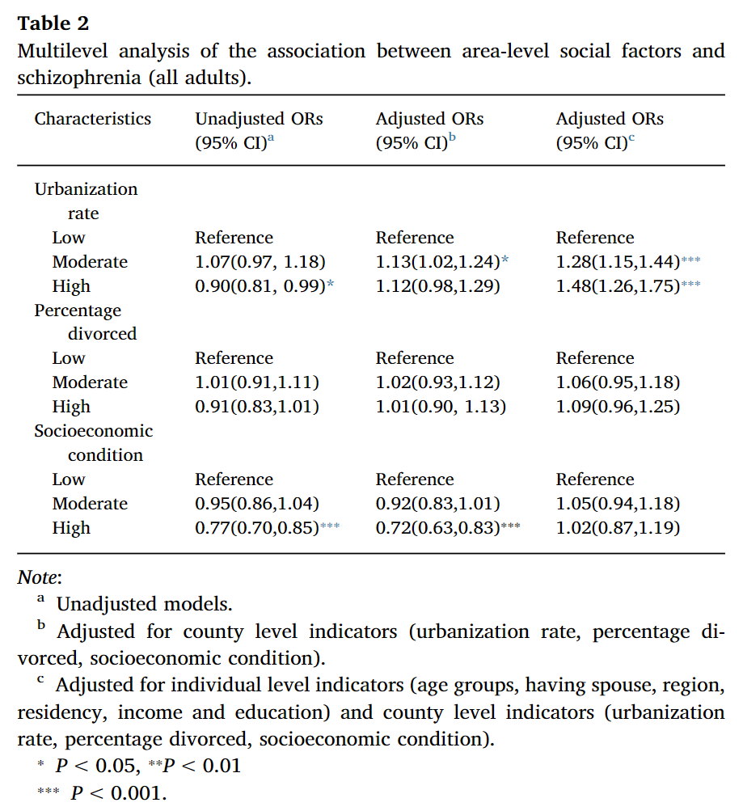
3.2 Repeated Measures: longitudinal (change over time) or conditional (no time component)
3.2.1 Repeated Measures - linear growth
One-to-one iPad echnology in the Middle School Mathematics and Science Classrooms
| Concept | Article Details |
|---|---|
| Terms | hierarchical linear modeling (HLM) |
| Samples |
|
| Time | Unclear, but assume time is treated as 6 equally spaced intervals (t = numeric: 0, 1, 2, 3, 4, 5) |
| Missing | Students were not eliminated if they did not have six scores since HLM allows for missing data at the first level (i.e. complete case analysis) |
| Centering | grand mean centering for the MAP test scores |
| Components | Single-level OLS, Null model HLM, RIAS (random slope for time), add covars |
| Results | Table showing design, nested equations, several ‘final’ model tables of results |
| Software | SPSS |
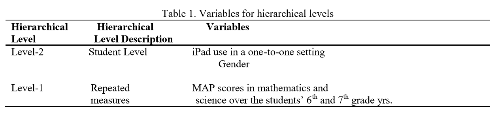
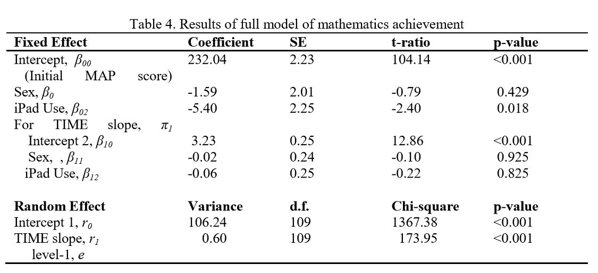
3.2.2 Cohort sequential or accelerated longitudinal design
Examining the Links Between Received Network Support and Marital Quality Among Mothers of Children with ASD: A Longitudinal Mediation Analysis
| Concept | Article Details |
|---|---|
| Terms | multilevel modeling (MLM), conditional growth model, longitudinal multiple mediation models |
| Samples |
|
| Time | Unclear, assume time is measured in years at study years 5, 7, and 9 (t = numeric age at each observation) |
| Missing | Assumed data was missing at random, so complete-case analysis |
| Centering | Time-varying predictors and mediators were disaggregated into their constituent within and between-person effects. To assess within-person effects, Level 1 predictors were created by person-mean centering each predictor or mediator (i.e., subtracting each mother’s cross-time mean score on a predictor from her actual score on that measure). Level 2 predictors were created by first computing a cross-time mean score on a predictor for each mother and then grand-mean centering that score. Finally, baseline child problem behavior severity was grand-mean centered with a mean of zero. |
| Components | Bivariate correlation matrix at baseline, Null for ICC, add fixed effects, mediation |
| Results | MLM only reported in text. All tables and figures apply to the mediation |
| Software | SPSS 25.0 with MLmed, a macro which tests for mediation and moderated mediation in multilevel data, Restricted maximum likelihood, 95% confidence intervals (CIs) based on Monte Carlo bootstrapping estimates |
3.2.3 SEM Framework
Disability multilevel modelling in first episodes of psychosis at 3-year follow-up
| Concept | Article Details |
|---|---|
| Terms | multilevel modeling statistical approach to repeated measures data, growth model |
| Samples |
|
| Time | Very unclear, but it does include “linear time” in the results |
| Missing | Only patients providing data for all the study variables during follow-up, and those who were assessed from the beginning of the study to the 1-year and 3-year follow-up were finally analyzed. |
| Centering | -not mentioned- |
| Components | group comparisons with Cohen’s d effect sizes, and decrease in Bayesian Information Criterion adjusted to sample size (SABIC) used to assess significance when comparing models, RIAS: Random intercepts and slope of time, assumption checking |
| Results | Table comparing nested models |
| Software | Mplus 6.11 |
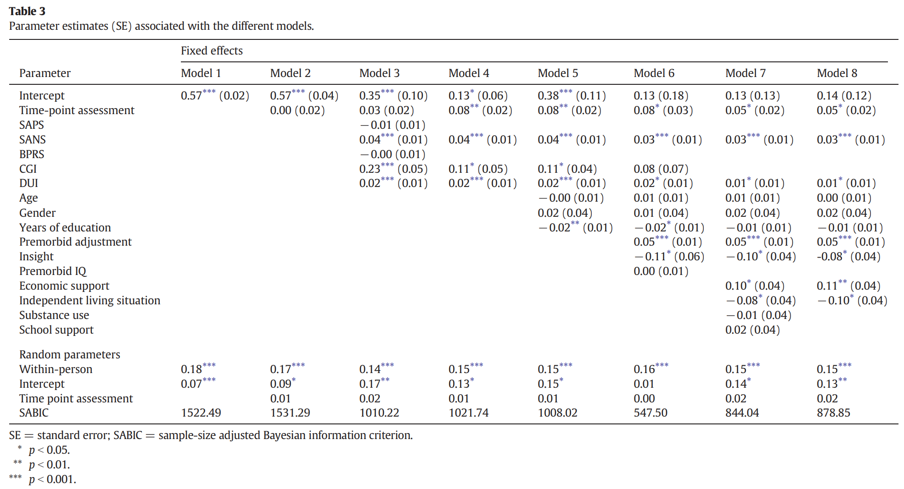
3.3 Both: Hierarchical longitudinal
| Concept | Article Details |
|---|---|
| Terms | |
| Samples |
|
| Missing | |
| Centering | |
| Components | |
| Results | |
| Software |
4 MLM, 2-levels: Pupil Popularity
Download a new GitHub package
library(tidyverse)
library(haven) # read in SPSS dataset
library(furniture) # nice table1() descriptives
library(stargazer) # display nice tables: summary & regression
library(texreg) # Convert Regression Output to LaTeX or HTML Tables
library(gridExtra) # place ggplots together as one plot
library(psych) # contains some useful functions, like headTail
library(car) # Companion to Applied Regression
library(nlme) # non-linear mixed-effects models
library(lme4) # Linear, generalized linear, & nonlinear mixed models
library(lmerTest) # Tests on lmer objects
library(performance) # icc and r-squared functions **NEWER**
library(interactions) # interaction plots **NEWER**
library(HLMdiag) # Diagnostic Tools for for MLM
library(redres) # Diagnosing MLM models
library(sjstats) # ICC calculations
library(optimx) # Different optimizers to solve mlm's4.1 Background
The text “Multilevel Analysis: Techniques and Applications, Third Edition” (Hox, Moerbeek, and Van de Schoot 2017) has a companion website which includes links to all the data files used throughout the book (housed on the book’s GitHub repository).
The following example is used through out Hox, Moerbeek, and Van de Schoot (2017)’s chapater 2.
From Appendix E:
The popularity data in popular2.sav are simulated data for 2000 pupils in 100 schools. The purpose is to offer a very simple example for multilevel regression analysis. The main outcome variable is the pupil popularity, a popularity rating on a scale of 1-10 derived by a sociometric procedure. Typically, a sociometric procedure asks all pupils in a class to rate all the other pupils, and then assigns the average received popularity rating to each pupil. Because of the sociometric procedure, group effects as apparent from higher level variance components are rather strong. There is a second outcome variable: pupil popularity as rated by their teacher, on a scale from 1-10. The explanatory variables are pupil gender (boy=0, girl=1), pupil extroversion (10-point scale) and teacher experience in years. The popularity data have been generated to be a ‘nice’ well-behaved data set: the sample sizes at both levels are sufficient, the residuals have a normal distribution, and the multilevel effects are strong.
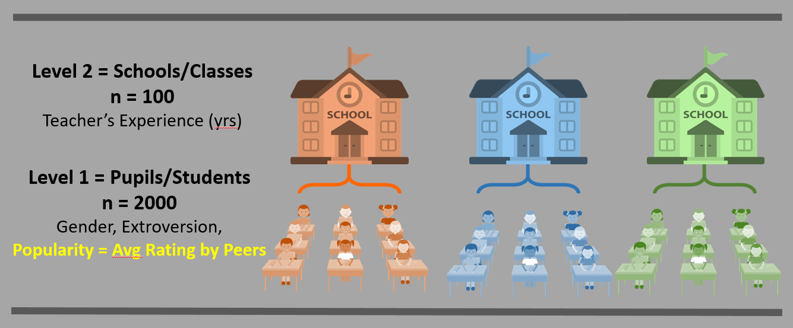
data_raw <- haven::read_sav("https://github.com/MultiLevelAnalysis/Datasets-third-edition-Multilevel-book/raw/master/chapter%202/popularity/SPSS/popular2.sav") %>%
haven::as_factor() # retain the labels from SPSS --> factor
tibble::glimpse(data_raw) Rows: 2,000
Columns: 15
$ pupil <dbl> 1, 2, 3, 4, 5, 6, 7, 8, 9, 10, 11, 12, 13, 14, 15, 16, 17...
$ class <dbl> 1, 1, 1, 1, 1, 1, 1, 1, 1, 1, 1, 1, 1, 1, 1, 1, 1, 1, 1, ...
$ extrav <dbl> 5, 7, 4, 3, 5, 4, 5, 4, 5, 5, 5, 5, 5, 5, 5, 6, 4, 4, 7, ...
$ sex <fct> girl, boy, girl, girl, girl, boy, boy, boy, boy, boy, gir...
$ texp <dbl> 24, 24, 24, 24, 24, 24, 24, 24, 24, 24, 24, 24, 24, 24, 2...
$ popular <dbl> 6.3, 4.9, 5.3, 4.7, 6.0, 4.7, 5.9, 4.2, 5.2, 3.9, 5.7, 4....
$ popteach <dbl> 6, 5, 6, 5, 6, 5, 5, 5, 5, 3, 5, 5, 5, 6, 5, 5, 2, 3, 7, ...
$ Zextrav <dbl> -0.1703149, 1.4140098, -0.9624772, -1.7546396, -0.1703149...
$ Zsex <dbl> 0.9888125, -1.0108084, 0.9888125, 0.9888125, 0.9888125, -...
$ Ztexp <dbl> 1.48615283, 1.48615283, 1.48615283, 1.48615283, 1.4861528...
$ Zpopular <dbl> 0.88501327, -0.12762911, 0.16169729, -0.27229230, 0.66801...
$ Zpopteach <dbl> 0.66905609, -0.04308451, 0.66905609, -0.04308451, 0.66905...
$ Cextrav <dbl> -0.215, 1.785, -1.215, -2.215, -0.215, -1.215, -0.215, -1...
$ Ctexp <dbl> 9.737, 9.737, 9.737, 9.737, 9.737, 9.737, 9.737, 9.737, 9...
$ Csex <dbl> 0.5, -0.5, 0.5, 0.5, 0.5, -0.5, -0.5, -0.5, -0.5, -0.5, 0...4.1.1 Unique Identifiers
We will restrict ourselves to a few of the variables and create a distinct identifier variable for each student.
data_pop <- data_raw %>%
dplyr::mutate(id = paste(class, pupil,
sep = "_") %>% # create a unique id for each student (char)
factor()) %>% # declare id is a factor
dplyr::select(id, pupil:popteach) # reduce the variables included
tibble::glimpse(data_pop)Rows: 2,000
Columns: 8
$ id <fct> 1_1, 1_2, 1_3, 1_4, 1_5, 1_6, 1_7, 1_8, 1_9, 1_10, 1_11, 1...
$ pupil <dbl> 1, 2, 3, 4, 5, 6, 7, 8, 9, 10, 11, 12, 13, 14, 15, 16, 17,...
$ class <dbl> 1, 1, 1, 1, 1, 1, 1, 1, 1, 1, 1, 1, 1, 1, 1, 1, 1, 1, 1, 1...
$ extrav <dbl> 5, 7, 4, 3, 5, 4, 5, 4, 5, 5, 5, 5, 5, 5, 5, 6, 4, 4, 7, 4...
$ sex <fct> girl, boy, girl, girl, girl, boy, boy, boy, boy, boy, girl...
$ texp <dbl> 24, 24, 24, 24, 24, 24, 24, 24, 24, 24, 24, 24, 24, 24, 24...
$ popular <dbl> 6.3, 4.9, 5.3, 4.7, 6.0, 4.7, 5.9, 4.2, 5.2, 3.9, 5.7, 4.8...
$ popteach <dbl> 6, 5, 6, 5, 6, 5, 5, 5, 5, 3, 5, 5, 5, 6, 5, 5, 2, 3, 7, 4...4.1.2 Structure and variables
Its a good idea to visually inspect the first few lines in the datast to get a sense of how it is organized.
| id | pupil | class | extrav | sex | texp | popular | popteach |
|---|---|---|---|---|---|---|---|
| 1_1 | 1 | 1 | 5 | girl | 24 | 6.3 | 6 |
| 1_2 | 2 | 1 | 7 | boy | 24 | 4.9 | 5 |
| 1_3 | 3 | 1 | 4 | girl | 24 | 5.3 | 6 |
| 1_4 | 4 | 1 | 3 | girl | 24 | 4.7 | 5 |
| 1_5 | 5 | 1 | 5 | girl | 24 | 6 | 6 |
| 1_6 | 6 | 1 | 4 | boy | 24 | 4.7 | 5 |
| 1_7 | 7 | 1 | 5 | boy | 24 | 5.9 | 5 |
| 1_8 | 8 | 1 | 4 | boy | 24 | 4.2 | 5 |
| 1_9 | 9 | 1 | 5 | boy | 24 | 5.2 | 5 |
| 1_10 | 10 | 1 | 5 | boy | 24 | 3.9 | 3 |
| 1_11 | 11 | 1 | 5 | girl | 24 | 5.7 | 5 |
| 1_12 | 12 | 1 | 5 | girl | 24 | 4.8 | 5 |
| 1_13 | 13 | 1 | 5 | boy | 24 | 5 | 5 |
| 1_14 | 14 | 1 | 5 | girl | 24 | 5.5 | 6 |
| 1_15 | 15 | 1 | 5 | girl | 24 | 6 | 5 |
| 1_16 | 16 | 1 | 6 | girl | 24 | 5.7 | 5 |
| 1_17 | 17 | 1 | 4 | boy | 24 | 3.2 | 2 |
| 1_18 | 18 | 1 | 4 | boy | 24 | 3.1 | 3 |
| 1_19 | 19 | 1 | 7 | girl | 24 | 6.6 | 7 |
| 1_20 | 20 | 1 | 4 | boy | 24 | 4.8 | 4 |
| 2_1 | 1 | 2 | 8 | girl | 14 | 6.4 | 6 |
| 2_2 | 2 | 2 | 4 | boy | 14 | 2.4 | 3 |
| 2_3 | 3 | 2 | 6 | boy | 14 | 3.7 | 4 |
| 2_4 | 4 | 2 | 5 | girl | 14 | 4.4 | 4 |
| 2_5 | 5 | 2 | 5 | girl | 14 | 4.3 | 4 |
| NA | … | … | … | NA | … | … | … |
| 100_16 | 16 | 100 | 4 | girl | 7 | 4.3 | 5 |
| 100_17 | 17 | 100 | 4 | boy | 7 | 2.6 | 2 |
| 100_18 | 18 | 100 | 8 | girl | 7 | 6.7 | 7 |
| 100_19 | 19 | 100 | 5 | boy | 7 | 2.9 | 3 |
| 100_20 | 20 | 100 | 9 | boy | 7 | 5.3 | 5 |
Visual inspection reveals that most of the variables are measurements at level 1 and apply to specific pupils (extrav, sex, popular, and popteach), while the teacher’s years of experiene is a level 2 variable since it applies to the entire class. Notice how the texp variable is identical for all pupils in the same class. This is call Disaggregated data.
4.2 Exploratory Data Analysis
4.2.1 Summarize Descriptive Statistics
4.2.1.1 The stargazer package
Most posters, journal articles, and reports start with a table of descriptive statistics. Since it tends to come first, this type of table is often refered to as Table 1. The stargazer() function can be used to create such a table, but only for the entire dataset (Hlavac 2018). I haven’t been able to find a way to get it to summarize subsamples and compare them in the standard format.
data_pop %>%
dplyr::select(extrav, texp, popular) %>%
data.frame() %>%
stargazer::stargazer(title = "Descriptive statistics, aggregate over entire sample",
header = FALSE,
type = "html")| Statistic | N | Mean | St. Dev. | Min | Pctl(25) | Pctl(75) | Max |
| extrav | 2,000 | 5.215 | 1.262 | 1 | 4 | 6 | 10 |
| texp | 2,000 | 14.263 | 6.552 | 2 | 8 | 20 | 25 |
| popular | 2,000 | 5.076 | 1.383 | 0.000 | 4.100 | 6.000 | 9.500 |
4.2.1.2 The furniture package
Tyson Barrett’s furniture package includes the extremely useful function table1() which simplifies the common task of creating a stratified, comparative table of descriptive statistics. Full documentation can be accessed by executing ?furniture::table1.
# Knit to Website: output = "html"
# Knit to PDF: output = "latex2"
# View on Screen: output = ""text", or "markdown", "html"
data_pop %>%
furniture::table1("Pupil's extroversion (10 pt)" = extrav,
"Teacher's Experience (years)" = texp,
"Popularity, Sociometric Score" = popular,
"Popularity, Teacher Evaluated" = popteach,
splitby = ~ sex, # divide sample into columns by...
test = TRUE, # test groups different?
output = "markdown", # output for lon screen/knitting
caption = "Compare genders on four main variables") # title| boy | girl | P-Value | |
|---|---|---|---|
| n = 989 | n = 1011 | ||
| Pupil’s extroversion (10 pt) | <.001 | ||
| 5.1 (1.2) | 5.3 (1.3) | ||
| Teacher’s Experience (years) | 0.001 | ||
| 13.8 (6.3) | 14.7 (6.8) | ||
| Popularity, Sociometric Score | <.001 | ||
| 4.3 (1.1) | 5.9 (1.1) | ||
| Popularity, Teacher Evaluated | <.001 | ||
| 4.3 (1.2) | 5.8 (1.2) |
4.2.2 Visualizations of Raw Data
4.2.2.1 Ignore Clustering
4.2.2.1.1 Scatterplots
For a first look, its useful to plot all the data points on a single scatterplot as displayed in Figure @ref(fig:scatter). Due to ganularity in the rating scale, many points end up being plotted on top of each other (overplotted), so its a good idea to use geom_count() rather than geom_point() so the size of the dot can convey the number of points at that location (Wickham et al. 2020).
# Disaggregate: pupil (level 1) only, ignore level 2's existance
# extroversion treated: continuous measure
data_pop %>%
ggplot() +
aes(x = extrav, # x-axis variable
y = popular) + # y-axis variable
geom_count() + # POINTS w/ SIZE = COUNT
geom_smooth(method = "lm") + # linear regression line
theme_bw() + # white background
labs(x = "extroversion (10 pt scale)", # x-axis label
y = "Popularity, Sociometric Score", # y-axis label
size = "Count") + # legend key's title
theme(legend.position = c(0.9, 0.2), # key at
legend.background = element_rect(color = "black")) + # key box
scale_x_continuous(breaks = seq(from = 0, to = 10, by = 1)) + # x-ticks
scale_y_continuous(breaks = seq(from = 0, to = 10, by = 2)) # y-ticks(#fig:scatter)Disaggregate: pupil level only with extroversion treated as an continuous measure.
4.2.2.1.2 Density Plots
When the degree of overplotting as high as it is in Figure @ref(fig:scatter), it can be useful to represent the data with density contours as seen in Figure @ref(fig:scatter2d). I’ve chosen to leave the points displayed in this redition, but color them much lighter so that they are present, but do not detract from the pattern of association.
# visualize all the data - another way
data_pop %>%
ggplot() +
aes(x = extrav, # x-axis variable
y = popular) + # y-axis variable
geom_count(color = "gray") + # POINTS w/ SIZE = COUNT
geom_density2d() + # DENSITY CURVES
geom_smooth(method = "lm", color = "red") + # linear regression line
theme_bw() + # white background
labs(x = "Extroversion (10 pt scale)", # x-axis label
y = "Popularity, Sociometric Score") + # y-axis label
guides(size = FALSE) + # don't include a legend
scale_x_continuous(breaks = seq(from = 0, to = 10, by = 1)) + # x-ticks
scale_y_continuous(breaks = seq(from = 0, to = 10, by = 2)) # y-ticks(#fig:scatter2d)Disaggregate: pupil level only with extroversion treated as an continuous measure.
4.2.2.1.3 Hexagonal Heatmap Plots
Divides the x-y plane into regular hexagons, counts the number of cases in each hexagon, and then (by default) maps the number of cases to the hexagon fill.
The argument could be made that the extroversion score should be treated as an ordinal factor instead of as a truly continuous scale since the only valid values are the whole number 1 through 10 and there is no assurance that these category assignments represent a true ratio measurement scale. However, we must keep in mind that this was an observational study, ans as such, the number of pupils assignment each level of extroversion is not equal.
# count the number of pupils in assigned each extroversion value, 1:10
table <- data_pop %>%
group_by(extrav) %>%
summarise(count = n_distinct(id),
percent = 100 * count / 2000)# Knit to Website: type = "html"
# Knit to PDF: type = "latex"
# View on Screen: type = "text"
table %>%
stargazer::stargazer(summary = FALSE,
rownames = FALSE,
header = FALSE,
type = "text",
title = "Distribution of extroversion in pupils")| extrav | count | percent |
| 1 | 3 | 0.15 |
| 2 | 13 | 0.65 |
| 3 | 119 | 5.95 |
| 4 | 423 | 21.15 |
| 5 | 688 | 34.4 |
| 6 | 478 | 23.9 |
| 7 | 194 | 9.7 |
| 8 | 58 | 2.9 |
| 9 | 18 | 0.9 |
| 10 | 6 | 0.3 |
4.2.2.1.4 Boxplots
Figure @ref(fig:boxes) displays the same data as Figure @ref(fig:scatter), but uses boxplots for the distribution of scores at each level of extroversion. On one extreme, the lowest extroversion score possible was a value of “one”, but only 3 pupils or 0.15% of the 2000 pupils recieved this value. On the other extreme, the middle value of “five” was applied to 688 pupils or a wopping 34.4%. The option varwidth=TRUE in the geom_boxplot() function helps reflect such unbalanced sample sizes by allowing the width of the boxes to be proportional to the square-roots of the number of observations each box represents.
# Disaggregate: pupil (level 1) only, ignore level 2's existance
# extroversion treated: ordinal factor
ggplot(data_pop, # dataset's name
aes(x = factor(extrav), # x-axis values - make factor!
y = popular, # y-axis values
fill = factor(extrav))) + # makes seperate boxes
geom_boxplot(varwidth = TRUE) + # draw boxplots instead of points
theme_bw() + # white background
guides(fill = FALSE) + # don't include a legend
scale_y_continuous(breaks = seq(from = 0, to = 10, by = 2)) + # y-ticks
labs(x = "extroversion (10 pt scale)", # x-axis label
y = "Popularity, Sociometric Score") + # y-axis label
scale_fill_brewer(palette = "Spectral", direction = 1) # select color(#fig:boxes)Disaggregate: pupil level only with extroversion treated as an ordinal factor. The width of the boxes are proportional to the square-roots of the number of observations each box represents.
4.2.3 Consider Clustering
4.2.3.1 Scatterplots
Up to this point, all investigation of this dataset has been only at the pupil level and any nesting or clustering within classes has been ignored. Plotting is a good was to start to get an idea of the class-to-class variability.
# compare the first 9 classrooms becuase all of there are too many at once
data_pop %>%
dplyr::filter(class <= 9) %>% # select ONLY NINE classes
ggplot(aes(x = extrav, # x-axis values
y = popular)) + # y-axis values
geom_count() + # POINTS w/ SIZE = COUNT
geom_smooth(method = "lm", color = "red") + # linear regression line
theme_bw() + # white background
labs(x = "extroversion (10 pt scale)", # x-axis label
y = "Popularity, Sociometric Score", # y-axis label
size = "Count") + # legend key's title
guides(size = FALSE) + # don't include a legend
scale_x_continuous(breaks = seq(from = 0, to = 10, by = 3)) + # x-ticks
scale_y_continuous(breaks = seq(from = 0, to = 10, by = 3)) + # y-ticks
facet_wrap(~ class,
labeller = label_both) +
theme(strip.background = element_rect(colour = NA,
fill = NA))(#fig:scatter3x3)Illustration of the degree of class level variability in the association between extroversion and popularity. Each panel represents a class and each point a pupil in that class. First nice classes shown.
# select specific classes by number for illustration purposes
data_pop %>%
dplyr::filter(class %in% c(15, 25, 33,
35, 51, 64,
76, 94, 100)) %>%
ggplot(aes(x = extrav, # x-axis values
y = popular)) + # y-axis values
geom_count() + # POINTS w/ SIZE = COUNT
geom_smooth(method = "lm", color = "red") + # linear regression line
theme_bw() + # white background
labs(x = "extroversion (10 pt scale)", # x-axis label
y = "Popularity, Sociometric Score", # y-axis label
size = "Count") + # legend key's title
guides(size = FALSE) + # don't include a legend
scale_x_continuous(breaks = seq(from = 0, to = 10, by = 3)) + # x-ticks
scale_y_continuous(breaks = seq(from = 0, to = 10, by = 3)) + # y-ticks
facet_wrap(~ class) +
theme(strip.background = element_blank(),
strip.text = element_blank())(#fig:scatter3x3b)Illustration of the degree of class level variability in the association between extroversion and popularity. Each panel represents a class and each point a pupil in that class. A set of nine classes was chosen to show a sampling of variability. The facet labels are not shown as the identification number probably would not be advisable for a general publication.
4.2.3.2 Cluster-wise Regression
# compare all 100 classrooms via linear model for each
data_pop %>%
ggplot(aes(x = extrav, # x-axis values
y = popular, # y-axis values
group = class)) + # GROUPs for LINES
geom_smooth(method = "lm", # linear regression line
color = "gray40",
size = 0.4,
se = FALSE) +
theme_bw() + # white background
labs(x = "extroversion (10 pt scale)", # x-axis label
y = "Popularity, Sociometric Score") + # y-axis label
scale_x_continuous(breaks = seq(from = 0, to = 10, by = 2)) + # x-ticks
scale_y_continuous(breaks = seq(from = 0, to = 10, by = 2)) # y-ticks(#fig:classLMs)Spaghetti plot of seperate, independent linear models for each of the 100 classes.
A helpful resource for choosing colors to use in plots: R color cheatsheet
# compare all 100 classrooms via independent linear models
data_pop %>%
dplyr::mutate(texp3 = cut(texp,
breaks = c(0, 10, 18, 30)) %>%
factor(labels = c("< 10 yrs",
"10 - 18 yrs",
"> 18 yrs"))) %>%
ggplot(aes(x = extrav, # x-axis values
y = popular, # y-axis values
group = class)) + # GROUPs for LINES
geom_smooth(aes(color = sex),
size = 0.3,
method = "lm", # linear regression line
se = FALSE) +
theme_bw() + # white background
labs(x = "extroversion (10 pt scale)", # x-axis label
y = "Popularity, Sociometric Score") + # y-axis label
guides(color = FALSE) + # don't include a legend
scale_x_continuous(breaks = seq(from = 0, to = 10, by = 3)) + # x-ticks
scale_y_continuous(breaks = seq(from = 0, to = 10, by = 3)) + # y-ticks
scale_color_manual(values = c("dodgerblue", "maroon1")) +
facet_grid(texp3 ~ sex) (#fig:classLMs3x2)Spaghetti plot of seperate, independent linear models for each of the 100 classes. Seperate panels are used to untangle the ‘hairball’ in the previous figure. The columns are seperated by the pupils’ gender and the rows by the teacher’s experince in years.
4.3 Single-level Regression Analysis
4.3.1 Null Model
In a Null, intercept-only, or Empty model, no predictors are included.
4.3.1.1 Equations
Single-Level Regression Equation - Null Model \[ \overbrace{POP_{ij}}^{Outcome} = \underbrace{\beta_{0}}_{\text{Fixed}\atop\text{intercept}} + \underbrace{e_{ij}}_{\text{Random}\atop\text{residuals}} \]
4.3.1.2 Parameters
| Type | Parameter of Interest | Estimates This |
|---|---|---|
| Fixed | Intercept | \(\beta_{0}\) |
| Random | Residual Variance \(var[e_{ij}]\) | \(\sigma^2_{e}\) |
4.3.1.3 Fit the Model
Call:
lm(formula = popular ~ 1, data = data_pop)
Residuals:
Min 1Q Median 3Q Max
-5.0765 -0.9765 0.0235 0.9236 4.4235
Coefficients:
Estimate Std. Error t value Pr(>|t|)
(Intercept) 5.07645 0.03091 164.2 <2e-16 ***
---
Signif. codes: 0 '***' 0.001 '**' 0.01 '*' 0.05 '.' 0.1 ' ' 1
Residual standard error: 1.383 on 1999 degrees of freedom\(\hat{\beta_0}\) = 5.08 is the grand mean
Call:
glm(formula = popular ~ 1, data = data_pop)
Deviance Residuals:
Min 1Q Median 3Q Max
-5.0764 -0.9764 0.0236 0.9236 4.4236
Coefficients:
Estimate Std. Error t value Pr(>|t|)
(Intercept) 5.07645 0.03091 164.2 <2e-16 ***
---
Signif. codes: 0 '***' 0.001 '**' 0.01 '*' 0.05 '.' 0.1 ' ' 1
(Dispersion parameter for gaussian family taken to be 1.911366)
Null deviance: 3820.8 on 1999 degrees of freedom
Residual deviance: 3820.8 on 1999 degrees of freedom
AIC: 6974.4
Number of Fisher Scoring iterations: 24.3.1.4 Model Fit
# Indices of model performance
AIC | BIC | R2 | R2_adjusted | RMSE
-------------------------------------------
6974.39 | 6985.59 | 0 | 0 | 1.38# Indices of model performance
AIC | BIC | R2_Nagelkerke | RMSE
----------------------------------------
6974.39 | 6985.59 | 0 | 1.38# Comparison of Model Performance Indices
Model | Type | AIC | BIC | RMSE | R2 | R2_adjusted | R2_Nagelkerke | BF
-----------------------------------------------------------------------------------
pop_lm_0 | lm | 6974.39 | 6985.59 | 1.38 | 0 | 0 | |
pop_glm_0 | glm | 6974.39 | 6985.59 | 1.38 | | | 0 | 1Residual variance:
[1] 1.382522[1] 1.911366\(\hat{\sigma_e^2}\) = 1.9114 is residual variance (RMSE is sigma = 1.3825)
Variance Explained:
[1] 0\(R^2\) = 0 is the proportion of variance in popularity that is explained by the grand mean alone.
Deviance:
'log Lik.' 6970.39 (df=2)4.3.1.5 Interpretation
The grand average popularity of all pupils in all the classes is 5.08, and there is strong evidence that it is statistically significantly different than zero, \(p<.0001\). The mean alone accounts for none of the variance in popularity. The residual variance is the same as the total variance in popularity, 1.9114.
Just to make sure…
[1] 5.07645[1] 1.9113664.3.2 Add Predictors to the Model
4.3.2.1 Equations
LEVEL 1: Student-specific predictors:
- \(X_1 = GEN\), pupils’s gender (girl vs. boy)
- \(X_2 = EXT\), pupil’s extroversion (scale: 1-10)
Single-Level Regression Equation \[ \overbrace{POP_{ij}}^{Outcome} = \underbrace{\beta_{0}}_{\text{Fixed}\atop\text{intercept}} + \underbrace{\beta_{1}}_{\text{Fixed}\atop\text{slope}} \overbrace{GEN_{ij}}^{\text{Predictor 1}} + \underbrace{\beta_{2}}_{\text{Fixed}\atop\text{slope}} \overbrace{EXT_{ij}}^{\text{Predictor 2}} + \underbrace{e_{ij}}_{\text{Random}\atop\text{residuals}} \tag{Hox 2.1} \]
4.3.2.2 Parameters
| Type | Parameter of Interest | Estimates This |
|---|---|---|
| Fixed | Intercept | \(\beta_{0}\) |
| Fixed | Slope or effect of sex |
\(\beta_{1}\) |
| Fixed | Slope or effect of extrav |
\(\beta_{2}\) |
| Random | Residual Variance \(var[e_{ij}]\) | \(\sigma^2_{e}\) |
4.3.2.3 Fit the Model
pop_lm_1 <- lm(popular ~ sex + extrav, # implies: 1 + sex + extrav
data = data_pop)
summary(pop_lm_1)
Call:
lm(formula = popular ~ sex + extrav, data = data_pop)
Residuals:
Min 1Q Median 3Q Max
-4.2527 -0.6652 -0.0454 0.7422 3.0473
Coefficients:
Estimate Std. Error t value Pr(>|t|)
(Intercept) 2.78954 0.10355 26.94 <2e-16 ***
sexgirl 1.50508 0.04836 31.12 <2e-16 ***
extrav 0.29263 0.01916 15.28 <2e-16 ***
---
Signif. codes: 0 '***' 0.001 '**' 0.01 '*' 0.05 '.' 0.1 ' ' 1
Residual standard error: 1.077 on 1997 degrees of freedom
Multiple R-squared: 0.3938, Adjusted R-squared: 0.3932
F-statistic: 648.6 on 2 and 1997 DF, p-value: < 2.2e-16pop_glm_1 <- glm(popular ~ sex + extrav, # implies: 1 + sex + extrav
data = data_pop)
summary(pop_glm_1)
Call:
glm(formula = popular ~ sex + extrav, data = data_pop)
Deviance Residuals:
Min 1Q Median 3Q Max
-4.2527 -0.6652 -0.0454 0.7422 3.0473
Coefficients:
Estimate Std. Error t value Pr(>|t|)
(Intercept) 2.78954 0.10355 26.94 <2e-16 ***
sexgirl 1.50508 0.04836 31.12 <2e-16 ***
extrav 0.29263 0.01916 15.28 <2e-16 ***
---
Signif. codes: 0 '***' 0.001 '**' 0.01 '*' 0.05 '.' 0.1 ' ' 1
(Dispersion parameter for gaussian family taken to be 1.159898)
Null deviance: 3820.8 on 1999 degrees of freedom
Residual deviance: 2316.3 on 1997 degrees of freedom
AIC: 5977.4
Number of Fisher Scoring iterations: 2\(\hat{\beta_0}\) = 2.79 is the extrapolated mean for boys with an extroversion score of 0.
\(\hat{\beta_1}\) = 1.51 is the mean difference between girls and boys with the same extroversion score.
\(\hat{\beta_2}\) = 0.29 is the mean difference for pupils of the same gender that differ in extroversion by one point.
4.3.2.4 Model Fit
Residual variance:
[1] 1.076985[1] 1.159898\(\hat{\sigma_e^2}\) = 1.1599 is residual variance (RMSE is sigma)
Variance Explained:
[1] 0.393765Deviance:
'log Lik.' 5969.415 (df=4)\(R^2\) = 0.394 is the proportion of variance in popularity that is explained by tha pupils gender and extroversion score.
# Indices of model performance
AIC | BIC | R2 | R2_adjusted | RMSE
---------------------------------------------
5977.41 | 5999.82 | 0.39 | 0.39 | 1.08Note":
BF= the Bayes factor
# Comparison of Model Performance Indices
Model | Type | AIC | BIC | R2 | R2_adjusted | RMSE | BF | Performance_Score
-----------------------------------------------------------------------------------------------
pop_lm_1 | lm | 5977.41 | 5999.82 | 0.39 | 0.39 | 1.08 | 1.14e+214 | 100.00%
pop_lm_0 | lm | 6974.39 | 6985.59 | 0.00 | 0.00 | 1.38 | 1.00 | 0.00%
Model pop_lm_1 (of class lm) performed best with an overall performance score of 100.00%.# Comparison of Model Performance Indices
Model | Type | AIC | BIC | R2_Nagelkerke | RMSE | BF | Performance_Score
-------------------------------------------------------------------------------------------
pop_glm_1 | glm | 5977.41 | 5999.82 | 0.62 | 1.08 | 1.14e+214 | 100.00%
pop_glm_0 | glm | 6974.39 | 6985.59 | 0.00 | 1.38 | 1.00 | 0.00%
Model pop_glm_1 (of class glm) performed best with an overall performance score of 100.00%.4.3.2.5 Interpretation
On average, girls were rated 1.51 points more popular than boys with the same extroversion score, \(p<.0001\). One point higher extroversion scores were associated with 0.29 points higher popularity, within each gender, \(p<.0001\). Together, these two factors account for 39.38% of the variance in populartiy.
4.3.3 Compare Fixed Effects
4.3.3.1 Compare Nested Models
Create a table to compare the two nested models:
texreg::knitreg(list(pop_glm_0,
pop_glm_1),
custom.model.names = c("Null Model",
"With Predictors"),
caption = "Single Level Models: ML with the `glm()` function",
caption.above = TRUE,
single.row = TRUE,
bold = TRUE,
label = "wow")| Null Model | With Predictors | |
|---|---|---|
| (Intercept) | 5.08 (0.03)*** | 2.79 (0.10)*** |
| sexgirl | 1.51 (0.05)*** | |
| extrav | 0.29 (0.02)*** | |
| AIC | 6974.39 | 5977.42 |
| BIC | 6985.59 | 5999.82 |
| Log Likelihood | -3485.20 | -2984.71 |
| Deviance | 3820.82 | 2316.32 |
| Num. obs. | 2000 | 2000 |
| p < 0.001; p < 0.01; p < 0.05 | ||
texreg::knitreg(list(pop_glm_0,
pop_glm_1),
custom.model.names = c("Null Model",
"With Predictors"),
caption = "Single Level Models: ML with the `glm()` function",
caption.above = TRUE,
single.row = TRUE)| Null Model | With Predictors | |
|---|---|---|
| (Intercept) | 5.08 (0.03)*** | 2.79 (0.10)*** |
| sexgirl | 1.51 (0.05)*** | |
| extrav | 0.29 (0.02)*** | |
| AIC | 6974.39 | 5977.42 |
| BIC | 6985.59 | 5999.82 |
| Log Likelihood | -3485.20 | -2984.71 |
| Deviance | 3820.82 | 2316.32 |
| Num. obs. | 2000 | 2000 |
| p < 0.001; p < 0.01; p < 0.05 | ||
When comparing the fit of two single-level models fit via the lm() function, the anova() function runs an F-test where the test statistic is the difference in RSS.
Analysis of Variance Table
Model 1: popular ~ 1
Model 2: popular ~ sex + extrav
Res.Df RSS Df Sum of Sq F Pr(>F)
1 1999 3820.8
2 1997 2316.3 2 1504.5 648.55 < 2.2e-16 ***
---
Signif. codes: 0 '***' 0.001 '**' 0.01 '*' 0.05 '.' 0.1 ' ' 1Analysis of Deviance Table
Model 1: popular ~ 1
Model 2: popular ~ sex + extrav
Resid. Df Resid. Dev Df Deviance
1 1999 3820.8
2 1997 2316.3 2 1504.5Obviously the model with predictors fits better than the model with no predictors.
4.3.3.2 Terminology
The following terminology applies to single-level models fit with ordinary least-squared estimation (the lm() function in \(R\)). Values are calculated below for the NULL model.
- Mean squared error (MSE) is the MEAN of the square of the residuals:
[1] 1.91041- Root mean squared error (RMSE) which is the SQUARE ROOT of MSE:
[1] 1.382176- Residual sum of squares (RSS) is the SUM of the squared residuals:
[1] 3820.821- Residual standard error (RSE) is the SQUARE ROOT of (RSS / degrees of freedom):
[1] 1.382522The same calculation, may be simplified with the previously calculated RSS:
[1] 1.382522When the ‘deviance()’ function is applied to a single-level model fit via ‘lm()’, the Residual sum of squares (RSS) is returned, not the deviance as defined as twice the negative log likelihood (-2LL).
[1] 3820.821'log Lik.' 6970.39 (df=2)4.4 Multi-level Regression Analysis
4.4.1 Intercept-only or Null Model
In a Null, intercept-only, or Empty model, no predictors are included.
“The intercept-only model is useful as a null-model that serves as a benchmark with which other models are compared.” Hox, Moerbeek, and Van de Schoot (2017), page 13
4.4.1.1 Equations
Level 1 Model Equation:
\[ \overbrace{Y_{ij}}^{Outcome} = \underbrace{\beta_{0j}}_{\text{Level 2}\atop\text{intercepts}} + \underbrace{e_{ij}}_{\text{Random}\atop\text{residuals}} \tag{Hox 2.6} \]
Level 2 Model Equation:
\[ \overbrace{\beta_{0j}}^{\text{Level 2}\atop\text{intercepts}} = \underbrace{\gamma_{00}}_{\text{Fixed}\atop\text{intercept}} + \underbrace{u_{0j}}_{\text{Random}\atop\text{intercepts}} \tag{Hox 2.7} \]
Substitute equation (2.7) into equation (2.6):
Combined, Multilevel Model Equation - Null Model \[ \overbrace{Y_{ij}}^{Outcome} = \underbrace{\gamma_{00}}_{\text{Fixed}\atop\text{intercept}} + \underbrace{u_{0j}}_{\text{Random}\atop\text{intercepts}} + \underbrace{e_{ij}}_{\text{Random}\atop\text{residuals}} \tag{Hox 2.8} \]
4.4.1.2 Parameters
| Type | Parameter of Interest | Estimates This |
|---|---|---|
| Fixed | Intercept | \(\gamma_{00}\) |
| Random | Variance in random intercepts, \(var[u_{0j}]\) | \(\sigma^2_{u0}\) |
| Random | Residual Variance \(var[e_{ij}]\) | \(\sigma^2_{e}\) |
Hox, Moerbeek, and Van de Schoot (2017) labeled the Null model for this dataset “\(M_0\)” in chapter 2:
Combined, Multilevel Model Equation - Popularity, Random Intercepts Only! \[ \overbrace{POP_{ij}}^{Outcome} = \underbrace{\gamma_{00}}_{\text{Fixed}\atop\text{intercept}} + \underbrace{u_{0j}}_{\text{Random}\atop\text{intercepts}} + \underbrace{e_{ij}}_{\text{Random}\atop\text{residuals}} \tag{M0: intercept only} \]
4.4.1.3 Fit the Model
Fit the model to the data.
pop_lmer_0_re <- lmerTest::lmer(popular ~ 1 + (1|class), # include a fixed and random intercept
data = data_pop,
REML = TRUE) # fit via REML (the default) for ICC calculations
summary(pop_lmer_0_re)Linear mixed model fit by REML. t-tests use Satterthwaite's method [
lmerModLmerTest]
Formula: popular ~ 1 + (1 | class)
Data: data_pop
REML criterion at convergence: 6330.5
Scaled residuals:
Min 1Q Median 3Q Max
-3.5655 -0.6975 0.0020 0.6758 3.3175
Random effects:
Groups Name Variance Std.Dev.
class (Intercept) 0.7021 0.8379
Residual 1.2218 1.1053
Number of obs: 2000, groups: class, 100
Fixed effects:
Estimate Std. Error df t value Pr(>|t|)
(Intercept) 5.07786 0.08739 98.90973 58.1 <2e-16 ***
---
Signif. codes: 0 '***' 0.001 '**' 0.01 '*' 0.05 '.' 0.1 ' ' 1Estimation Methods
Multilevel models may be fit by various methods. The most commonly used (and availabel in ‘lme4’) optimize various criterions: Maximum Likelihood (ML) -or- Restricted Maximum Likelihood (REML). Hox, Moerbeek, and Van de Schoot (2017) discusses these and other methods in chapter 3. At the end of chapter 2, the authors’ second note staes that the details of estimation methods are glossed over in the current example in an effort to simplfy the introductory. Here we follow these guidelines:
-
Use ML for fitting:
- nested models that differ only by inclusion/exclusion of FIXED effects, to test parameter significance via a likelihood ratio test
-
Use REML for fitting:
- the NULL model, on which to base ICC calculations
-
nested models that differ only by inclusion/exclusion of RANDOM effects, to test parameter significance via a likelihood ratio test
- the FINAL model
This often leads to refitting identical models via BOTH estimation methods.
4.4.1.4 Interpretation
The grand average popularity of all students is 5.0779 and the class averages tend to vary by about 0.8333 points above or below that.
4.4.2 Intraclass Correlation (ICC)
Although the Null model above does not explain any variance in the dependent variable (popularity), since there are no independent variables, it does decompose (i.e. divide up) the variance into two pieces. We can compute the amount of total variance in popularity that is attribute to the clustering of students in classes verses the residual variance.
Intraclass Correlation (ICC) Formula \[ \overbrace{\rho}^{\text{ICC}} = \frac{\overbrace{\sigma^2_{u0}}^{\text{Random Intercept}\atop\text{Variance}}} {\underbrace{\sigma^2_{u0}+\sigma^2_{e}}_{\text{Total}\atop\text{Variance}}} \tag{Hox 2.9} \]
The VarCorr() function in the lme4 package returns the standard deviations, not the variances (\(var = SD^2\)) for a model fit via the lme4::lmer() function. The summary() function reports both the variances and the stadard deviations.
lme4::VarCorr(pop_lmer_0_re) %>% # extract random compondent: varrainces and correlations
print(comp = c("Variance", "Std.Dev"),
digits = 3) Groups Name Variance Std.Dev.
class (Intercept) 0.702 0.838
Residual 1.222 1.105 $var.fixed
[1] 0
$var.random
[1] 0.7021047
$var.residual
[1] 1.221793
$var.distribution
[1] 1.221793
$var.dispersion
[1] 0
$var.intercept
class
0.7021047 \[ \begin{align*} \text{classes} \rightarrow \; & \sigma^2_{u0} = 0.83792^2 = 0.702\\ \text{pupils within classes} \rightarrow \; & \sigma^2_{e} = 1.10535^2 = 1.222\\ \end{align*} \]
4.4.2.1 By Hand
Calculate the ICC by hand:
\[ \overbrace{\rho}^{\text{ICC}} = \frac{\overbrace{\sigma^2_{u0}}^{\text{Random Intercept}\atop\text{Variance}}} {\underbrace{\sigma^2_{u0}+\sigma^2_{e}}_{\text{Total}\atop\text{Variance}}} = \frac{0.702} {0.702+1.222} = \frac{0.702} {1.924} = 0.3648649 \]
[1] 0.36486494.4.2.2 The performance package
To cite performance in publications use:
Lüdecke, Makowski, Waggoner & Patil (2020). Assessment of Regression
Models Performance. CRAN. Available from
https://easystats.github.io/performance/
A BibTeX entry for LaTeX users is
@Article{,
title = {performance: Assessment of Regression Models Performance},
author = {Daniel Lüdecke and Dominique Makowski and Philip Waggoner and Indrajeet Patil},
journal = {CRAN},
year = {2020},
note = {R package},
doi = {10.5281/zenodo.3952174},
url = {https://easystats.github.io/performance/},
}Calculate the ICC with the icc() function in the performance package:
# Intraclass Correlation Coefficient
Adjusted ICC: 0.365
Conditional ICC: 0.3654.4.2.3 Interpretation
WOW! 36.5% of the variance of the popularity scores is at the group level, which is very high for social science data.
The ICC should be based on a Null (intercept only) model fit via REML (restricted maximum likelihood) estimation. This is the default for the ‘lme4::lmer()’ function. In chapter 2, Hox, Moerbeek, and Van de Schoot (2017) presents the numbers based on fitting the model via ML (maximum likelihood) estimation and thus does not match the presentation above exactly (not just rounding error). This is because: (1) estimation methods (REML & ML) are not discussed until chapter 3 and (2) due to the Null model also being used for model fit comparisons in Table 2.1 on the top of page 14. Here we will fit the empty model twice, above by ML and below by REML
4.4.2.4 Percent of variance explained
The marginal \(R^2\) considers only the variance of the fixed effects, while the conditional \(R^2\) takes both the fixed and random effects into account. The random effect variances are actually the mean random effect variances, thus the \(R^2\) value is also appropriate for mixed models with random slopes or nested random effects (see Johnson 2014)*.
Johnson, P. C. D. (2014). Extension of Nakagawa & Schielzeth’s R2 GLMM to random slopes models. Methods in Ecology and Evolution, 5(9), 944–946. doi: 10.1111/2041-210X.12225
# R2 for Mixed Models
Conditional R2: 0.365
Marginal R2: 0.000# Indices of model performance
AIC | BIC | R2_conditional | R2_marginal | ICC | RMSE
--------------------------------------------------------------
6336.51 | 6353.31 | 0.36 | 0 | 0.36 | 1.084.4.3 Add Predictors to the Model
Hox, Moerbeek, and Van de Schoot (2017) labeled this as “\(M_1\)” in chapter 2 for their Table 2.1 (page 14), but adjusted it for Tables 2.2 (page 15) and 2.3 (page 17).
LEVEL 1: Student-specific predictors:
- \(X_1 = GEN\), pupils’s gender (girl vs. boy)
- \(X_2 = EXT\), pupil’s extroversion (scale: 1-10)
LEVEL 2: Class-specific Predictors:
- \(Z = YRS\), teacher’s experience (range of 2-25 years)
4.4.3.1 Equations
Level 1 Model Equation:
Include main effects for sex and extrav
\[ \overbrace{POP_{ij}}^{Outcome} = \underbrace{\beta_{0j}}_{\text{Level 2}\atop\text{intercept}} + \underbrace{\beta_{1j}}_{\text{Level 2}\atop\text{slopes}} \overbrace{GEN_{ij}}^{\text{Level 1}\atop\text{Predictor 1}} + \underbrace{\beta_{2j}}_{\text{Level 2}\atop\text{slopes}} \overbrace{EXT_{ij}}^{\text{Level 1}\atop\text{Predictor 2}} + \underbrace{e_{ij}}_{\text{Random}\atop\text{residuals}} \]
Level 2 Model Equations:
Include a random intercepts and random slopes for both for sex and extrav, but NO cross level interactions for now.
We will assume this is due to some theoretical reasoning to be our starting point after the fitting of the null model.
- Random Intercepts:
\[ \overbrace{\beta_{0j}}^{\text{Level 2}\atop\text{intercepts}} = \underbrace{\gamma_{00}}_{\text{Fixed}\atop\text{intercept}} + \underbrace{\gamma_{01}}_{\text{Fixed}\atop\text{slope } Z} \overbrace{YRS_{j}}^{\text{Level 2}\atop\text{Predictor 3}} + \underbrace{u_{0j}}_{\text{Intercept}\atop\text{residual}} \]
- Random Slopes, for the first predictor,
sex:
\[ \overbrace{\beta_{1j}}^{\text{Level 2}\atop\text{slopes}} = \underbrace{\gamma_{10}}_{\text{Fixed}\atop\text{Slope } X_1} + \underbrace{u_{1j}}_{\text{Slope } X_1\atop\text{residual}} \]
- Random Slopes, for the second predictor,
extrav:
\[ \overbrace{\beta_{2j}}^{\text{Level 2}\atop\text{slopes}} = \underbrace{\gamma_{20}}_{\text{Fixed}\atop\text{Slope } X_2} + \underbrace{u_{2j}}_{\text{Slope } X_2\atop\text{residual}} \]
Substitute the level 2 equations into the level 1 equation:
Combined, Multilevel Model Equation - Popularity, Include Predictors (no cross-level interactions) \[ \overbrace{POP_{ij}}^{Outcome} = \overbrace{\gamma_{00} + \gamma_{10} GEN_{ij} + \gamma_{20} EXT_{ij} + \gamma_{01} YRS_{j}}^{\text{Fixed part}\atop\text{Deterministic}} + \\ \underbrace{u_{0j} + u_{1j} GEN_{ij} + u_{2j} EXT_{ij} + e_{ij} }_{\text{Random part}\atop\text{Stochastic}} \tag{M1} \]
4.4.3.2 Parameters
| Type | Parameter of Interest | Estimates This |
|---|---|---|
| Fixed | Intercept | \(\gamma_{00}\) |
| Fixed | Main Effect of sex |
\(\gamma_{10}\) |
| Fixed | Main Effect of extrav |
\(\gamma_{20}\) |
| Fixed | Main Effect of texp |
\(\gamma_{01}\) |
| Random | Variance in random intercepts, \(var[u_{0j}]\) | \(\sigma^2_{u0}\) |
| Random | Variance in random slope of sex, \(var[u_{1j}]\) |
\(\sigma^2_{u1}\) |
| Random | Variance in random slope of extrav, \(var[u_{2j}]\) |
\(\sigma^2_{u2}\) |
| Random | Covariance between random intercepts and random slope of sex, \(cov[u_{0j}, u_{1j}]\) |
\(\sigma^2_{u01}\) |
| Random | Covariance between random intercepts and random slope of extrav, \(cov[u_{0j}, u_{2j}]\) |
\(\sigma^2_{u02}\) |
| Random | Covariance between random slopes of sex and extrav, \(cov[u_{1j}, u_{2j}]\) |
\(\sigma^2_{u12}\) |
| Random | Residual Variance \(var[e_{ij}]\) | \(\sigma^2_{e}\) |
Troubleshooting ‘lme4’ Linear Mixed-Effects Models website. This website attempts to summarize some of the common problems with fitting lmer models and how to troubleshoot them.
This is a helpful post on Stack Exchange regarding using differen t optimizers to get the ‘lme4::lmer()’ function to converge.
Note: Convergence issues MAY signify problems in the model specification.
4.4.3.3 Fit the Model
pop_lmer_0_ml <- lmerTest::lmer(popular ~ 1 + (1|class),
data = data_pop,
REML = FALSE) # refit via ML to compare the model below to
pop_lmer_1_ml <- lmerTest::lmer(popular ~ sex + extrav + texp + (sex + extrav|class),
data = data_pop,
REML = FALSE,
control = lmerControl(optimizer ="Nelder_Mead")) #helps converge
summary(pop_lmer_1_ml)Linear mixed model fit by maximum likelihood . t-tests use Satterthwaite's
method [lmerModLmerTest]
Formula: popular ~ sex + extrav + texp + (sex + extrav | class)
Data: data_pop
Control: lmerControl(optimizer = "Nelder_Mead")
AIC BIC logLik deviance df.resid
4833.3 4894.9 -2405.6 4811.3 1989
Scaled residuals:
Min 1Q Median 3Q Max
-3.1686 -0.6550 -0.0227 0.6728 2.9571
Random effects:
Groups Name Variance Std.Dev. Corr
class (Intercept) 1.319429 1.14866
sexgirl 0.002389 0.04888 -0.40
extrav 0.034115 0.18470 -0.88 -0.09
Residual 0.551144 0.74239
Number of obs: 2000, groups: class, 100
Fixed effects:
Estimate Std. Error df t value Pr(>|t|)
(Intercept) 7.601e-01 1.959e-01 1.839e+02 3.879 0.000146 ***
sexgirl 1.251e+00 3.692e-02 9.930e+02 33.884 < 2e-16 ***
extrav 4.529e-01 2.451e-02 9.715e+01 18.477 < 2e-16 ***
texp 8.942e-02 8.533e-03 1.034e+02 10.480 < 2e-16 ***
---
Signif. codes: 0 '***' 0.001 '**' 0.01 '*' 0.05 '.' 0.1 ' ' 1
Correlation of Fixed Effects:
(Intr) sexgrl extrav
sexgirl -0.063
extrav -0.720 -0.066
texp -0.683 -0.040 0.090
convergence code: 0
boundary (singular) fit: see ?isSingular4.4.3.4 Interpretation
After accounting for the heiarchical nesting of students in classes, girls were rated 1.25 points more popular on average, than boys with the same extroversion score. One point higher extroversion scores were associated with 0.45 points higher popularity, within each gender.
Reproduce Table 2.1 on the top of page 14 (Hox, Moerbeek, and Van de Schoot 2017)
texreg::knitreg(list(pop_lm_0,
pop_glm_0,
pop_lmer_0_ml,
pop_lmer_1_ml),
custom.model.names = c("Single-level, OLS",
"Single-level, ML",
"M0: int only",
"M1: w pred"),
caption = "Hox Table 2.1 on the top of page 14",
caption.above = TRUE,
single.row = TRUE)| Single-level, OLS | Single-level, ML | M0: int only | M1: w pred | |
|---|---|---|---|---|
| (Intercept) | 5.08 (0.03)*** | 5.08 (0.03)*** | 5.08 (0.09)*** | 0.76 (0.20)*** |
| sexgirl | 1.25 (0.04)*** | |||
| extrav | 0.45 (0.02)*** | |||
| texp | 0.09 (0.01)*** | |||
| R2 | 0.00 | |||
| Adj. R2 | 0.00 | |||
| Num. obs. | 2000 | 2000 | 2000 | 2000 |
| AIC | 6974.39 | 6333.47 | 4833.29 | |
| BIC | 6985.59 | 6350.27 | 4894.90 | |
| Log Likelihood | -3485.20 | -3163.73 | -2405.64 | |
| Deviance | 3820.82 | |||
| Num. groups: class | 100 | 100 | ||
| Var: class (Intercept) | 0.69 | 1.32 | ||
| Var: Residual | 1.22 | 0.55 | ||
| Var: class sexgirl | 0.00 | |||
| Var: class extrav | 0.03 | |||
| Cov: class (Intercept) sexgirl | -0.02 | |||
| Cov: class (Intercept) extrav | -0.19 | |||
| Cov: class sexgirl extrav | -0.00 | |||
| p < 0.001; p < 0.01; p < 0.05 | ||||
The regression tables from the texreg package include estimates of the covariances between random components.
“These covarianes are rarely interpreted (for an exception see Chapter 5 and Chapter 16 where growth models are discussed), and for that reason they are often not included in the reported tables. However, as Table 2.2 demonstrates, they can be quite large adn significant, so as a rule they are always included in the model.”
Hox, Moerbeek, and Van de Schoot (2017), Chapter 2, pages 15-16
Comparing Model Fit
- Residual Variance in the Residuals
-
In single-level regression, the Root Mean Squared Error (RMSE) is usually reported. It is the standard deviation of the residuals and is called “Residual standard error” in the R output of
summary()function applied to an model fit vialm. - In multi-level regression, residual variance is reported as \(\sigma_e^2\).
\[ {\text{RMSE}}^2 = MSE = \sigma_e^2 \]
- Deviance
-
In single-level regression, the model is fit in such a way as to make the sum of the squared residuals as small as possible. Deviance is the sum of the squared residuals.
-
In multi-level regression, the model is fit via a method called ‘Maximum Likelihood’.
\[ \text{Deviance} = -2LL = -2 \times log(likelihood) \]
4.4.4 Testing Random Components
In Hox’s table 2.1 (page 14) we see that the MLM with predictors (\(M_0\)) includes a random compondnt with virtually no variance. This is likely why the model didn’t easily converge (a different optimizer was employed). It makes sence to remove the random slope component for gender and refit the model. While we are at it, we will also fit a third model dropping the second random slope component for extroversion.
4.4.4.1 Fit Nested Models
Since we are going to compare models that are nested on random effects (identical except for inclusing/exclusing of random components, we will specify the REML = TRUE option.
pop_lmer_1_re <- lmerTest::lmer(popular ~ sex + extrav + texp + (sex + extrav|class),
data = data_pop,
REML = TRUE,
control = lmerControl(optimizer ="Nelder_Mead")) #helps converge
pop_lmer_1a_re <- lmerTest::lmer(popular ~ sex + extrav + texp + (extrav|class),
data = data_pop,
REML = TRUE)
pop_lmer_1b_re <- lmerTest::lmer(popular ~ sex + extrav + texp + (1 |class),
data = data_pop,
REML = TRUE) Create a table to compare the three nested models:
The middle column below reproduces Hox’s Table 2.2 found on the bottom of page 15 (Hox, Moerbeek, and Van de Schoot 2017), except the values differ slightly becuase here the model was fit via REML where as in the text, Hox used ML.
texreg::knitreg(list(pop_lmer_1_re, pop_lmer_1a_re, pop_lmer_1b_re),
custom.model.names = c("M1", "M1a", "M1b"),
caption = "Assessing Significance of Random Slopes",
caption.above = TRUE,
single.row = TRUE)| M1 | M1a | M1b | |
|---|---|---|---|
| (Intercept) | 0.76 (0.20)*** | 0.74 (0.20)*** | 0.81 (0.17)*** |
| sexgirl | 1.25 (0.04)*** | 1.25 (0.04)*** | 1.25 (0.04)*** |
| extrav | 0.45 (0.02)*** | 0.45 (0.02)*** | 0.45 (0.02)*** |
| texp | 0.09 (0.01)*** | 0.09 (0.01)*** | 0.09 (0.01)*** |
| AIC | 4855.26 | 4850.77 | 4897.02 |
| BIC | 4916.87 | 4895.58 | 4930.63 |
| Log Likelihood | -2416.63 | -2417.38 | -2442.51 |
| Num. obs. | 2000 | 2000 | 2000 |
| Num. groups: class | 100 | 100 | 100 |
| Var: class (Intercept) | 1.34 | 1.30 | 0.30 |
| Var: class sexgirl | 0.00 | ||
| Var: class extrav | 0.03 | 0.03 | |
| Cov: class (Intercept) sexgirl | -0.02 | ||
| Cov: class (Intercept) extrav | -0.19 | -0.19 | |
| Cov: class sexgirl extrav | -0.00 | ||
| Var: Residual | 0.55 | 0.55 | 0.59 |
| p < 0.001; p < 0.01; p < 0.05 | |||
4.4.4.2 Compare Fit
Likelihood Ratio Test (LRT) of Nested MLM Models
When comparing the fit of two multi-level models fit via the lmer() function, the anova() function runs an Chi-squared test where the test statistic is the difference in -2LL (deviances).
Likelihood Ratio Test (LRT) for Random Effects
When using the ‘anova()’ function to conduct a LRT for RANDOM effects, make sure:
- the nested models have identical FIXED effects
- never test models that differ in fixed and random effects at the same time
- the models were fit with ‘REML = TRUE’
- this results in the best variance/covariance component estimation
- add the ‘refit = FALSE’ option to the ‘anova()’ call
- without this \(R\) re-runs the models with ‘REML = FALSE’ for you
- Investigate dropping the random slope component for
sex
These two models are identical, except for the inclusing/exclusion of the random specification of the level 1 sex predictor. Note, both models were fit with REML. Although we are dropping only ONE variance component, we are also dropping TWO covariances (sex paired with both the random intercept and random slope for extrav). This results in a \(\chi^2\) test with THREE degrees of freedom.
Data: data_pop
Models:
pop_lmer_1a_re: popular ~ sex + extrav + texp + (extrav | class)
pop_lmer_1_re: popular ~ sex + extrav + texp + (sex + extrav | class)
npar AIC BIC logLik deviance Chisq Df Pr(>Chisq)
pop_lmer_1a_re 8 4850.8 4895.6 -2417.4 4834.8
pop_lmer_1_re 11 4855.3 4916.9 -2416.6 4833.3 1.5133 3 0.6792The NON-significance likelihood ratio test (LRT: \(\chi^2(3) = 1.51\), \(p = .679\)) conveys that the more complex model does NOT fit the data better. Thus the more SIMPLE model does just as good of a job. This is evidence for the EXCLUSION of sex as a random component.
- Investigate dropping the random slope component for
extrav
These two models are identical, except for the inclusing/exclusion of the random specification of the level 1 extrav predictor. Note, both models were fit with REML. Although we are dropping only ONE variance component, we are also dropping ONE covariances (extrav paired with the random intercept). This results in a \(\chi^2\) test with TWO degrees of freedom.
Data: data_pop
Models:
pop_lmer_1b_re: popular ~ sex + extrav + texp + (1 | class)
pop_lmer_1a_re: popular ~ sex + extrav + texp + (extrav | class)
npar AIC BIC logLik deviance Chisq Df Pr(>Chisq)
pop_lmer_1b_re 6 4897.0 4930.6 -2442.5 4885.0
pop_lmer_1a_re 8 4850.8 4895.6 -2417.4 4834.8 50.256 2 1.222e-11 ***
---
Signif. codes: 0 '***' 0.001 '**' 0.01 '*' 0.05 '.' 0.1 ' ' 1The significance likelihood ratio test (LRT: \(\chi^2(2) = 50.26\), \(p < .0001\)) conveys that the more complex model DOES fit the data better. Thus the more COMPLEX model does just as good of a job. This is evidence for the INCLUSION of extrav as a random component.
4.4.5 Testing Cross-Level Interactions
We have already seen formulas of this form for a NULL or emply models, as well as for intercept implied models of main effects:
- intercept only
Y ~ 1
- intercept implied
Y ~ A=Y ~ 1 + AY ~ A + B=Y ~ 1 + A + B
Including Interactions in Formulas
If we wish to include an interaction between the two predictors, we signify this with a colon (:) between the two predictor names. A shortcut may also be employed to signify the including of the main effects and the interaction at the same time by placing an astric (*) between the two variable names. Both of the following specify the outcome is being predicted by an intercept (implied), the main effects for 2 predictors, and the interaction between the two predictors
-
Y ~ A + B + A:B -
Y ~ A*B
Examples
- 2-way:
A*B=A + B + A:B - 3-way:
A*B*C=A + B + C + A:B + A:C + B:C + A:B:C - 4-way:
A*B*C*D=A + B + C + D + A:B + A:C + A:D + B:C + B:D + A:B:C + A:B:D+ A:C:D + B:C:D + A:B:C:D
4.4.5.1 Fit Nested Models
“Given the significant variance of the regression coefficient of pupil extroversion across the classes, it is attractive to attempt to predict its variation using class-level variables. We have one class-level variable: teacher experience.”
Hox, Moerbeek, and Van de Schoot (2017), Chapter 2, page 16
Now that we wish to compare nested that will differ only in terms of the inclusing/exclusion of a FIXED effect, the estimation method should be standard maximum likelihood (REML = FALSE).
pop_lmer_1a_ml <- lmerTest::lmer(popular ~ sex + extrav + texp + (extrav|class), # main effects only
data = data_pop,
REML = FALSE)
pop_lmer_2_ml <- lmerTest::lmer(popular ~ sex + extrav*texp + (extrav|class), # include cross-level interaction
data = data_pop,
REML = FALSE)
pop_lmer_3_ml <- lmerTest::lmer(popular ~ extrav*texp + sex*texp + sex*extrav + (extrav|class),
data = data_pop,
REML = FALSE)
pop_lmer_4_ml <- lmerTest::lmer(popular ~ extrav*texp*sex + (extrav|class),
data = data_pop,
REML = FALSE,
control = lmerControl(optimizer ="Nelder_Mead"))Create a table to compare the two nested models:
texreg::knitreg(list(pop_lmer_1a_ml, pop_lmer_2_ml),
custom.model.names = c("M1a: Main Effects",
"M2: With Interaction"),
caption = "Hox Table 2.3 on page 17",
caption.above = TRUE,
single.row = TRUE)| M1a: Main Effects | M2: With Interaction | |
|---|---|---|
| (Intercept) | 0.74 (0.20)*** | -1.21 (0.27)*** |
| sexgirl | 1.25 (0.04)*** | 1.24 (0.04)*** |
| extrav | 0.45 (0.02)*** | 0.80 (0.04)*** |
| texp | 0.09 (0.01)*** | 0.23 (0.02)*** |
| extrav:texp | -0.02 (0.00)*** | |
| AIC | 4828.81 | 4765.62 |
| BIC | 4873.61 | 4816.03 |
| Log Likelihood | -2406.40 | -2373.81 |
| Num. obs. | 2000 | 2000 |
| Num. groups: class | 100 | 100 |
| Var: class (Intercept) | 1.28 | 0.45 |
| Var: class extrav | 0.03 | 0.00 |
| Cov: class (Intercept) extrav | -0.18 | -0.03 |
| Var: Residual | 0.55 | 0.55 |
| p < 0.001; p < 0.01; p < 0.05 | ||
Investigate further interactions, not shown in by Hox, Moerbeek, and Van de Schoot (2017).
texreg::knitreg(list(pop_lmer_1a_ml, pop_lmer_2_ml, pop_lmer_3_ml, pop_lmer_4_ml),
custom.model.names = c("M1a: Main Effects",
"M2: With Interaction",
"Add 2-way Inter",
"Add 3-way Interaction"),
caption = "Hox Table 2.3 on page 17",
caption.above = TRUE,
single.row = TRUE)| M1a: Main Effects | M2: With Interaction | Add 2-way Inter | Add 3-way Interaction | |
|---|---|---|---|---|
| (Intercept) | 0.74 (0.20)*** | -1.21 (0.27)*** | -1.09 (0.28)*** | -0.94 (0.33)** |
| sexgirl | 1.25 (0.04)*** | 1.24 (0.04)*** | 0.96 (0.21)*** | 0.66 (0.38) |
| extrav | 0.45 (0.02)*** | 0.80 (0.04)*** | 0.78 (0.04)*** | 0.75 (0.05)*** |
| texp | 0.09 (0.01)*** | 0.23 (0.02)*** | 0.23 (0.02)*** | 0.22 (0.02)*** |
| extrav:texp | -0.02 (0.00)*** | -0.02 (0.00)*** | -0.02 (0.00)*** | |
| texp:sexgirl | 0.00 (0.01) | 0.02 (0.02) | ||
| extrav:sexgirl | 0.05 (0.03) | 0.10 (0.06) | ||
| extrav:texp:sexgirl | -0.00 (0.00) | |||
| AIC | 4828.81 | 4765.62 | 4767.17 | 4768.26 |
| BIC | 4873.61 | 4816.03 | 4828.78 | 4835.47 |
| Log Likelihood | -2406.40 | -2373.81 | -2372.58 | -2372.13 |
| Num. obs. | 2000 | 2000 | 2000 | 2000 |
| Num. groups: class | 100 | 100 | 100 | 100 |
| Var: class (Intercept) | 1.28 | 0.45 | 0.49 | 0.49 |
| Var: class extrav | 0.03 | 0.00 | 0.01 | 0.01 |
| Cov: class (Intercept) extrav | -0.18 | -0.03 | -0.03 | -0.03 |
| Var: Residual | 0.55 | 0.55 | 0.55 | 0.55 |
| p < 0.001; p < 0.01; p < 0.05 | ||||
4.4.5.2 Compare Fit
Since these two models only differ by the including/exclusing of a FIXED effect, they both employed ML estimation. Thus we do not need worry about the anova() function refitting the models prior to conduction the LRT.
Data: data_pop
Models:
pop_lmer_1a_ml: popular ~ sex + extrav + texp + (extrav | class)
pop_lmer_2_ml: popular ~ sex + extrav * texp + (extrav | class)
npar AIC BIC logLik deviance Chisq Df Pr(>Chisq)
pop_lmer_1a_ml 8 4828.8 4873.6 -2406.4 4812.8
pop_lmer_2_ml 9 4765.6 4816.0 -2373.8 4747.6 65.183 1 6.827e-16 ***
---
Signif. codes: 0 '***' 0.001 '**' 0.01 '*' 0.05 '.' 0.1 ' ' 1The significance likelihood ratio test (LRT: \(\chi^2(1) = 65.18\), \(p < .0001\)) conveys that the more complex model DOES fit the data better. Thus the more COMPLEX model does just as good of a job. This is evidence for the INCLUSION of cross-level interaction between extrav and texp as a fixed component.
Data: data_pop
Models:
pop_lmer_2_ml: popular ~ sex + extrav * texp + (extrav | class)
pop_lmer_3_ml: popular ~ extrav * texp + sex * texp + sex * extrav + (extrav |
pop_lmer_3_ml: class)
npar AIC BIC logLik deviance Chisq Df Pr(>Chisq)
pop_lmer_2_ml 9 4765.6 4816.0 -2373.8 4747.6
pop_lmer_3_ml 11 4767.2 4828.8 -2372.6 4745.2 2.4552 2 0.293The significance likelihood ratio test (LRT: \(\chi^2(2) = 2.46\), \(p=.293\)) conveys that the more complex model does NOT fit the data better. Thus the more SIMPLE model does just as good of a job. This is evidence for the EXCLUSION of the additional 2-way interactions as a fixed components.
Data: data_pop
Models:
pop_lmer_2_ml: popular ~ sex + extrav * texp + (extrav | class)
pop_lmer_4_ml: popular ~ extrav * texp * sex + (extrav | class)
npar AIC BIC logLik deviance Chisq Df Pr(>Chisq)
pop_lmer_2_ml 9 4765.6 4816.0 -2373.8 4747.6
pop_lmer_4_ml 12 4768.3 4835.5 -2372.1 4744.3 3.3636 3 0.3389The significance likelihood ratio test (LRT: \(\chi^2(3) = 3.36\), \(p=.339\)) conveys that the more complex model does NOT fit the data better. Thus the more SIMPLE model does just as good of a job. This is evidence for the EXCLUSION of the additional 3-way interactions as a fixed components.
performance::compare_performance(pop_lmer_1a_ml,
pop_lmer_2_ml,
pop_lmer_3_ml,
pop_lmer_4_ml,
rank = TRUE)# Comparison of Model Performance Indices
Model | Type | AIC | BIC | R2_conditional | R2_marginal | ICC | RMSE | BF | Performance_Score
--------------------------------------------------------------------------------------------------------------------------------
pop_lmer_2_ml | lmerModLmerTest | 4765.62 | 4816.03 | 0.71 | 0.55 | 0.34 | 0.72 | 3.19e+12 | 68.18%
pop_lmer_3_ml | lmerModLmerTest | 4767.17 | 4828.78 | 0.71 | 0.56 | 0.34 | 0.72 | 5.44e+09 | 54.82%
pop_lmer_4_ml | lmerModLmerTest | 4768.26 | 4835.47 | 0.71 | 0.56 | 0.34 | 0.72 | 1.92e+08 | 54.69%
pop_lmer_1a_ml | lmerModLmerTest | 4828.81 | 4873.61 | 0.69 | 0.51 | 0.38 | 0.71 | 1.00 | 28.57%
Model pop_lmer_2_ml (of class lmerModLmerTest) performed best with an overall performance score of 68.18%.4.4.6 Final Model
4.4.6.1 Refit with REML
4.4.6.2 Parameter Summary Table
texreg::knitreg(list(pop_lmer_2_re),
custom.model.names = c("Final Model"),
caption = "MLM for Popularity",
caption.above = TRUE,
single.row = TRUE)| Final Model | |
|---|---|
| (Intercept) | -1.21 (0.27)*** |
| sexgirl | 1.24 (0.04)*** |
| extrav | 0.80 (0.04)*** |
| texp | 0.23 (0.02)*** |
| extrav:texp | -0.02 (0.00)*** |
| AIC | 4798.45 |
| BIC | 4848.86 |
| Log Likelihood | -2390.23 |
| Num. obs. | 2000 |
| Num. groups: class | 100 |
| Var: class (Intercept) | 0.48 |
| Var: class extrav | 0.01 |
| Cov: class (Intercept) extrav | -0.03 |
| Var: Residual | 0.55 |
| p < 0.001; p < 0.01; p < 0.05 | |
4.4.6.3 Visualization - interactions package
Predictors: involved in the interaction …
* extrav 1 value per student, continuous, score with range 1-10
* texp 1 value per class, continuous, years with range 2-25
Fastest way: all defaults
interactions::interact_plot(pop_lmer_2_re, # model name
pred = extrav, # x-axis 'predictor' independent variable name
modx = texp, # 'moderator' (x) independent variable name
mod2 = sex) # 2nd moderator independent variable name (optional)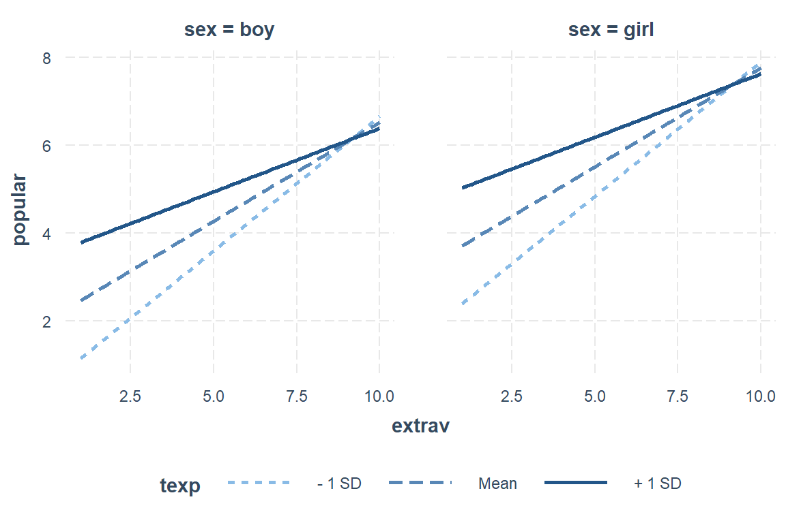
For publications, you can get fancier
interactions::interact_plot(pop_lmer_2_re, # model name
pred = extrav, # x-axis 'predictor' variable name
modx = texp, # 'moderator' variable name
modx.values = c(5, 15, 25), # values to pick for a continuous "modx"
interval = TRUE, # adds CI bands for pop/marginal mean
y.label = "Estimated Marginal Mean\nPupil Popularity, Mean Rating of Classroom Peers",
x.label = "Pupil's Extroversion, as Rated by Teacher",
legend.main = "Teacher's Experience",
modx.labels = c("5 years",
"15 years",
"25 years"),
colors = c("black", "black", "black")) + # default is "Blues" for modx.values
theme_bw() +
theme(legend.key.width = unit(2, "cm"),
legend.background = element_rect(color = "Black"),
legend.position = c(1, 0),
legend.justification = c(1.1, -0.1)) +
scale_x_continuous(breaks = seq(from = 0, to = 10, by = 2)) +
scale_y_continuous(breaks = seq(from = 0, to = 10, by = 1)) 
4.4.6.4 Visualization - effects & ggplot2 packages
Get Estimated Marginal Means - default ‘nice’ predictor values:
Focal predictors: All combinations of…
* sex categorical, both levels
* extrav continuous 1-10, default: 1, 3, 6, 8, 10
* texp continuous, default: 2.0, 7.8, 14.0, 19.0, 25.0
Always followed by:
* fit estimated marginal mean
* se standard error for the marginal mean
* lower lower end of the 95% confidence interval around the estimated marginal mean
* upper upper end of the 95% confidence interval around the estimated marginal mean
effects::Effect(focal.predictors = c("sex", "extrav", "texp"),
mod = pop_lmer_2_re) %>%
data.frame() %>%
head(n = 12) sex extrav texp fit se lower upper
1 boy 1 2.0 -0.003090894 0.2113412 -0.4175635 0.4113817
2 girl 1 2.0 1.237606960 0.2138275 0.8182583 1.6569556
3 boy 3 2.0 1.505152972 0.1580311 1.1952296 1.8150763
4 girl 3 2.0 2.745850827 0.1602411 2.4315933 3.0601083
5 boy 6 2.0 3.767518772 0.1201240 3.5319371 4.0031004
6 girl 6 2.0 5.008216627 0.1208411 4.7712286 5.2452046
7 boy 8 2.0 5.275762639 0.1416414 4.9979820 5.5535433
8 girl 8 2.0 6.516460494 0.1410013 6.2399352 6.7929857
9 boy 10 2.0 6.784006506 0.1892732 6.4128127 7.1552003
10 girl 10 2.0 8.024704360 0.1878555 7.6562909 8.3931179
11 boy 1 7.8 1.165430181 0.1405323 0.8898247 1.4410356
12 girl 1 7.8 2.406128036 0.1432174 2.1252567 2.6869993Pick ‘nicer’ illustrative values for texp
effects::Effect(focal.predictors = c("sex", "extrav", "texp"),
mod = pop_lmer_2_re,
xlevels = list(texp = c(5, 15, 25))) %>%
data.frame() %>%
head(n = 12) sex extrav texp fit se lower upper
1 boy 1 5 0.6013166 0.17311622 0.261809 0.9408241
2 girl 1 5 1.8420144 0.17570895 1.497422 2.1866067
3 boy 3 5 1.9611918 0.12950715 1.707208 2.2151752
4 girl 3 5 3.2018897 0.13175620 2.943495 3.4602838
5 boy 6 5 4.0010047 0.09856839 3.807697 4.1943124
6 girl 6 5 5.2417025 0.09913677 5.047280 5.4361250
7 boy 8 5 5.3608799 0.11620822 5.132978 5.5887821
8 girl 8 5 6.6015778 0.11532522 6.375407 6.8277483
9 boy 10 5 6.7207552 0.15520075 6.416383 7.0251277
10 girl 10 5 7.9614530 0.15351226 7.660392 8.2625142
11 boy 1 15 2.6160081 0.09471133 2.430265 2.8017516
12 girl 1 15 3.8567059 0.09677625 3.666913 4.0464990Basic, default plot
Other than selecting three illustrative values for the teacher extroversion rating, most everything is left to default.
effects::Effect(focal.predictors = c("sex", "extrav", "texp"),
mod = pop_lmer_2_re,
xlevels = list(texp = c(5, 15, 25))) %>%
data.frame() %>%
dplyr::mutate(texp = factor(texp)) %>%
ggplot() +
aes(x = extrav,
y = fit,
fill = texp,
linetype = texp) +
geom_ribbon(aes(ymin = lower,
ymax = upper),
alpha = .3) +
geom_line(aes(color = texp)) +
facet_grid(.~ sex) 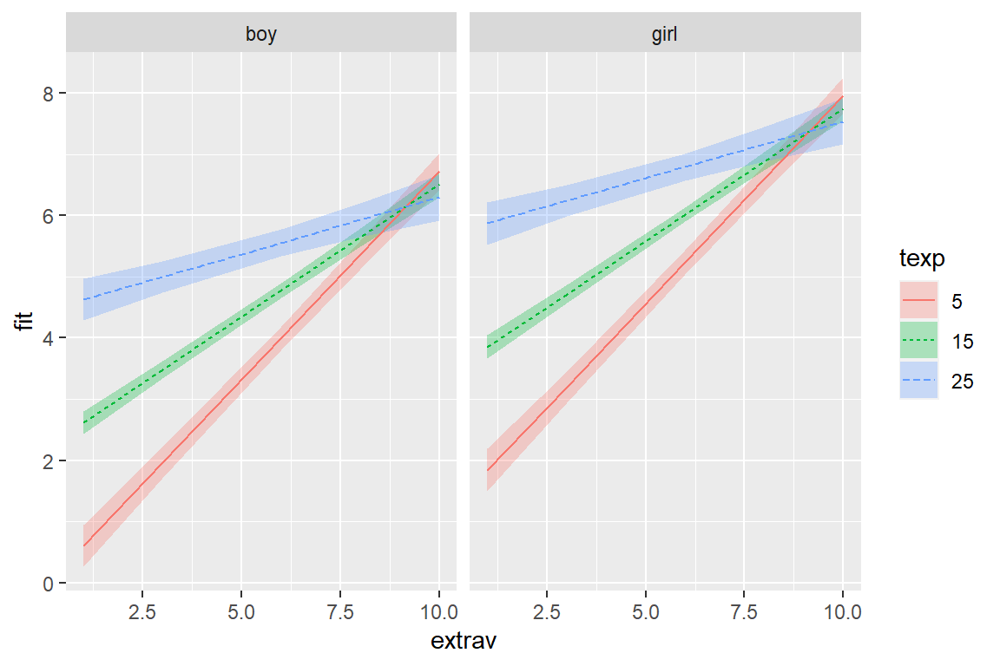
More Clean Plot
There are many ways to clean up a plot, including labeling the axes.
effects::Effect(focal.predictors = c("sex", "extrav", "texp"),
mod = pop_lmer_2_re,
xlevels = list(texp = c(5, 15, 25))) %>%
data.frame() %>%
dplyr::mutate(texp = factor(texp)) %>%
dplyr::mutate(sex = sex %>%
forcats::fct_recode("Amoung Boys" = "boy",
"Among Girls" = "girl")) %>%
ggplot() +
aes(x = extrav,
y = fit,
fill = texp,
linetype = texp) +
geom_ribbon(aes(ymin = lower,
ymax = upper),
alpha = .3) +
geom_line(aes(color = texp)) +
theme_bw() +
facet_grid(.~ sex) +
labs(x = "Pupil's Extroversion, Rated by Teacher",
y = "Estimated Marginal Mean\nPupil Popularity, Mean Rating of Classroom Peers",
color = "Teacher's Experience, Years",
linetype = "Teacher's Experience, Years",
fill = "Teacher's Experience, Years") +
theme(legend.position = "bottom") +
scale_x_continuous(breaks = seq(from = 0, to = 10, by = 2))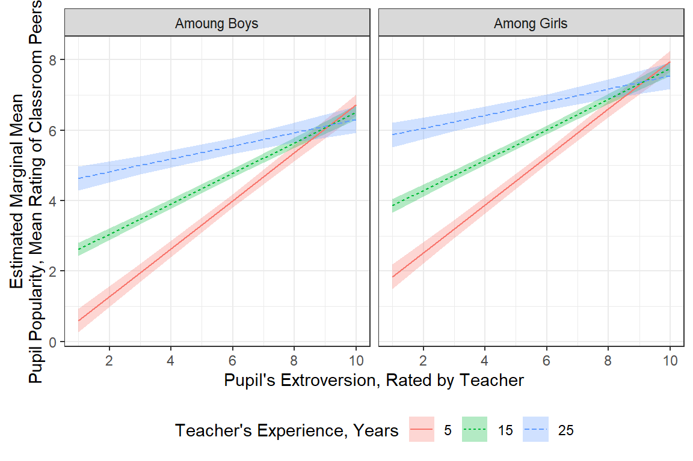
Publishable Plot
Since gender only exhibited a main effect and is not involved in any interactions, if would be a better use of space to not muddy the water with seperate panels. The Effect() function will estimate the marginal means using the reference category for categorical variables and the mean for continuous variables.
effects::Effect(focal.predictors = c("extrav", "texp"), # choose not to investigate sex (the reference category will be used)
mod = pop_lmer_2_re,
xlevels = list(texp = c(5, 15, 25))) %>%
data.frame() %>%
dplyr::mutate(texp = factor(texp) %>%
forcats::fct_rev()) %>%
ggplot() +
aes(x = extrav,
y = fit,
linetype = texp) +
geom_ribbon(aes(ymin = lower,
ymax = upper),
fill = "black",
alpha = .3) +
geom_line() +
theme_bw() +
labs(x = "Pupil's Extroversion, Rated by Teacher",
y = "Estimated Marginal Mean\nPupil Popularity, Mean Rating of Classroom Peers",
color = "Teacher's\nExperience,\nYears",
linetype = "Teacher's\nExperience,\nYears",
alpha = "Teacher's\nExperience,\nYears") +
theme(legend.key.width = unit(2, "cm"),
legend.background = element_rect(color = "Black"),
legend.position = c(1, 0),
legend.justification = c(1.1, -0.1)) +
scale_linetype_manual(values = c("solid", "dashed", "dotted")) +
scale_x_continuous(breaks = seq(from = 0, to = 10, by = 2)) +
scale_y_continuous(breaks = seq(from = 0, to = 10, by = 1)) 
4.4.6.5 Interpretation
Form more infromation, see the vingette page for the redre package.
After accounting for class-to-class variation and the effect of gender, a positive association was found between teacher rated extroversion and peer rated popularity. This relationship was more marked for less experienced teachers.
4.4.7 Residual Plots
[[1]]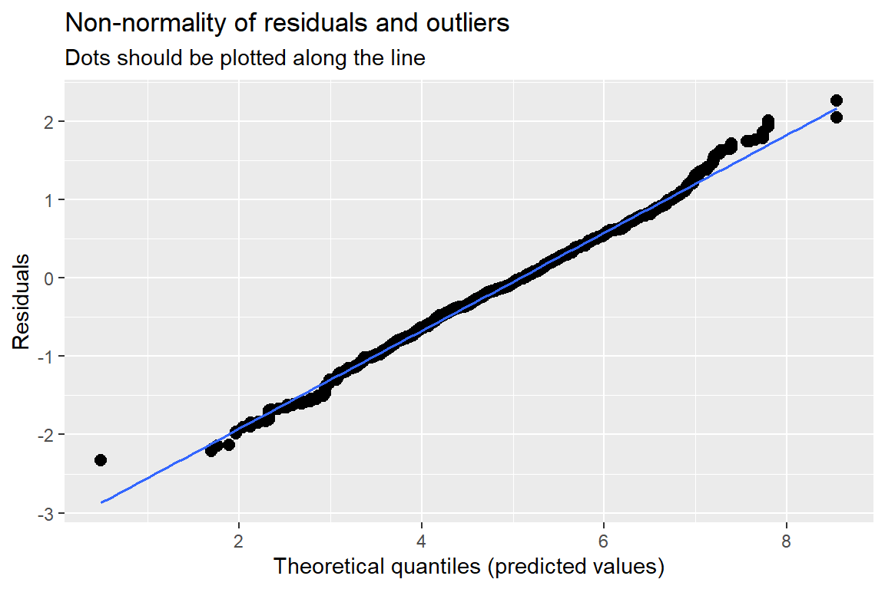
[[2]]
[[2]]$class
[[3]]
[[4]]
Standardized residuals vs. fitted values
You always want to use studentized, conditional residuals for MLM!
As you look across the plot, left to right:
- GOOD = no pattern & HOV
- BAD = any pattern or change in the spread
This plot looks great!
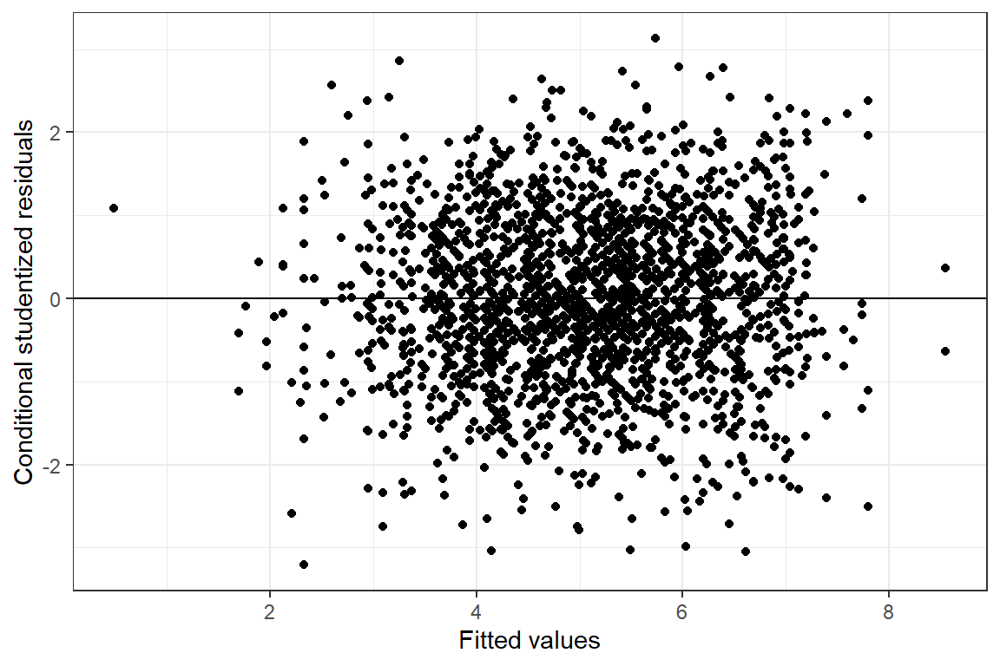 Standardized residuals vs. a predictor’s values
You are looking for the same things as above. Note: the vertical stripes are fine, as they just reflect the fact that the extrav variable was a whole number value, ranging from one to ten.
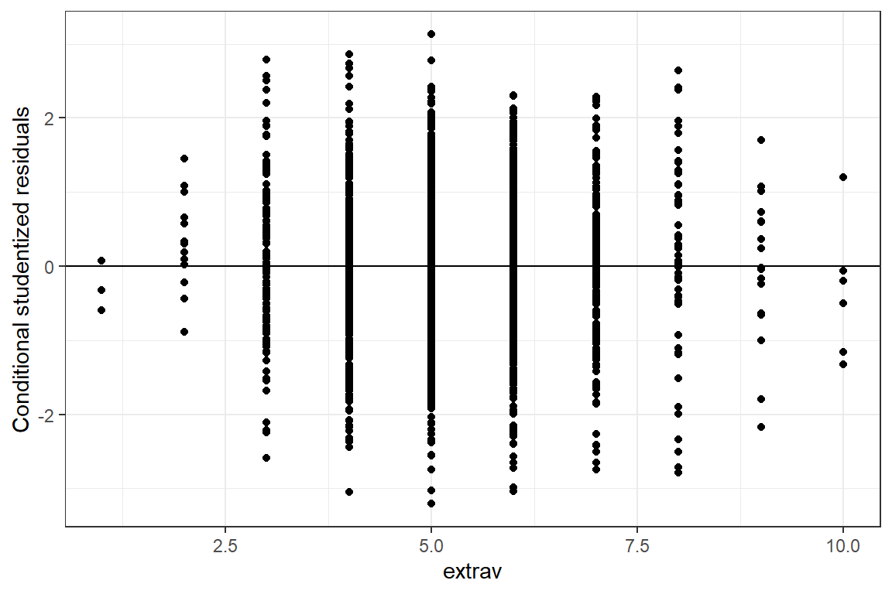
Normal Quantile plot of Residuals
As you look across the plot, along the diagonal:
- GOOD: roughly a straight line
- BAD: curvature (S-shaped)
This plot looks great! The slight flare at the far ends is not too drastic.
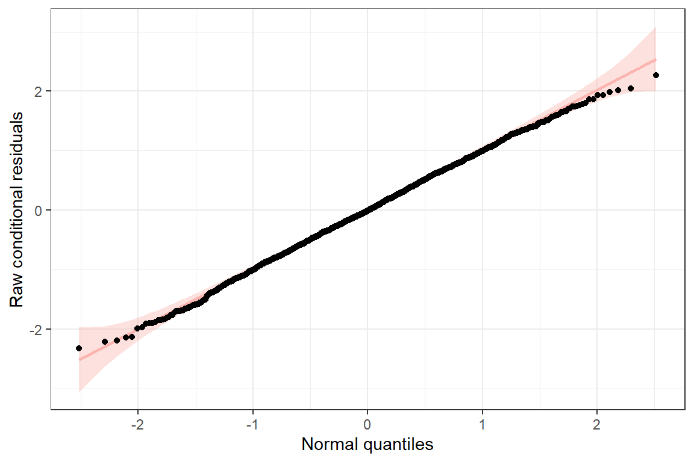
Our model had both random intercepts and random slopes (RIAS). The panel on the left is more the random intercepts and the right is of random slopes (for the extrav predictor).
You are looking for the same things as above…and these are not too bad!
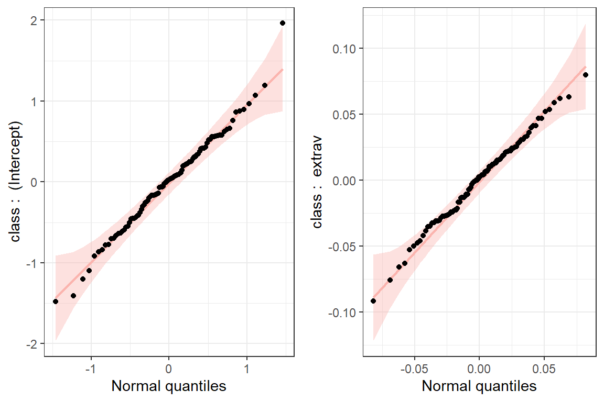
To explor more plots, you can use the shiny app by running the code below:
5 MLM, 3 levels: Nurse’s Stress Intervention
library(tidyverse) # basically everything ;)
library(haven) # read in SPSS dataset
library(furniture) # nice table1() descriptives
library(stargazer) # display nice tables: summary & regression
library(texreg) # Convert Regression Output to LaTeX or HTML Tables
library(psych) # contains some useful functions, like headTail
library(car) # Companion to Applied Regression
library(lme4) # Linear, generalized linear, & nonlinear mixed models
library(lmerTest) # Tests on lmer objects
library(performance) # ICC calculations
library(interactions) # plotting interactions
library(effects) # Effects for regression models
library(optimx) # Different optimizers to solve mlm's5.1 Background
The text “Multilevel Analysis: Techniques and Applications, Third Edition” (Hox, Moerbeek, and Van de Schoot 2017) has a companion website which includes links to all the data files used throughout the book (housed on the book’s GitHub repository).
The following example is used through out Hox, Moerbeek, and Van de Schoot (2017)’s chapater 2.
From Appendix E:
The nurses.sav file contains three-level simulated data from a hypothetical study on stress in hospitals. The data are from nurses working in wards nested within hospitals. It is a cluster-randomized experiment. In each of 25 hospitals, four wards are selected and randomly assigned to an experimental and a control condition. In the experimental condition, a training program is offered to all nurses to cope with job-related stress. After the program is completed, a sample of about 10 nurses from each ward is given a test that measures job-related stress. Additional variables (covariates) are: nurse age (years), nurse experience (years), nurse gender (0=male, 1 = female), type of ward (0=general care, 1=special care), and hospital size (0=small, 1 = medium, 2=large). The data have been generated to illustrate three-level analysis with a random slope for the effect of the intervention.
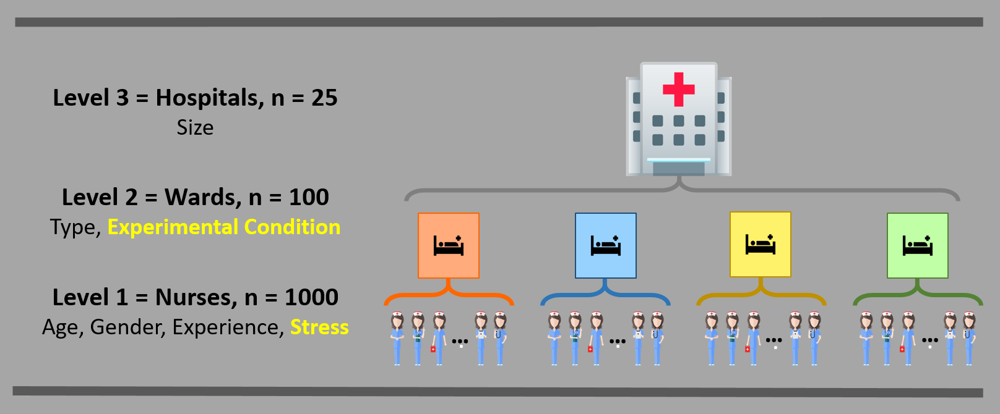
Here the data is read in and the SPSS variables with labels are converted to \(R\) factors.
data_raw <- haven::read_spss("https://github.com/MultiLevelAnalysis/Datasets-third-edition-Multilevel-book/raw/master/chapter%202/Nurses/SPSS/Nurses.sav") %>%
haven::as_factor() # retain the labels from SPSS --> factor5.1.1 Unique Identifiers
All standardized (starts with “Z”) and mean centered (starts with “C”) variables will be remove so that their creation may be shown later. A new indicator varible for nurses with be created by combining the hospital, ward, and nurse indicators. Having a unique, distinct identifier variable for each of the units on lower (Level 1 and 2) levels is helpful for multilevel anlayses.
data_nurse <- data_raw %>%
dplyr::mutate(genderF = factor(gender,
labels = c("Male", "Female"))) %>% # apply factor labels
dplyr::mutate(id = paste(hospital, ward, nurse,
sep = "_") %>% # unique id for each nurse
factor()) %>% # declare id is a factor
dplyr::mutate_at(vars(hospital, ward,
wardid, nurse), factor) %>% # declare to be factors
dplyr::mutate(age = age %>% as.character %>% as.numeric) %>% # declare to be numeric
dplyr::select(id, wardid, nurse, ward, hospital,
age, gender, genderF, experien,
wardtype, hospsize,
expcon, stress) # reduce variables included
tibble::glimpse(data_nurse)Rows: 1,000
Columns: 13
$ id <fct> 1_1_1, 1_1_2, 1_1_3, 1_1_4, 1_1_5, 1_1_6, 1_1_7, 1_1_8, 1_...
$ wardid <fct> 11, 11, 11, 11, 11, 11, 11, 11, 11, 12, 12, 12, 12, 12, 12...
$ nurse <fct> 1, 2, 3, 4, 5, 6, 7, 8, 9, 10, 11, 12, 13, 14, 15, 16, 17,...
$ ward <fct> 1, 1, 1, 1, 1, 1, 1, 1, 1, 2, 2, 2, 2, 2, 2, 2, 2, 2, 3, 3...
$ hospital <fct> 1, 1, 1, 1, 1, 1, 1, 1, 1, 1, 1, 1, 1, 1, 1, 1, 1, 1, 1, 1...
$ age <dbl> 36, 45, 32, 57, 46, 60, 23, 32, 60, 45, 57, 47, 32, 42, 42...
$ gender <dbl> 0, 0, 0, 1, 1, 1, 1, 1, 0, 0, 1, 0, 1, 1, 1, 1, 0, 1, 1, 0...
$ genderF <fct> Male, Male, Male, Female, Female, Female, Female, Female, ...
$ experien <dbl> 11, 20, 7, 25, 22, 22, 13, 13, 17, 21, 24, 24, 14, 13, 17,...
$ wardtype <fct> general care, general care, general care, general care, ge...
$ hospsize <fct> large, large, large, large, large, large, large, large, la...
$ expcon <fct> experiment, experiment, experiment, experiment, experiment...
$ stress <dbl> 7, 7, 7, 6, 6, 6, 6, 7, 7, 6, 6, 6, 6, 6, 6, 5, 5, 6, 5, 5...5.1.2 Centering Variables
When variables are involved in an interaction, it may be advantageous to center the variables. Hox, Moerbeek, and Van de Schoot (2017) covers this in chapter 4.
To center categorical variables:
1. Convert then to integers, starting with zero: \(0, 1, \dots\)
2. Subtract the mean
data_nurse %>%
dplyr::mutate(expconN = as.numeric(expcon) - 1) %>% # Numeric Version of experimental condition
dplyr::mutate(hospsizeN = as.numeric(hospsize) - 1) %>% # Numeric Version of hospital size
dplyr::select(expcon, expconN, hospsize, hospsizeN) %>%
summary() expcon expconN hospsize hospsizeN
control :496 Min. :0.000 small :374 Min. :0.000
experiment:504 1st Qu.:0.000 medium:476 1st Qu.:0.000
Median :1.000 large :150 Median :1.000
Mean :0.504 Mean :0.776
3rd Qu.:1.000 3rd Qu.:1.000
Max. :1.000 Max. :2.000 data_nurse <- data_nurse %>%
dplyr::mutate(expconN = as.numeric(expcon) - 1) %>% # Numeric Version of experimental condition
dplyr::mutate(hospsizeN = as.numeric(hospsize) - 1) %>% # Numeric Version of hospital size
dplyr::mutate(expconNG = expconN - 0.504) %>% # Grand-Mean Centered version of experimental condition
dplyr::mutate(hospsizeNG = hospsizeN - 0.776) # Grand-Mean Centered version of ehospital size expconNG
expcon -0.504 0.496
control 496 0
experiment 0 504 hospsizeNG
hospsize -0.776 0.224 1.224
small 374 0 0
medium 0 476 0
large 0 0 1505.2 Exploratory Data Analysis
5.2.1 Summarize Descriptive Statistics
5.2.1.1 The stargazer package
Most posters, journal articles, and reports start with a table of descriptive statistics. Since it tends to come first, this type of table is often refered to as Table 1. The stargazer() function can be used to create such a table, but only for the entire dataset (Hlavac 2018). I haven’t been able to find a way to get it to summarize subsamples and compare them in the standard format.
# Knit to Website: type = "html"
# Knit to PDF: type = "latex"
# View on Screen: type = "text"
data_nurse %>%
data.frame() %>%
stargazer::stargazer(title = "Descriptive statistics, aggregate over entire sample",
header = FALSE,
type = "text")| Statistic | N | Mean | St. Dev. | Min | Pctl(25) | Pctl(75) | Max |
| age | 1,000 | 43.005 | 12.042 | 23 | 33 | 53 | 64 |
| gender | 1,000 | 0.735 | 0.442 | 0 | 0 | 1 | 1 |
| experien | 1,000 | 17.057 | 6.042 | 1 | 13 | 21 | 38 |
| stress | 1,000 | 4.977 | 0.980 | 1 | 4 | 6 | 7 |
| expconN | 1,000 | 0.504 | 0.500 | 0 | 0 | 1 | 1 |
| hospsizeN | 1,000 | 0.776 | 0.689 | 0 | 0 | 1 | 2 |
| expconNG | 1,000 | -0.000 | 0.500 | -0.504 | -0.504 | 0.496 | 0.496 |
| hospsizeNG | 1,000 | -0.000 | 0.689 | -0.776 | -0.776 | 0.224 | 1.224 |
5.2.1.2 The furniture package
Tyson Barrett’s furniture package includes the extremely useful function table1() which simplifies the common task of creating a stratified, comparative table of descriptive statistics. Full documentation can be accessed by executing ?furniture::table1.
# Knit to Website: output = "html"
# Knit to PDF: output = "latex2"
# View on Screen: output = ""text", or "markdown", "html"
data_nurse %>%
furniture::table1(age, genderF, experien, wardtype, hospsize, hospsizeN, hospsizeNG,
splitby = ~ expcon, # var to divide sample by
test = TRUE, # test groups different?
type = "full", # give the test statistic
output = "text", # output for html
caption = "Compare Intervention groups on five main variables") # title| control | experiment | Test | P-Value | |
|---|---|---|---|---|
| n = 496 | n = 504 | |||
| age | T-Test: 0.82 | 0.411 | ||
| 43.3 (11.6) | 42.7 (12.5) | |||
| genderF | Chi Square: 0.19 | 0.661 | ||
| Male | 135 (27.2%) | 130 (25.8%) | ||
| Female | 361 (72.8%) | 374 (74.2%) | ||
| experien | T-Test: 0.69 | 0.492 | ||
| 17.2 (5.8) | 16.9 (6.3) | |||
| wardtype | Chi Square: 0 | 1 | ||
| general care | 247 (49.8%) | 252 (50%) | ||
| special care | 249 (50.2%) | 252 (50%) | ||
| hospsize | Chi Square: 0.01 | 0.993 | ||
| small | 185 (37.3%) | 189 (37.5%) | ||
| medium | 237 (47.8%) | 239 (47.4%) | ||
| large | 74 (14.9%) | 76 (15.1%) | ||
| hospsizeN | T-Test: 0.01 | 0.992 | ||
| 0.8 (0.7) | 0.8 (0.7) | |||
| hospsizeNG | T-Test: 0.01 | 0.992 | ||
| 0.0 (0.7) | -0.0 (0.7) |
The t-test performed by the furniture::table1() function will always assume indepent groups and that HOV is not violated. This may or may not be appropriate.
5.3 MLM: Null Model
In a Null, intercept-only, or Empty model, no predictors are included.
5.3.0.1 Fit the Model
Fit the model to the data, with both ML and REML.
nurse_lmer_0_re <- lmerTest::lmer(stress ~ 1 + # Fixed Intercept for all nurses
(1|hospital/ward), # Random Intercepts for wards within hospitals
data = data_nurse,
REML = TRUE) # fit via REML (the default) for ICC calculations
nurse_lmer_0_ml <- lmerTest::lmer(stress ~ 1 + # Fixed Intercept for all nurses
(1|hospital/ward), # Random Intercepts for wards within hospitals
data = data_nurse,
REML = FALSE) # fit via ML for comparing FIXED effects inclusiontexreg::knitreg(list(nurse_lmer_0_ml,
nurse_lmer_0_re),
custom.model.names = c("M0: Null, ML",
"M0: Null, REML"),
caption = "NULL Model: different estimation methods",
caption.above = TRUE,
single.row = TRUE)| M0: Null, ML | M0: Null, REML | |
|---|---|---|
| (Intercept) | 5.00 (0.11)*** | 5.00 (0.11)*** |
| AIC | 1950.36 | 1952.95 |
| BIC | 1969.99 | 1972.58 |
| Log Likelihood | -971.18 | -972.48 |
| Num. obs. | 1000 | 1000 |
| Num. groups: ward:hospital | 100 | 100 |
| Num. groups: hospital | 25 | 25 |
| Var: ward:hospital (Intercept) | 0.49 | 0.49 |
| Var: hospital (Intercept) | 0.16 | 0.17 |
| Var: Residual | 0.30 | 0.30 |
| p < 0.001; p < 0.01; p < 0.05 | ||
5.4 Estimate the ICC
The ICC is calculated by dividing the between-group-variance (random intercept variance) by the total variance (i.e. sum of between-group-variance and within-group (residual) variance).
Groups Name Std.Dev.
ward:hospital (Intercept) 0.69916
hospital (Intercept) 0.41749
Residual 0.54887 Groups Name Variance Std.Dev.
ward:hospital (Intercept) 0.489 0.699
hospital (Intercept) 0.174 0.417
Residual 0.301 0.549 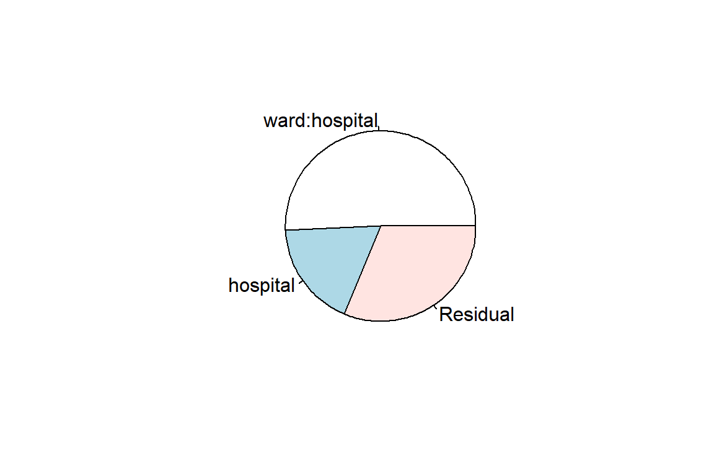
The performance package has a few really helpful funcitons:
Groups Name Std.Dev.
ward:hospital (Intercept) 0.69916
hospital (Intercept) 0.41749
Residual 0.54887 $var.fixed
[1] 0
$var.random
[1] 0.6631239
$var.residual
[1] 0.3012569
$var.distribution
[1] 0.3012569
$var.dispersion
[1] 0
$var.intercept
ward:hospital hospital
0.4888231 0.1743008 \[ \begin{align*} \text{hospitals} \rightarrow \; & \sigma^2_{v0} = 0.417^2 = 0.174\\ \text{wards within hospitals} \rightarrow \; & \sigma^2_{u0} = 0.699^2 = 0.489\\ \text{nurses within wards within hospitals} \rightarrow \; & \sigma^2_{e} = 0.549^2 = 0.301\\ \end{align*} \]
Intraclass Correlation (ICC) Formula, 3 level model - Davis and Scott Method \[ \overbrace{\rho_{mid}}^{\text{ICC}\atop\text{at level 2}} = \frac{\overbrace{\sigma^2_{u0}}^{\text{Random Intercept}\atop\text{Variance Level 2}}} {\underbrace{\sigma^2_{v0}+\sigma^2_{u0}+\sigma^2_{e}}_{\text{Total}\atop\text{Variance}}} \tag{Hox 2.16} \] \[ \overbrace{\rho_{top}}^{\text{ICC}\atop\text{ at level 3}} = \frac{\overbrace{\sigma^2_{v0}}^{\text{Random Intercept}\atop\text{Variance Level 3}}} {\underbrace{\sigma^2_{v0}+\sigma^2_{u0}+\sigma^2_{e}}_{\text{Total}\atop\text{Variance}}} \tag{Hox 2.17} \]
[1] 0.5072614[1] 0.1804979For more than two levels, the ‘performance::icc()’ function computes ICC’s by the Davis and Scott method.
# Intraclass Correlation Coefficient
Adjusted ICC: 0.688
Conditional ICC: 0.688# ICC by Group
Group | ICC
---------------------
ward:hospital | 0.507
hospital | 0.181The proportion of variance in nurse stress level is 0.51 at the ward level and 0.18 at the hospital level, for a total of 0.69.
To test if the three level model is justified statistically, compare the null models with and without the nesting of wards in hospitals.
nurse_lmer_0_re_2level <- lmerTest::lmer(stress ~ 1 + (1|wardid), # each hospital contains several wards
data = data_nurse,
REML = TRUE) # fit via REML (the default) for ICC calculationstexreg::knitreg(list(nurse_lmer_0_re_2level,
nurse_lmer_0_re),
custom.model.names = c("2 levels",
"3 levels"),
caption = "MLM: Two or Three Levels?",
caption.above = TRUE,
single.row = TRUE)| 2 levels | 3 levels | |
|---|---|---|
| (Intercept) | 5.00 (0.08)*** | 5.00 (0.11)*** |
| AIC | 1958.43 | 1952.95 |
| BIC | 1973.15 | 1972.58 |
| Log Likelihood | -976.21 | -972.48 |
| Num. obs. | 1000 | 1000 |
| Num. groups: wardid | 100 | |
| Var: wardid (Intercept) | 0.66 | |
| Var: Residual | 0.30 | 0.30 |
| Num. groups: ward:hospital | 100 | |
| Num. groups: hospital | 25 | |
| Var: ward:hospital (Intercept) | 0.49 | |
| Var: hospital (Intercept) | 0.17 | |
| p < 0.001; p < 0.01; p < 0.05 | ||
The deviance test or likelihood-ratio test shows that the inclusion of the nesting of wards within hospitals better explains the variance in nurse stress levels.
Data: data_nurse
Models:
nurse_lmer_0_re_2level: stress ~ 1 + (1 | wardid)
nurse_lmer_0_re: stress ~ 1 + (1 | hospital/ward)
npar AIC BIC logLik deviance Chisq Df Pr(>Chisq)
nurse_lmer_0_re_2level 3 1958.4 1973.2 -976.21 1952.4
nurse_lmer_0_re 4 1953.0 1972.6 -972.48 1945.0 7.4738 1 0.00626
nurse_lmer_0_re_2level
nurse_lmer_0_re **
---
Signif. codes: 0 '***' 0.001 '**' 0.01 '*' 0.05 '.' 0.1 ' ' 15.5 MLM: Add Fixed Effects
5.5.1 Fit the Model
Hox, Moerbeek, and Van de Schoot (2017), page 22:
“In this example, the variable
expconis of main interest, and the other variables are covariates. Their funciton is to control for differences between the groups, which can occur even if randomization is used, especially with small samples, and to explain variance in the outcome variable stress. To the extent that these variables successfully explain the variance, the power of the test for the effect ofexpconwill be increased.”
nurse_lmer_1_ml <- lmerTest::lmer(stress ~ expcon + # experimental condition = CATEGORICAL FACTOR
age + gender + experien + # level 1 covariates
wardtype + # level 2 covariates
hospsize + # level 3 covariates, hospital size = CATEGORICAL FACTOR
(1|hospital/ward), # Random Intercepts for wards within hospitals
data = data_nurse,
REML = FALSE) # fit via ML for nested FIXED effectstexreg::knitreg(list(nurse_lmer_0_ml,
nurse_lmer_1_ml),
custom.model.names = c("M0: null",
"M1: fixed pred"),
caption = "Nested Models: Fixed effects via ML",
caption.above = TRUE,
single.row = TRUE)| M0: null | M1: fixed pred | |
|---|---|---|
| (Intercept) | 5.00 (0.11)*** | 5.38 (0.18)*** |
| expconexperiment | -0.70 (0.12)*** | |
| age | 0.02 (0.00)*** | |
| gender | -0.45 (0.03)*** | |
| experien | -0.06 (0.00)*** | |
| wardtypespecial care | 0.05 (0.12) | |
| hospsizemedium | 0.49 (0.19)** | |
| hospsizelarge | 0.90 (0.26)*** | |
| AIC | 1950.36 | 1626.32 |
| BIC | 1969.99 | 1680.30 |
| Log Likelihood | -971.18 | -802.16 |
| Num. obs. | 1000 | 1000 |
| Num. groups: ward:hospital | 100 | 100 |
| Num. groups: hospital | 25 | 25 |
| Var: ward:hospital (Intercept) | 0.49 | 0.33 |
| Var: hospital (Intercept) | 0.16 | 0.10 |
| Var: Residual | 0.30 | 0.22 |
| p < 0.001; p < 0.01; p < 0.05 | ||
5.5.2 Assess Significance
Data: data_nurse
Models:
nurse_lmer_0_ml: stress ~ 1 + (1 | hospital/ward)
nurse_lmer_1_ml: stress ~ expcon + age + gender + experien + wardtype + hospsize +
nurse_lmer_1_ml: (1 | hospital/ward)
npar AIC BIC logLik deviance Chisq Df Pr(>Chisq)
nurse_lmer_0_ml 4 1950.4 1970.0 -971.18 1942.4
nurse_lmer_1_ml 11 1626.3 1680.3 -802.16 1604.3 338.04 7 < 2.2e-16 ***
---
Signif. codes: 0 '***' 0.001 '**' 0.01 '*' 0.05 '.' 0.1 ' ' 1It is clear that the inclusing of these fixed, main effects improves the model’s fit, but it is questionable that the type of ward is significant (Wald test is non-significant). Rather than test it directly, we will leave it in the model. This is common practice to show that an expected variable is not significant.
5.5.3 Centering Variables
Because we will will find that the experimental condition is moderated by hospital size (in other words there is a significant interaction between expcon and hospsize), Hox, Moerbeek, and Van de Schoot (2017) presents the models fit with centered values for these two variables. Let us see how this changes the model.
(1) Experimental Condition
Experimental conditon is a BINARY or two-level factor.
When it is alternatively coded as a numeric, continuous variable taking the values of zero (\(0\)) for the reference category and one (\(1\)) for the other category, the model estimates are exactly the same, including the paramters for the variables and the intercept, AND the model fit statistics.
When the numeric, continuous variable is further grand-mean centered by additionally subtraction the MEAN of the numberic version, the value of the intercept is the only estimate that changes.
nurse_lmer_1a_ml <- lmerTest::lmer(stress ~ expconN + # experimental condition = CONTINUOUS CODED 0/1
age + gender + experien +
wardtype +
hospsize + # hospital size = CATEGORICAL FACTOR
(1|hospital/ward),
data = data_nurse,
REML = FALSE)
nurse_lmer_1b_ml <- lmerTest::lmer(stress ~ expconNG + # experimental condition = CONTINUOUS GRAND-MEAN CENTERED
age + gender + experien +
wardtype +
hospsize + # hospital size = CATEGORICAL FACTOR
(1|hospital/ward),
data = data_nurse,
REML = FALSE) texreg::knitreg(list(nurse_lmer_1_ml,
nurse_lmer_1a_ml,
nurse_lmer_1b_ml),
custom.model.names = c("Factor",
"0 vs 1",
"Centered"),
caption = "MLM: Model 1 - Expereimental Condiditon Coding (2-levels)",
caption.above = TRUE,
single.row = TRUE)| Factor | 0 vs 1 | Centered | |
|---|---|---|---|
| (Intercept) | 5.38 (0.18)*** | 5.38 (0.18)*** | 5.03 (0.17)*** |
| expconexperiment | -0.70 (0.12)*** | ||
| age | 0.02 (0.00)*** | 0.02 (0.00)*** | 0.02 (0.00)*** |
| gender | -0.45 (0.03)*** | -0.45 (0.03)*** | -0.45 (0.03)*** |
| experien | -0.06 (0.00)*** | -0.06 (0.00)*** | -0.06 (0.00)*** |
| wardtypespecial care | 0.05 (0.12) | 0.05 (0.12) | 0.05 (0.12) |
| hospsizemedium | 0.49 (0.19)** | 0.49 (0.19)** | 0.49 (0.19)** |
| hospsizelarge | 0.90 (0.26)*** | 0.90 (0.26)*** | 0.90 (0.26)*** |
| expconN | -0.70 (0.12)*** | ||
| expconNG | -0.70 (0.12)*** | ||
| AIC | 1626.32 | 1626.32 | 1626.32 |
| BIC | 1680.30 | 1680.30 | 1680.30 |
| Log Likelihood | -802.16 | -802.16 | -802.16 |
| Num. obs. | 1000 | 1000 | 1000 |
| Num. groups: ward:hospital | 100 | 100 | 100 |
| Num. groups: hospital | 25 | 25 | 25 |
| Var: ward:hospital (Intercept) | 0.33 | 0.33 | 0.33 |
| Var: hospital (Intercept) | 0.10 | 0.10 | 0.10 |
| Var: Residual | 0.22 | 0.22 | 0.22 |
| p < 0.001; p < 0.01; p < 0.05 | |||
(2) Hospital Size
Experimental conditon is a three-level factor.
When it is alternatively coded as a numeric, continuous variables taking the values of whole numbers, starting with zero (\(0, 1, 2, \dots\)), the model there will only be ONE parameter estimated instead of several (one less than the number of categories). This is becuase the levels are treated as being equally different from each other in terms of the outcome. This treats the effect of the categorical variable as if it is linear, which may or may not be appropriate. User beware!
When the numeric, continuous variable is further grand-mean centered by additionally subtraction the MEAN of the numberic version, the value of the intercept is the only estimate that changes.
nurse_lmer_1c_ml <- lmerTest::lmer(stress ~ expconNG + # experimental condition = CONTINUOUS GRAND-MEAN CENTERED
age + gender + experien +
wardtype +
hospsizeN + # hospital size = CONTINUOUS CODED 0/1
(1|hospital/ward),
data = data_nurse,
REML = FALSE)
nurse_lmer_1d_ml <- lmerTest::lmer(stress ~ expconNG + # experimental condition = CONTINUOUS GRAND-MEAN CENTERED
age + gender + experien +
wardtype +
hospsizeNG + # hospital size = CONTINUOUS GRAND-MEAN CENTERED
(1|hospital/ward),
data = data_nurse,
REML = FALSE)texreg::knitreg(list(nurse_lmer_1b_ml,
nurse_lmer_1c_ml,
nurse_lmer_1d_ml),
custom.model.names = c("Factor",
"0 vs 1",
"Centered"),
caption = "MLM: Model 1 - Hospital Coding (3-levels)",
caption.above = TRUE,
single.row = TRUE)| Factor | 0 vs 1 | Centered | |
|---|---|---|---|
| (Intercept) | 5.03 (0.17)*** | 5.04 (0.16)*** | 5.40 (0.12)*** |
| expconNG | -0.70 (0.12)*** | -0.70 (0.12)*** | -0.70 (0.12)*** |
| age | 0.02 (0.00)*** | 0.02 (0.00)*** | 0.02 (0.00)*** |
| gender | -0.45 (0.03)*** | -0.45 (0.03)*** | -0.45 (0.03)*** |
| experien | -0.06 (0.00)*** | -0.06 (0.00)*** | -0.06 (0.00)*** |
| wardtypespecial care | 0.05 (0.12) | 0.05 (0.12) | 0.05 (0.12) |
| hospsizemedium | 0.49 (0.19)** | ||
| hospsizelarge | 0.90 (0.26)*** | ||
| hospsizeN | 0.46 (0.12)*** | ||
| hospsizeNG | 0.46 (0.12)*** | ||
| AIC | 1626.32 | 1624.36 | 1624.36 |
| BIC | 1680.30 | 1673.44 | 1673.44 |
| Log Likelihood | -802.16 | -802.18 | -802.18 |
| Num. obs. | 1000 | 1000 | 1000 |
| Num. groups: ward:hospital | 100 | 100 | 100 |
| Num. groups: hospital | 25 | 25 | 25 |
| Var: ward:hospital (Intercept) | 0.33 | 0.33 | 0.33 |
| Var: hospital (Intercept) | 0.10 | 0.10 | 0.10 |
| Var: Residual | 0.22 | 0.22 | 0.22 |
| p < 0.001; p < 0.01; p < 0.05 | |||
5.6 MLM: Add Random Slope
Hox, Moerbeek, and Van de Schoot (2017), page 22:
“Although logically we can test if explanatory variables at the first level have random coefficients (slopes) at the second or third level, and if explanatory variables at teh second level have random coefficients (slopes) at the third level, these possibilities are not pursued. We DO test a model with a random coefficient (slope) for
expconat the third level, where there turns out to be significant slope variation.”
5.6.1 Fit the Model
nurse_lmer_1d_re <- lmerTest::lmer(stress ~ expconNG + # experimental condition = CONTINUOUS GRAND-MEAN CENTERED
age + gender + experien + # level 1 covariates
wardtype + # level 2 covariate
hospsizeNG + # level 3 covariate, hospital size = CONTINUOUS GRAND-MEAN CENTERED
(1|hospital/ward), # Random Intercepts for wards within hospitals
data = data_nurse,
REML = TRUE) # fit via REML for nested Random Effects
nurse_lmer_2_re <- lmerTest::lmer(stress ~ expconNG + # experimental condition = CONTINUOUS GRAND-MEAN CENTERED
age + gender + experien + # level 1 covariates
wardtype + # level 2 covariate
hospsizeNG + # level 3 covariate, hospital size = CONTINUOUS GRAND-MEAN CENTERED
(1|hospital/ward) + # Random Intercepts for wards within hospitals
(0 + expconNG|hospital), # RANDOM SLOPES for exp cond within hospital (does not vary witin a ward!)
data = data_nurse,
REML = TRUE) # fit via REML for nested Random Effectstexreg::knitreg(list(nurse_lmer_1d_re,
nurse_lmer_2_re),
custom.model.names = c("M1: RI",
"M2: RIAS"),
caption = "Nested Models: Random Slope via REML",
caption.above = TRUE,
single.row = TRUE)| M1: RI | M2: RIAS | |
|---|---|---|
| (Intercept) | 5.40 (0.12)*** | 5.39 (0.11)*** |
| expconNG | -0.70 (0.12)*** | -0.70 (0.18)*** |
| age | 0.02 (0.00)*** | 0.02 (0.00)*** |
| gender | -0.45 (0.03)*** | -0.45 (0.03)*** |
| experien | -0.06 (0.00)*** | -0.06 (0.00)*** |
| wardtypespecial care | 0.05 (0.12) | 0.05 (0.07) |
| hospsizeNG | 0.46 (0.13)*** | 0.46 (0.13)*** |
| AIC | 1659.89 | 1633.18 |
| BIC | 1708.97 | 1687.17 |
| Log Likelihood | -819.94 | -805.59 |
| Num. obs. | 1000 | 1000 |
| Num. groups: ward:hospital | 100 | 100 |
| Num. groups: hospital | 25 | 25 |
| Var: ward:hospital (Intercept) | 0.34 | |
| Var: hospital (Intercept) | 0.11 | 0.17 |
| Var: Residual | 0.22 | 0.22 |
| Var: ward.hospital (Intercept) | 0.11 | |
| Var: hospital.1 expconNG | 0.69 | |
| p < 0.001; p < 0.01; p < 0.05 | ||
5.6.2 Assess Significance
Data: data_nurse
Models:
nurse_lmer_1d_re: stress ~ expconNG + age + gender + experien + wardtype + hospsizeNG +
nurse_lmer_1d_re: (1 | hospital/ward)
nurse_lmer_2_re: stress ~ expconNG + age + gender + experien + wardtype + hospsizeNG +
nurse_lmer_2_re: (1 | hospital/ward) + (0 + expconNG | hospital)
npar AIC BIC logLik deviance Chisq Df Pr(>Chisq)
nurse_lmer_1d_re 10 1659.9 1709.0 -819.94 1639.9
nurse_lmer_2_re 11 1633.2 1687.2 -805.59 1611.2 28.708 1 8.417e-08 ***
---
Signif. codes: 0 '***' 0.001 '**' 0.01 '*' 0.05 '.' 0.1 ' ' 1The inclusion of a random slope effect for the experimental condition expcon significantly improves the models’s fit, thus is should be retained.
5.7 MLM: Add Cross-Level Interaction
Hox, Moerbeek, and Van de Schoot (2017), page 22:
“The varying slope can be predicted by adding a cross-level interaction between the variables
expconandhospsize. In view of this interaction, the variablesexpconandhospsizehave been centered on tehir overal means.”
5.7.1 Fit the Model
nurse_lmer_2_ml <- lmerTest::lmer(stress ~ expconNG + # experimental condition = CONTINUOUS GRAND-MEAN CENTERED
age + gender + experien + # level 1 covariates
wardtype + # level 2 covariate
hospsizeNG + # level 3 covariate, hospital size = CONTINUOUS GRAND-MEAN CENTERED
(1|hospital/ward) + # Random Intercepts for wards within hospitals
(0 + expconNG|hospital), # RANDOM SLOPES for exp cond within hospital (does not vary witin a ward!)
data = data_nurse,
REML = FALSE) # fit via ML for nested FIXED Effects
nurse_lmer_3_ml <- lmerTest::lmer(stress ~ expconNG + # experimental condition = CONTINUOUS GRAND-MEAN CENTERED
age + gender + experien + # level 1 covariates
wardtype + # level 2 covariate
hospsizeNG + # level 3 covariate, hospital size = CONTINUOUS GRAND-MEAN CENTERED
expconNG*hospsizeNG + # CROSS-LEVEL interaction
(1|hospital/ward) + # Random Intercepts for wards within hospitals
(0 + expconNG|hospital), # RANDOM SLOPES for exp cond within hospital (does not vary within a ward!)
data = data_nurse,
REML = FALSE) # fit via ML for nested FIXED Effectstexreg::knitreg(list(nurse_lmer_2_ml,
nurse_lmer_3_ml),
custom.model.names = c("M2: RAIS",
"M3: Xlevel Int"),
caption = "Nested Models: Fixed Cross-Level Interaction via ML",
caption.above = TRUE,
single.row = TRUE)| M2: RAIS | M3: Xlevel Int | |
|---|---|---|
| (Intercept) | 5.39 (0.11)*** | 5.39 (0.11)*** |
| expconNG | -0.70 (0.18)*** | -0.72 (0.11)*** |
| age | 0.02 (0.00)*** | 0.02 (0.00)*** |
| gender | -0.46 (0.03)*** | -0.46 (0.03)*** |
| experien | -0.06 (0.00)*** | -0.06 (0.00)*** |
| wardtypespecial care | 0.05 (0.07) | 0.05 (0.07) |
| hospsizeNG | 0.46 (0.12)*** | 0.46 (0.12)*** |
| expconNG:hospsizeNG | 1.00 (0.16)*** | |
| AIC | 1597.48 | 1576.07 |
| BIC | 1651.47 | 1634.96 |
| Log Likelihood | -787.74 | -776.03 |
| Num. obs. | 1000 | 1000 |
| Num. groups: ward:hospital | 100 | 100 |
| Num. groups: hospital | 25 | 25 |
| Var: ward.hospital (Intercept) | 0.11 | 0.11 |
| Var: hospital (Intercept) | 0.15 | 0.15 |
| Var: hospital.1 expconNG | 0.66 | 0.18 |
| Var: Residual | 0.22 | 0.22 |
| p < 0.001; p < 0.01; p < 0.05 | ||
5.7.2 Assess Significance
Data: data_nurse
Models:
nurse_lmer_2_ml: stress ~ expconNG + age + gender + experien + wardtype + hospsizeNG +
nurse_lmer_2_ml: (1 | hospital/ward) + (0 + expconNG | hospital)
nurse_lmer_3_ml: stress ~ expconNG + age + gender + experien + wardtype + hospsizeNG +
nurse_lmer_3_ml: expconNG * hospsizeNG + (1 | hospital/ward) + (0 + expconNG |
nurse_lmer_3_ml: hospital)
npar AIC BIC logLik deviance Chisq Df Pr(>Chisq)
nurse_lmer_2_ml 11 1597.5 1651.5 -787.74 1575.5
nurse_lmer_3_ml 12 1576.1 1635.0 -776.03 1552.1 23.413 1 1.307e-06 ***
---
Signif. codes: 0 '***' 0.001 '**' 0.01 '*' 0.05 '.' 0.1 ' ' 1There is evidence that hospital size moderated the effect of the intervention. We will want to plot the estimated marginal means to interpret the meaning of this interaction.
5.8 Final Model
5.8.1 Fit the model
The final model should be fit via REML.
nurse_lmer_3_re <- lmerTest::lmer(stress ~ expconNG + # experimental condition = CONTINUOUS GRAND-MEAN CENTERED
age + gender + experien + # level 1 covariates
wardtype + # level 2 covariate
hospsizeNG + # level 3 covariate, hospital size = CONTINUOUS GRAND-MEAN CENTERED
expconNG*hospsizeNG + # CROSS-LEVEL interaction
(1|hospital/ward) + # Random Intercepts for wards within hospitals
(0 + expconNG|hospital), # RANDOM SLOPES for exp cond within hospital (does not vary witin a ward!)
data = data_nurse,
REML = TRUE) # fit via REML for final model 5.8.2 Table of Estimated Parameters
texreg::knitreg(list(nurse_lmer_3_re),
custom.model.names = c("M3: Xlevel Int"),
caption = "Final Model: with REML",
caption.above = TRUE,
single.row = TRUE)| M3: Xlevel Int | |
|---|---|
| (Intercept) | 5.39 (0.11)*** |
| expconNG | -0.72 (0.12)*** |
| age | 0.02 (0.00)*** |
| gender | -0.46 (0.03)*** |
| experien | -0.06 (0.00)*** |
| wardtypespecial care | 0.05 (0.07) |
| hospsizeNG | 0.46 (0.13)*** |
| expconNG:hospsizeNG | 1.00 (0.17)*** |
| AIC | 1614.47 |
| BIC | 1673.36 |
| Log Likelihood | -795.23 |
| Num. obs. | 1000 |
| Num. groups: ward:hospital | 100 |
| Num. groups: hospital | 25 |
| Var: ward.hospital (Intercept) | 0.11 |
| Var: hospital (Intercept) | 0.17 |
| Var: hospital.1 expconNG | 0.20 |
| Var: Residual | 0.22 |
| p < 0.001; p < 0.01; p < 0.05 | |
5.8.3 Visualization: Estimated Marginal Means Plot
Although there are many variables in this model, only two are involved in any interaction(s). For this reason, we will choose to display the estimated marginal means across only experimental condition and hospital size. For this illustration, all other continuous predictors are taken to be at their mean and categorical predictors at their reference category.
5.8.3.1 Using interactions::interact_plot()
All Defaults:
interactions::interact_plot(nurse_lmer_3_re,
pred = "hospsizeNG", # main predictor/independent variable, for x-axis
modx = "expconNG", # moderating independent variable, for different lines
interval = TRUE)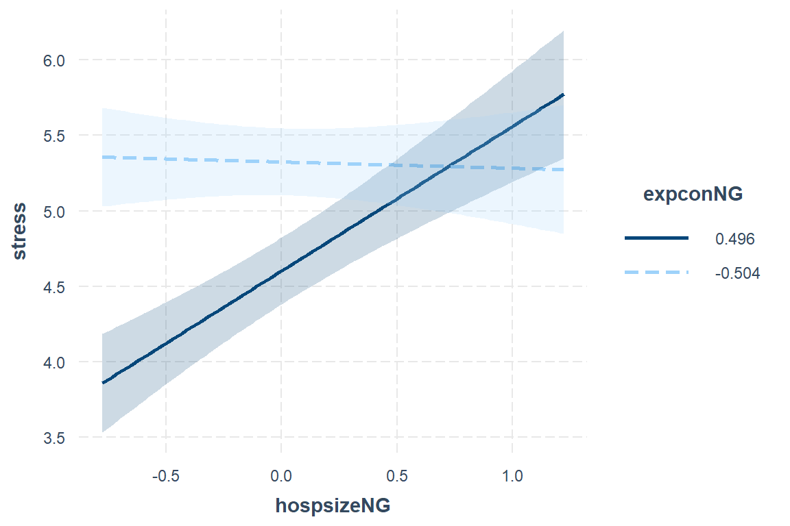
Adding more options:
interactions::interact_plot(nurse_lmer_3_re,
pred = "hospsizeNG",
modx = "expconNG",
modx.values = c(-0.504, 0.496),
interval = TRUE,
y.label = "Estimated Marginal Mean Norse's Stress Score",
x.label = "Hospital Size",
legend.main = "Condition:",
modx.labels = c("Control", "Intervention"),
colors = c("black", "black")) +
theme_bw() +
theme(legend.key.width = unit(2, "cm"),
legend.background = element_rect(color = "Black"),
legend.position = c(1, 0),
legend.justification = c(1.1, -0.1)) +
scale_x_continuous(breaks = c(-0.776, 0.224, 1.224), labels = c("Small", "Medium", "Large")) +
scale_y_continuous(breaks = seq(from = 0, to = 10, by = 1)) 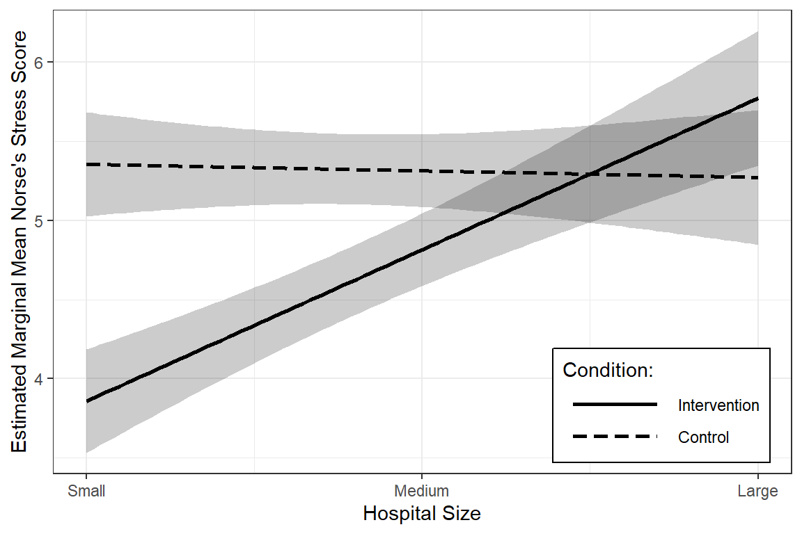
5.8.3.2 Using sjPlot::plot_model()
All Defaults:
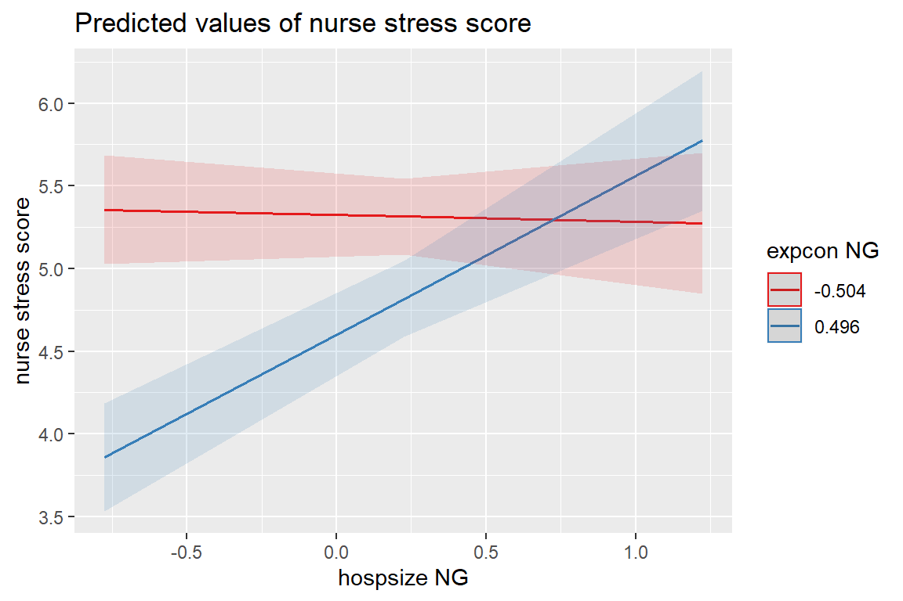
Adding more options:
sjPlot::plot_model(nurse_lmer_3_re,
type = "pred",
terms = c("hospsizeNG [-0.776, 0.224, 1.224]",
"expconNG [-0.504, 0.496]")) +
scale_x_continuous(breaks = c(-0.776, 0.224, 1.224),
labels = c("small", "medium", "large")) +
scale_color_manual(labels = c("Control", "Intervention"),
values = c("red", "blue")) +
labs(title = "Multilevel Modeling of Hospital Nurse Stress Intervention",
subtitle = "Ribbons display 95% Confidene Intervals",
x = "Hospital Size",
y = "Estimated Marginal Mean\nNorse's Stress Score",
color = "Condition") +
theme_bw()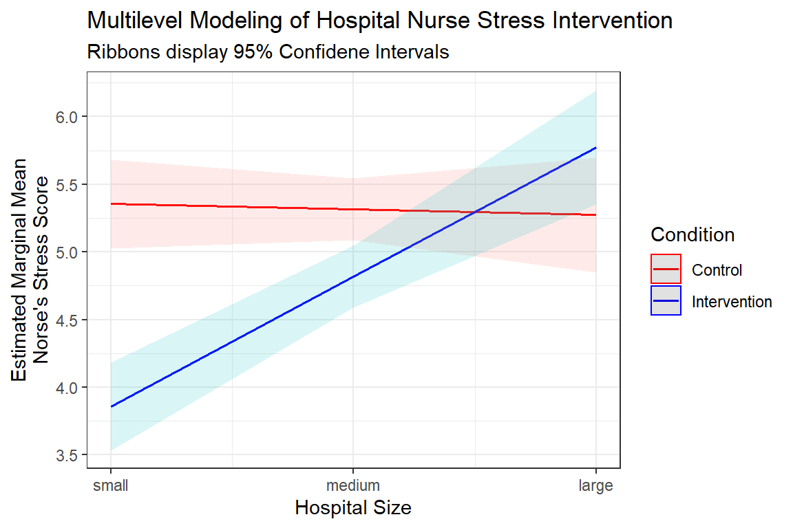
5.8.3.3 Using effects::Effect() and ggplot
Get Estimated Marginal Means - default ‘nice’ predictor values:
Focal predictors: All combinations of…
expconcategorical, both levelscontrolandexperiment
hospsizecategorical, all three levelssmall,medium,large
Always followed by:
fitestimated marginal meansestandard error for the marginal meanlowerlower end of the 95% confidence interval around the estimated marginal meanupperupper end of the 95% confidence interval around the estimated marginal mean
effects::Effect(focal.predictors = c("expconNG", "hospsizeNG"),
mod = nurse_lmer_3_re,
xlevels = list(expconNG = c(-0.504, 0.496),
hospsizeNG = c(-0.776, 0.224, 1.224))) %>%
data.frame() expconNG hospsizeNG fit se lower upper
1 -0.504 -0.776 5.382989 0.1631606 5.062810 5.703169
2 0.496 -0.776 3.885142 0.1626423 3.565979 4.204304
3 -0.504 0.224 5.341652 0.1112649 5.123310 5.559993
4 0.496 0.224 4.842621 0.1109167 4.624962 5.060279
5 -0.504 1.224 5.300315 0.2138881 4.880590 5.720040
6 0.496 1.224 5.800100 0.2131937 5.381737 6.218462effects::Effect(focal.predictors = c("expconNG", "hospsizeNG"),
mod = nurse_lmer_3_re,
xlevels = list(expconNG = c(-0.504, 0.496),
hospsizeNG = c(-0.776, 0.224, 1.224))) %>%
data.frame() %>%
dplyr::mutate(expcon = factor(expconNG + 0.504,
labels = c("Control", "Intervention"))) %>%
dplyr::mutate(hopsize = factor(hospsizeNG + 0.776,
labels = c("Small", "Medium", "Large"))) expconNG hospsizeNG fit se lower upper expcon hopsize
1 -0.504 -0.776 5.382989 0.1631606 5.062810 5.703169 Control Small
2 0.496 -0.776 3.885142 0.1626423 3.565979 4.204304 Intervention Small
3 -0.504 0.224 5.341652 0.1112649 5.123310 5.559993 Control Medium
4 0.496 0.224 4.842621 0.1109167 4.624962 5.060279 Intervention Medium
5 -0.504 1.224 5.300315 0.2138881 4.880590 5.720040 Control Large
6 0.496 1.224 5.800100 0.2131937 5.381737 6.218462 Intervention Largeeffects::Effect(focal.predictors = c("expconNG", "hospsizeNG"),
mod = nurse_lmer_3_re,
xlevels = list(expconNG = c(-0.504, 0.496),
hospsizeNG = c(-0.776, 0.224, 1.224))) %>%
data.frame() %>%
dplyr::mutate(expcon = factor(expconNG + 0.504,
labels = c("Control", "Intervention"))) %>%
dplyr::mutate(hospsize = factor(hospsizeNG + 0.776,
labels = c("Small", "Medium", "Large"))) %>%
ggplot() +
aes(x = hospsize,
y = fit,
group = expcon,
shape = expcon,
color = expcon) +
geom_errorbar(aes(ymin = fit - se, # mean plus/minus one Std Error
ymax = fit + se),
width = .4,
position = position_dodge(width = .2)) +
geom_errorbar(aes(ymin = lower, # 95% CIs
ymax = upper),
width = .2,
position = position_dodge(width = .2)) +
geom_line(aes(linetype = expcon),
position = position_dodge(width = .2)) +
geom_point(size = 4,
position = position_dodge(width = .2)) +
theme_bw() +
labs(x = "Hospital Size",
y = "Estimated Marginal Mean, Stress",
shape = "Condition",
color = "Condition",
linetype = "Condition") +
theme(legend.key.width = unit(2, "cm"),
legend.background = element_rect(color = "black"),
legend.position = c(1, 0),
legend.justification = c(1.1, -0.1))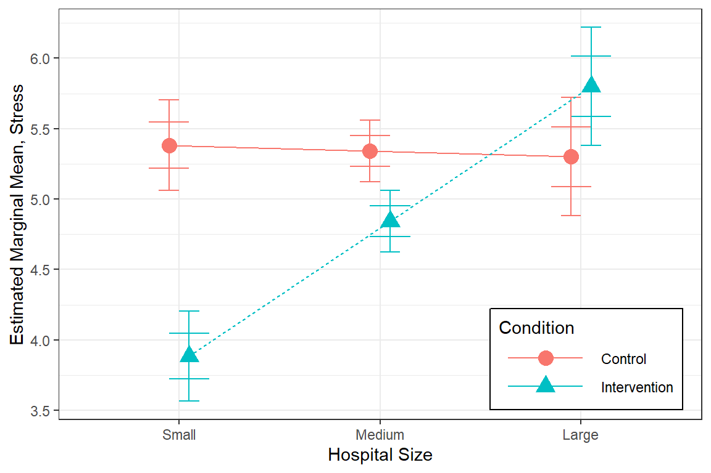
This plot illustrates the estimated marginal means among male (gender’s reference category) nurses at the overall mean age (43.01 years), with the mean level experience (17.06 years), since thoes variables were not included as focal.predictors in the effects::Effect() function. Different values for thoes predictors would yield the exact sample plot, shifted as a whole either up or down.
5.9 Interpretation
There is evidence this intervention lowered stress among nurses working in small hospitals and to a smaller degree in medium sized hospitals. The intervention did not exhibit an effect in large hospitals.
5.9.1 Strength
This analysis was able to incorporated all three levels of clustering while additionally controlling for many covariates, both categorical (nurse gender and ward type) and continuous (nurse age and experience in years). Also heterogeneity was accounted for in terms of the interventions’s effect at various hospitals. This would NOT be possible via any ANOVA type anlysis.
5.9.2 Weakness
The approach presented by Hox, Moerbeek, and Van de Schoot (2017) and shown above involved mean-centering categorical variables. This would only be appropriate for a factor with more than two levels if its effect on the outcome was linear. Also, as the mean-centered variables are treated as continuous variables, post hoc tests are increasingly difficult.
5.10 Reproduction of Table 2.5
Hox, Moerbeek, and Van de Schoot (2017) presents a table on page 23 comparing various models. Note, that table includes models only fit via maximum likelihood, not REML. Also, the model \(M_3\): with cross-level interaction is slightly different for an unknown reason.
texreg::knitreg(list(nurse_lmer_0_ml,
nurse_lmer_1d_ml,
nurse_lmer_2_ml,
nurse_lmer_3_ml),
custom.model.names = c("M0", "M1", "M2", "M3"),
caption = "Hox Table 2.5: Models for stress in hospitals and wards",
caption.above = TRUE,
single.row = TRUE)| M0 | M1 | M2 | M3 | |
|---|---|---|---|---|
| (Intercept) | 5.00 (0.11)*** | 5.40 (0.12)*** | 5.39 (0.11)*** | 5.39 (0.11)*** |
| expconNG | -0.70 (0.12)*** | -0.70 (0.18)*** | -0.72 (0.11)*** | |
| age | 0.02 (0.00)*** | 0.02 (0.00)*** | 0.02 (0.00)*** | |
| gender | -0.45 (0.03)*** | -0.46 (0.03)*** | -0.46 (0.03)*** | |
| experien | -0.06 (0.00)*** | -0.06 (0.00)*** | -0.06 (0.00)*** | |
| wardtypespecial care | 0.05 (0.12) | 0.05 (0.07) | 0.05 (0.07) | |
| hospsizeNG | 0.46 (0.12)*** | 0.46 (0.12)*** | 0.46 (0.12)*** | |
| expconNG:hospsizeNG | 1.00 (0.16)*** | |||
| AIC | 1950.36 | 1624.36 | 1597.48 | 1576.07 |
| BIC | 1969.99 | 1673.44 | 1651.47 | 1634.96 |
| Log Likelihood | -971.18 | -802.18 | -787.74 | -776.03 |
| Num. obs. | 1000 | 1000 | 1000 | 1000 |
| Num. groups: ward:hospital | 100 | 100 | 100 | 100 |
| Num. groups: hospital | 25 | 25 | 25 | 25 |
| Var: ward:hospital (Intercept) | 0.49 | 0.33 | ||
| Var: hospital (Intercept) | 0.16 | 0.10 | 0.15 | 0.15 |
| Var: Residual | 0.30 | 0.22 | 0.22 | 0.22 |
| Var: ward.hospital (Intercept) | 0.11 | 0.11 | ||
| Var: hospital.1 expconNG | 0.66 | 0.18 | ||
| p < 0.001; p < 0.01; p < 0.05 | ||||
Deviance:
c(deviance(nurse_lmer_0_ml),
deviance(nurse_lmer_1d_ml),
deviance(nurse_lmer_2_ml),
deviance(nurse_lmer_3_ml)) %>%
round(1)[1] 1942.4 1604.4 1575.5 1552.16 MLM, Centering/Scaling: Reading Achievement (2-levels only)
library(tidyverse) # all things tidy
library(haven) # read in SPSS dataset
library(furniture) # nice table1() descriptives
library(stargazer) # display nice tables: summary & regression
library(texreg) # Convert Regression Output to LaTeX or HTML Tables
library(psych) # contains some useful functions, like headTail
library(performance) # ICC and R2 calculations
library(effects) # Effects for regression models
library(optimx) # Different optimizers to solve mlm's
library(lme4) # non-linear mixed-effects models
library(haven) # read in SPSS dataset6.1 Background
The following example was included in the text “Multilevel Modeling in R” by Finch, Bolin, and Kelley (2016).
The datasets for this textbook may be downloaded from the website: http://www.mlminr.com/data-sets/.
I was unable to find any documentation on this dataset in the book or online, so I contacted the authors. There were unable to provide much either, but based on visual inspection designated the class of factor to thoes vairables that seem to represent categorical quantities. The labels for gender and class size are relative to the frequencies in the journal article the authors did point me to (although the samples sizes do not match up).
FOR THIS CHAPTER WE WILL IGNORE ALL LEVELS EXCEPT FOR STUDNETS BEING NESTED WITHIN SCHOOLS.
Read the SPSS data in with the haven package .
Declare all categorical variables to be factors and apply labels where meaningful.
Student-specific
*gender= Male or Female
*age= Age, in months
*gevocab= Vocabulary Score
*geread= Reading Score
Class-specific
*classsize= category of class’s size
School-specific
*senroll= school enrollment
*ses= school’s SES level
data_achieve <- data_raw %>%
dplyr::mutate_at(vars(id, region, corp, school, class), factor) %>%
dplyr::mutate(gender = gender %>%
factor(labels = c("Female", "Male"))) %>%
dplyr::mutate(classize = classize %>%
factor(labels = c("12-17", "18-21",
"22-26", ">26"))) %>%
dplyr::select(id, region, corp, school, class, # Identifiers
gender, age, geread, gevocab, # Pupil-level vars
classize, # Class-Level vars
senroll, ses) # School-level vars6.1.1 Sample Structure
It is obvious that the sample is hiarchical in nature. The nesting starts with students (level 1) nested within class (level 2), which are further nested within school (level 3), corp (level 4), and finally region (level 5).
For this chapter we will only focus on TWO levels: students (level 1) are the units on which the outcome is measured and schools (level 2) are the units in which they are nested.
The number of regions = 9:
[1] 9The number of corps = 60:
[1] 60The number of schools = 160
num_schools <- data_achieve %>%
dplyr::group_by(region, corp, school) %>%
dplyr::tally() %>%
nrow()
num_schools[1] 160The number of classes = 568
num_classes <- data_achieve %>%
dplyr::group_by(region, corp, school, class) %>%
dplyr::tally() %>%
nrow()
num_classes[1] 568The number of students = 10320
[1] 103206.2 Exploratory Data Analysis
6.2.1 Summarize Descriptive Statistics
6.2.1.1 The stargazer package
Most posters, journal articles, and reports start with a table of descriptive statistics. Since it tends to come first, this type of table is often refered to as Table 1. The stargazer() function can be used to create such a table, but only for the entire dataset. I haven’t been able to find a way to get it to summarize subsamples and compare them in the standard format. Also, it only summarises continuous, not categorical variables.
# Knit to Website: type = "html"
# Knit to PDF: type = "latex"
# View on Screen: type = "text"
data_achieve %>%
dplyr::select(classize, gender, geread, gevocab, age, ses, senroll) %>%
data.frame() %>%
stargazer::stargazer(header = FALSE,
title = "Summary of the numeric variables with `stargazer`",
type = "text")| Statistic | N | Mean | St. Dev. | Min | Pctl(25) | Pctl(75) | Max |
| geread | 10,320 | 4.341 | 2.332 | 0.000 | 2.800 | 4.900 | 12.000 |
| gevocab | 10,320 | 4.494 | 2.368 | 0.000 | 2.900 | 5.200 | 11.200 |
| age | 10,320 | 107.529 | 5.060 | 82 | 104 | 111 | 135 |
| ses | 10,320 | 72.849 | 21.982 | 0.000 | 66.300 | 87.800 | 100.000 |
| senroll | 10,320 | 533.415 | 154.797 | 115 | 438 | 644 | 916 |
6.2.1.2 The furniture package
Tyson Barrett’s furniture package includes the extremely useful function table1() which simplifies the common task of creating a stratified, comparative table of descriptive statistics. Full documentation can be accessed by executing ?furniture::table1.
# Knit to Website: output = "html"
# Knit to PDF: output = "latex2"
# View on Screen: output = ""text", or "markdown", "html"
data_achieve %>%
furniture:: table1("Reading Score" = geread,
"Vocabulary Score" = gevocab,
"Age (in months)" = age,
"School SES" = ses,
"School's Enrollment" = senroll,
splitby = ~ gender, # var to divide sample by
test = TRUE, # test groups different?
caption = "Summary of the numeric variables with `table1`",
output = "html")| Female | Male | P-Value | |
|---|---|---|---|
| n = 5143 | n = 5177 | ||
| Reading Score | 0.218 | ||
| 4.4 (2.3) | 4.3 (2.3) | ||
| Vocabulary Score | <.001 | ||
| 4.6 (2.4) | 4.4 (2.3) | ||
| Age (in months) | <.001 | ||
| 107.1 (5.0) | 107.9 (5.1) | ||
| School SES | 0.155 | ||
| 72.5 (22.3) | 73.2 (21.7) | ||
| School’s Enrollment | 0.483 | ||
| 532.3 (154.5) | 534.5 (155.1) |
6.2.2 Visualization of Raw Data
6.2.2.1 Level One Plots: Disaggregate or ignore higher levels
For a first look, its useful to plot all the data points on a single scatterplot as displayed in the previous plot. Due to the large sample size, many points end up being plotted on top of or very near each other (overplotted). When this is the case, it can be useful to use geom_binhex() rather than geom_point() so the color saturation of the hexigons convey the number of points at that location, as seen in Figure .
Note: I had to manually install the package hexbin for the geom_hex() to run.
data_achieve %>%
ggplot() +
aes(x = gevocab,
y = geread) +
stat_binhex(colour = "grey85", na.rm = TRUE) + # outlines
scale_fill_gradientn(colors = c("grey80","navyblue"), # fill color extremes
name = "Frequency", # legend title
na.value = NA) + # color for count = 0
theme_bw()(#fig:densityHex)Raw Data: Density, Vocab vs. Reading
6.2.2.2 Multilevel plots: illustrate two nested levels
Up to this point, all investigation of this dataset has been only at the pupil level and any nesting or clustering within schools has been ignored. Plotting is a good was to start to get an idea of the school-to-school variability. This figure displays four handpicked school to illustrate the degreen of school-to-school variability in the association between vocab and reading scores.
data_achieve %>%
dplyr::filter(school %in% c(1321, 6181,
6197, 6823)) %>% # choose school numbers
ggplot(aes(x = gevocab,
y = geread))+
geom_count() + # creates points, size by overplotted number
geom_smooth(method = "lm") + # linear model (OLS)
facet_wrap(~ school) + # panels by school
theme_bw()(#fig:schoolRegEx)Raw Data: Independent Single-Level Regression within each school, a few illustrative cases
Another way to explore the school-to-school variability is to plot the linear model fit independently to each of the schools. This next figure displays only the smooth lines without the standard error bands or the raw data in the form of points or hexagons.
data_achieve %>%
ggplot(aes(x = gevocab,
y = geread)) +
geom_smooth(aes(group = school),
method = "lm",
se = FALSE, # do NOT want the SE bands
size = 0.3) +
geom_smooth(method = "lm",
se = FALSE,
color = "red", # do NOT want the SE bands
size = 2) + # make the lines thinner
theme_bw() (#fig:schoolRegAll)Raw Data: Independent Single-Level Regression within each school, all schools shown together
Due to the high number of schools, the figure with all the school’s independent linear regression lines resembles a hairball and is hard to deduce much about individual schools. By using the facet_grid() layer, we can separate the schools out so better see school-to-school variability. It also allows investigation of higher level predictors, such as the school’s SES (median split with ntile(var, 2)) and class size.
data_achieve %>%
dplyr::mutate(ses2 = ntile(ses, 2) %>% # median split
factor(labels = c("SES: Lower Half",
"SES: Upper Half"))) %>%
dplyr::mutate(senroll = ntile(senroll, 3) %>%
factor(labels = c("Enroll: Smallest Third",
"Enroll: Middle Third",
"Enroll: Largest Third"))) %>%
ggplot(aes(x = gevocab,
y = geread,
group = school)) + # separates students into schools
geom_smooth(method = "lm",
se = FALSE,
size = 0.3,
color = "black",
alpha = .2) +
theme_bw() +
facet_grid(senroll ~ ses2) # makes separate panels (rows ~ columns)(#fig:classRegSep)Raw Data: Independent Single-Level Regression within each school, sepearated by school size and school SES
6.3 Single-Level Regression
6.3.1 Fit Nested Models
Ignoring the fact that students are nested or clustered within schools, is called dissagregating. This treats all students as independent units.
# linear model - ignores school (for reference only)
fit_read_lm_0 <- lm(formula = geread ~ 1, # intercept only
data = data_achieve)
fit_read_lm_1 <- lm(formula = geread ~ gevocab , # one predictor
data = data_achieve)
fit_read_lm_2 <- lm(formula = geread ~ gevocab + age, # two predictors
data = data_achieve)
fit_read_lm_3 <- lm(formula = geread ~ gevocab*age, # interation+main effects
data = data_achieve)Now compare the models:
texreg::knitreg(list(fit_read_lm_0,
fit_read_lm_1,
fit_read_lm_2,
fit_read_lm_3),
custom.model.names = c("Null",
"1 IV",
"2 IV",
"Interaction"),
caption = "OLS: Investigate Fixed, Pupil-level Predictors",
caption.above = TRUE,
single.row = TRUE)| Null | 1 IV | 2 IV | Interaction | |
|---|---|---|---|---|
| (Intercept) | 4.34 (0.02)*** | 1.96 (0.04)*** | 3.19 (0.42)*** | 5.28 (0.87)*** |
| gevocab | 0.53 (0.01)*** | 0.53 (0.01)*** | 0.01 (0.19) | |
| age | -0.01 (0.00)** | -0.03 (0.01)*** | ||
| gevocab:age | 0.00 (0.00)** | |||
| R2 | 0.00 | 0.29 | 0.29 | 0.29 |
| Adj. R2 | 0.00 | 0.29 | 0.29 | 0.29 |
| Num. obs. | 10320 | 10320 | 10320 | 10320 |
| p < 0.001; p < 0.01; p < 0.05 | ||||
Assess the significance of terms in the last ‘best’ model
Call:
lm(formula = geread ~ gevocab * age, data = data_achieve)
Residuals:
Min 1Q Median 3Q Max
-6.2069 -1.1250 -0.4362 0.6041 8.6476
Coefficients:
Estimate Std. Error t value Pr(>|t|)
(Intercept) 5.282607 0.869769 6.074 1.3e-09 ***
gevocab 0.009154 0.189113 0.048 0.961394
age -0.030814 0.008066 -3.820 0.000134 ***
gevocab:age 0.004830 0.001759 2.746 0.006039 **
---
Signif. codes: 0 '***' 0.001 '**' 0.01 '*' 0.05 '.' 0.1 ' ' 1
Residual standard error: 1.965 on 10316 degrees of freedom
Multiple R-squared: 0.2902, Adjusted R-squared: 0.29
F-statistic: 1406 on 3 and 10316 DF, p-value: < 2.2e-16# R2 for Linear Regression
R2: 0.290
adj. R2: 0.290Analysis of Variance Table
Response: geread
Df Sum Sq Mean Sq F value Pr(>F)
gevocab 1 16224 16223.9 4202.2783 < 2.2e-16 ***
age 1 34 33.7 8.7356 0.003128 **
gevocab:age 1 29 29.1 7.5419 0.006039 **
Residuals 10316 39827 3.9
---
Signif. codes: 0 '***' 0.001 '**' 0.01 '*' 0.05 '.' 0.1 ' ' 16.3.2 Visualize the Interaction
effects::Effect(focal.predictors = c("gevocab", "age"), # chooses default values for
mod = fit_read_lm_3) # continuous vars
gevocab*age effect
age
gevocab 82 95 110 120 140
0 2.755830 2.355243 1.893028 1.584884 0.9685969
3 3.971571 3.759370 3.514523 3.351291 3.0248284
6 5.187313 5.163497 5.136018 5.117699 5.0810599
8 5.997807 6.099582 6.217015 6.295304 6.4518809
10 6.808301 7.035667 7.298012 7.472909 7.8227019effects::Effect(focal.predictors = c("gevocab", "age"), # chooses default values for
mod = fit_read_lm_3) %>% # continuous vars
data.frame() %>%
mutate(age = factor(age)) %>% # must make a factor to separate lines
ggplot(aes(x = gevocab,
y = fit,
color = age)) +
geom_point() +
geom_line() 
Here is a better version of the plot.
Age is in months, so we want multiples of 12 for good visualization
Min. 1st Qu. Median Mean 3rd Qu. Max.
6.833 8.667 8.917 8.961 9.250 11.250 A good set set of illustrative ages could be: 7, 9, and 11:
[1] 84 108 132effects::Effect(focal.predictors = c("gevocab", "age"),
mod = fit_read_lm_3,
xlevels = list(age = c(84, 108, 132))) %>% # age is in months
data.frame() %>%
mutate(age_yr = factor(age/12)) %>% # it would be nice to plot age in years
ggplot(aes(x = gevocab,
y = fit,
color = age_yr,
linetype = age_yr)) +
geom_line(size = 1.25) +
theme_bw() +
labs(title = "Best Linear Model - Disaggregated Data (OLS)",
x = "Vocabulary Score",
y = "Reading Score",
linetype = "Age (yrs)",
color = "Age (yrs)") +
theme(legend.position = c(0.85, 0.2),
legend.key.width = unit(2, "cm"),
legend.background = element_rect(color = "black")) +
scale_linetype_manual(values = c("solid", "longdash", "dotted")) +
scale_x_continuous(breaks = seq(from = 0, to = 11, by = 2)) +
scale_y_continuous(breaks = seq(from = 0, to = 11, by = 1))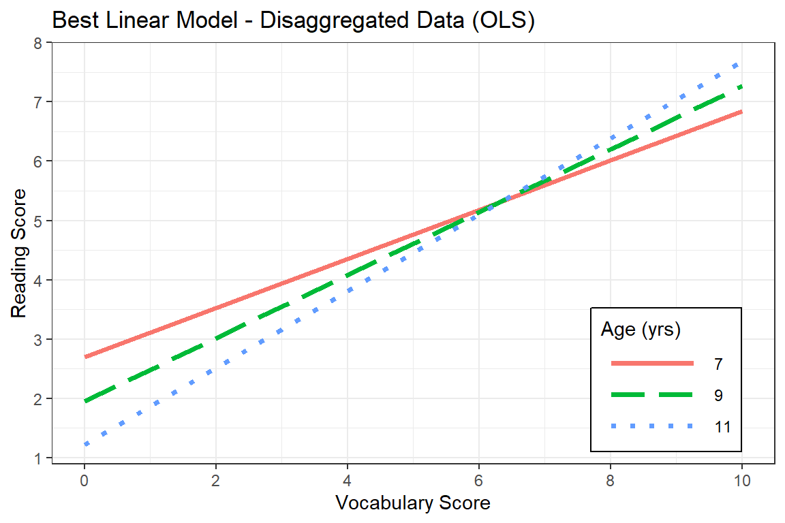
6.4 MLM - Step 1: Null Model, only fixed and random intercepts
A so called Empty Model only includes random intercepts. No independent variables are involved, other the grouping or clustering variable that designates how level 1 units are nested within level 2 units. For a cross-sectional study design this would be the grouping variables, where as for longitudinal or repeated measures designs this would be the subject identifier. This nested structure variable should be set to have class factor.
6.4.1 Fit the Model
fit_read_0ml <- lme4::lmer(geread ~ 1 + (1|school),
data = data_achieve,
REML = FALSE) # fit via ML (not the default)
fit_read_0re <- lme4::lmer(geread ~ 1 + (1|school) ,
data = data_achieve,
REML = TRUE) # fit = REML (the default)Compare the two models to OLS:
texreg::knitreg(list(fit_read_lm_0,
fit_read_0ml,
fit_read_0re),
custom.model.names = c("OLS",
"MLM-ML",
"MLM-REML"),
caption = "MLM: NULL Model,two estimation methods",
caption.above = TRUE,
single.row = TRUE)| OLS | MLM-ML | MLM-REML | |
|---|---|---|---|
| (Intercept) | 4.34 (0.02)*** | 4.31 (0.05)*** | 4.31 (0.05)*** |
| R2 | 0.00 | ||
| Adj. R2 | 0.00 | ||
| Num. obs. | 10320 | 10320 | 10320 |
| AIC | 46270.34 | 46274.31 | |
| BIC | 46292.06 | 46296.03 | |
| Log Likelihood | -23132.17 | -23134.15 | |
| Num. groups: school | 160 | 160 | |
| Var: school (Intercept) | 0.39 | 0.39 | |
| Var: Residual | 5.05 | 5.05 | |
| p < 0.001; p < 0.01; p < 0.05 | |||
Notice that the estimate for the intercept is nearly the same in the linear regression and intercept only models, but the standard errors are quite different. When there is clustering in sample, the result of ignoring it is under estimation of the standard errors and over stating the significance of associations. This table was made with the screenreg() function in the self named package. I tend to prefer this display over stargazer().
6.4.2 Estimate the ICC
First, ask for the variance compenents:
Groups Name Variance Std.Dev.
school (Intercept) 0.3915 0.6257
Residual 5.0450 2.2461 $var.fixed
[1] 0
$var.random
[1] 0.3915154
$var.residual
[1] 5.045008
$var.distribution
[1] 5.045008
$var.dispersion
[1] 0
$var.intercept
school
0.3915154 \[ \begin{align*} \text{schools} \rightarrow \; & \sigma^2_{u0} = 0.6257^2 = 0.392 \\ \text{students within schools} \rightarrow \; & \sigma^2_{e} = 2.2461^2 = 5.045 \\ \end{align*} \]
Intraclass Correlation (ICC) Formula \[ \overbrace{\rho}^{\text{ICC}} = \frac{\overbrace{\sigma^2_{u0}}^{\text{Random Intercept}\atop\text{Variance}}} {\underbrace{\sigma^2_{u0}+\sigma^2_{e}}_{\text{Total}\atop\text{Variance}}} \tag{Hox 2.9} \]
Then you can manually calculate the ICC.
[1] 0.07209858Or you can use the icc() function in the performance package.
# Intraclass Correlation Coefficient
Adjusted ICC: 0.072
Conditional ICC: 0.072Note: On page 45 (Finch, Bolin, and Kelley 2016), the authors substituted standard deviations into the formula, rather than variances. The mistake is listed on their webpage errata (http://www.mlminr.com/errata) and is repeated through the text.
6.5 MLM - Step 2: Add Lower-level explanatory variables, fixed, ML
Variance Component models (steps 2 and 3) - decompose the INTERCEPT variance into different variance compondents for each level. The regression intercepts are assumed to varry ACROSS the groups, while the slopes are assumed fixed (no random effects).
Fixed effects selection should come prior to random effects. You should use Maximum Likelihood (ML) estimation when fitting these models.
-
IF: only level 1 predictors and random intercepts are incorporated
- Then: MLM \(\approx\) ANCOVA .
6.5.1 Add pupil’s vocab score as a fixed effects predictor
fit_read_1ml <- lme4::lmer(geread ~ gevocab + (1|school),
data = data_achieve,
REML = FALSE) # to compare fixed var sig
fit_read_1re <- lme4::lmer(geread ~ gevocab + (1|school),
data = data_achieve,
REML = TRUE) # for R-sq calcstexreg::knitreg(list(fit_read_0ml,
fit_read_1ml),
custom.model.names = c("Null",
"w Pred"),
caption = "MLM: Investigate a Fixed Pupil-level Predictor",
caption.above = TRUE,
digits = 4)| Null | w Pred | |
|---|---|---|
| (Intercept) | 4.3068*** | 2.0231*** |
| (0.0548) | (0.0492) | |
| gevocab | 0.5130*** | |
| (0.0084) | ||
| AIC | 46270.3388 | 43132.4318 |
| BIC | 46292.0643 | 43161.3991 |
| Log Likelihood | -23132.1694 | -21562.2159 |
| Num. obs. | 10320 | 10320 |
| Num. groups: school | 160 | 160 |
| Var: school (Intercept) | 0.3885 | 0.0987 |
| Var: Residual | 5.0450 | 3.7661 |
| p < 0.001; p < 0.01; p < 0.05 | ||
6.5.1.1 Assess Significance of Effects
Likelihood Ratio Test (LRT)
Since models 0 and 1 are nested models, only differing by the the inclusion or exclusion of the fixed effects predictor gevocab, AND both models were fit via Maximum Likelihood, we can compare the model fit may be compared via the Likilihood-Ratio Test (LRT). The Likelihood Ratio value (L. Ratio) is found by subtracting the two model’s -2 * logLik or deviance values. Significance is judged by the Chi Squared distribution, using the difference in the number of parameters fit as the degrees of freedom.
Data: data_achieve
Models:
fit_read_0ml: geread ~ 1 + (1 | school)
fit_read_1ml: geread ~ gevocab + (1 | school)
npar AIC BIC logLik deviance Chisq Df Pr(>Chisq)
fit_read_0ml 3 46270 46292 -23132 46264
fit_read_1ml 4 43132 43161 -21562 43124 3139.9 1 < 2.2e-16 ***
---
Signif. codes: 0 '***' 0.001 '**' 0.01 '*' 0.05 '.' 0.1 ' ' 1What does the model look like?
effects::Effect(focal.predictors = c("gevocab"),
mod = fit_read_1ml) %>%
data.frame() %>%
ggplot(aes(x = gevocab,
y = fit)) +
geom_ribbon(aes(ymin = lower,
ymax = upper),
alpha = .3) +
geom_line() +
theme_bw()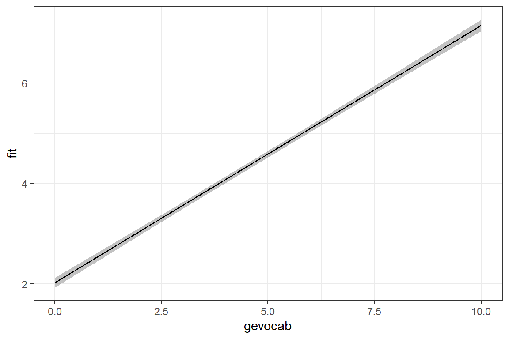
6.5.1.2 Proportion of Variance Explained
Extract the variance-covariance estimates:
BL = BAseline: The Null Model (fit via REML)
Groups Name Variance Std.Dev.
school (Intercept) 0.3915 0.6257
Residual 5.0450 2.2461 \[ \sigma^2_{u0-BL} = 0.392 \\ \sigma^2_{e-BL} = 5.045 \]
MC = Model to Compare: Model with Predictor (fit via REML)
Groups Name Variance Std.Dev.
school (Intercept) 0.09978 0.3159
Residual 3.76647 1.9407 \[ \sigma^2_{u0-MC} = 0.100 \\ \sigma^2_{e-MC} = 3.766 \]
Level 1 \(R^2\) - Snijders and Bosker
Found on page 47 (Finch, Bolin, and Kelley 2016), the proportion of variance in the outcome explained by predictor on level one is given by:
Snijders and Bosker Formula - Level 1 \[ R^2_1 = 1 - \frac{\sigma^2_{e-MC} + \sigma^2_{u0-MC}} {\sigma^2_{e-BL} + \sigma^2_{u0-BL}} \]
Note: This formula also apprears in the Finch errata. The subscripts in the denominator of the fraction should be for model 0, not model 1. The formula is given correctly here. They did substitute in the correct values.
Calculate the value by hand:
[1] 0.2889461Or use the performance package to help out: (Note it is using a difference method…)
# R2 for Mixed Models
Conditional R2: 0.295
Marginal R2: 0.276This means nearly 30% of the variance in reading scores, above and beyond that accounted for by school membership (i.e. school makeup or school-to-school variation), is attributable to vocabulary scores.
Level 1 \(R^2\) - Raudenbush and Bryk
Hox, Moerbeek, and Van de Schoot (2017) presents this formula on page 58 of chapter 2
Raudenbush and Bryk Approximate Formula - Level 1 \[ approx\; R^2_1 = \frac{\sigma^2_{e-BL} - \sigma^2_{e-MC}} {\sigma^2_{e-BL} } \tag{Hox 4.8} \]
Calculate the value by hand:
[1] 0.2535183Although slightly different in value and meaning, this value also conveys that vocabulary scores are highly associated with reading scores.
Level 2 \(R^2\) - Snijders and Bosker Formula Extended
Snijders and Bosker Formula Extended - Level 2 \[ R^2_2 = 1 - \frac{\frac{\sigma^2_{e-MC}}{B} + \sigma^2_{u0-MC}} {\frac{\sigma^2_{e-BL}}{B} + \sigma^2_{u0-BL}} \]
\(B\) is the average size of the Level 2 units (schools). Technically, you should use the harmonic mean, but unless the clusters differ greatly in size, it doesn’t make a huge difference.
- Average sample cluster size
[1] 64.5- Calculate by hand:
[1] 0.6624428This means that over two-thirds in school mean reading levels may be explained by their student’s vocabulary scores.
Level 2 \(R^2\) - Raudenbush and Bryk
Raudenbush and Bryk Approximate Formula - Level 2 \[ R^2_1 = \frac{\sigma^2_{u0-BL} - \sigma^2_{u0-MC}} {\sigma^2_{u0-BL} } \tag{Hox 4.9} \]
[1] 0.744898Remeber that these ‘variance accounted for’ estimations are not as straight forwards as we would like.
6.5.2 Investigate More Level 1 Predictors
Part of investigating lower level explanatory variables, is checking for interactions between these variables. The interaction between fixed effects is also considered to be a fixed effect, so we need to employ Maximum Likelihood estimation to compare nested models.
fit_read_2ml <- lmer(geread ~ gevocab + age + (1 | school), # add main effect of age
data = data_achieve,
REML = FALSE)
fit_read_3ml <- lmer(geread ~ gevocab*age + (1 | school), # add interaction between vocab and age
data = data_achieve,
REML = FALSE)texreg::knitreg(list(fit_read_1ml,
fit_read_2ml,
fit_read_3ml),
custom.model.names = c("Only Vocab",
"Both Main Effects",
"Interaction"),
caption = "MLM: Investigate Other Fixed Pupil-level Predictors",
caption.above = TRUE,
digits = 4)| Only Vocab | Both Main Effects | Interaction | |
|---|---|---|---|
| (Intercept) | 2.0231*** | 3.0049*** | 5.1874*** |
| (0.0492) | (0.4172) | (0.8666) | |
| gevocab | 0.5130*** | 0.5121*** | -0.0279 |
| (0.0084) | (0.0084) | (0.1881) | |
| age | -0.0091* | -0.0294*** | |
| (0.0038) | (0.0080) | ||
| gevocab:age | 0.0050** | ||
| (0.0017) | |||
| AIC | 43132.4318 | 43128.8201 | 43122.5687 |
| BIC | 43161.3991 | 43165.0293 | 43166.0198 |
| Log Likelihood | -21562.2159 | -21559.4100 | -21555.2844 |
| Num. obs. | 10320 | 10320 | 10320 |
| Num. groups: school | 160 | 160 | 160 |
| Var: school (Intercept) | 0.0987 | 0.0973 | 0.0977 |
| Var: Residual | 3.7661 | 3.7646 | 3.7614 |
| p < 0.001; p < 0.01; p < 0.05 | |||
6.5.2.1 Assess Significance of Effects
Likelihood Ratio Test (LRT)
Data: data_achieve
Models:
fit_read_1ml: geread ~ gevocab + (1 | school)
fit_read_2ml: geread ~ gevocab + age + (1 | school)
fit_read_3ml: geread ~ gevocab * age + (1 | school)
npar AIC BIC logLik deviance Chisq Df Pr(>Chisq)
fit_read_1ml 4 43132 43161 -21562 43124
fit_read_2ml 5 43129 43165 -21559 43119 5.6117 1 0.017841 *
fit_read_3ml 6 43123 43166 -21555 43111 8.2514 1 0.004072 **
---
Signif. codes: 0 '***' 0.001 '**' 0.01 '*' 0.05 '.' 0.1 ' ' 1Not only is student’s age predictive of their reading level (I could have guessed that), but that age moderated the relationship between vocabulary and reading.
6.5.2.2 Visulaize the Interation
Visulaizations are extremely helpful to interpred interactions.
Min. 1st Qu. Median Mean 3rd Qu. Max.
82.0 104.0 107.0 107.5 111.0 135.0 effects::Effect(focal.predictors = c("gevocab", "age"), # variables involved in the interaction
mod = fit_read_3ml,
xlevels = list(age = c(84, 108, 132))) %>% # age is in months
data.frame() %>%
mutate(age_yr = factor(age/12)) %>% # it would be nice to plot age in years
ggplot(aes(x = gevocab,
y = fit,
color = age_yr)) +
geom_line() +
theme_bw()
There is a positive association between vocabulary and reading, but it is strongest for older childred. Among younger children, reading scores are more stable across vocabulary differences.
6.6 MLM - Step 3: Higher-level explanatory variables, fixed, ML
School enrollment (senroll) applies to each school as a whole. When a variable is measured at a higher level, all units in the same group have the same value. In this case, all student in the same school have the same value for senroll.
fit_read_4ml <- lme4::lmer(geread ~ gevocab*age + senroll + (1 | school),
data = data_achieve,
REML = FALSE)texreg::knitreg(list(fit_read_0ml,
fit_read_3ml,
fit_read_4ml),
custom.model.names = c("Null",
"Level 1 only",
"Level 2 Pred"),
caption = "MLM: Investigate a Fixed School-Level Predictor",
caption.above = TRUE,
single.row = TRUE)| Null | Level 1 only | Level 2 Pred | |
|---|---|---|---|
| (Intercept) | 4.31 (0.05)*** | 5.19 (0.87)*** | 5.24 (0.87)*** |
| gevocab | -0.03 (0.19) | -0.03 (0.19) | |
| age | -0.03 (0.01)*** | -0.03 (0.01)*** | |
| gevocab:age | 0.01 (0.00)** | 0.01 (0.00)** | |
| senroll | -0.00 (0.00) | ||
| AIC | 46270.34 | 43122.57 | 43124.31 |
| BIC | 46292.06 | 43166.02 | 43175.01 |
| Log Likelihood | -23132.17 | -21555.28 | -21555.16 |
| Num. obs. | 10320 | 10320 | 10320 |
| Num. groups: school | 160 | 160 | 160 |
| Var: school (Intercept) | 0.39 | 0.10 | 0.10 |
| Var: Residual | 5.05 | 3.76 | 3.76 |
| p < 0.001; p < 0.01; p < 0.05 | |||
6.6.1 Assess Significance of Effects
Likelihood Ratio Test (LRT)
Data: data_achieve
Models:
fit_read_0ml: geread ~ 1 + (1 | school)
fit_read_3ml: geread ~ gevocab * age + (1 | school)
fit_read_4ml: geread ~ gevocab * age + senroll + (1 | school)
npar AIC BIC logLik deviance Chisq Df Pr(>Chisq)
fit_read_0ml 3 46270 46292 -23132 46264
fit_read_3ml 6 43123 43166 -21555 43111 3153.7701 3 <2e-16 ***
fit_read_4ml 7 43124 43175 -21555 43110 0.2548 1 0.6137
---
Signif. codes: 0 '***' 0.001 '**' 0.01 '*' 0.05 '.' 0.1 ' ' 1School enrollment (or size) does not seem be related to reading scores.
6.7 MLM - Step 4: Explanatory variables predict Slopes, random, REML
Random Coefficient models - decompose the SLOPE variance BETWEEN groups.
The fixed effect of the predictor captures the overall association it has with the outcome (intercept), while the random effect of the predictor captures the group-to-group variation in the association (slope). Note: A variable can be fit as BOTH a fixed and random effect.
fit_read_3re <- lme4::lmer(geread ~ gevocab*age + (1 | school), # refit the previous 'best' model via REML
data = data_achieve,
REML = TRUE)
#fit_read_5re <- lmer(geread ~ gevocab + (gevocab | school),
# data = achieve,
# REML = TRUE) # failed to converge :(
fit_read_5re <- lme4::lmer(geread ~ gevocab*age + (gevocab | school),
data = data_achieve,
REML = TRUE,
control = lmerControl(optimizer = "optimx", # get it to converge
calc.derivs = FALSE,
optCtrl = list(method = "nlminb",
starttests = FALSE,
kkt = FALSE))) texreg::knitreg(list(fit_read_3re,
fit_read_5re),
custom.model.names = c("Rand Int",
"Rand Int and Slopes"),
caption = "MLM: Investigate Random Effects",
caption.above = TRUE,
single.row = TRUE)| Rand Int | Rand Int and Slopes | |
|---|---|---|
| (Intercept) | 5.19 (0.87)*** | 5.61 (0.87)*** |
| gevocab | -0.03 (0.19) | -0.14 (0.19) |
| age | -0.03 (0.01)*** | -0.03 (0.01)*** |
| gevocab:age | 0.01 (0.00)** | 0.01 (0.00)*** |
| AIC | 43155.49 | 43011.65 |
| BIC | 43198.95 | 43069.58 |
| Log Likelihood | -21571.75 | -21497.82 |
| Num. obs. | 10320 | 10320 |
| Num. groups: school | 160 | 160 |
| Var: school (Intercept) | 0.10 | 0.28 |
| Var: Residual | 3.76 | 3.66 |
| Var: school gevocab | 0.02 | |
| Cov: school (Intercept) gevocab | -0.06 | |
| p < 0.001; p < 0.01; p < 0.05 | ||
6.7.0.1 Assess Significance of Effect
Likelihood Ratio Test (LRT) for Random Effects
You can use the Chi-squared LRT test based on deviances even though we fit our modesl with REML, since the models only differ in terms of including/exclusing of a random effects; they have same fixed effects. Just make sure to include the refit = FALSE option.
Data: data_achieve
Models:
fit_read_3re: geread ~ gevocab * age + (1 | school)
fit_read_5re: geread ~ gevocab * age + (gevocab | school)
npar AIC BIC logLik deviance Chisq Df Pr(>Chisq)
fit_read_3re 6 43155 43199 -21572 43143
fit_read_5re 8 43012 43070 -21498 42996 147.84 2 < 2.2e-16 ***
---
Signif. codes: 0 '***' 0.001 '**' 0.01 '*' 0.05 '.' 0.1 ' ' 1There is evidence the effect child vocabulary has on reading varies across schools.
6.7.0.2 Visualize the Model
What does the model look like?
effects::Effect(focal.predictors = c("gevocab", "age"),
mod = fit_read_5re, # just different model
xlevels = list(age = c(84, 108, 132))) %>%
data.frame() %>%
dplyr::mutate(age_yr = factor(age/12)) %>%
ggplot(aes(x = gevocab,
y = fit,
color = age_yr)) +
geom_line() +
theme_bw()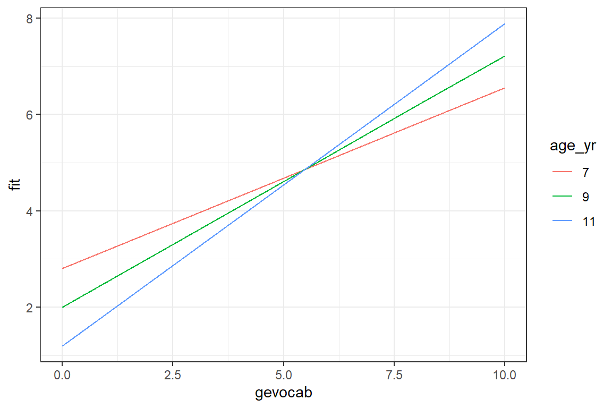
We are seeming much the same trends, but perhaps more separation between the lines.
6.8 MLM - Step 5: Cross-Level interactions between explanatory variables - fixed, ML
Cross-level interacitons involve variables at different levels. Here we will investigate the school-level enrollment moderating vocabulary’s effect since we say that vocab’s effect differs across schools (step 4).
Remember that an interaction beween fixed effects is also fixed.
fit_read_5ml <- lme4::lmer(geread ~ gevocab*age + (gevocab | school),
data = data_achieve,
REML = FALSE,
control = lmerControl(optimizer = "optimx",
calc.derivs = FALSE,
optCtrl = list(method = "nlminb",
starttests = FALSE,
kkt = FALSE)))
fit_read_6ml <- lme4::lmer(geread ~ gevocab*age + senroll + (gevocab | school),
data = data_achieve,
REML = FALSE,
control = lmerControl(optimizer ="Nelder_Mead"))
fit_read_7ml <- lme4::lmer(geread ~ gevocab*age + gevocab*senroll + (gevocab | school),
data = data_achieve,
REML = FALSE)
fit_read_8ml <- lme4::lmer(geread ~ gevocab*age*senroll + (gevocab | school),
data = data_achieve,
REML = FALSE)
If you get thelmer() message: Some predictor variables are on very different scales: consider rescaling, you can trust your results, but you really should try re-scaling your variables.
We are getting this message since gevoab is on mostly a single digit scale,0 to 11.2, and age (in months) ranges in the low thripe-digits, 82 through 135, while school enrollment is in the mid-hundreds, 112-916. When we compute the interactions we get much, much larger values. Having variables on such widely different ranges of values can cause estimation problems.
gevocab age senroll
Min. : 0.000 Min. : 82.0 Min. :115.0
1st Qu.: 2.900 1st Qu.:104.0 1st Qu.:438.0
Median : 3.800 Median :107.0 Median :519.0
Mean : 4.494 Mean :107.5 Mean :533.4
3rd Qu.: 5.200 3rd Qu.:111.0 3rd Qu.:644.0
Max. :11.200 Max. :135.0 Max. :916.0 For now, let us look at the results.
texreg::knitreg(list(fit_read_5ml,
fit_read_6ml,
fit_read_7ml,
fit_read_8ml),
custom.model.names = c("Level 1 only",
"Both Levels",
"Cross-Level",
"3-way"),
caption = "MLM: Investigate a Fixed Cross-level Interaction",
caption.above = TRUE,
digits = 3,
bold = TRUE)| Level 1 only | Both Levels | Cross-Level | 3-way | |
|---|---|---|---|---|
| (Intercept) | 5.614*** | 5.603*** | 5.515*** | 5.503 |
| (0.872) | (0.878) | (0.894) | (3.111) | |
| gevocab | -0.138 | -0.138 | -0.114 | 0.530 |
| (0.192) | (0.192) | (0.198) | (0.661) | |
| age | -0.033*** | -0.033*** | -0.033*** | -0.033 |
| (0.008) | (0.008) | (0.008) | (0.029) | |
| gevocab:age | 0.006*** | 0.006*** | 0.006*** | 0.000 |
| (0.002) | (0.002) | (0.002) | (0.006) | |
| senroll | 0.000 | 0.000 | 0.000 | |
| (0.000) | (0.000) | (0.006) | ||
| gevocab:senroll | -0.000 | -0.001 | ||
| (0.000) | (0.001) | |||
| age:senroll | -0.000 | |||
| (0.000) | ||||
| gevocab:age:senroll | 0.000 | |||
| (0.000) | ||||
| AIC | 42979.711 | 42981.698 | 42983.452 | 42982.851 |
| BIC | 43037.646 | 43046.874 | 43055.870 | 43069.753 |
| Log Likelihood | -21481.855 | -21481.849 | -21481.726 | -21479.426 |
| Num. obs. | 10320 | 10320 | 10320 | 10320 |
| Num. groups: school | 160 | 160 | 160 | 160 |
| Var: school (Intercept) | 0.272 | 0.271 | 0.274 | 0.269 |
| Var: school gevocab | 0.019 | 0.019 | 0.019 | 0.019 |
| Cov: school (Intercept) gevocab | -0.062 | -0.062 | -0.063 | -0.061 |
| Var: Residual | 3.660 | 3.660 | 3.660 | 3.659 |
| p < 0.001; p < 0.01; p < 0.05 | ||||
There is no evidence school enrollment moderates either of age or vocabulary’s effects.
6.8.0.1 Assess Significance of Effects
Likelihood Ratio Test (LRT)
When you have a list of sequentially nested models, you can test them in order with one call to the anova() funtion.
Data: data_achieve
Models:
fit_read_5ml: geread ~ gevocab * age + (gevocab | school)
fit_read_6ml: geread ~ gevocab * age + senroll + (gevocab | school)
npar AIC BIC logLik deviance Chisq Df Pr(>Chisq)
fit_read_5ml 8 42980 43038 -21482 42964
fit_read_6ml 9 42982 43047 -21482 42964 0.0132 1 0.9087Data: data_achieve
Models:
fit_read_5ml: geread ~ gevocab * age + (gevocab | school)
fit_read_7ml: geread ~ gevocab * age + gevocab * senroll + (gevocab | school)
npar AIC BIC logLik deviance Chisq Df Pr(>Chisq)
fit_read_5ml 8 42980 43038 -21482 42964
fit_read_7ml 10 42983 43056 -21482 42963 0.2593 2 0.8784Data: data_achieve
Models:
fit_read_5ml: geread ~ gevocab * age + (gevocab | school)
fit_read_8ml: geread ~ gevocab * age * senroll + (gevocab | school)
npar AIC BIC logLik deviance Chisq Df Pr(>Chisq)
fit_read_5ml 8 42980 43038 -21482 42964
fit_read_8ml 12 42983 43070 -21479 42959 4.8597 4 0.3026.9 Centering Predictors: Change Center
Centering variables measured on the lowest level only involves subtacting the mean from every value. The spread or standard deviation is not changed.
Although there are functions to automatically center and standardize variables, it is beneficial to manually create these variables, as it is more transparent and facilitates un-centering them later.
gevocab age senroll
Min. : 0.000 Min. : 82.0 Min. :115.0
1st Qu.: 2.900 1st Qu.:104.0 1st Qu.:438.0
Median : 3.800 Median :107.0 Median :519.0
Mean : 4.494 Mean :107.5 Mean :533.4
3rd Qu.: 5.200 3rd Qu.:111.0 3rd Qu.:644.0
Max. :11.200 Max. :135.0 Max. :916.0 6.9.1 Use Centered Variables
NOTE: The models with CENTERED variables are able to be fit with the default optimizer settings and do not return the error: "unable to evaluate scaled gradientModel failed to converge: degenerate Hessian with 1 negative eigenvalues"
fit_read_5ml_c <- lme4::lmer(geread ~ I(gevocab - 4.494) * I(age - 107.5) +
(I(gevocab - 4.494) | school),
data = data_achieve,
REML = FALSE)6.9.1.1 Compare the Models
texreg::knitreg(list(fit_read_5ml,
fit_read_5ml_c),
custom.model.names = c("Raw Units",
"Grand Mean Centered"),
groups = list("Raw Scale" = 2:4,
"Mean Centered" = 5:7),
caption = "MLM: Investigate Centering Variables Involved in an Interaction",
caption.above = TRUE,
single.row = TRUE,
digits = 3)| Raw Units | Grand Mean Centered | |
|---|---|---|
| (Intercept) | 5.614 (0.872)*** | 4.348 (0.033)*** |
| Raw Scale | ||
| gevocab | -0.138 (0.192) | |
| age | -0.033 (0.008)*** | |
| gevocab:age | 0.006 (0.002)*** | |
| Mean Centered | ||
| gevocab - 4.494 | 0.519 (0.014)*** | |
| age - 107.5 | -0.006 (0.004) | |
| I(gevocab - 4.494):age - 107.5 | 0.006 (0.002)*** | |
| AIC | 42979.711 | 42979.711 |
| BIC | 43037.646 | 43037.646 |
| Log Likelihood | -21481.855 | -21481.855 |
| Num. obs. | 10320 | 10320 |
| Num. groups: school | 160 | 160 |
| Var: school (Intercept) | 0.272 | 0.100 |
| Var: school gevocab | 0.019 | |
| Cov: school (Intercept) gevocab | -0.062 | |
| Var: Residual | 3.660 | 3.660 |
| Var: school I(gevocab - 4.494) | 0.019 | |
| Cov: school (Intercept) I(gevocab - 4.494) | 0.024 | |
| p < 0.001; p < 0.01; p < 0.05 | ||
Notice that the interactions yield the exact same parameter estimates and significances, but the main effects (including the interactions) are different. Model fit statistics include \(-2LL\) are exactly the same, too.
# Comparison of Model Performance Indices
Model | Type | AIC | BIC | R2_conditional | R2_marginal | ICC | RMSE | BF
------------------------------------------------------------------------------------------------
fit_read_5ml | lmerMod | 42979.71 | 43037.65 | 0.32 | 0.28 | 0.05 | 1.90 |
fit_read_5ml_c | lmerMod | 42979.71 | 43037.65 | 0.32 | 0.28 | 0.05 | 1.90 | 1

6.10 Rescaling Predictors: Change Units or Standardize
Where centering variables involved subtracting a set value, scalling a varaibles involves dividing by a set amount. When we both center to the mean and divide by the standard deviation, the new resulting varaible is said to be standardized (not to be confusing with normalizing, which is does not do).
To retain meaningful units, you can multiply or divide all the measured values of a variable by a set amount, like a multiple of 10. This retains the meaning behind the units while still bringing them into line with other variables in the model and can avoid some convergence issues.
6.10.1 Scale Varaibles
6.10.1.1 Divide by a Meaningful Value
gevocab age ses
Min. : 0.000 Min. : 82.0 Min. : 0.00
1st Qu.: 2.900 1st Qu.:104.0 1st Qu.: 66.30
Median : 3.800 Median :107.0 Median : 81.70
Mean : 4.494 Mean :107.5 Mean : 72.85
3rd Qu.: 5.200 3rd Qu.:111.0 3rd Qu.: 87.80
Max. :11.200 Max. :135.0 Max. :100.00 For this situation, lets only divide SES by ten.
6.10.2 Use Scaled Variables
Using the new versions of our variables, investigate is SES has an effect, either in 2-way or 3-way interactions with age and vocabulary.
fit_read_5ml_s <- lme4::lmer(geread ~ I(gevocab - 4.494) * I(age - 107.5) +
(I(gevocab - 4.494) | school),
data = data_achieve,
REML = FALSE)
fit_read_6ml_s <- lme4::lmer(geread ~ I(gevocab - 4.494) * I(age - 107.5) +
I(gevocab - 4.494) * I(ses/10) +
(I(gevocab - 4.494) | school),
data = data_achieve,
REML = FALSE,
control = lmerControl(optimizer ="Nelder_Mead"))
fit_read_7ml_s <- lme4::lmer(geread ~ I(gevocab - 4.494) * I(age - 107.5) * I(ses/10) +
(I(gevocab - 4.494) | school),
data = data_achieve,
REML = FALSE,
control = lmerControl(optimizer ="Nelder_Mead"))texreg::knitreg(list(fit_read_5ml_s,
fit_read_6ml_s,
fit_read_7ml_s),
custom.model.names = c("no SES",
"2-way",
"3-way"),
caption = "MLM: Investigate More Complex Fixed Interactions (with Scalling)",
caption.above = TRUE,
digits = 3)| no SES | 2-way | 3-way | |
|---|---|---|---|
| (Intercept) | 4.348*** | 3.945*** | 3.942*** |
| (0.033) | (0.107) | (0.107) | |
| gevocab - 4.494 | 0.519*** | 0.671*** | 0.674*** |
| (0.014) | (0.051) | (0.051) | |
| age - 107.5 | -0.006 | -0.004 | -0.008 |
| (0.004) | (0.004) | (0.014) | |
| I(gevocab - 4.494):age - 107.5 | 0.006*** | 0.006** | 0.000 |
| (0.002) | (0.002) | (0.007) | |
| ses/10 | 0.057*** | 0.058*** | |
| (0.014) | (0.014) | ||
| I(gevocab - 4.494):ses/10 | -0.021** | -0.022** | |
| (0.007) | (0.007) | ||
| I(age - 107.5):ses/10 | 0.000 | ||
| (0.002) | |||
| I(gevocab - 4.494):I(age - 107.5):ses/10 | 0.001 | ||
| (0.001) | |||
| AIC | 42979.711 | 42928.813 | 42932.046 |
| BIC | 43037.646 | 43001.232 | 43018.948 |
| Log Likelihood | -21481.855 | -21454.407 | -21454.023 |
| Num. obs. | 10320 | 10320 | 10320 |
| Num. groups: school | 160 | 160 | 160 |
| Var: school (Intercept) | 0.100 | 0.079 | 0.079 |
| Var: school I(gevocab - 4.494) | 0.019 | 0.017 | 0.017 |
| Cov: school (Intercept) I(gevocab - 4.494) | 0.024 | 0.031 | 0.031 |
| Var: Residual | 3.660 | 3.662 | 3.662 |
| p < 0.001; p < 0.01; p < 0.05 | |||
Data: data_achieve
Models:
fit_read_5ml_s: geread ~ I(gevocab - 4.494) * I(age - 107.5) + (I(gevocab - 4.494) |
fit_read_5ml_s: school)
fit_read_6ml_s: geread ~ I(gevocab - 4.494) * I(age - 107.5) + I(gevocab - 4.494) *
fit_read_6ml_s: I(ses/10) + (I(gevocab - 4.494) | school)
fit_read_7ml_s: geread ~ I(gevocab - 4.494) * I(age - 107.5) * I(ses/10) + (I(gevocab -
fit_read_7ml_s: 4.494) | school)
npar AIC BIC logLik deviance Chisq Df Pr(>Chisq)
fit_read_5ml_s 8 42980 43038 -21482 42964
fit_read_6ml_s 10 42929 43001 -21454 42909 54.8974 2 1.2e-12 ***
fit_read_7ml_s 12 42932 43019 -21454 42908 0.7674 2 0.6813
---
Signif. codes: 0 '***' 0.001 '**' 0.01 '*' 0.05 '.' 0.1 ' ' 1There is evidence that SES moderates the main effect of vocabulary, after accounting for the interaction between age and vocabulary. But there is NOT evidence of a three-way interaction between vobaculary, age, and SES.
6.11 Final Model
Always refit the final model via REML.
fit_read_6re_s <- lme4::lmer(geread ~ I(gevocab - 4.494) * I(age - 107.5) +
I(gevocab - 4.494) * I(ses/10) +
(I(gevocab - 4.494) | school),
data = data_achieve,
REML = TRUE)6.11.1 Table
texreg::knitreg(fit_read_6re_s,
caption = "MLM: Final Model",
caption.above = TRUE,
single.row = TRUE,
digits = 3)| Model 1 | |
|---|---|
| (Intercept) | 3.945 (0.107)*** |
| gevocab - 4.494 | 0.671 (0.051)*** |
| age - 107.5 | -0.004 (0.004) |
| ses/10 | 0.057 (0.014)*** |
| I(gevocab - 4.494):age - 107.5 | 0.006 (0.002)** |
| I(gevocab - 4.494):ses/10 | -0.021 (0.007)** |
| AIC | 42976.511 |
| BIC | 43048.929 |
| Log Likelihood | -21478.255 |
| Num. obs. | 10320 |
| Num. groups: school | 160 |
| Var: school (Intercept) | 0.081 |
| Var: school I(gevocab - 4.494) | 0.018 |
| Cov: school (Intercept) I(gevocab - 4.494) | 0.032 |
| Var: Residual | 3.662 |
| p < 0.001; p < 0.01; p < 0.05 | |
6.11.1.1 Visualize the Model
Recall the scales that the revised variables are now on:
gevocab age ses
Min. : 0.000 Min. : 82.0 Min. : 0.00
1st Qu.: 2.900 1st Qu.:104.0 1st Qu.: 66.30
Median : 3.800 Median :107.0 Median : 81.70
Mean : 4.494 Mean :107.5 Mean : 72.85
3rd Qu.: 5.200 3rd Qu.:111.0 3rd Qu.: 87.80
Max. :11.200 Max. :135.0 Max. :100.00 interactions::interact_plot(model = fit_read_6ml_s, # model name
pred = gevocab, # x-axis, main independent variable (continuous, ordinal)
modx = age, # lines by moderator, another independent variable
mod2 = ses) # panel by 2nd moderator, another indep var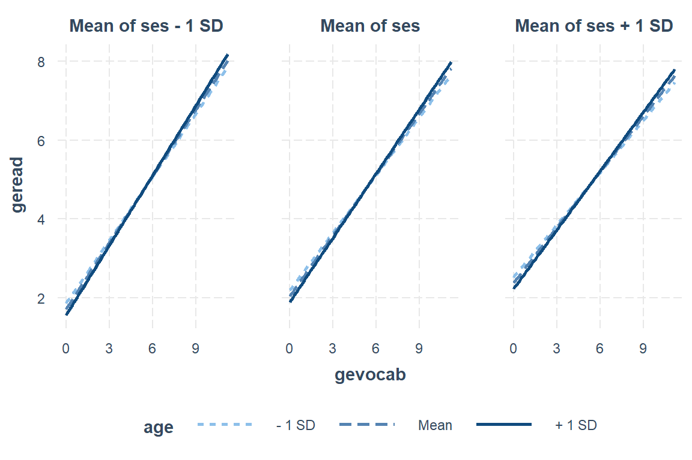
Define values for the moderator(s):
interactions::interact_plot(model = fit_read_6ml_s,
pred = gevocab,
modx = age,
mod2 = ses,
modx.values = c(90, 110, 130),
mod2.values = c(20, 55, 90),
interval = TRUE)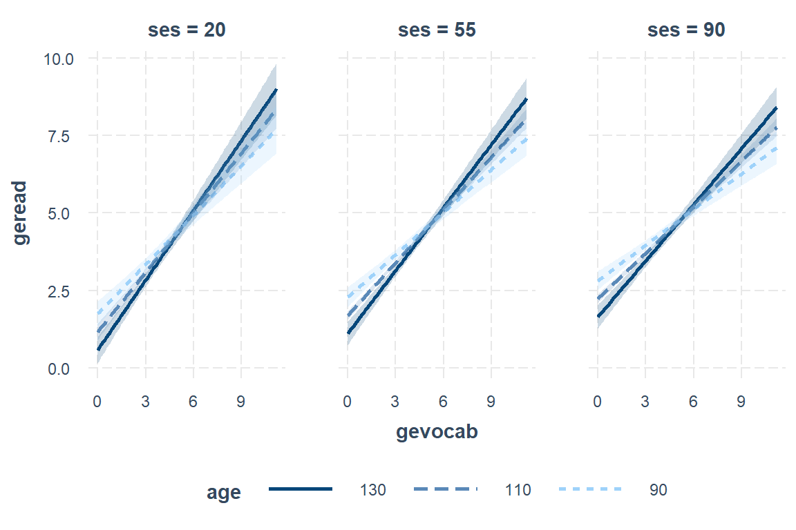
Swap the moderators:
interactions::interact_plot(model = fit_read_6ml_s,
pred = gevocab,
mod2 = age,
modx = ses,
mod2.values = c(90, 110, 130),
modx.values = c(20, 55, 90),
interval = TRUE)
6.11.2 Interpretation of model
There is strong evidence that higher vocabulary scores correlate with higher reading scores. This relationship is strongest in low SES schools and among older students. This relationship is also weaker in younger students and those attending high SES schools.
See: Nakagawa and Schielzeth (2013) for more regarding model \(R^2\)
From the performance::r2() documentation, for mixed models:
- marginal r-squared considers only the variance of the fixed effects
- conditional r-squared takes both the fixed and random effects into account
# R2 for Mixed Models
Conditional R2: 0.322
Marginal R2: 0.289Over 32% of the variance in student reading is attributable vocab, ses, age, and school-to-school differences, R^2 = .322.
Helpful links:
http://maths-people.anu.edu.au/~johnm/r-book/xtras/mlm-ohp.pdf
http://ase.tufts.edu/gsc/gradresources/guidetomixedmodelsinr/mixed%20model%20guide.html
http://web.stanford.edu/class/psych252/section_2015/Section_week9.html
https://www.r-bloggers.com/visualizing-generalized-linear-mixed-effects-models-part-2-rstats-lme4/
7 MLM, Centering/Scaling: Student Popularity
library(tidyverse) # all things tidy
library(broom) # converst stats objestcs to tidy tibbles
library(haven) # read in SPSS dataset
library(furniture) # nice table1() descriptives
library(stargazer) # display nice tables: summary & regression
library(texreg) # Convert Regression Output to LaTeX or HTML Tables
library(psych) # contains some useful functions, like headTail
library(sjstats) # ICC calculations
library(lme4) # non-linear mixed-effects models
library(haven) # read in SPSS dataset7.1 Background
The text “Multilevel Analysis: Techniques and Applications, Third Edition” (Hox, Moerbeek, and Van de Schoot 2017) has a companion website which includes links to all the data files used throughout the book (housed on the book’s GitHub repository).
The following example is used through out Hox, Moerbeek, and Van de Schoot (2017)’s chapater 2.
From Appendix E:
The popularity data in popular2.sav are simulated data for 2000 pupils in 100 schools. The purpose is to offer a very simple example for multilevel regression analysis. The main outcome variable is the pupil popularity, a popularity rating on a scale of 1-10 derived by a sociometric procedure. Typically, a sociometric procedure asks all pupils in a class to rate all the other pupils, and then assigns the average received popularity rating to each pupil. Because of the sociometric procedure, group effects as apparent from higher level variance components are rather strong. There is a second outcome variable: pupil popularity as rated by their teacher, on a scale from 1-10. The explanatory variables are pupil gender (boy=0, girl=1), pupil extraversion (10-point scale) and teacher experience in years. The popularity data have been generated to be a ‘nice’ well-behaved data set: the sample sizes at both levels are sufficient, the residuals have a normal distribution, and the multilevel effects are strong.
data_raw <- haven::read_sav("https://github.com/MultiLevelAnalysis/Datasets-third-edition-Multilevel-book/raw/master/chapter%202/popularity/SPSS/popular2.sav") %>%
haven::as_factor() # retain the labels from SPSS --> factor
data_pop <- data_raw %>%
dplyr::mutate(id = paste(class, pupil,
sep = "_") %>% # create a unique id for each student (char)
factor()) %>% # declare id is a factor
dplyr::select(id, pupil:popteach) # reduce the variables included
tibble::glimpse(data_pop)Rows: 2,000
Columns: 8
$ id <fct> 1_1, 1_2, 1_3, 1_4, 1_5, 1_6, 1_7, 1_8, 1_9, 1_10, 1_11, 1...
$ pupil <dbl> 1, 2, 3, 4, 5, 6, 7, 8, 9, 10, 11, 12, 13, 14, 15, 16, 17,...
$ class <dbl> 1, 1, 1, 1, 1, 1, 1, 1, 1, 1, 1, 1, 1, 1, 1, 1, 1, 1, 1, 1...
$ extrav <dbl> 5, 7, 4, 3, 5, 4, 5, 4, 5, 5, 5, 5, 5, 5, 5, 6, 4, 4, 7, 4...
$ sex <fct> girl, boy, girl, girl, girl, boy, boy, boy, boy, boy, girl...
$ texp <dbl> 24, 24, 24, 24, 24, 24, 24, 24, 24, 24, 24, 24, 24, 24, 24...
$ popular <dbl> 6.3, 4.9, 5.3, 4.7, 6.0, 4.7, 5.9, 4.2, 5.2, 3.9, 5.7, 4.8...
$ popteach <dbl> 6, 5, 6, 5, 6, 5, 5, 5, 5, 3, 5, 5, 5, 6, 5, 5, 2, 3, 7, 4...data_pop %>%
ggplot() +
aes(x = extrav,
y = popular,
group = class) +
geom_smooth(method = "lm",
se = FALSE,
color = "black",
size = .2) +
theme_bw() +
geom_vline(xintercept = 0,
color = "red") +
labs(title = "OLS: Single Level Regression",
subtitle = "Thin black lines are OLS regression ran independently on each class",
x = "Student's Extroversion, as rated by their teacher",
y = "Student's Populartity, mean rating by their peers") +
coord_cartesian(xlim = c(0, 10),
ylim = c(0, 10)) +
scale_x_continuous(breaks = seq(from = 0, to = 10, by = 2)) +
scale_y_continuous(breaks = seq(from = 0, to = 10, by = 2))
7.2 Grand-Mean-Centering and Standardizing Variables
It is best to manually determine the variable’s mean (mean()) and standard deviation (sd()).
[1] 5.215[1] 1.2623687.2.1 Grand-Mean-Centering
\[ VAR_G = VAR - mean(VAR) \]
7.2.2 Standardizing
\[ VAR_Z = \frac{VAR - mean(VAR)}{sd(VAR)} \]
data_pop <- data_pop %>%
dplyr::mutate(extravG = extrav - 5.215) %>%
dplyr::mutate(extravZ = (extrav - 5.215) / 1.262368)data_pop %>%
dplyr::select(extrav, extravG, extravZ) %>%
data.frame() %>%
stargazer::stargazer(title = "Descriptive statistics: Three versions of Extraversion",
header = FALSE,
type = "html")| Statistic | N | Mean | St. Dev. | Min | Pctl(25) | Pctl(75) | Max |
| extrav | 2,000 | 5.215 | 1.262 | 1 | 4 | 6 | 10 |
| extravG | 2,000 | 0.000 | 1.262 | -4.215 | -1.215 | 0.785 | 4.785 |
| extravZ | 2,000 | 0.000 | 1.000 | -3.339 | -0.962 | 0.622 | 3.790 |
7.3 RI = ONLY Random Intercepts
7.3.1 Fit MLM with all 3 versions of the predictor
pop_lmer_1_raw <- lme4::lmer(popular ~ extrav + (1|class),
data = data_pop,
REML = FALSE)
pop_lmer_1_cen <- lme4::lmer(popular ~ extravG + (1|class),
data = data_pop,
REML = FALSE)
pop_lmer_1_std <- lme4::lmer(popular ~ extravZ + (1|class),
data = data_pop,
REML = FALSE)texreg::knitreg(list(pop_lmer_1_raw,
pop_lmer_1_cen,
pop_lmer_1_std),
custom.model.names = c("Raw",
"Centered",
"Standardized"),
caption = "MLM - RI: Effect of Grand-Mean Centering and Standardizing",
caption.above = TRUE,
single.row = TRUE)| Raw | Centered | Standardized | |
|---|---|---|---|
| (Intercept) | 2.54 (0.14)*** | 5.08 (0.09)*** | 5.08 (0.09)*** |
| extrav | 0.49 (0.02)*** | ||
| extravG | 0.49 (0.02)*** | ||
| extravZ | 0.61 (0.03)*** | ||
| AIC | 5831.78 | 5831.78 | 5831.78 |
| BIC | 5854.18 | 5854.18 | 5854.18 |
| Log Likelihood | -2911.89 | -2911.89 | -2911.89 |
| Num. obs. | 2000 | 2000 | 2000 |
| Num. groups: class | 100 | 100 | 100 |
| Var: class (Intercept) | 0.83 | 0.83 | 0.83 |
| Var: Residual | 0.93 | 0.93 | 0.93 |
| p < 0.001; p < 0.01; p < 0.05 | |||
** MLM - Random Intercepts ONLY**
- Grand-Mean Centering a Predictor
-
Different than when using the Raw Predictor:
- fixed intercept
-
Same as when using the Raw Predictor:
-
fixed estimates or slopes for all predictors (main effects and interactions)
- random estimates, i.e. variance and covariance components, includin the residual variance
- model fit statistics, including AIC, BIC, and the Log Loikelihood (-2LL or deviance)
-
fixed estimates or slopes for all predictors (main effects and interactions)
- Standardize a Predictor
-
Different than when using the Raw Predictor:
-
fixed intercept (same as if using the grand-mean centered predictor)
- fixed estimate (slope) for that variable
-
fixed intercept (same as if using the grand-mean centered predictor)
-
Stays the SAME:
-
random estimates, i.e. variance and covariance components, includin the residual variance
- model fit statistics, including AIC, BIC, and the Log Loikelihood (-2LL or deviance)
-
random estimates, i.e. variance and covariance components, includin the residual variance
7.3.2 Investigating a MLM-RI Model
7.3.2.1 Fixed Effects: intercept and slope
There is only ONE fixed intercept and ONE fixed slope.
The fixef() function extracts the estimates of the fixed effects.
(Intercept) extrav
2.5427027 0.4862002 [1] 2.542703[1] 0.4862002data_pop %>%
ggplot() +
aes(x = extrav,
y = popular,
group = class) +
geom_smooth(method = "lm",
se = FALSE,
color = "black",
size = .2) +
geom_abline(intercept = fixef(pop_lmer_1_raw)[["(Intercept)"]],
slope = fixef(pop_lmer_1_raw)[["extrav"]],
color = "hot pink",
size = 2) +
theme_bw() +
geom_vline(xintercept = 0,
color = "red") +
labs(title = "MLM-RI: Extroversion = raw score",
subtitle = "Thin black lines are OLS regression ran independently on each class",
x = "Student's Extroversion, as rated by their teacher",
y = "Student's Populartity, mean rating by their peers") +
coord_cartesian(xlim = c(0, 10),
ylim = c(0, 10)) +
scale_x_continuous(breaks = seq(from = 0, to = 10, by = 2)) +
scale_y_continuous(breaks = seq(from = 0, to = 10, by = 2))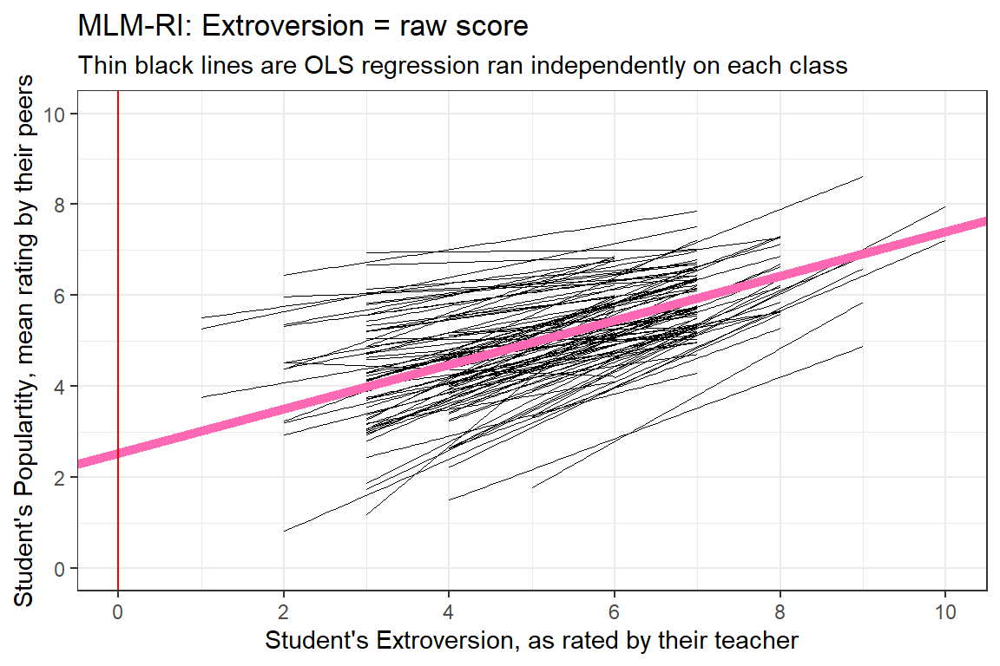
7.3.2.2 Random Effects: intercepts
There is a different random intercept for EACH CLASS. These tell how far each class’s average is off of the grand average.
The ranef() function extracts the random effects from a fitted model object
List of 1
$ class:'data.frame': 100 obs. of 1 variable:
..$ (Intercept): num [1:100] 0.165 -0.7536 -0.3646 0.5405 -0.0994 ...
..- attr(*, "postVar")= num [1, 1, 1:100] 0.044 0.044 0.0486 0.0386 0.042 ...
- attr(*, "class")= chr "ranef.mer" (Intercept)
1 0.16499938
2 -0.75362983
3 -0.36464658
4 0.54049206
5 -0.09943663
6 -0.60487822ranef(pop_lmer_1_raw)$class %>%
dplyr::rename(Random_Intercepts = "(Intercept)") %>%
ggplot(aes(Random_Intercepts)) +
geom_histogram(binwidth = .25)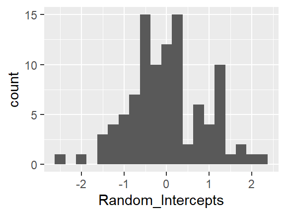
7.3.2.3 Predictions
Named num [1:2000] 5.14 6.11 4.65 4.17 5.14 ...
- attr(*, "names")= chr [1:2000] "1" "2" "3" "4" ... 1 2 3 4 5 6
5.138703 6.111103 4.652503 4.166303 5.138703 4.652503 data_pop %>%
dplyr::mutate(pred = predict(pop_lmer_1_raw)) %>%
ggplot(aes(x = extrav,
y = pred,
group = class)) +
geom_line(size = .2) +
geom_abline(intercept = fixef(pop_lmer_1_raw)[["(Intercept)"]],
slope = fixef(pop_lmer_1_raw)[["extrav"]],
color = "hot pink",
size = 2) +
theme_bw() +
geom_vline(xintercept = 0,
color = "red") +
geom_vline(xintercept = 5.215,
color = "blue") +
labs(title = "MLM-RI: Extroversion = raw score",
subtitle = "Thin black lines are group-wise predictions, one per class",
x = "Student's Extroversion, as rated by their teacher",
y = "Predicted\nStudent's Populartity, mean rating by their peers") +
coord_cartesian(xlim = c(0, 10),
ylim = c(0, 10)) +
scale_x_continuous(breaks = seq(from = 0, to = 10, by = 2)) +
scale_y_continuous(breaks = seq(from = 0, to = 10, by = 2))
7.3.2.4 Combined Effects
The coef() function computes the sum of the random and fixed effects coefficients for each explanatory variable for each level of each grouping factor.
List of 1
$ class:'data.frame': 100 obs. of 2 variables:
..$ (Intercept): num [1:100] 2.71 1.79 2.18 3.08 2.44 ...
..$ extrav : num [1:100] 0.486 0.486 0.486 0.486 0.486 ...
- attr(*, "class")= chr "coef.mer" (Intercept) extrav
1 2.707702 0.4862002
2 1.789073 0.4862002
3 2.178056 0.4862002
4 3.083195 0.4862002
5 2.443266 0.4862002
6 1.937824 0.4862002data_pop %>%
dplyr::mutate(pred = predict(pop_lmer_1_raw)) %>%
ggplot() +
aes(x = extrav,
y = pred,
group = class) +
geom_rect(aes(xmin = 0 - 0.25,
xmax = 0 + 0.25,
ymin = fixef(pop_lmer_1_raw)[["(Intercept)"]]- 2.5,
ymax = fixef(pop_lmer_1_raw)[["(Intercept)"]]+ 2.5),
fill = "yellow",
alpha = 0.05) +
geom_abline(data = coef(pop_lmer_1_raw)$class %>% dplyr::rename(Intercept = "(Intercept)"),
aes(intercept = Intercept,
slope = extrav),
color = "gray",
size = .1) +
geom_line(size = .2) +
geom_abline(intercept = fixef(pop_lmer_1_raw)[["(Intercept)"]],
slope = fixef(pop_lmer_1_raw)[["extrav"]],
color = "hot pink",
size = 2) +
theme_bw() +
geom_vline(xintercept = 0,
color = "red") +
geom_vline(xintercept = 5.215,
color = "blue") +
labs(title = "MLM-RI: Extroversion = raw score",
subtitle = "Thin black lines are group-wise predictions, one per class EXTRAPOLATED OUT",
x = "Student's Extroversion, as rated by their teacher",
y = "Predicted\nStudent's Populartity, mean rating by their peers") +
coord_cartesian(xlim = c(0, 10),
ylim = c(0, 10)) +
scale_x_continuous(breaks = seq(from = 0, to = 10, by = 2)) +
scale_y_continuous(breaks = seq(from = 0, to = 10, by = 2)) 
7.3.3 Comapre the Centered Version
data_pop %>%
dplyr::mutate(pred = predict(pop_lmer_1_cen)) %>%
ggplot() +
aes(x = extravG,
y = pred,
group = class) +
geom_rect(aes(xmin = -5.215 - 0.25,
xmax = -5.215 + 0.25,
ymin = fixef(pop_lmer_1_raw)[["(Intercept)"]]- 2.5,
ymax = fixef(pop_lmer_1_raw)[["(Intercept)"]]+ 2.5),
fill = "yellow",
alpha = 0.05) +
geom_rect(aes(xmin = 0 - 0.25,
xmax = 0 + 0.25,
ymin = fixef(pop_lmer_1_cen)[["(Intercept)"]]- 2.5,
ymax = fixef(pop_lmer_1_cen)[["(Intercept)"]]+ 2.5),
fill = "yellow",
alpha = 0.05) +
geom_abline(data = coef(pop_lmer_1_cen)$class %>% dplyr::rename(Intercept = "(Intercept)"),
aes(intercept = Intercept,
slope = extravG),
color = "gray",
size = .1) +
geom_line(size = .2) +
geom_abline(intercept = fixef(pop_lmer_1_cen)[["(Intercept)"]],
slope = fixef(pop_lmer_1_cen)[["extravG"]],
color = "hot pink",
size = 2) +
theme_bw() +
geom_vline(xintercept = -5.215,
color = "blue") +
geom_vline(xintercept = 0,
color = "red") +
labs(title = "MLM-RI: Extroversion = grand-mean centered",
subtitle = "Thin black lines are group-wise predictions, one per class EXTRAPOLATED OUT",
x = "GRAND-MEAN CENTERED Student's Extroversion, as rated by their teacher",
y = "Predicted\nStudent's Populartity, mean rating by their peers") +
coord_cartesian(xlim = c(-5, 5),
ylim = c(0, 10)) +
scale_x_continuous(breaks = seq(from = -4, to = 4, by = 2)) +
scale_y_continuous(breaks = seq(from = 0, to = 10, by = 2))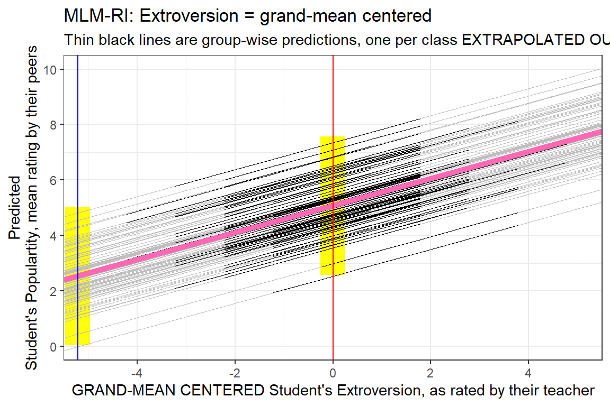
7.3.4 Comapre the Standardized Version
data_pop %>%
dplyr::mutate(pred = predict(pop_lmer_1_std)) %>%
ggplot() +
aes(x = extravZ,
y = pred,
group = class) +
geom_rect(aes(xmin = 0 - 0.25,
xmax = 0 + 0.25,
ymin = fixef(pop_lmer_1_cen)[["(Intercept)"]]- 2.5,
ymax = fixef(pop_lmer_1_cen)[["(Intercept)"]]+ 2.5),
fill = "yellow",
alpha = 0.05) +
geom_abline(data = coef(pop_lmer_1_std)$class %>% dplyr::rename(Intercept = "(Intercept)"),
aes(intercept = Intercept,
slope = extravZ),
color = "gray",
size = .1) +
geom_line(size = .2) +
geom_abline(intercept = fixef(pop_lmer_1_std)[["(Intercept)"]],
slope = fixef(pop_lmer_1_std)[["extravZ"]],
color = "hot pink",
size = 2) +
theme_bw() +
geom_vline(xintercept = 0,
color = "red") +
geom_vline(xintercept = -5.215,
color = "blue") +
labs(title = "MLM-RI: Extroversion = standardized",
subtitle = "Thin black lines are group-wise predictions, one per class EXTRAPOLATED OUT",
x = "STANDARDIZED Student's Extroversion, as rated by their teacher",
y = "Predicted\nStudent's Populartity, mean rating by their peers") +
coord_cartesian(xlim = c(-5, 5),
ylim = c(0, 10)) +
scale_x_continuous(breaks = seq(from = -4, to = 4, by = 2)) +
scale_y_continuous(breaks = seq(from = 0, to = 10, by = 2))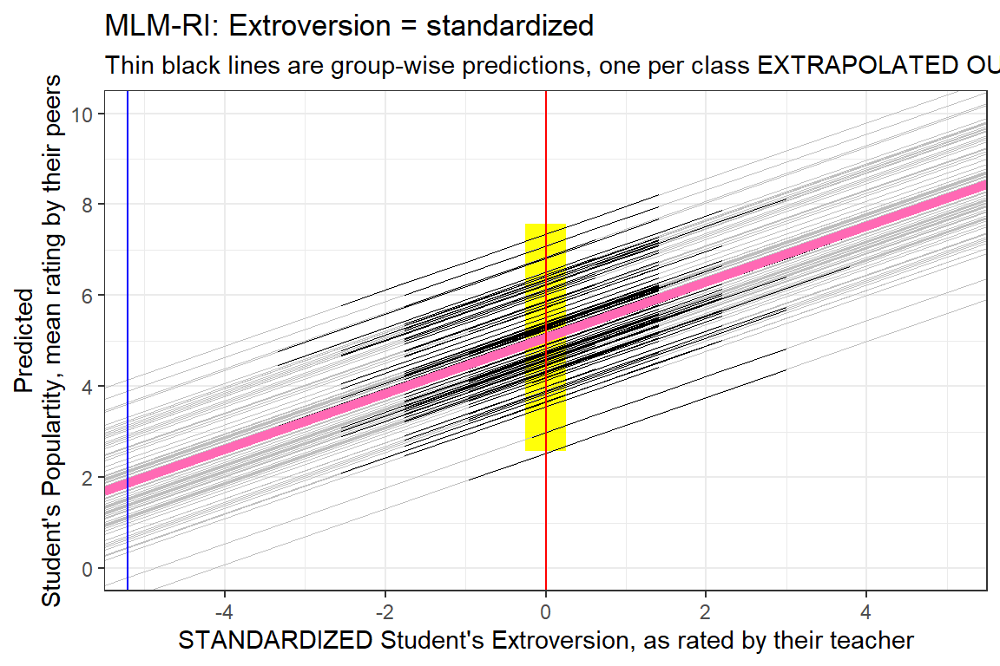
7.4 RIAS = Random Intercepts AND Slopes
7.4.1 Fit MLM with all 3 versions of the predictor
pop_lmer_2_raw <- lme4::lmer(popular ~ extrav + (extrav|class),
data = data_pop,
REML = FALSE)
pop_lmer_2_cen <- lme4::lmer(popular ~ extravG + (extravG|class),
data = data_pop,
REML = FALSE)
pop_lmer_2_std <- lme4::lmer(popular ~ extravZ + (extravZ|class),
data = data_pop,
REML = FALSE)texreg::knitreg(list(pop_lmer_2_raw,
pop_lmer_2_cen,
pop_lmer_2_std),
custom.model.names = c("Raw",
"Centered",
"Standardized"),
caption = "MLM - RIAS: Effect of Grand-Mean Centering and Standardizing",
caption.above = TRUE,
single.row = TRUE)| Raw | Centered | Standardized | |
|---|---|---|---|
| (Intercept) | 2.46 (0.20)*** | 5.03 (0.10)*** | 5.03 (0.10)*** |
| extrav | 0.49 (0.03)*** | ||
| extravG | 0.49 (0.03)*** | ||
| extravZ | 0.62 (0.03)*** | ||
| AIC | 5782.69 | 5782.69 | 5782.69 |
| BIC | 5816.29 | 5816.29 | 5816.29 |
| Log Likelihood | -2885.34 | -2885.34 | -2885.34 |
| Num. obs. | 2000 | 2000 | 2000 |
| Num. groups: class | 100 | 100 | 100 |
| Var: class (Intercept) | 2.95 | 0.88 | 0.88 |
| Var: class extrav | 0.03 | ||
| Cov: class (Intercept) extrav | -0.26 | ||
| Var: Residual | 0.90 | 0.90 | 0.90 |
| Var: class extravG | 0.03 | ||
| Cov: class (Intercept) extravG | -0.13 | ||
| Var: class extravZ | 0.04 | ||
| Cov: class (Intercept) extravZ | -0.17 | ||
| p < 0.001; p < 0.01; p < 0.05 | |||
** MLM - Random Intercepts AND Slopes**
- Grand-Mean Centering a Predictor
-
Different than when using the Raw Predictor:
- fixed intercept
- random estimates, i.e. variance and covariance components, includin the residual variance
-
Same as when using the Raw Predictor:
-
fixed estimates or slopes for all predictors (main effects and interactions)
- model fit statistics, including AIC, BIC, and the Log Loikelihood (-2LL or deviance)
-
fixed estimates or slopes for all predictors (main effects and interactions)
- Standardize a Predictor
-
Different than when using the Raw Predictor:
-
fixed intercept (same as if using the grand-mean centered predictor)
- fixed estimate (slope) for that variable
- random estimates, i.e. variance and covariance components, includin the residual variance
-
fixed intercept (same as if using the grand-mean centered predictor)
-
Stays the SAME:
- model fit statistics, including AIC, BIC, and the Log Loikelihood (-2LL or deviance)
7.4.2 Investigating a MLM-RI Model
7.4.2.1 Fixed Effects: intercept and slope
There is only ONE fixed intercept and ONE fixed slope.
The fixef() function extracts the estimates of the fixed effects.
(Intercept) extrav
2.4613520 0.4929015 [1] 2.461352[1] 0.4929015data_pop %>%
ggplot() +
aes(x = extrav,
y = popular,
group = class) +
geom_smooth(method = "lm",
se = FALSE,
color = "black",
size = .2) +
geom_abline(intercept = fixef(pop_lmer_2_raw)[["(Intercept)"]],
slope = fixef(pop_lmer_2_raw)[["extrav"]],
color = "hot pink",
size = 2) +
theme_bw() +
geom_vline(xintercept = 0,
color = "red") +
geom_vline(xintercept = 5.215,
color = "blue") +
labs(title = "MLM-RIAS: Extroversion = raw score",
subtitle = "Thin black lines are OLS regression ran independently on each class",
x = "Student's Extroversion, as rated by their teacher",
y = "Student's Populartity, mean rating by their peers") +
coord_cartesian(xlim = c(0, 10),
ylim = c(0, 10)) +
scale_x_continuous(breaks = seq(from = 0, to = 10, by = 2)) +
scale_y_continuous(breaks = seq(from = 0, to = 10, by = 2))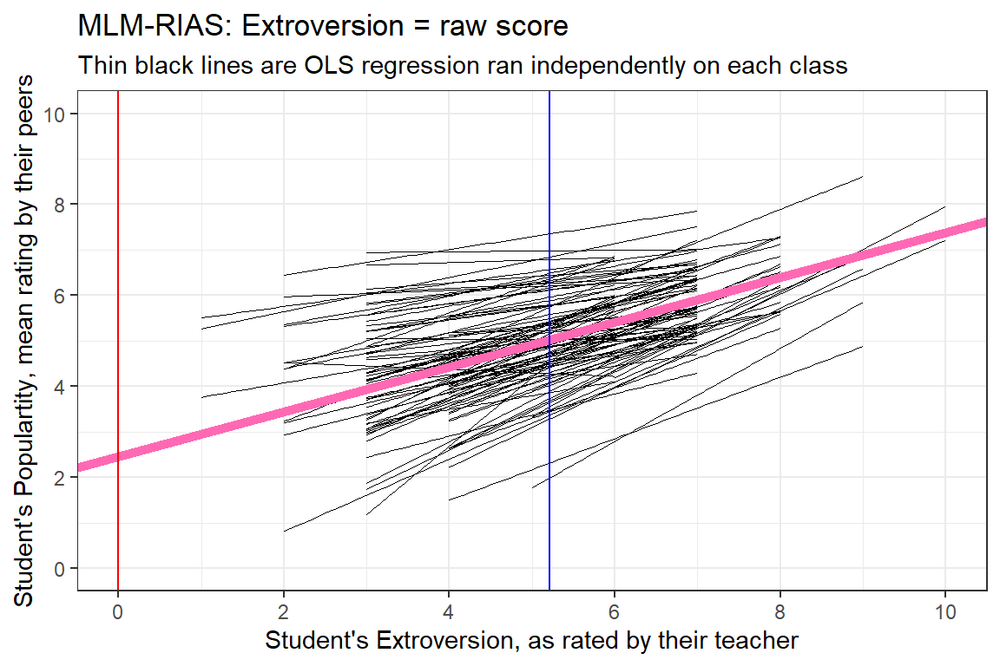
7.4.2.2 Random Effects: intercepts
There is a different random intercept AND random slope for EACH CLASS. These tell how far each class’s average is off of the grand average AND how far each class’s slope is off of the grand average sope.
The ranef() function extracts the random effects from a fitted model object
List of 1
$ class:'data.frame': 100 obs. of 2 variables:
..$ (Intercept): num [1:100] 0.341 -1.18 -0.627 1.079 -0.191 ...
..$ extrav : num [1:100] -0.0272 0.0974 0.0565 -0.0988 0.0208 ...
..- attr(*, "postVar")= num [1:2, 1:2, 1:100] 0.21332 -0.02975 -0.02975 0.00499 0.20574 ...
- attr(*, "class")= chr "ranef.mer" (Intercept) extrav
1 0.3412826 -0.02721226
2 -1.1800459 0.09737587
3 -0.6269008 0.05654230
4 1.0791254 -0.09877051
5 -0.1910515 0.02083157
6 -0.9833398 0.08370183ranef(pop_lmer_2_raw)$class %>%
dplyr::rename(Random_Intercepts = "(Intercept)") %>%
ggplot(aes(Random_Intercepts)) +
geom_histogram()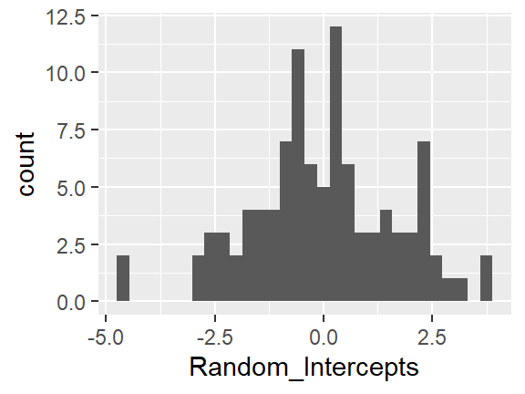
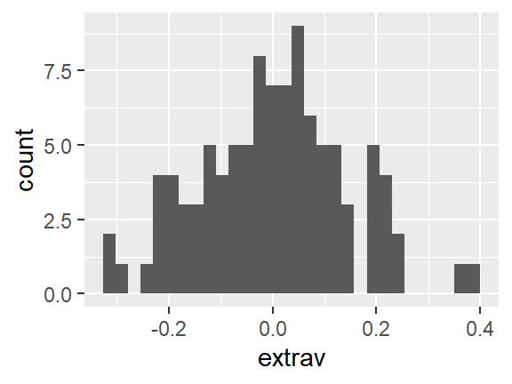
7.4.2.3 Predictions
Named num [1:2000] 5.13 6.06 4.67 4.2 5.13 ...
- attr(*, "names")= chr [1:2000] "1" "2" "3" "4" ... 1 2 3 4 5 6
5.131081 6.062459 4.665391 4.199702 5.131081 4.665391 data_pop %>%
dplyr::mutate(pred = predict(pop_lmer_2_raw)) %>%
ggplot(aes(x = extrav,
y = pred,
group = class)) +
geom_line(size = .2) +
geom_abline(intercept = fixef(pop_lmer_2_raw)[["(Intercept)"]],
slope = fixef(pop_lmer_2_raw)[["extrav"]],
color = "hot pink",
size = 2) +
theme_bw() +
geom_vline(xintercept = 0,
color = "red") +
geom_vline(xintercept = 5.215,
color = "blue") +
labs(title = "MLM-RIAS: Extroversion = raw score",
subtitle = "Thin black lines are group-wise predictions, one per class",
x = "Student's Extroversion, as rated by their teacher",
y = "Predicted\nStudent's Populartity, mean rating by their peers") +
coord_cartesian(xlim = c(0, 10),
ylim = c(0, 10)) +
scale_x_continuous(breaks = seq(from = 0, to = 10, by = 2)) +
scale_y_continuous(breaks = seq(from = 0, to = 10, by = 2))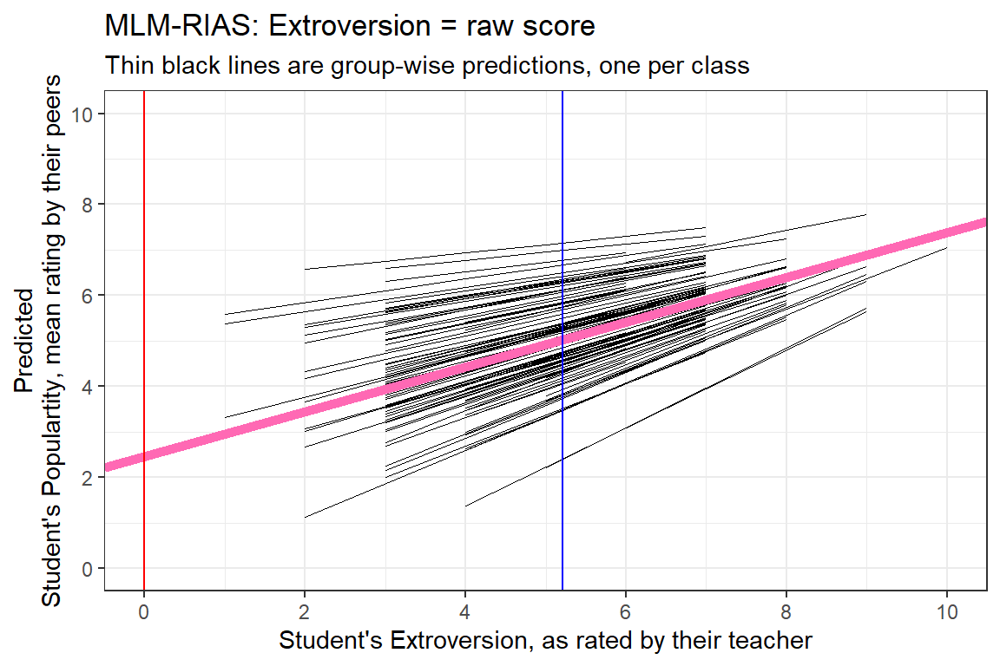
7.4.2.4 Combined Effects
The coef() function computes the sum of the random and fixed effects coefficients for each explanatory variable for each level of each grouping factor.
List of 1
$ class:'data.frame': 100 obs. of 2 variables:
..$ (Intercept): num [1:100] 2.71 1.79 2.18 3.08 2.44 ...
..$ extrav : num [1:100] 0.486 0.486 0.486 0.486 0.486 ...
- attr(*, "class")= chr "coef.mer" (Intercept) extrav
1 2.707702 0.4862002
2 1.789073 0.4862002
3 2.178056 0.4862002
4 3.083195 0.4862002
5 2.443266 0.4862002
6 1.937824 0.4862002data_pop %>%
dplyr::mutate(pred = predict(pop_lmer_2_raw)) %>%
ggplot() +
aes(x = extrav,
y = pred,
group = class) +
geom_rect(aes(xmin = 0 - 0.25,
xmax = 0 + 0.25,
ymin = fixef(pop_lmer_2_raw)[["(Intercept)"]]- 4.5,
ymax = fixef(pop_lmer_2_raw)[["(Intercept)"]]+ 4.5),
fill = "yellow",
alpha = 0.05) +
geom_abline(data = coef(pop_lmer_2_raw)$class %>% dplyr::rename(Intercept = "(Intercept)"),
aes(intercept = Intercept,
slope = extrav),
color = "gray",
size = .1) +
geom_line(size = .2) +
geom_abline(intercept = fixef(pop_lmer_2_raw)[["(Intercept)"]],
slope = fixef(pop_lmer_2_raw)[["extrav"]],
color = "hot pink",
size = 2) +
theme_bw() +
geom_vline(xintercept = 0,
color = "red") +
geom_vline(xintercept = 5.215,
color = "blue") +
labs(title = "MLM-RIAS: Extroversion = raw score",
subtitle = "Thin black lines are group-wise predictions, one per class EXTRAPOLATED OUT",
x = "Student's Extroversion, as rated by their teacher",
y = "Predicted\nStudent's Populartity, mean rating by their peers") +
coord_cartesian(xlim = c(0, 10),
ylim = c(0, 10)) +
scale_x_continuous(breaks = seq(from = 0, to = 10, by = 2)) +
scale_y_continuous(breaks = seq(from = 0, to = 10, by = 2)) 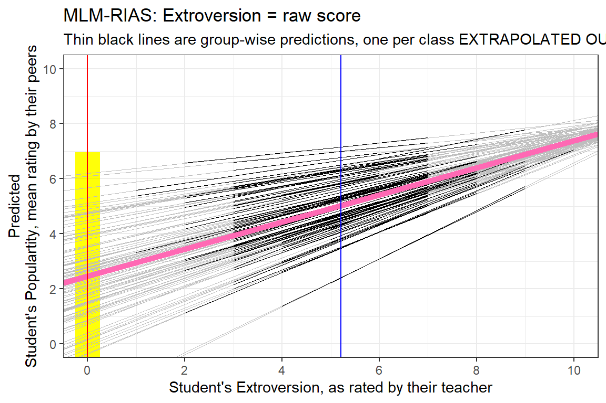
7.4.3 Comapre the Centered Version
data_pop %>%
dplyr::mutate(pred = predict(pop_lmer_2_cen)) %>%
ggplot() +
aes(x = extravG,
y = pred,
group = class) +
geom_rect(aes(xmin = -5.215 - 0.25,
xmax = -5.215 + 0.25,
ymin = fixef(pop_lmer_2_raw)[["(Intercept)"]]- 4.5,
ymax = fixef(pop_lmer_2_raw)[["(Intercept)"]]+ 4.5),
fill = "yellow",
alpha = 0.05) +
geom_rect(aes(xmin = 0 - 0.25,
xmax = 0 + 0.25,
ymin = fixef(pop_lmer_2_cen)[["(Intercept)"]]- 2.5,
ymax = fixef(pop_lmer_2_cen)[["(Intercept)"]]+ 2.5),
fill = "yellow",
alpha = 0.05) +
geom_abline(data = coef(pop_lmer_2_cen)$class %>% dplyr::rename(Intercept = "(Intercept)"),
aes(intercept = Intercept,
slope = extravG),
color = "gray",
size = .1) +
geom_line(size = .2) +
geom_abline(intercept = fixef(pop_lmer_2_cen)[["(Intercept)"]],
slope = fixef(pop_lmer_2_cen)[["extravG"]],
color = "hot pink",
size = 2) +
theme_bw() +
geom_vline(xintercept = -5.215,
color = "blue") +
geom_vline(xintercept = 0,
color = "red") +
labs(title = "MLM-RIAS: Extroversion = grand-mean centered",
subtitle = "Thin black lines are group-wise predictions, one per class EXTRAPOLATED OUT",
x = "GRAND-MEAN CENTERED Student's Extroversion, as rated by their teacher",
y = "Predicted\nStudent's Populartity, mean rating by their peers") +
coord_cartesian(xlim = c(-5, 5),
ylim = c(0, 10)) +
scale_x_continuous(breaks = seq(from = -4, to = 4, by = 2)) +
scale_y_continuous(breaks = seq(from = 0, to = 10, by = 2))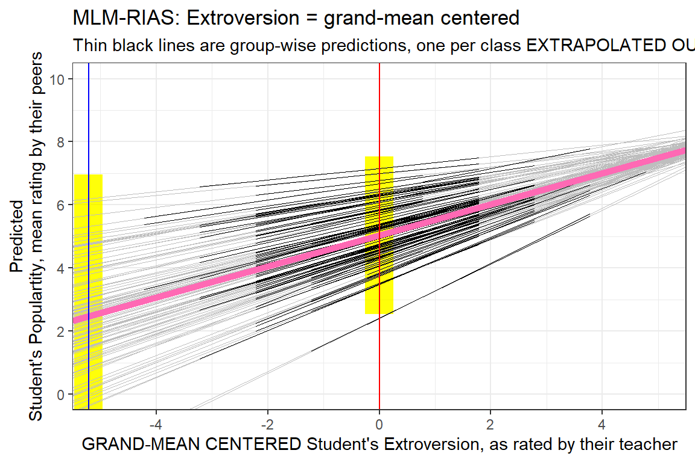
7.4.4 Comapre the Standardized Version
data_pop %>%
dplyr::mutate(pred = predict(pop_lmer_2_std)) %>%
ggplot() +
aes(x = extravZ,
y = pred,
group = class) +
geom_rect(aes(xmin = 0 - 0.25,
xmax = 0 + 0.25,
ymin = fixef(pop_lmer_2_cen)[["(Intercept)"]]- 2.5,
ymax = fixef(pop_lmer_2_cen)[["(Intercept)"]]+ 2.5),
fill = "yellow",
alpha = 0.05) +
geom_abline(data = coef(pop_lmer_2_std)$class %>% dplyr::rename(Intercept = "(Intercept)"),
aes(intercept = Intercept,
slope = extravZ),
color = "gray",
size = .1) +
geom_line(size = .2) +
geom_abline(intercept = fixef(pop_lmer_2_std)[["(Intercept)"]],
slope = fixef(pop_lmer_2_std)[["extravZ"]],
color = "hot pink",
size = 2) +
theme_bw() +
geom_vline(xintercept = 0,
color = "red") +
geom_vline(xintercept = -5.215,
color = "blue") +
labs(title = "MLM-RIAS: Extroversion = standardized",
subtitle = "Thin black lines are group-wise predictions, one per class EXTRAPOLATED OUT",
x = "STANDARDIZED Student's Extroversion, as rated by their teacher",
y = "Predicted\nStudent's Populartity, mean rating by their peers") +
coord_cartesian(xlim = c(-5, 5),
ylim = c(0, 10)) +
scale_x_continuous(breaks = seq(from = -4, to = 4, by = 2)) +
scale_y_continuous(breaks = seq(from = 0, to = 10, by = 2))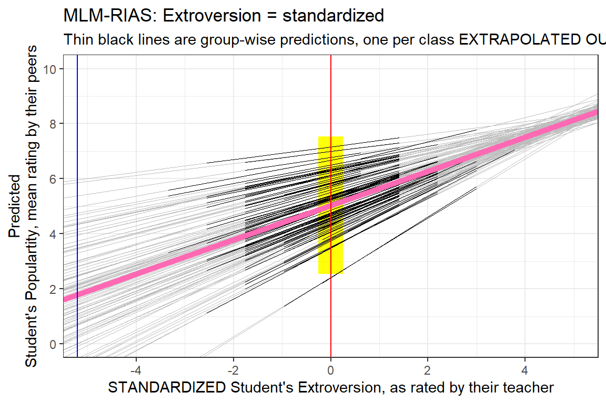
8 Effect Size: Variance Explained
Note that these versions of \(R^2\) are becoming more common, but are not entirely agreed upon or standard. You will not be able to calculate them directly in standard software. Instead, you need to calculate the components and program the calculation. Importantly, if you choose to report one or both of them, you should not only identify which one you are using, but provide some brief interpretation and a citation of the article.
The Analysis Factor, R-Squared for Mixed Effects Models, by Kim Love
Marginal vs. Conditional \(R^2\):
A general and simple method for obtaining R2 from generalized linear mixed‐effects models
Authors: Shinichi Nakagawa and Holger Schielzeth
Somewhat technical, but good figures:
Quantifying Explained Variance in Multilevel Models: An Integrative Framework for Defining R-Squared Measures
Authors: Jason D. Rights and Sonya K. Sterba, Vanderbilt University
8.1 MLM or LMM
Multilevel Model or Linear Multilevel Models
Social and Behavioral Science Focus:
R-squared measures in Multilevel Modeling: The undesirable property of negative R-squared values
Student: Edoardo Costantini Supervisor: prof. dr. M.A.L.M. van Assen
Education Focus:
Effect size measures for multilevel models: definition, interpretation, and TIMSS example
Author: Julie Lorah
Psychology Focus:
Effect Size Measures for Multilevel Models in Clinical Child and Adolescent Research: New R-Squared Methods and Recommendations
Authors: Jason D. Rights and David A. Cole
8.2 GLMM
Generalized Linear Multilevel Models
Ecology Focus: for MLM/LMM and GLMM
R squared for mixed models
R squared for mixed models – the easy way
Nakagawa and Schielzeth (2013)
I am answering by pasting Douglas Bates’s reply in the R-Sig-ME mailing list, on 17 Dec 2014 on the question of how to calculate an \(R^2\) statistic for generalized linear mixed models, which I believe is required reading for anyone interested in such a thing. Bates is the original author of the lme4 package for \(R\) and co-author of nlme, as well as co-author of a well-known book on mixed models, and CV will benefit from having the text in an answer, rather than just a link to it.
I must admit to getting a little twitchy when people speak of the “\(R^2\) for GLMMs”. \(R^2\) for a linear model is well-defined and has many desirable properties. For other models one can define different quantities that reflect some but not all of these properties. But this is not calculating an \(R^2\) in the sense of obtaining a number having all the properties that the \(R^2\) for linear models does. Usually there are several different ways that such a quantity could be defined. Especially for GLMs and GLMMs before you can define “proportion of response variance explained” you first need to define what you mean by “response variance”. The whole point of GLMs and GLMMs is that a simple sum of squares of deviations does not meaningfully reflect the variability in the response because the variance of an individual response depends on its mean.
Confusion about what constitutes \(R^2\) or degrees of freedom of any of the other quantities associated with linear models as applied to other models comes from confusing the formula with the concept. Although formulas are derived from models the derivation often involves quite sophisticated mathematics. To avoid a potentially confusing derivation and just “cut to the chase” it is easier to present the formulas. But the formula is not the concept. Generalizing a formula is not equivalent to generalizing the concept. And those formulas are almost never used in practice, especially for generalized linear models, analysis of variance and random effects. I have a “meta-theorem” that the only quantity actually calculated according to the formulas given in introductory texts is the sample mean.
It may seem that I am being a grumpy old man about this, and perhaps I am, but the danger is that people expect an “\(R^2\)-like” quantity to have all the properties of an \(R^2\) for linear models. It can’t. There is no way to generalize all the properties to a much more complicated model like a GLMM.
I was once on the committee reviewing a thesis proposal for Ph.D. candidacy. The proposal was to examine I think 9 different formulas that could be considered ways of computing an \(R^2\) for a nonlinear regression model to decide which one was “best”. Of course, this would be done through a simulation study with only a couple of different models and only a few different sets of parameter values for each. My suggestion that this was an entirely meaningless exercise was not greeted warmly.
9 sjPlot Package
Daniel Lüdecke is German researcher that has put together several GREAT packages, including sjPlot which we will detail here. Documentation can be found at: http://www.strengejacke.de/sjPlot/index.html
library(tidyverse) # all things tidy
library(texreg) # Convert Regression Output to LaTeX or HTML Tables
library(lme4) # Linear, generalized linear, & nonlinear mixed modelsts models
library(haven) # read in SPSS dataset
library(sjPlot) # Quick predicitive and diagnostic plots Read the SPSS data in with the haven package and prepare it (see previous chapter).
data_raw <- haven::read_sav("http://www.mlminr.com/data-sets/Achieve.sav?attredirects=0")
data_achieve_center_scale <- data_raw %>%
dplyr::mutate_at(vars(id, region, corp, school, class), factor) %>%
dplyr::mutate(gender = gender %>%
factor(labels = c("Female", "Male"))) %>%
dplyr::mutate(classize = classize %>%
factor(labels = c("12-17", "18-21",
"22-26", ">26"))) %>%
dplyr::select(id, region, corp, school, class, # Identifiers
gender, age, geread, gevocab, # Pupil-level vars
classize, # Class-Level vars
senroll, ses) %>% # School-level vars
dplyr::mutate(gevocab_c = gevocab - 4.4938) %>%
dplyr::mutate(age_c = age - 107.5290) %>%
dplyr::mutate(senroll_c = senroll - 533.4148) %>%
dplyr::mutate(senroll_ch = senroll_c / 100) %>% # centered AND divided by one hundred
dplyr::mutate(ses_t = ses / 10) # JUST divide by tenFit the final model (see previous chapter)
fit_read_11re_s <- lme4::lmer(geread ~ gevocab_c*age_c + gevocab_c*ses_t + # 2 2-way interactions
(gevocab_c | school),
data = data_achieve_center_scale,
REML = TRUE)# Knit to Website: texreg::htmlreg()
# Knit to PDF: texreg::texreg()
# View on Screen: texreg::screenreg()
texreg::htmlreg(list(fit_read_11re_s),
custom.model.names = c("Final"),
caption = "MLM: Final Model",
caption.above = TRUE,
single.row = TRUE)| Final | |
|---|---|
| (Intercept) | 3.94 (0.11)*** |
| gevocab_c | 0.67 (0.05)*** |
| age_c | -0.00 (0.00) |
| ses_t | 0.06 (0.01)*** |
| gevocab_c:age_c | 0.01 (0.00)** |
| gevocab_c:ses_t | -0.02 (0.01)** |
| AIC | 42976.51 |
| BIC | 43048.93 |
| Log Likelihood | -21478.26 |
| Num. obs. | 10320 |
| Num. groups: school | 160 |
| Var: school (Intercept) | 0.08 |
| Var: school gevocab_c | 0.02 |
| Cov: school (Intercept) gevocab_c | 0.03 |
| Var: Residual | 3.66 |
| p < 0.001; p < 0.01; p < 0.05 | |
Now we will show some of the things the sjPlot package can do!
9.1 Plotting Coefficients
Select terms that should be plotted. All other term are removed from the output.
Note that the term names must match the names of the model’s coefficients. For factors, this means that the variable name is suffixed with the related factor level, and each category counts as one term. E.g. rm.terms = "t_name [2,3]" would remove the terms t_name2 and t_name3 (assuming that the variable t_name is categorical and has at least the factor levels 2 and 3).
Another example for the iris-dataset: terms = "Species" would not work, instead you would write terms = "Species [versicolor, virginica]" to remove these two levels, or terms = "Speciesversicolor" if you just want to remove the level versicolor from the plot.
9.1.1 Fixed Effects
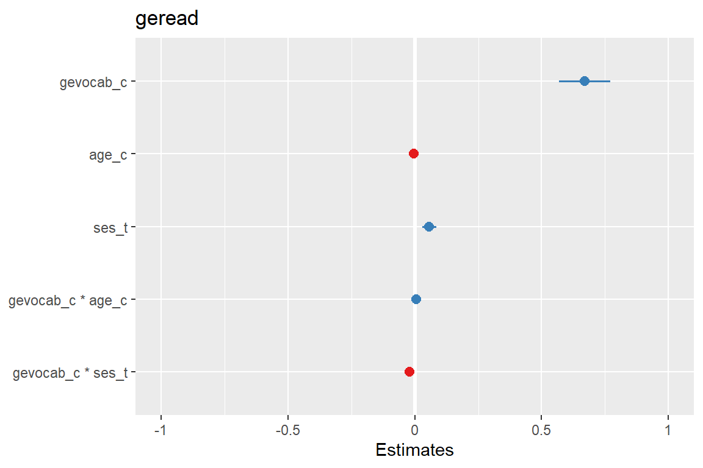
sjPlot::plot_model(fit_read_11re_s,
type = "est",
show.values = TRUE) # Logical, whether values should be plotted or not.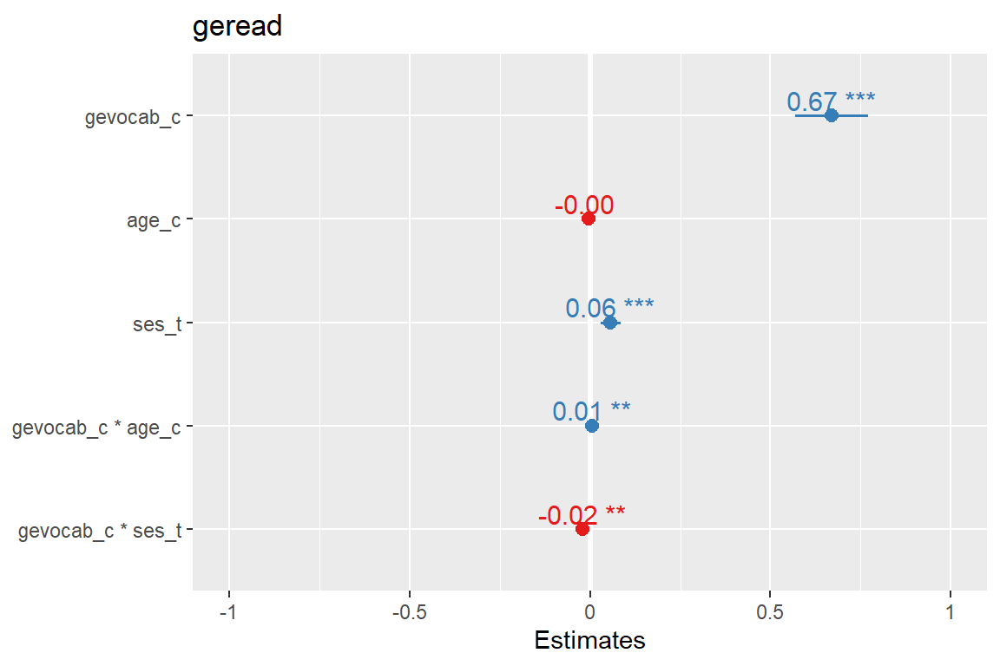
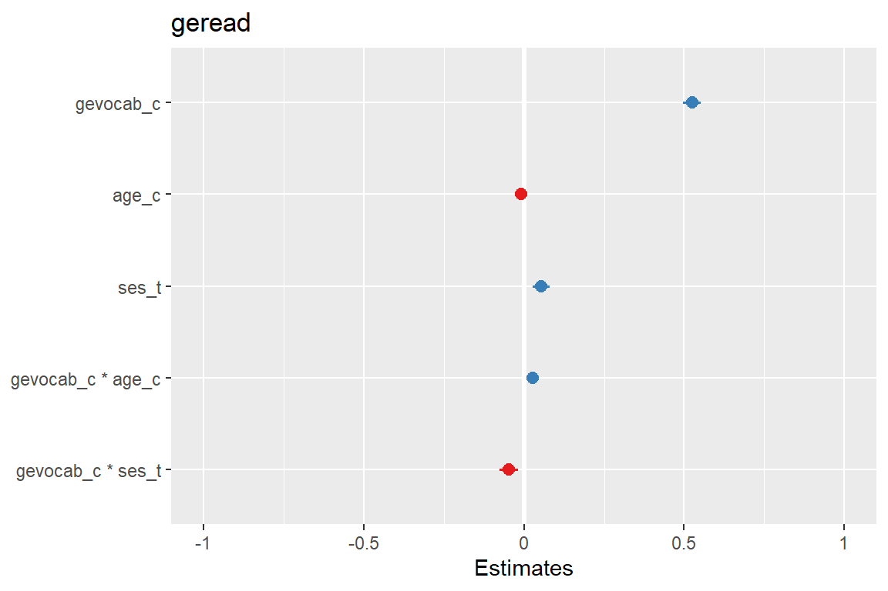
Determines in which way estimates are sorted in the plot with the option: sort.est =
- If
NULL(default), no sorting is done and estimates are sorted in the same order as they appear in the model formula.
- If
TRUE, estimates are sorted in descending order, with highest estimate at the top.
- If
sort.est = "sort.all", estimates are re-sorted for each coefficient (only applies iftype = "re"andgrid = FALSE), i.e. the estimates of the random effects for each predictor are sorted and plotted to an own plot.
- If
type = "re", specify a predictor’s / coefficient’s name to sort estimates according to this random effect.
sjPlot::plot_model(fit_read_11re_s,
type = "std",
sort.est = TRUE,
show.values = TRUE) # Logical, whether values should be plotted or not.Plots standardized beta values, however, standardization follows Gelman (2008) suggestion, rescaling the estimates by dividing them by two standard deviations instead of just one. Resulting coefficients are then directly comparable for untransformed binary predictors.

9.2 Plotting Marginal Effects
Here terms indicates for which terms marginal effects should be displayed. At least one term is required to calculate effects, maximum length is three terms, where the second and third term indicate the groups, i.e. predictions of first term are grouped by the levels of the second (and third) term.
terms may also indicate higher order terms (e.g. interaction terms).
Indicating levels in square brackets allows for selecting only specific groups. Term name and levels in brackets must be separated by a whitespace character, e.g. terms = c("age", "education [1,3]").
It is also possible to specify a range of numeric values for the predictions with a colon, for instance terms = c("education [1,3]", "age [30:50]").
Furthermore, it is possible to specify a function name. Values for predictions will then be transformed, e.g. terms = "income [exp]". This is useful when model predictors were transformed for fitting the model and should be back-transformed to the original scale for predictions.
Finally, using pretty for numeric variables (e.g. terms = "age [pretty]") calculates a pretty range of values for the term, roughly of proportional length to the term’s value range. For more details, see the documentation for the ggpredict package.
9.2.1 Predicted Values
Based on (i.e. is a wrapper for): ggeffects::ggpredict()
The pred.type = option only applies for Marginal Effects plots with mixed effects models. Indicates whether predicted values should be conditioned on random effects (pred.type = "re") or fixed effects only (pred.type = "fe", the default). For details, see documentation of the type-argument in ggpredict() function.
9.2.2 Effect Plots
Based on (i.e. is a wrapper for): ggeffects::ggeffect()
Similar to type = "pred", however, discrete predictors are held constant at their proportions (not reference level). See the ggeffect package documentation for details.
9.2.3 Interaction Plots
A shortcut for marginal effects plots, where interaction terms are automatically detected and used as terms-argument.
Furthermore, if the moderator variable (the second - and third - term in an interaction) is continuous, type = "int" automatically chooses useful values based on the mdrt.values-argument, which are passed to terms. Then, ggpredict is called.
type = "int" plots the interaction term that appears:
- first in the formula along the x-axis, while the
- second (and possibly third) variable in an interaction is used as grouping factor(s) (moderating variable).
Use type = "pred" or type = "eff" and specify a certain order in the terms-argument to indicate which variable(s) should be used as moderator.
[[1]]
[[2]]
The mdrt.values = option indicates which values of the moderator variable should be used when plotting interaction terms (i.e. type = "int").
minmax(default) minimum and maximum values (lower and upper bounds) of the moderator are used to plot the interaction between independent variable and moderator(s).meansduses the mean value of the moderator as well as one standard deviation below and above mean value to plot the effect of the moderator on the independent variable (following the convention suggested by Cohen and Cohen and popularized by Aiken and West (1991), i.e. using the mean, the value one standard deviation above, and the value one standard deviation below the mean as values of the moderator, see Grace-Martin K: 3 Tips to Make Interpreting Moderation Effects Easier).zeromaxis similar to theminmaxoption, however, \(0\) is always used as minimum value for the moderator. This may be useful for predictors that don’t have an empirical zero-value, but absence of moderation should be simulated by using \(0\) as minimum.quartcalculates and uses the quartiles (lower, median and upper) of the moderator value.alluses all values of the moderator variable.
[[1]]
[[2]]9.3 Model Diagnostics
Note: For mixed models, the diagnostic plots like linear relationship or check for Homoscedasticity, do not take the uncertainty of random effects into account, but is only based on the fixed effects part of the model.
9.3.1 Slope of Coefficentes
Slope of coefficients for each single predictor, against the response (linear relationship between each model term and response).
9.3.2 Residuals
Slope of coefficients for each single predictor, against the residuals (linear relationship between each model term and residuals).


10 MLM, Longitudinal: Autism
library(tidyverse) # all things tidy
library(pander) # nice looking general tabulations
library(furniture) # nice table1() descriptive
library(texreg) # Convert Regression Output to LaTeX or HTML Tables
library(psych) # contains some useful functions, like headTail
library(performance)
library(sjstats) # ICC calculations
library(sjPlot) # Quick predictive and diagnostic plots
library(effects) # Estimated Marginal Means
library(VIM) # Visualization and Imputation of Missing Values
library(naniar) # Summaries and Visualizations for Missing Data
library(lme4) # Linear, generalized linear, & nonlinear mixed models
library(optimx)
library(interactions)
library(ggResidpanel)
library(HLMdiag) # package with the dataset10.1 Background
The source: http://www-personal.umich.edu/~kwelch/
This data was collected by researchers at the University of Michigan (Anderson et al. 2007, [@anderson2009]) as part of a prospective longitudinal study of 214 children. The children were divided into three diagnostic groups (bestest2) when they were 2 years old: Autism (autism), Pervasive Developmental Disorder (pdd), and non-spectrum children (none in this sample). The study was designed to collect information on each child at approximately 2, 3, 5, 9, and 13 years of age, although not all children were measured for each age. One of the study objectives was to assess the relative influence of the initial diagnostic category, language proficiency at age 2, and other covariates on the developmental trajectories of the socialization (vsae) of these children.
Study participants were children who had had consecutive referrals to one of two autism clinics before the age of 3 years. Social development was assessed at each age using the Vineland Adaptive Behavior Interview survey form, a parent-reported measure of socialization. VSAE (Vineland Socialization Age Equivalent), was a combined score that included assessments of interpersonal relationships, play/leisure time activities, and coping skills. Initial language development was assessed using the Sequenced Inventory of Communication Development (SICD) scale; children were placed into one of three groups (sicdegp) based on their initial SICD scores on the expressive language subscale at age 2.
childidChild’s identification number for this studysicdegpSequenced Inventory of Communication Development group (an assessment of expressive language development) - a factor. Levels arelow,med, andhighage2Age (in years) centered around age 2 (age at diagnosis)vsaeVineland Socialization Age Equivalent, Parent-reported measure of socialization, including measures of:- interpersonal relationships
- play/leisure time activities
- coping skills
genderChild’s gender - a factor. Levels aremaleandfemaleraceChild’s race - a factor. Levels arewhiteandnonwhitebestest2Diagnosis at age 2 - a factor. Levels areautismandpdd(pervasive developmental disorder)
Rows: 604
Columns: 7
$ childid <int> 1, 1, 1, 1, 1, 10, 10, 10, 10, 100, 100, 100, 100, 101, 10...
$ sicdegp <fct> high, high, high, high, high, low, low, low, low, high, hi...
$ age2 <dbl> 0, 1, 3, 7, 11, 0, 1, 7, 11, 0, 1, 3, 7, 0, 1, 7, 11, 0, 1...
$ vsae <int> 6, 7, 18, 25, 27, 9, 11, 18, 39, 15, 24, 37, 135, 8, 24, 7...
$ gender <fct> male, male, male, male, male, male, male, male, male, male...
$ race <fct> white, white, white, white, white, white, white, white, wh...
$ bestest2 <fct> pdd, pdd, pdd, pdd, pdd, autism, autism, autism, autism, p...10.1.1 Long Format
data_long <- autism %>% # save the dataset as a new name
dplyr::mutate(childid = childid %>% factor) %>% # declare grouping var a factor
dplyr::mutate(age = 2 + age2) %>% # create the original age variable (unequally spaced)
dplyr::mutate(obs = age %>% factor %>% as.numeric) %>% # Observation Number = 1, 2, 3, 4, 5 (equally spaced)
dplyr::select(childid, # choose variables and order to keep
gender, race, bestest2, sicdegp,
obs, age, age2, vsae) %>%
dplyr::arrange(childid, age2) # sort observations childid gender race bestest2 sicdegp obs age age2 vsae
1 1 male white pdd high 1 2 0 6
2 1 male white pdd high 2 3 1 7
3 1 male white pdd high 3 5 3 18
4 1 male white pdd high 4 9 7 25
5 1 male white pdd high 5 13 11 27
6 2 male white autism low 1 2 0 6
7 2 male white autism low 2 3 1 7
8 2 male white autism low 3 5 3 7
9 2 male white autism low 4 9 7 8
10 2 male white autism low 5 13 11 14
11 3 male nonwhite pdd high 1 2 0 17
... <NA> <NA> <NA> <NA> <NA> ... ... ... ...
599 211 male nonwhite autism high 1 2 0 15
600 212 male white autism med 1 2 0 7
601 212 male white autism med 2 3 1 21
602 212 male white autism med 3 5 3 29
603 212 male white autism med 4 9 7 72
604 212 male white autism med 5 13 11 14710.1.2 Wide Format
data_wide <- data_long %>% # save the dataset as a new name
dplyr::select(-age2, -obs) %>% # delete (by deselecting) this variable
tidyr::pivot_wider(names_from = age, # repeated indicator
values_from = vsae, # variable repeated
names_prefix = "vsae_") %>% # prefix in from of the
dplyr::arrange(childid) # sort observations
tibble::glimpse(data_wide)Rows: 155
Columns: 10
$ childid <fct> 1, 2, 3, 4, 6, 8, 9, 10, 12, 13, 14, 15, 16, 17, 18, 19, 2...
$ gender <fct> male, male, male, male, male, male, male, male, male, male...
$ race <fct> white, white, nonwhite, nonwhite, white, nonwhite, white, ...
$ bestest2 <fct> pdd, autism, pdd, autism, autism, autism, pdd, autism, aut...
$ sicdegp <fct> high, low, high, high, low, low, med, low, med, low, med, ...
$ vsae_2 <int> 6, 6, 17, 12, 6, 9, 12, 9, 7, 6, 12, 13, 7, 5, 10, 17, 11,...
$ vsae_3 <int> 7, 7, 18, 14, 12, 12, 21, 11, 10, 10, 19, 8, 6, 10, 6, 27,...
$ vsae_5 <int> 18, 7, 12, 38, NA, 14, NA, NA, 8, 12, 14, 29, NA, 29, NA, ...
$ vsae_9 <int> 25, 8, 18, 114, 12, NA, 66, 18, NA, NA, 28, 24, 39, 32, NA...
$ vsae_13 <int> 27, 14, 24, NA, 45, NA, 68, 39, NA, NA, 68, 44, 24, 67, NA...Notice the missing values, displayed as NA.
childid gender race bestest2 sicdegp vsae_2 vsae_3 vsae_5 vsae_9 vsae_13
1 1 male white pdd high 6 7 18 25 27
2 2 male white autism low 6 7 7 8 14
3 3 male nonwhite pdd high 17 18 12 18 24
4 4 male nonwhite autism high 12 14 38 114 <NA>
5 <NA> <NA> <NA> <NA> <NA> ... ... ... ... ...
6 209 male white autism med 2 4 <NA> 12 32
7 210 male white autism low 4 25 <NA> 130 <NA>
8 211 male nonwhite autism high 15 <NA> <NA> <NA> <NA>
9 212 male white autism med 7 21 29 72 14710.2 Exploratory Data Analysis
10.2.1 Demographic Summary
10.2.1.1 Using the WIDE formatted dataset
Each person’s data is only stored on a single line
data_wide %>%
dplyr::group_by("Initial Language Development" = sicdegp) %>% # how split into columns
furniture::table1("Diagnosis" = bestest2,
"Gender" = gender,
"Race" = race,
digits = 2,
na.rm = FALSE,
total = TRUE,
test = TRUE, # compare the groups
output = "markdown") | Total | low | med | high | P-Value | |
|---|---|---|---|---|---|
| n = 155 | n = 49 | n = 65 | n = 41 | ||
| Diagnosis | 0.018 | ||||
| autism | 100 (64.5%) | 38 (77.6%) | 42 (64.6%) | 20 (48.8%) | |
| pdd | 55 (35.5%) | 11 (22.4%) | 23 (35.4%) | 21 (51.2%) | |
| NA | 0 (0%) | 0 (0%) | 0 (0%) | 0 (0%) | |
| Gender | 0.706 | ||||
| male | 134 (86.5%) | 44 (89.8%) | 55 (84.6%) | 35 (85.4%) | |
| female | 21 (13.5%) | 5 (10.2%) | 10 (15.4%) | 6 (14.6%) | |
| NA | 0 (0%) | 0 (0%) | 0 (0%) | 0 (0%) | |
| Race | 0.944 | ||||
| white | 101 (65.2%) | 31 (63.3%) | 43 (66.2%) | 27 (65.9%) | |
| nonwhite | 54 (34.8%) | 18 (36.7%) | 22 (33.8%) | 14 (34.1%) | |
| NA | 0 (0%) | 0 (0%) | 0 (0%) | 0 (0%) |
10.2.1.2 Using the LONG formatted dataset
Each person’s data is stored on multiple lines, one for each time point. To ensure the summary table is correct, you must choose a single time point per person.
# Note: One person is missing Age 2
data_long %>%
dplyr::filter(age == 2) %>% # restrict to one-line per person
dplyr::group_by("Initial Language Development" = sicdegp) %>% # how split into columns
furniture::table1("Diagnosis" = bestest2,
"Gender" = gender,
"Race" = race,
digits = 2,
na.rm = FALSE,
total = TRUE,
test = TRUE, # compare the groups
output = "markdown") | Total | low | med | high | P-Value | |
|---|---|---|---|---|---|
| n = 154 | n = 49 | n = 65 | n = 40 | ||
| Diagnosis | 0.025 | ||||
| autism | 100 (64.9%) | 38 (77.6%) | 42 (64.6%) | 20 (50%) | |
| pdd | 54 (35.1%) | 11 (22.4%) | 23 (35.4%) | 20 (50%) | |
| NA | 0 (0%) | 0 (0%) | 0 (0%) | 0 (0%) | |
| Gender | 0.714 | ||||
| male | 134 (87%) | 44 (89.8%) | 55 (84.6%) | 35 (87.5%) | |
| female | 20 (13%) | 5 (10.2%) | 10 (15.4%) | 5 (12.5%) | |
| NA | 0 (0%) | 0 (0%) | 0 (0%) | 0 (0%) | |
| Race | 0.95 | ||||
| white | 100 (64.9%) | 31 (63.3%) | 43 (66.2%) | 26 (65%) | |
| nonwhite | 54 (35.1%) | 18 (36.7%) | 22 (33.8%) | 14 (35%) | |
| NA | 0 (0%) | 0 (0%) | 0 (0%) | 0 (0%) |
10.2.2 Baseline Summary
10.2.2.1 Using the WIDE formatted dataset
Each person’s data is only stored on a single line
data_wide %>%
dplyr::group_by("Initial Language Development" = sicdegp) %>% # how split into columns
furniture::table1(vsae_2,
digits = 2,
na.rm = FALSE,
total = TRUE,
test = TRUE, # compare the groups
output = "markdown")| Total | low | med | high | P-Value | |
|---|---|---|---|---|---|
| n = 155 | n = 49 | n = 65 | n = 41 | ||
| vsae_2 | <.001 | ||||
| 9.16 (3.84) | 7.06 (2.73) | 8.74 (3.51) | 12.40 (3.43) |
10.2.2.2 Using the LONG formatted dataset
Each person’s data is stored on multiple lines, one for each time point. To ensure the summary table is correct, you must choose a single time point per person.
data_long %>%
dplyr::filter(age == 2) %>%
dplyr::group_by("Initial Language Development" = sicdegp) %>% # how split into columns
furniture::table1(vsae,
test = TRUE,
output = "markdown")| low | med | high | P-Value | |
|---|---|---|---|---|
| n = 49 | n = 65 | n = 40 | ||
| vsae | <.001 | |||
| 7.1 (2.7) | 8.7 (3.5) | 12.4 (3.4) |
10.2.3 Missing Data & Attrition
10.2.3.1 VIM package
Plot the amount of missing vlaues and the amount of each patter of missing values.
10.2.4 Means Across Time
10.2.4.1 Using the WIDE formatted dataset
Default = COMPLETE CASES ONLY!!!
Note - the sample size at each time point is the same, but subjects are only included if they have data at every time point (total n = 41)
data_wide %>%
dplyr::group_by("Initial Language Development" = sicdegp) %>% # how split into columns
dplyr::select(starts_with("vsae_")) %>%
furniture::table1(digits = 2,
total = TRUE,
test = TRUE, # compare the groups
output = "markdown")| Total | low | med | high | P-Value | |
|---|---|---|---|---|---|
| n = 41 | n = 10 | n = 17 | n = 14 | ||
| vsae_2 | 0.003 | ||||
| 9.80 (4.39) | 6.60 (2.88) | 9.47 (4.12) | 12.50 (4.09) | ||
| vsae_3 | <.001 | ||||
| 14.54 (6.89) | 8.00 (2.11) | 14.29 (6.08) | 19.50 (6.15) | ||
| vsae_5 | <.001 | ||||
| 23.00 (14.84) | 12.50 (5.54) | 20.18 (8.57) | 33.93 (18.50) | ||
| vsae_9 | <.001 | ||||
| 36.68 (26.29) | 12.30 (8.07) | 34.41 (22.54) | 56.86 (23.54) | ||
| vsae_13 | 0.009 | ||||
| 57.07 (47.83) | 22.40 (24.45) | 57.82 (50.33) | 80.93 (44.38) |
Specify All data:
note - that the smaple sizes will be different for each time point (total n = 155)
data_wide %>%
dplyr::group_by("Initial Language Development" = sicdegp) %>% # how split into columns
dplyr::select(starts_with("vsae_")) %>%
furniture::table1(digits = 2,
na.rm = FALSE,
total = TRUE,
test = TRUE, # compare the groups
output = "markdown")| Total | low | med | high | P-Value | |
|---|---|---|---|---|---|
| n = 155 | n = 49 | n = 65 | n = 41 | ||
| vsae_2 | <.001 | ||||
| 9.16 (3.84) | 7.06 (2.73) | 8.74 (3.51) | 12.40 (3.43) | ||
| vsae_3 | <.001 | ||||
| 15.12 (7.81) | 12.02 (6.33) | 13.68 (5.42) | 21.24 (9.38) | ||
| vsae_5 | <.001 | ||||
| 21.48 (13.32) | 15.03 (7.92) | 17.69 (8.00) | 33.92 (15.78) | ||
| vsae_9 | <.001 | ||||
| 39.55 (32.62) | 25.56 (28.42) | 32.12 (23.40) | 64.14 (34.59) | ||
| vsae_13 | <.001 | ||||
| 59.49 (47.96) | 37.11 (35.54) | 56.17 (47.91) | 88.69 (46.34) |
10.2.4.2 Using the LONG formatted dataset
Each person’s data is stored on multiple lines, one for each time point.
FOR ALL DATA!
data_sum_all <- data_long %>%
dplyr::group_by(sicdegp, age2) %>% # specify the groups
dplyr::summarise(vsae_n = n(), # count of valid scores
vsae_mean = mean(vsae), # mean score
vsae_sd = sd(vsae), # standard deviation of scores
vsae_sem = vsae_sd / sqrt(vsae_n)) # stadard error for the mean of scores
data_sum_all# A tibble: 15 x 6
# Groups: sicdegp [3]
sicdegp age2 vsae_n vsae_mean vsae_sd vsae_sem
<fct> <dbl> <int> <dbl> <dbl> <dbl>
1 low 0 49 7.06 2.73 0.389
2 low 1 46 12.0 6.33 0.934
3 low 3 29 15.0 7.92 1.47
4 low 7 36 25.6 28.4 4.74
5 low 11 28 37.1 35.5 6.72
6 med 0 65 8.74 3.51 0.436
7 med 1 62 13.7 5.42 0.688
8 med 3 36 17.7 8.00 1.33
9 med 7 48 32.1 23.4 3.38
10 med 11 40 56.2 47.9 7.58
11 high 0 40 12.4 3.43 0.542
12 high 1 38 21.2 9.38 1.52
13 high 3 26 33.9 15.8 3.09
14 high 7 35 64.1 34.6 5.85
15 high 11 26 88.7 46.3 9.09 FOR COMPLETE CASES ONLY!!!
data_sum_cc <- data_long %>%
dplyr::group_by(childid) %>% # group-by child
dplyr::mutate(child_vsae_n = n()) %>% # count the number of valid VSAE scores
dplyr::filter(child_vsae_n == 5) %>% # restrict to only thoes children with 5 valid scores
dplyr::group_by(sicdegp, age2) %>% # specify the groups
dplyr::summarise(vsae_n = n(), # count of valid scores
vsae_mean = mean(vsae), # mean score
vsae_sd = sd(vsae), # standard deviation of scores
vsae_sem = vsae_sd / sqrt(vsae_n)) # stadard error for the mean of scores
data_sum_cc# A tibble: 15 x 6
# Groups: sicdegp [3]
sicdegp age2 vsae_n vsae_mean vsae_sd vsae_sem
<fct> <dbl> <int> <dbl> <dbl> <dbl>
1 low 0 10 6.6 2.88 0.909
2 low 1 10 8 2.11 0.667
3 low 3 10 12.5 5.54 1.75
4 low 7 10 12.3 8.07 2.55
5 low 11 10 22.4 24.4 7.73
6 med 0 17 9.47 4.12 1.00
7 med 1 17 14.3 6.08 1.47
8 med 3 17 20.2 8.57 2.08
9 med 7 17 34.4 22.5 5.47
10 med 11 17 57.8 50.3 12.2
11 high 0 14 12.5 4.09 1.09
12 high 1 14 19.5 6.15 1.64
13 high 3 14 33.9 18.5 4.94
14 high 7 14 56.9 23.5 6.29
15 high 11 14 80.9 44.4 11.9 10.2.5 Person Profile Plots
Use the data in LONG format
10.2.5.1 Unequally Spaced
data_long %>%
dplyr::mutate(sicdegp = fct_recode(sicdegp,
"Low Communication" = "low",
"Medium Communication" = "med",
"High Communication" = "high")) %>%
ggplot(aes(x = age,
y = vsae)) +
geom_point(size = 0.75) +
geom_line(aes(group = childid),
alpha = .5,
size = 1) +
facet_grid(. ~ sicdegp) +
theme_bw() +
scale_x_continuous(breaks = c(2, 3, 5, 9, 13)) +
labs(x = "Age of Child, Years",
y = "Vineland Socialization Age Equivalent",
color = "Sequenced Inventory of Communication Development") +
geom_smooth(aes(color = "Flexible"),
method = "loess",
se = FALSE,) +
geom_smooth(aes(color = "Linear"),
method = "lm",
se = FALSE) +
scale_color_manual(name = "Smoother Type: ",
values = c("Flexible" = "blue",
"Linear" = "red")) +
theme(legend.position = "bottom",
legend.key.width = unit(2, "cm"))10.2.5.2 Equally Spaced
data_long %>%
dplyr::mutate(sicdegp = fct_recode(sicdegp,
"Low Communication" = "low",
"Medium Communication" = "med",
"High Communication" = "high")) %>%
ggplot(aes(x = obs,
y = vsae)) +
geom_point(size = 0.75) +
geom_line(aes(group = childid),
alpha = .5,
size = 1) +
facet_grid(. ~ sicdegp) +
theme_bw() +
labs(x = "Observation Number",
y = "Vineland Socialization Age Equivalent",
color = "Sequenced Inventory of Communication Development") +
geom_smooth(aes(color = "Flexible"),
method = "loess",
se = FALSE,) +
geom_smooth(aes(color = "Linear"),
method = "lm",
se = FALSE) +
scale_color_manual(name = "Smoother Type: ",
values = c("Flexible" = "blue",
"Linear" = "red")) +
theme(legend.position = "bottom",
legend.key.width = unit(2, "cm"))10.2.6 Side-by-side Boxplots
data_long %>%
ggplot(aes(x = sicdegp,
y = vsae,
fill = sicdegp)) +
geom_boxplot() +
theme_bw() +
facet_grid(. ~ age,
labeller = "label_both") +
theme(legend.position = "none") +
labs(x = "Initial Language Development\nSequenced Inventory of Communication Development (SICD) at Age 2",
y = "Parent-Reported Measure of Socialization\nVineland Socialization Age Equivalent")10.2.7 Means Plots
10.2.7.1 Default stat_summary
It is nice that the stat_summary() layer computes the standard error for the mean for you using the data in LONG format
data_long %>%
ggplot(aes(x = age,
y = vsae,
color = sicdegp)) +
stat_summary() + # default: points at MEAN and extend vertically 1 standard error for the mean
stat_summary(fun = "mean", # plot the means
geom = "line") + # ...and connect with lines
theme_bw() +
scale_x_continuous(breaks = c(2, 3, 5, 9, 13)) 10.2.7.2 Manually Summarized
data_sum_all %>%
dplyr::mutate(age = age2 + 2) %>%
ggplot() +
aes(x = age,
y = vsae_mean,
color = sicdegp) +
geom_errorbar(aes(ymin = vsae_mean - vsae_sem, # mean +/- one SE for the mean
ymax = vsae_mean + vsae_sem),
width = .25) +
geom_point(aes(shape = sicdegp),
size = 3) +
geom_line(aes(group = sicdegp)) +
theme_bw() +
scale_x_continuous(breaks = c(2, 3, 5, 9, 13)) +
labs(x = "Age of Child, Years",
y = "Vineland Socialization Age Equivalent",
color = "Sequenced Inventory of Communication Development:",
shape = "Sequenced Inventory of Communication Development:",
linetype = "Sequenced Inventory of Communication Development:") +
theme(legend.position = "bottom",
legend.key.width = unit(2, "cm"))10.3 Model 1: Full model with ‘loaded’ mean structure
Take top-down approach: Quadratic regression model, describing vsae as a function of age2
Each child has a unique parabolic trajectory over time, with coefficients that vary randomly around fixed-effects defining a mean growth curve for each SICD group. Since there is no
age= 0 in our data, we will use theage2variables, which isage-2, so that intercept has meaning (mean at baseline age).
I()denotes an internal calculated variable
Fixed-effects
I(age-2)ageI((age-2)^2)quadratic age or age-squared,sicdegpSICD group (reference group = low)- SICD group x age/age-squared interactions
Random-effects
- intercept
- age and age-squared
10.3.1 Fit the Model
fit_lmer_1_re <- lmerTest::lmer(vsae ~ I(age-2)*sicdegp + I(I(age-2)^2)*sicdegp +
(I(age-2) + I((age-2)^2) | childid),
data = data_long,
REML = TRUE,
control = lmerControl(optimizer = "optimx", # get it to converge
calc.derivs = FALSE,
optCtrl = list(method = "nlminb",
starttests = FALSE,
kkt = FALSE)))10.3.2 Table of Prameter Estimates
texreg::knitreg(fit_lmer_1_re,
caption = "MLM: Full Model",
caption.above = TRUE,
single.row = TRUE)| Model 1 | |
|---|---|
| (Intercept) | 8.40 (0.75)*** |
| age - 2 | 2.28 (0.74)** |
| sicdegpmed | 1.26 (0.99) |
| sicdegphigh | 5.39 (1.11)*** |
| I(age - 2)^2 | 0.07 (0.08) |
| age - 2:sicdegpmed | 0.43 (0.98) |
| age - 2:sicdegphigh | 3.31 (1.08)** |
| sicdegpmed:I(age - 2)^2 | -0.00 (0.11) |
| sicdegphigh:I(age - 2)^2 | 0.14 (0.12) |
| AIC | 4586.50 |
| BIC | 4656.96 |
| Log Likelihood | -2277.25 |
| Num. obs. | 604 |
| Num. groups: childid | 155 |
| Var: childid (Intercept) | 1.27 |
| Var: childid I(age - 2) | 14.00 |
| Var: childid I((age - 2)^2) | 0.16 |
| Cov: childid (Intercept) I(age - 2) | -0.13 |
| Cov: childid (Intercept) I((age - 2)^2) | 0.41 |
| Cov: childid I(age - 2) I((age - 2)^2) | -0.61 |
| Var: Residual | 37.20 |
| p < 0.001; p < 0.01; p < 0.05 | |
10.3.3 Plot of the Estimated Marginal Means
Note: the \(x-axis\) is the age variable back on its original scale
interactions::interact_plot(model = fit_lmer_1_re, # model name
pred = age, # x-axis variable (must be continuous)
modx = sicdegp, # seperate lines
interval = TRUE) + # shaded bands
scale_x_continuous(breaks = c(2, 3, 5, 9, 13))
(#fig:unnamed-chunk-369)Model 1: Loaded Means Structure
10.4 Model 2A: Drop Random Intercepts
Note: There seems to be relatively little variation in baseline measurements of VSAE across individuals in the same SICD group, so the variation at age 2 can be attributed to random error, rather than between-subject variation.
This indicates we may want to try removing the random intercepts, while retaining the same fixed- and other random-effects.
This new model implies that children have common initial VSAE value at age 2, given their SICD group.
10.4.1 Fit the Model
10.4.2 Assess the Signifcance
Data: data_long
Models:
fit_lmer_2a_re: vsae ~ I(age - 2) * sicdegp + I((age - 2)^2) * sicdegp + (0 +
fit_lmer_2a_re: I(age - 2) + I((age - 2)^2) | childid)
fit_lmer_1_re: vsae ~ I(age - 2) * sicdegp + I(I(age - 2)^2) * sicdegp + (I(age -
fit_lmer_1_re: 2) + I((age - 2)^2) | childid)
npar AIC BIC logLik deviance Chisq Df Pr(>Chisq)
fit_lmer_2a_re 13 4587.0 4644.2 -2280.5 4561.0
fit_lmer_1_re 16 4586.5 4657.0 -2277.2 4554.5 6.4643 3 0.09108 .
---
Signif. codes: 0 '***' 0.001 '**' 0.01 '*' 0.05 '.' 0.1 ' ' 1The more complicated model (including random intercepts) does NOT fit better, thus the random intercepts may be removed from the model. Model 2a is better than Model 1
10.5 Model 2B: Drop Random Quadratic Slope
We should formally test the necessity of quadratic age random-effect.
Comparison of nested models with REML-based LRT using a 50:50 mixture χ2-distribution with 1 and 2 df Difference of 2 covariance parameters
10.5.1 Fit the Model
10.5.2 Assess the Signifcance
Data: data_long
Models:
fit_lmer_2b_re: vsae ~ I(age - 2) * sicdegp + I((age - 2)^2) * sicdegp + (0 +
fit_lmer_2b_re: I(age - 2) | childid)
fit_lmer_2a_re: vsae ~ I(age - 2) * sicdegp + I((age - 2)^2) * sicdegp + (0 +
fit_lmer_2a_re: I(age - 2) + I((age - 2)^2) | childid)
npar AIC BIC logLik deviance Chisq Df Pr(>Chisq)
fit_lmer_2b_re 11 4669.3 4717.7 -2323.7 4647.3
fit_lmer_2a_re 13 4587.0 4644.2 -2280.5 4561.0 86.34 2 < 2.2e-16 ***
---
Signif. codes: 0 '***' 0.001 '**' 0.01 '*' 0.05 '.' 0.1 ' ' 1The more complicated model (including random intercepts) DOES fit better, thus the random slopes for both the linear AND the quadratic effect of age should be retained in the model. Model 2a is better than model 2b
10.6 Model 3: Drop Quadratic Time Fixed Effect
Fit the previous ‘best’ model via ML, not REML to compare nested model that differe in terms of fixed effects only
10.6.1 Fit the Models
10.6.2 Assess the Signifcance
Data: data_long
Models:
fit_lmer_3_ml: vsae ~ I(age - 2) * sicdegp + (0 + I(age - 2) + I((age - 2)^2) |
fit_lmer_3_ml: childid)
fit_lmer_2a_ml: vsae ~ I(age - 2) * sicdegp + I((age - 2)^2) * sicdegp + (0 +
fit_lmer_2a_ml: I(age - 2) + I((age - 2)^2) | childid)
npar AIC BIC logLik deviance Chisq Df Pr(>Chisq)
fit_lmer_3_ml 10 4584.4 4628.5 -2282.2 4564.4
fit_lmer_2a_ml 13 4582.1 4639.3 -2278.0 4556.1 8.3704 3 0.03895 *
---
Signif. codes: 0 '***' 0.001 '**' 0.01 '*' 0.05 '.' 0.1 ' ' 1The more complicated model (including fixed interaction between quadratic time and SICD group) DOES fit better, thus the higher level interaction should be retained in the model. Model 2a is better than model 3.
10.7 Final Model
10.7.1 Table of Parameter Esitmates
texreg::knitreg(fit_lmer_2a_re,
caption = "MLM: Final Model",
caption.above = TRUE,
single.row = TRUE,
digits = 4)| Model 1 | |
|---|---|
| (Intercept) | 8.4085 (0.7370)*** |
| age - 2 | 2.2694 (0.7399)** |
| sicdegpmed | 1.2644 (0.9741) |
| sicdegphigh | 5.3646 (1.0907)*** |
| (age - 2)^2 | 0.0721 (0.0790) |
| age - 2:sicdegpmed | 0.4290 (0.9808) |
| age - 2:sicdegphigh | 3.3259 (1.0760)** |
| sicdegpmed:(age - 2)^2 | 0.0007 (0.1038) |
| sicdegphigh:(age - 2)^2 | 0.1335 (0.1138) |
| AIC | 4586.9689 |
| BIC | 4644.2154 |
| Log Likelihood | -2280.4845 |
| Num. obs. | 604 |
| Num. groups: childid | 155 |
| Var: childid I(age - 2) | 13.9915 |
| Var: childid I((age - 2)^2) | 0.1338 |
| Cov: childid I(age - 2) I((age - 2)^2) | -0.4436 |
| Var: Residual | 37.9869 |
| p < 0.001; p < 0.01; p < 0.05 | |
10.7.2 Interpretation of Fixed Effects
10.7.2.1 Reference Group: low SICD group
\(\gamma_{0}\) = 8.408 is the estimated marginal mean VSAE score for children in the
lowSICD, at 2 years of age\(\gamma_{a}\) = 2.269 and \(\gamma_{a^2}\) = 0.072 are the fixed effects for age and age-squared on VSAE for children in the
lowSICD group (change over time)
Thus the equation for the estimated marginal mean VASE trajectory for the low SICD group is:
\[ \begin{align*} VASE =& \gamma_{0} + \gamma_{a} (AGE - 2) + \gamma_{a^2} (AGE - 2)^2 \\ =& 8.408 + 2.269 (AGE - 2) + 0.072 (AGE - 2)^2 \\ \end{align*} \]
10.7.2.2 First Comparison Group: medium SICD group
\(\gamma_{med}\) = 1.264 is the DIFFERENCE in the estimated marginal mean VSAE score for children in the
mediumvs. thelowSICD, at 2 years of age\(\gamma_{med:\;a}\) = 0.429 and \(\gamma_{med:\;a^2}\) = 0.001 are the DIFFERENCE in the fixed effects for age and age-squared on VSAE for children in the
mediumvs. thelowSICD group
Thus the equation for the estimated marginal mean VASE trajectory for the medium SICD group is:
\[ \begin{align*} VASE =& (\gamma_{0} + \gamma_{med}) + (\gamma_{a} + \gamma_{med:\;a}) (AGE - 2) + (\gamma_{a^2} + \gamma_{med:\;a^2})(AGE - 2)^2 \\ =& (8.408 + 1.264) + (2.269 + 0.429) (AGE - 2) + (0.072 + 0.001)(AGE - 2)^2 \\ =& 9.673 + 2.698 (AGE - 2) + 0.073 (AGE - 2)^2 \\ \end{align*} \]
10.7.2.3 Second Comparison Group: high SICD group
\(\gamma_{hi}\) = 5.365 is the DIFFERENCE in the estimated marginal mean VSAE score for children in the
highvs. thelowSICD, at 2 years of age\(\gamma_{hi:\;a}\) = 3.326 and \(\gamma_{hi:\;a^2}\) = 0.133 are the DIFFERENCE in the fixed effects for age and age-squared on VSAE for children in the
highvs. thelowSICD group
Thus the equation for the estimated marginal mean VASE trajectory for the high SICD group is:
\[ \begin{align*} VASE =& (\gamma_{0} + \gamma_{hi}) + (\gamma_{a} + \gamma_{hi:\;a}) (AGE - 2) + (\gamma_{a^2} + \gamma_{hi:\;a^2})(AGE - 2)^2 \\ =& (8.408 + 5.365) + (2.269 + 3.326) (AGE - 2) + (0.072 + 0.133)(AGE - 2)^2 \\ =& 13.773 + 5.595 (AGE - 2) + 0.206 (AGE - 2)^2 \\ \end{align*} \]
10.7.3 Interpretation of Random Effects
Groups Name Variance Std.Dev. Corr
childid I(age - 2) 13.991 3.741
I((age - 2)^2) 0.134 0.366 -0.32
Residual 37.987 6.163 Here a group of observations = a CHILD
10.7.3.1 Residual Varaince
Within-child-variance
- \(e_{ti}\) the residuals associated with observation at time \(t\) on child \(i\)
\[ \sigma^2 = \sigma^2_e = VAR[e_{ti}] = 37.987 \]
10.7.3.2 2 Variance Components
Between-children slope variances
Random LINEAR effect of age variance
- \(u_{1i}\) the DIFFERENCE between child \(i\)’s specific linear component for age and the fixed linear component for age, given their SICD group
\[ \tau_{11} = \sigma^2_{u1} = VAR[u_{1i}] = 13.99 \]
Random QUADRATIC effect of age variance
- \(u_{2i}\) the DIFFERENCE between child \(i\)’s specific quadratic component for age and the fixed quadratic component for age, given their SICD group
\[ \tau_{22} = \sigma^2_{u2} = VAR[u_{2i}] = 0.13 \]
10.7.3.3 1 Covariance (or correlation) Components
Slope-slope covariance
Random LINEAR and Quadratic effect of age covariance:
\[ \tau_{12} = \sigma^2_{u12} = COV[u_{1i}, u_{2i}] = -0.44 \] \[ Correlation(u_{1i}, u_{2i}) = -0.324 \]
10.7.4 Assumption Checking
The residuals are:
Assumed to be normally, independently, and identically distributed (conditional on other random-effects)
Assumed independent of random-effects
\[ e_{ti} \sim N(0, \sigma^2) \]
10.7.4.1 The ggResidpanel package
10.7.4.2 Manually with HLMdiag and ggplot2
data_long %>%
dplyr::mutate(resid = HLMdiag::HLMresid(fit_lmer_2a_re,
level = 1,
standardized = TRUE)) %>%
ggplot(aes(x = resid)) +
geom_histogram(bins = 40,
color = "gray20",
alpha = .2) +
theme_bw() +
labs(main = "Histogram")fit_lmer_2a_re %>%
ranef() %>%
data.frame() %>%
ggplot(aes(sample = condval)) +
geom_qq() +
geom_qq_line() +
facet_wrap(~ term, scale = "free_y")+
theme_bw() +
labs(main = "Random Slopes")
data_long %>%
dplyr::mutate(fit = predict(fit_lmer_2a_re)) %>%
dplyr::mutate(resid = HLMdiag::HLMresid(fit_lmer_2a_re,
level = 1,
standardized = TRUE)) %>%
ggplot(aes(x = fit,
y = resid)) +
geom_hline(yintercept = 0, color = "red") +
geom_point() +
geom_smooth() +
theme_bw() +
labs(main = "Residual Plot")


10.7.5 Plot of the Estimated Marginal Means
10.7.5.1 Quick and Default
Note: the \(x-axis\) is the age variable, back on its original scale
interactions::interact_plot(model = fit_lmer_2a_re, # model name
pred = age, # x-axis variable (must be continuous)
modx = sicdegp, # seperate lines
interval = TRUE) + # shaded bands
scale_x_continuous(breaks = c(2, 3, 5, 9, 13))(#fig:unnamed-chunk-393)Final Model (2a)
interactions::interact_plot(model = fit_lmer_2a_re, # model name
pred = age, # x-axis variable (must be continuous)
modx = sicdegp, # separate lines
interval = TRUE,
x.label = "Age of Child, in years",
y.label = "Estimated Marginal Mean\nVineland Socialization Age Equivalent",
legend.main = "Initial Communication (SICD)",
modx.labels = c("Low", "Medium", "High"),
colors = c("black", "black", "black")) +
scale_x_continuous(breaks = c(2, 3, 5, 9, 13)) +
scale_y_continuous(breaks = seq(from = 0, to = 120, by = 20)) +
theme_bw() +
theme(legend.position = c(0, 1),
legend.justification = c(-0.1, 1.1),
legend.background = element_rect(color = "black"),
legend.key.width = unit(2, "cm"))10.7.5.2 More Customized - Color
This version would look better on a poster or in a slide presentation.
effects::Effect(focal.predictors = c("age","sicdegp"), # variables involved in interactions
mod = fit_lmer_2a_re,
xlevels = list(age2 = seq(from = 2, to = 13, by = .1))) %>% # add more values to smooth out the prediction lines and ribbons
data.frame() %>%
dplyr::mutate(sicdegp = factor(sicdegp,
levels = c("high", "med", "low"),
labels = c("High", "Medium", "Low"))) %>%
ggplot(aes(x = age,
y = fit,
group = sicdegp)) +
geom_ribbon(aes(ymin = lower, # 95% Confidence Intervals
ymax = upper,
fill = sicdegp),
alpha = .3) +
geom_line(aes(linetype = sicdegp,
color = sicdegp),
size = 1) +
scale_x_continuous(breaks = c(2, 3, 5, 9, 13)) + # mark values that were actually measured
scale_y_continuous(breaks = seq(from = 0, to = 120, by = 20)) +
scale_linetype_manual(values = c("solid", "longdash", "dotted")) +
theme_bw() +
theme(legend.position = c(0, 1),
legend.justification = c(-0.1, 1.1),
legend.background = element_rect(color = "black"),
legend.key.width = unit(2.5, "cm")) +
labs(x = "Age of Child, in years",
y = "Estimated Marginal Mean\nVineland Socialization Age Equivalent",
linetype = "Initial Communication (SICD)",
fill = "Initial Communication (SICD)",
color = "Initial Communication (SICD)")10.7.5.3 More Customized - Black and White
This version would be better for a publication.
effects::Effect(focal.predictors = c("age","sicdegp"),
mod = fit_lmer_2a_re,
xlevels = list(age2 = seq(from = 2, to = 13, by = .1))) %>%
data.frame() %>%
dplyr::mutate(sicdegp = factor(sicdegp,
levels = c("high", "med", "low"),
labels = c("High", "Medium", "Low"))) %>%
ggplot(aes(x = age,
y = fit,
group = sicdegp)) +
geom_ribbon(aes(ymin = lower,
ymax = upper,
fill = sicdegp),
alpha = .4) +
geom_line(aes(linetype = sicdegp),
size = .7) +
scale_x_continuous(breaks = c(2, 3, 5, 9, 13)) +
scale_y_continuous(breaks = seq(from = 0, to = 120, by = 20)) +
scale_linetype_manual(values = c("solid", "longdash", "dotted")) +
scale_fill_manual(values = c("gray10", "gray40", "gray60")) +
theme_bw() +
theme(legend.position = c(0, 1),
legend.justification = c(-0.1, 1.1),
legend.background = element_rect(color = "black"),
legend.key.width = unit(2, "cm")) +
labs(x = "Age of Child, in years",
y = "Estimated Marginal Mean\nVineland Socialization Age Equivalent",
linetype = "Initial Communication (SICD)",
fill = "Initial Communication (SICD)",
color = "Initial Communication (SICD)")10.7.6 Blups vs. Fixed Effects
BLUP = Best Linear Unbiased Predictor
A BLUP is the specific prediction for an individual supject, showin by black lines below. This includes the fixed effects as well as the specific random effects for a given individual.
Comparatively, the blue lines below display the predictions for fixed effects only.
data_long %>%
dplyr::mutate(sicdegp = fct_recode(sicdegp,
"Low Communication" = "low",
"Medium Communication" = "med",
"High Communication" = "high")) %>%
dplyr::mutate(pred_fixed = predict(fit_lmer_2a_re, re.form = NA)) %>% # fixed effects only
dplyr::mutate(pred_wrand = predict(fit_lmer_2a_re)) %>% # fixed and random effects together
ggplot(aes(x = age,
y = vsae)) +
geom_line(aes(y = pred_wrand, # BLUP = fixed and random effects together
group = childid,
color = "BLUP",
size = "BLUP")) +
geom_line(aes(y = pred_fixed, # fixed effects only
group = sicdegp,
color = "Fixed",
size = "Fixed")) +
scale_color_manual(name = "Model: ",
values = c("BLUP" = "black",
"Fixed" = "blue")) +
scale_size_manual(name = "Model: ",
values = c("BLUP" = .5,
"Fixed" = 1.5)) +
facet_grid(. ~ sicdegp) +
theme_bw() +
scale_x_continuous(breaks = c(2, 3, 5, 9, 13)) +
labs(x = "Age, in years",
y = "Estimated Marginal Mean\nVineland Socialization Age Equivalent") +
theme(legend.position = "bottom",
legend.key.width = unit(1.5, "cm"))data_long %>%
dplyr::mutate(pred_fixed = predict(fit_lmer_2a_re, re.form = NA)) %>%
dplyr::mutate(pred_wrand = predict(fit_lmer_2a_re)) %>%
dplyr::filter(childid %in% sample(levels(data_long$childid), 25)) %>% # 25 randomly sampled children
ggplot(aes(x = age,
y = vsae)) +
geom_point(aes(color = sicdegp),
size = 3) +
geom_line(aes(y = pred_wrand,
linetype = "BLUP",
size = "BLUP"),
color = "black") +
geom_line(aes(y = pred_fixed,
color = sicdegp,
linetype = "Fixed",
size = "Fixed")) +
scale_linetype_manual(name = "Model: ",
values = c("BLUP" = "longdash",
"Fixed" = "solid")) +
scale_size_manual(name = "Model: ",
values = c("BLUP" = .5,
"Fixed" = 1)) +
facet_wrap(. ~ childid, labeller = "label_both") +
theme_bw() +
scale_x_continuous(breaks = c(2, 3, 5, 9, 13)) +
theme(legend.position = "bottom",
legend.key.width = unit(1.5, "cm")) +
labs(x = "Age, in years",
y = "Estimated Marginal Mean\nVineland Socialization Age Equivalent",
color = "Communication:")11 MLM, Longitudinal: Hedeker & Gibbons - Depression
library(tidyverse) # all things tidy
library(pander) # nice looking genderal tabulations
library(furniture) # nice table1() descriptives
library(texreg) # Convert Regression Output to LaTeX or HTML Tables
library(psych) # contains some useful functions, like headTail
library(sjstats) # ICC calculationsv
library(effects) # Estimated Marginal Means
library(VIM) # Visualization and Imputation of Missing Values
library(naniar) # Summaries and Visualisations for Missing Data
library(corrplot) # Vizualize correlation matrix
library(lme4) # Linear, generalized linear, & nonlinear mixed models
library(optimx)
library(haven) # read in SPSS dataset11.1 Background
Starting in chapter 4, (Hedeker and Gibbons 2006) details analysis of a psychiatric study described by (Reisby et al. 1977). This study focuses on the relationship between Imipramine (IMI) and Desipramine (DMI) plasma levels and clinical response in 66 depressed inpatients (37 endogenous and 29 non-endogenous).
Note: The IMI and DMI measures were only taken in the later weeks, but are not used here.
Dependent or outcome variable:
hamdHamilton Depression Scores (HD)
Independent or predictor variables:
endogPre-study Depression Diagnosis- endogenous
- non-endogenous/reactive
- endogenous
IMI (imipramine) drug-plasma levels (µg/l)
- antidepressant given 225 mg/day, weeks 3-6
DMI (desipramine) drug-plasma levels (µg/l)
- metabolite of imipramine
data_raw <- haven::read_spss("http://www.uic.edu/~hedeker/riesby.sav") %>% # read from the webpage
dplyr::select(-intrcpt, -endweek) # de-select or delete some variables id hamd week endog
1 101 26 0 0
2 101 22 1 0
3 101 18 2 0
4 101 7 3 0
5 101 4 4 0
6 101 3 5 0
7 103 33 0 0
8 103 24 1 0
9 103 15 2 0
10 103 24 3 0
11 103 15 4 0
12 ... ... ... ...
13 360 28 4 1
14 360 33 5 1
15 361 30 0 1
16 361 22 1 1
17 361 11 2 1
18 361 8 3 1
19 361 7 4 1
20 361 19 5 111.1.1 Long Format
data_long <- data_raw %>% # save the dataset as a new name
dplyr::filter(!is.na(hamd)) %>% # remove NA or missing scores
dplyr::mutate(id = factor(id)) %>% # declare grouping var a factor
dplyr::mutate(endog = endog %>%
factor() %>%
forcats::fct_recode("Reactive" = "0",
"Endogenous" = "1")) %>%
dplyr::select(id, endog, week, hamd) %>% # select the order of variables to include
dplyr::arrange(id, week) # sort observations id endog week hamd
1 101 Reactive 0 26
2 101 Reactive 1 22
3 101 Reactive 2 18
4 101 Reactive 3 7
5 101 Reactive 4 4
6 101 Reactive 5 3
7 103 Reactive 0 33
8 103 Reactive 1 24
9 103 Reactive 2 15
10 103 Reactive 3 24
11 103 Reactive 4 15
12 <NA> <NA> ... ...
13 609 Endogenous 2 22
14 609 Endogenous 3 14
15 609 Endogenous 4 15
16 609 Endogenous 5 2
17 610 Endogenous 0 34
18 610 Endogenous 2 33
19 610 Endogenous 3 23
20 610 Endogenous 5 1111.1.2 Wide Format
data_wide <- data_long %>% # save the dataset as a new name
tidyr::pivot_wider(names_from = week,
names_prefix = "hamd_",
values_from = hamd)Notice the missing values, displayed as NA.
id endog hamd_0 hamd_1 hamd_2 hamd_3 hamd_4 hamd_5
1 101 Reactive 26 22 18 7 4 3
2 103 Reactive 33 24 15 24 15 13
3 104 Endogenous 29 22 18 13 19 0
4 105 Reactive 22 12 16 16 13 9
5 <NA> <NA> ... ... ... ... ... ...
6 607 Endogenous 30 39 30 27 20 4
7 608 Reactive 24 19 14 12 3 4
8 609 Endogenous <NA> 25 22 14 15 2
9 610 Endogenous 34 <NA> 33 23 <NA> 1111.2 Exploratory Data Analysis
11.2.1 Diagnosis Group
| Mean/Count (SD/%) | |
|---|---|
| n = 66 | |
| Depression Type | |
| Reactive | 29 (43.9%) |
| Endogenous | 37 (56.1%) |
11.2.2 Missing Data & Attrition
11.2.2.1 Sample Size
# A tibble: 6 x 2
week n
<dbl> <int>
1 0 61
2 1 63
3 2 65
4 3 65
5 4 63
6 5 58Plot the amount of missing vlaues and the amount of each patter of missing values.
11.2.2.2 VIM package
11.2.3 Depression Over Time, by Group
11.2.3.1 Table of Means
Default = COMPLETE CASES ONLY!!!
Note - the sample size at each time point is the same, but subjects are only included if they have data at every time point
data_wide %>%
dplyr::group_by(endog) %>%
furniture::table1("Baseline" = hamd_0,
"Week 1" = hamd_1,
"Week 2" = hamd_2,
"Week 3" = hamd_3,
"Week 4" = hamd_4,
"Week 5" = hamd_5,
total = TRUE,
test = TRUE,
na.rm = TRUE, # default: COMPLETE CASES ONLY!!!!!
digits = 2,
output = "markdown",
caption = "Hamilton Depression Scores Across Time, by Depression Type for Participants with 6 Complete Weeks") | Total | Reactive | Endogenous | P-Value | |
|---|---|---|---|---|
| n = 46 | n = 25 | n = 21 | ||
| Baseline | 0.186 | |||
| 23.15 (4.41) | 22.36 (3.90) | 24.10 (4.87) | ||
| Week 1 | 0.007 | |||
| 21.83 (4.92) | 20.08 (3.68) | 23.90 (5.47) | ||
| Week 2 | 0.292 | |||
| 18.07 (5.17) | 17.32 (4.34) | 18.95 (6.01) | ||
| Week 3 | 0.398 | |||
| 16.61 (6.31) | 15.88 (5.84) | 17.48 (6.86) | ||
| Week 4 | 0.507 | |||
| 13.46 (6.78) | 12.84 (6.68) | 14.19 (6.98) | ||
| Week 5 | 0.468 | |||
| 12.15 (7.57) | 11.40 (6.54) | 13.05 (8.73) |
Specify All data:
note - that the smaple sizes will be different for each time point
data_wide %>%
dplyr::group_by(endog) %>%
furniture::table1("Baseline" = hamd_0,
"Week 1" = hamd_1,
"Week 2" = hamd_2,
"Week 3" = hamd_3,
"Week 4" = hamd_4,
"Week 5" = hamd_5,
total = TRUE,
test = TRUE,
na.rm = FALSE, # default: COMPLETE CASES ONLY!!!!!
digits = 2,
output = "markdown",
caption = "Hamilton Depression Scores Across Time, by Depression Type for All Participants") | Total | Reactive | Endogenous | P-Value | |
|---|---|---|---|---|
| n = 66 | n = 29 | n = 37 | ||
| Baseline | 0.301 | |||
| 23.44 (4.53) | 22.79 (4.12) | 24.00 (4.85) | ||
| Week 1 | 0.033 | |||
| 21.84 (4.70) | 20.48 (3.83) | 23.00 (5.10) | ||
| Week 2 | 0.095 | |||
| 18.31 (5.49) | 17.00 (4.35) | 19.30 (6.08) | ||
| Week 3 | 0.23 | |||
| 16.42 (6.42) | 15.34 (6.17) | 17.28 (6.56) | ||
| Week 4 | 0.298 | |||
| 13.62 (6.97) | 12.62 (6.72) | 14.47 (7.17) | ||
| Week 5 | 0.48 | |||
| 11.95 (7.22) | 11.22 (6.34) | 12.58 (7.96) |
11.2.3.2 Using the LONG formatted dataset
Each person’s data is stored on multiple lines, one for each time point.
FOR ALL DATA!
data_sum_all <- data_long %>%
dplyr::group_by(endog, week) %>% # specify the groups
dplyr::summarise(hamd_n = n(), # count of valid scores
hamd_mean = mean(hamd), # mean score
hamd_sd = sd(hamd), # standard deviation of scores
hamd_sem = hamd_sd / sqrt(hamd_n)) # stadard error for the mean of scores
data_sum_all# A tibble: 12 x 6
# Groups: endog [2]
endog week hamd_n hamd_mean hamd_sd hamd_sem
<fct> <dbl> <int> <dbl> <dbl> <dbl>
1 Reactive 0 28 22.8 4.12 0.779
2 Reactive 1 29 20.5 3.83 0.712
3 Reactive 2 28 17 4.35 0.821
4 Reactive 3 29 15.3 6.17 1.15
5 Reactive 4 29 12.6 6.72 1.25
6 Reactive 5 27 11.2 6.34 1.22
7 Endogenous 0 33 24 4.85 0.844
8 Endogenous 1 34 23 5.10 0.874
9 Endogenous 2 37 19.3 6.08 1.00
10 Endogenous 3 36 17.3 6.56 1.09
11 Endogenous 4 34 14.5 7.17 1.23
12 Endogenous 5 31 12.6 7.96 1.43 FOR COMPLETE CASES ONLY!!!
data_sum_cc <- data_long %>%
dplyr::group_by(id) %>% # group-by participant
dplyr::mutate(person_vsae_n = n()) %>% # count the number of valid VSAE scores
dplyr::filter(person_vsae_n == 6) %>% # restrict to only thoes children with 5 valid scores
dplyr::group_by(endog, week) %>% # specify the groups
dplyr::summarise(hamd_n = n(), # count of valid scores
hamd_mean = mean(hamd), # mean score
hamd_sd = sd(hamd), # standard deviation of scores
hamd_sem = hamd_sd / sqrt(hamd_n)) # stadard error for the mean of scores
data_sum_cc# A tibble: 12 x 6
# Groups: endog [2]
endog week hamd_n hamd_mean hamd_sd hamd_sem
<fct> <dbl> <int> <dbl> <dbl> <dbl>
1 Reactive 0 25 22.4 3.90 0.781
2 Reactive 1 25 20.1 3.68 0.737
3 Reactive 2 25 17.3 4.34 0.867
4 Reactive 3 25 15.9 5.84 1.17
5 Reactive 4 25 12.8 6.68 1.34
6 Reactive 5 25 11.4 6.54 1.31
7 Endogenous 0 21 24.1 4.87 1.06
8 Endogenous 1 21 23.9 5.47 1.19
9 Endogenous 2 21 19.0 6.01 1.31
10 Endogenous 3 21 17.5 6.86 1.50
11 Endogenous 4 21 14.2 6.98 1.52
12 Endogenous 5 21 13.0 8.73 1.90 11.2.3.3 Person-Profile Plot or Spaghetti Plot
Use the data in LONG format.
A scatterplot of all observations of depression scores over time, joining the dots of each individual’s data.
NOTE: Not all lines have a point for every week!
data_long %>%
ggplot(aes(x = week,
y = hamd)) +
geom_point() +
geom_line(aes(group = id)) # join points that belong to the same "id"data_long %>%
ggplot(aes(x = week,
y = hamd,
color = endog)) + # color points and lines by the "endog" variable
geom_line(aes(group = id))data_long %>%
ggplot(aes(x = week,
y = hamd)) +
geom_line(aes(group = id)) +
facet_grid( ~ endog) # side-by-side panels by the "endog" variabledata_long %>%
ggplot(aes(x = week %>% factor(),
y = hamd)) +
geom_boxplot() + # compare center and spread
facet_grid( ~ endog) data_long %>%
ggplot(aes(x = week %>% factor(),
y = hamd)) +
geom_violin() + # similar to boxplots to show distribution
stat_summary() +
stat_summary(aes(group = "endog"),
fun = mean,
geom = "line") +
facet_grid( ~ endog) data_long %>%
ggplot(aes(x = week,
y = hamd,
color = endog)) +
stat_summary() +
stat_summary(aes(group = endog,
linetype = endog),
fun = mean,
geom = "line") +
scale_linetype_manual(values = c("solid", "longdash")) +
theme(legend.position = "bottom",
legend.key.width = unit(2, "cm"))data_long %>%
ggplot(aes(x = week,
y = hamd)) +
geom_line(aes(group = id)) +
facet_grid( ~ endog) +
geom_smooth() + # DEFAULTS: method = "loess", se = TRUE, color = "blue"
geom_smooth(method = "lm",
se = FALSE,
color = "hot pink")data_long %>%
ggplot(aes(x = week,
y = hamd)) +
facet_grid( ~ endog) +
geom_smooth(aes(color = "Flexible"),
method = "loess",
se = FALSE,) +
geom_smooth(aes(color = "Linear"),
method = "lm",
se = FALSE) +
scale_color_manual(name = "Smoother Type: ",
values = c("Flexible" = "blue",
"Linear" = "red")) +
theme_bw() +
theme(legend.position = "bottom")data_long %>%
ggplot(aes(x = week,
y = hamd,
group = endog,
linetype = endog)) +
geom_smooth(method = "loess",
color = "black",
alpha = .25) +
theme_bw() +
scale_linetype_manual(values = c("solid", "longdash")) +
theme(legend.position = c(1, 1),
legend.justification = c(1.1, 1.1),
legend.background = element_rect(color = "black"),
legend.key.width = unit(1.5, "cm")) +
labs(x = "Weeks After Baseline",
y = "Hamilton Depression Scale",
linetype = "Type of Depression")data_long %>%
ggplot(aes(x = week,
y = hamd,
group = endog,
linetype = endog)) +
geom_smooth(method = "lm",
color = "black",
alpha = .25) +
theme_bw() +
scale_linetype_manual(values = c("solid", "longdash")) +
theme(legend.position = c(1, 1),
legend.justification = c(1.1, 1.1),
legend.background = element_rect(color = "black"),
legend.key.width = unit(1.5, "cm")) +
labs(x = "Weeks After Baseline",
y = "Hamilton Depression Scale",
linetype = "Type of Depression")11.3 Patterns in the Outcome Over Time
11.3.1 Variance-Covariance
11.3.1.1 Full Matrix
Variances are down the diagonal
- Increasing variance over time violates the ANOVA assumption of homogeity of variance
data_wide %>%
dplyr::select(starts_with("hamd_")) %>% # just the outcome(s)
cov(use = "complete.obs") %>% # covariance matrix, LIST-wise deletion
round(3) hamd_0 hamd_1 hamd_2 hamd_3 hamd_4 hamd_5
hamd_0 19.421 10.716 9.523 12.350 9.062 7.376
hamd_1 10.716 24.236 12.545 15.930 11.592 8.471
hamd_2 9.523 12.545 26.773 23.848 23.858 20.657
hamd_3 12.350 15.930 23.848 39.755 33.316 29.728
hamd_4 9.062 11.592 23.858 33.316 45.943 37.107
hamd_5 7.376 8.471 20.657 29.728 37.107 57.332data_wide %>%
dplyr::select(starts_with("hamd_")) %>% # just the outcome(s)
cov(use = "pairwise.complete.obs") %>% # covariance matrix, PAIR-wise deletion
round(3) hamd_0 hamd_1 hamd_2 hamd_3 hamd_4 hamd_5
hamd_0 20.551 10.115 10.139 10.086 7.191 6.278
hamd_1 10.115 22.071 12.277 12.550 10.264 7.720
hamd_2 10.139 12.277 30.091 25.126 24.626 18.384
hamd_3 10.086 12.550 25.126 41.153 37.339 23.992
hamd_4 7.191 10.264 24.626 37.339 48.594 30.513
hamd_5 6.278 7.720 18.384 23.992 30.513 52.12011.3.1.2 Just Variances
Notice the variance in scores increases over time, which is seen in the side-by-side boxplots.
data_wide %>%
dplyr::select(starts_with("hamd_")) %>% # just the outcome(s)
cov(use = "pairwise.complete.obs") %>% # covariance matrix, PAIR-wise deletion
diag() # extracts just the variances hamd_0 hamd_1 hamd_2 hamd_3 hamd_4 hamd_5
20.55082 22.07117 30.09135 41.15288 48.59447 52.12008 11.3.2 Correlation
11.3.2.1 Full Matrix
Pairwise relationships are easier to eye-ball magnitude when presented as correlations, rather than covariances, due to the relative scale.
data_wide %>%
dplyr::select(starts_with("hamd_")) %>% # just the outcome(s)
cor(use = "complete.obs") %>% # correlation matrix - LIST-wise deletion
round(2) hamd_0 hamd_1 hamd_2 hamd_3 hamd_4 hamd_5
hamd_0 1.00 0.49 0.42 0.44 0.30 0.22
hamd_1 0.49 1.00 0.49 0.51 0.35 0.23
hamd_2 0.42 0.49 1.00 0.73 0.68 0.53
hamd_3 0.44 0.51 0.73 1.00 0.78 0.62
hamd_4 0.30 0.35 0.68 0.78 1.00 0.72
hamd_5 0.22 0.23 0.53 0.62 0.72 1.00data_wide %>%
dplyr::select(starts_with("hamd_")) %>% # just the outcome(s)
cor(use = "pairwise.complete.obs") %>% # correlation matrix - PAIR-wise deletion
round(2) hamd_0 hamd_1 hamd_2 hamd_3 hamd_4 hamd_5
hamd_0 1.00 0.49 0.41 0.33 0.23 0.18
hamd_1 0.49 1.00 0.49 0.41 0.31 0.22
hamd_2 0.41 0.49 1.00 0.74 0.67 0.46
hamd_3 0.33 0.41 0.74 1.00 0.82 0.57
hamd_4 0.23 0.31 0.67 0.82 1.00 0.65
hamd_5 0.18 0.22 0.46 0.57 0.65 1.0011.3.2.2 Visualization
Looking for patterns is always easier with a plot. All RM or mixed ANOVA assume sphericity or compound symmetry, meaning that all the correlations in the matrix would be the same. This is not the case for these data. Instead we see a classic pattern of corralary decay. Measures taken close in time, say 1 week apart, exhibit the highest degree of correlation. The farther apart in time that two measures are taken, the less correlated they are. Note that the adjacent measures become more highly correlated, too. This can be due to attrition; later time points having a smaller sample size.
11.3.3 For Each Group
It can be a good ideal to investigate if the groups exhibit a similar pattern in correlation.
Reactive Depression
data_wide %>%
dplyr::filter(endog == "Reactive") %>% # filter observations for the REACTIVE group
dplyr::select(starts_with("hamd_")) %>%
cor(use = "pairwise.complete.obs") %>%
corrplot::corrplot.mixed(upper = "ellipse")Endogenous Depression
11.4 MLM - Null or Emptly Models
11.4.1 Fit the model
Random Intercepts, with Fixed Intercept and Time Slope (i.e. Trend)….@hedeker2006 section 4.3.5, starting on page 55
Since this situation deals with longitudinal data, it is more appropriate to start off including the time variable in the null model as a fixed effect only.
11.4.2 Table of Parameter Estimates
texreg::knitreg(fit_lmer_week_RI_reml,
single.row = TRUE,
caption = "MLM: Random Intercepts Null Model fit w/REML",
caption.above = TRUE,
custom.note = "Reproduction of Hedeker's table 4.3 on page 55, except using REML here instead of ML")| Model 1 | |
|---|---|
| (Intercept) | 23.55 (0.64)*** |
| week | -2.38 (0.14)*** |
| AIC | 2294.73 |
| BIC | 2310.43 |
| Log Likelihood | -1143.36 |
| Num. obs. | 375 |
| Num. groups: id | 66 |
| Var: id (Intercept) | 16.45 |
| Var: Residual | 19.10 |
| Reproduction of Hedeker’s table 4.3 on page 55, except using REML here instead of ML | |
On average, patients start off with HDRS scores of 23.55 and then change by -2.38 points each week. This weekly improvement of about 2 points a week is statistically significant via the Wald test.
11.4.3 Estimated Marginal Means Plot
Multilevel model on page 55 (Hedeker and Gibbons 2006)
\[ \hat{y} = 23.552 + -2.376 week \]
The fastest way to plot a model is to use the sjPlot::plot_model() function.
Note: you can’t use
interactions::interact_plot()since there is only one predictor (i.e. independent variable) in this model.
11.4.4 Estimated Marginal Means and Emperical Bayes Plots
With a bit more code we can plot not only the marginal model (fixed effects only), but add the Best Linear Unbiased Predictions (BLUPs) or person-specific specific models (both fixed and random effects).
data_long %>%
dplyr::mutate(pred_fixed = predict(fit_lmer_week_RI_reml, re.form = NA)) %>% # fixed effects only
dplyr::mutate(pred_wrand = predict(fit_lmer_week_RI_reml)) %>% # fixed and random effects together
ggplot(aes(x = week,
y = hamd,
group = id)) +
geom_line(aes(y = pred_wrand,
color = "BLUP",
size = "BLUP",
linetype = "BLUP")) +
geom_line(aes(y = pred_fixed,
color = "Marginal",
size = "Marginal",
linetype = "Marginal")) +
theme_bw() +
scale_color_manual(name = "Type of Prediction",
values = c("BLUP" = "gray50",
"Marginal" = "blue")) +
scale_size_manual(name = "Type of Prediction",
values = c("BLUP" = .5,
"Marginal" = 1.25)) +
scale_linetype_manual(name = "Type of Prediction",
values = c("BLUP" = "longdash",
"Marginal" = "solid")) +
theme(legend.position = c(0, 0),
legend.justification = c(-0.1, -0.1),
legend.background = element_rect(color = "black"),
legend.key.width = unit(1.5, "cm")) +
labs(x = "Weeks Since Baseline",
y = "Hamilton Depression Scores")Notice that in this model, all the BLUPs are parallel. That is because we are only letting the intercept vary from person-to-person while keeping the effect of time (slope) constant.
Reproduce Table 4.4 on page 55 (Hedeker and Gibbons 2006)
One way to judge a model is to compare the estimated means to the observed means to see how accuratedly they are represented by the model. This excellent fit of the estimated marginal means to the observed data supports the hypothesis that the change in depression across time is LINEAR.
obs <- data_long %>%
dplyr::group_by(week) %>%
dplyr::summarise(observed = mean(hamd, na.rm = TRUE))
effects::Effect(focal.predictors = "week",
mod = fit_lmer_week_RI_reml,
xlevels = list(week = 0:5)) %>%
data.frame() %>%
dplyr::rename(estimated = fit) %>%
dplyr::left_join(obs, by = "week") %>%
dplyr::select(week, observed, estimated) %>%
dplyr::mutate(diff = observed - estimated) %>%
pander::pander(caption = "Observed and Estimated Means")| week | observed | estimated | diff |
|---|---|---|---|
| 0 | 23 | 24 | -0.11 |
| 1 | 22 | 21 | 0.67 |
| 2 | 18 | 19 | -0.49 |
| 3 | 16 | 16 | -0.01 |
| 4 | 14 | 14 | -0.43 |
| 5 | 12 | 12 | 0.27 |
11.4.5 Intra-individual Correlation (ICC)
# Intraclass Correlation Coefficient
Adjusted ICC: 0.463
Conditional ICC: 0.319Interpretation Just less than a third (\(\rho_c = .32\)) in baseline depression is explained by person-to-person differences. Thus, subjects display considerable heterogeneity in depression levels.
This value of .46is an oversimplification of the correlation matrix above and may be thought of as the expected correlation between two randomly drawn weeks for any given person.
# R2 for Mixed Models
Conditional R2: 0.629
Marginal R2: 0.310Interpretation Linear growth accounts for 31% of the variance in Hamilton Depression Scores across the six weeks. Linear growth AND person-to-person differences account for a total 63% of this variance.
Note: The marginal \(R^2\) considers only the variance of the fixed effects, while the conditional \(R^2\) takes both the fixed and random effects into account. The random effect variances are actually the mean random effect variances, thus the \(R^2\) value is also appropriate for mixed models with random slopes or nested random effects (see Johnson 2014).
11.4.6 Compare to the Single-Level Null: No Random Effects
Simple Linear Regression, (Hedeker and Gibbons 2006)
To compare, fit the single level regression model
11.4.6.1 Table of Parameter Estimates
texreg::knitreg(list(fit_lm_week_ml, fit_lmer_week_RI_reml),
custom.model.names = c("Single-Level", "Multilevel"),
single.row = TRUE,
caption = "MLM: Longitudinal Null Models",
caption.above = TRUE,
custom.note = "The singel-level model treats are observations as being independent and unrelated to each other, even if they were made on the same person.")| Single-Level | Multilevel | |
|---|---|---|
| (Intercept) | 23.60 (0.55)*** | 23.55 (0.64)*** |
| week | -2.41 (0.18)*** | -2.38 (0.14)*** |
| R2 | 0.32 | |
| Adj. R2 | 0.32 | |
| Num. obs. | 375 | 375 |
| AIC | 2294.73 | |
| BIC | 2310.43 | |
| Log Likelihood | -1143.36 | |
| Num. groups: id | 66 | |
| Var: id (Intercept) | 16.45 | |
| Var: Residual | 19.10 | |
| The singel-level model treats are observations as being independent and unrelated to each other, even if they were made on the same person. | ||
For the multilevel model, the Wald tests indicated the fixed intercept is significant (no surprised that the depressions scores are not zero at baseline). More of note is the significance of the fixed effect of time. This signifies that depression scores are declining over time. On average, patients are improving (Hamilton Depression Scores get smaller) across time, by an average of 2.4’ish points a week.
11.4.6.2 Residual Variance
Note, the fixed estimates are very similar for the two models, but the standard errors are different. Additionally, whereas the single-level regression lumps all remaining variance together (\(\sigma^2\)), the multilevel model seperates it into within-subjects (\(\sigma^2_{u0}\) or \(\tau_{00}\)) and between-subjects variance (\(\sigma^2_{e}\) or \(\sigma^2\)).
[1] 35.3997lme4::VarCorr(fit_lmer_week_RI_reml) %>% # in longitudinal data, a group of observations = a participant or person
print(comp = c("Variance", "Std.Dev")) Groups Name Variance Std.Dev.
id (Intercept) 16.446 4.0554
Residual 19.099 4.3703 “One statistician’s error term is another’s career!”
(Hedeker and Gibbons 2006), page 56
11.5 MLM: Add Random Slope for Time (i.e. Trend)
11.5.1 Fit the Model
11.5.2 Table of Prameter Estimates
texreg::knitreg(list(fit_lmer_week_RI_reml,
fit_lmer_week_RIAS_reml),
single.row = TRUE,
custom.model.names = c("Random Intercepts",
" And Random Slopes"),
caption = "MLM: Null models fit w/REML",
caption.above = TRUE,
custom.note = "Hedeker table 4.4 on page 55 and table 4.5 on page 58, except using REML here instead of ML")| Random Intercepts | And Random Slopes | |
|---|---|---|
| (Intercept) | 23.55 (0.64)*** | 23.58 (0.55)*** |
| week | -2.38 (0.14)*** | -2.38 (0.21)*** |
| AIC | 2294.73 | 2231.92 |
| BIC | 2310.43 | 2255.48 |
| Log Likelihood | -1143.36 | -1109.96 |
| Num. obs. | 375 | 375 |
| Num. groups: id | 66 | 66 |
| Var: id (Intercept) | 16.45 | 12.94 |
| Var: Residual | 19.10 | 12.21 |
| Var: id week | 2.13 | |
| Cov: id (Intercept) week | -1.48 | |
| Hedeker table 4.4 on page 55 and table 4.5 on page 58, except using REML here instead of ML | ||
Visually, we can see that the unexplained or residual variance is less (12.21 vs 19.10) for the model that includes person-specific slopes (trajectories over time).
Note: the negative covariance between random intercepts and random slopes (\(\sigma_{u01} = \tau_{01} = -1.48\)):
“This suggests that patients who are initially more depressed (i.e. greater intercepts) improve at a greater rate (i.e. more pronounced negative slopes). An alternative explainatio, though,is that of a floor effect due to the HDRS rating scale. Simply put, patients with less depressed intitial scores have a more limited range of lower scores than those with higher initial scores.”
(Hedeker and Gibbons 2006), page 58
11.5.3 Likelihood Ratio Test
anova(fit_lmer_week_RI_reml, fit_lmer_week_RIAS_reml,
model.names = c("RI", "RIAS"),
refit = FALSE) %>%
pander::pander(caption = "LRT: Assess Significance of Random Slopes")| npar | AIC | BIC | logLik | deviance | Chisq | Df | Pr(>Chisq) | |
|---|---|---|---|---|---|---|---|---|
| RI | 4 | 2295 | 2310 | -1143 | 2287 | NA | NA | NA |
| RIAS | 6 | 2232 | 2255 | -1110 | 2220 | 67 | 2 | 0 |
Including the random slope for time significantly improved the model fit via the formal Likelihood Ratio Test. This rejects the assumption of compound symmetry.
# Comparison of Model Performance Indices
Model | Type | AIC | BIC | R2_conditional | R2_marginal | ICC | RMSE | BF | Performance_Score
-----------------------------------------------------------------------------------------------------------------------------------------
fit_lmer_week_RIAS_reml | lmerModLmerTest | 2231.92 | 2255.48 | 0.77 | 0.30 | 0.67 | 2.99 | 8.58e+11 | 85.71%
fit_lmer_week_RI_reml | lmerModLmerTest | 2294.73 | 2310.43 | 0.63 | 0.31 | 0.46 | 4.03 | 1.00 | 14.29%
Model fit_lmer_week_RIAS_reml (of class lmerModLmerTest) performed best with an overall performance score of 85.71%.11.5.4 Estimated Marginal Means Plot

Adding the random slopes didn’t change the estimates for the fixed effects much.
11.5.5 Estimated Marginal Means and Emperical Bayes Plots
data_long %>%
dplyr::mutate(pred_fixed = predict(fit_lmer_week_RIAS_reml, re.form = NA)) %>% # fixed effects only
dplyr::mutate(pred_wrand = predict(fit_lmer_week_RIAS_reml)) %>% # fixed and random effects together
ggplot(aes(x = week,
y = hamd,
group = id)) +
geom_line(aes(y = pred_wrand,
color = "BLUP",
size = "BLUP",
linetype = "BLUP")) +
geom_line(aes(y = pred_fixed,
color = "Marginal",
size = "Marginal",
linetype = "Marginal")) +
theme_bw() +
scale_color_manual(name = "Type of Prediction",
values = c("BLUP" = "gray50",
"Marginal" = "blue")) +
scale_size_manual(name = "Type of Prediction",
values = c("BLUP" = .5,
"Marginal" = 1.25)) +
scale_linetype_manual(name = "Type of Prediction",
values = c("BLUP" = "longdash",
"Marginal" = "solid")) +
theme(legend.position = c(0, 0),
legend.justification = c(-0.1, -0.1),
legend.background = element_rect(color = "black"),
legend.key.width = unit(1.5, "cm")) +
labs(x = "Weeks Since Baseline",
y = "Hamilton Depression Scores")BLUPs are also refered to as Empirical Bayes Estimates and may be extracted from a model fit. In this cases there will be a specific intercept ((Intercept)) and time slope (week) for each individual or person (id).
11.5.5.1 Fixed Effects
Marginal Model = within-subject effects
(Intercept) week
23.577044 -2.377047 11.5.5.2 Random Effects
between-subjects effects
(Intercept) week
101 1.0572022 -2.1151378
103 3.6707900 -0.4832479
104 2.6727551 -1.5008819
105 -3.0413391 0.2264496
106 0.3154240 1.0254750
107 -0.6148994 -0.429738511.5.5.3 BLUPs or Empirical Bayes Estimates
fixed effects + random effects
(Intercept) week
101 24.63425 -4.492185
103 27.24783 -2.860295
104 26.24980 -3.877929
105 20.53571 -2.150598
106 23.89247 -1.351572
107 22.96214 -2.806786We can create a scatterplot of these to see the correlation between them.
coef(fit_lmer_week_RIAS_reml)$id %>%
ggplot(aes(x = week,
y = `(Intercept)`)) +
geom_point() +
geom_hline(yintercept = fixef(fit_lmer_week_RIAS_reml)["(Intercept)"],
linetype = "dashed") +
geom_vline(xintercept = fixef(fit_lmer_week_RIAS_reml)["week"],
linetype = "dashed") +
geom_smooth(method = "lm") +
labs(title = "Hedeker's Figure 4.4 on page 59",
subtitle = "Reisby data: Estimated random effects",
x = "Week Change in Depression (SLOPE)",
y = "Baseline Depression Level (INTERCEPT)") 
11.6 MLM: Coding of Time
So far we have used the variable week to denote time as weeks since baseline = week \(\in 0, 1, 2, 3, 4, 5\).
But We could CENTER week at the middle of the study (week = 2.5).
11.6.1 Fit the Model
11.6.2 Table of Parameter Estimates
texreg::knitreg(list(fit_lmer_week_RIAS_reml,
fit_lmer_week_RIAS_reml_wc),
custom.model.names = c("Random Intercepts",
" And Random Slopes"),
single.row = TRUE,
caption = "MLM: Null models fit w/REML",
caption.above = TRUE,
custom.note = "Hedeker table table 4.5 on page 58 and table 4.6 on page 61, except using REML here instead of ML")| Random Intercepts | And Random Slopes | |
|---|---|---|
| (Intercept) | 23.58 (0.55)*** | 17.63 (0.56)*** |
| week | -2.38 (0.21)*** | |
| week - 2.5 | -2.38 (0.21)*** | |
| AIC | 2231.92 | 2231.92 |
| BIC | 2255.48 | 2255.48 |
| Log Likelihood | -1109.96 | -1109.96 |
| Num. obs. | 375 | 375 |
| Num. groups: id | 66 | 66 |
| Var: id (Intercept) | 12.94 | 18.85 |
| Var: id week | 2.13 | |
| Cov: id (Intercept) week | -1.48 | |
| Var: Residual | 12.21 | 12.21 |
| Var: id I(week - 2.5) | 2.13 | |
| Cov: id (Intercept) I(week - 2.5) | 3.84 | |
| Hedeker table table 4.5 on page 58 and table 4.6 on page 61, except using REML here instead of ML | ||
Unchanged
- model fit: AIC, BIC, -2LL, residual variance
- fixed effect of week
- variance for random intercepts
- model fit: AIC, BIC, -2LL, residual variance
Changed
- fixed intercept
- variance for random slopes
- covariance between random intercepts and random slopes
- fixed intercept
11.6.3 Estimated Marginal Means and Emperical Bayes Plots
data_long %>%
dplyr::mutate(pred_fixed = predict(fit_lmer_week_RIAS_reml_wc, re.form = NA)) %>% # fixed effects only
dplyr::mutate(pred_wrand = predict(fit_lmer_week_RIAS_reml_wc)) %>% # fixed and random effects together
ggplot(aes(x = week,
y = hamd,
group = id)) +
geom_line(aes(y = pred_wrand,
color = "BLUP",
size = "BLUP",
linetype = "BLUP")) +
geom_line(aes(y = pred_fixed,
color = "Marginal",
size = "Marginal",
linetype = "Marginal")) +
theme_bw() +
scale_color_manual(name = "Type of Prediction",
values = c("BLUP" = "gray50",
"Marginal" = "blue")) +
scale_size_manual(name = "Type of Prediction",
values = c("BLUP" = .5,
"Marginal" = 1.25)) +
scale_linetype_manual(name = "Type of Prediction",
values = c("BLUP" = "longdash",
"Marginal" = "solid")) +
theme(legend.position = c(0, 0),
legend.justification = c(-0.1, -0.1),
legend.background = element_rect(color = "black"),
legend.key.width = unit(1.5, "cm")) +
labs(x = "Weeks Centered at Mid-study",
y = "Hamilton Depression Scores")Again, centering time doesn’t change the interpretation at all, since there are no interactions.
11.7 MLM: Effect of DIagnosis on Time Trends (Fixed Interaction)
The researcher specifically wants to know if the trajectory over time differs for the two types of depression. This translates into a fixed effects interaction between time and group.
Start by comapring random intercepts only (RI) to a random intercetps and slopes (RIAS) model.
11.7.1 Fit the Models
11.7.2 Estimated Marginal Meanse Plot
11.7.3 Likelihood Ratio Test
anova(fit_lmer_week_RIAS_ml,
fit_lmer_wkdx_RIAS_ml,
model.names = c("Just Time",
"Time X Dx")) %>%
pander::pander(caption = "LRT: Assess Significance of Diagnosis Moderation of Trend")| npar | AIC | BIC | logLik | deviance | Chisq | Df | Pr(>Chisq) | |
|---|---|---|---|---|---|---|---|---|
| Just Time | 6 | 2231 | 2255 | -1110 | 2219 | NA | NA | NA |
| Time X Dx | 8 | 2231 | 2262 | -1107 | 2215 | 4.1 | 2 | 0.13 |
# Comparison of Model Performance Indices
Model | Type | AIC | BIC | R2_conditional | R2_marginal | ICC | RMSE | BF | Performance_Score
-----------------------------------------------------------------------------------------------------------------------------------
fit_lmer_week_RIAS_ml | lmerModLmerTest | 2231.04 | 2254.60 | 0.77 | 0.30 | 0.66 | 3.00 | 1.00 | 57.14%
fit_lmer_wkdx_RIAS_ml | lmerModLmerTest | 2230.93 | 2262.34 | 0.77 | 0.32 | 0.66 | 3.00 | 0.02 | 42.86%
Model fit_lmer_week_RIAS_ml (of class lmerModLmerTest) performed best with an overall performance score of 57.14%.The more complicated model (including the moderating effect of diagnosis) is NOT supported.
11.8 MLM: Quadratic Trend
11.8.1 Fit the Model
11.8.2 Table of Parameter Estimates
texreg::knitreg(list(fit_lmer_week_RIAS_ml,
fit_lmer_quad_RIAS_ml),
custom.model.names = c("Linear Trend",
"QUadratic Trend"),
single.row = TRUE,
caption = "MLM: RIAS models fit w/ML",
caption.above = TRUE,
custom.note = "Hedeker table 4.5 on page 58 and table 5.1 on page 84")| Linear Trend | QUadratic Trend | |
|---|---|---|
| (Intercept) | 23.58 (0.55)*** | 23.76 (0.55)*** |
| week | -2.38 (0.21)*** | -2.63 (0.48)*** |
| week^2 | 0.05 (0.09) | |
| AIC | 2231.04 | 2227.65 |
| BIC | 2254.60 | 2266.92 |
| Log Likelihood | -1109.52 | -1103.82 |
| Num. obs. | 375 | 375 |
| Num. groups: id | 66 | 66 |
| Var: id (Intercept) | 12.63 | 10.44 |
| Var: id week | 2.08 | 6.64 |
| Cov: id (Intercept) week | -1.42 | -0.92 |
| Var: Residual | 12.22 | 10.52 |
| Var: id I(week^2) | 0.19 | |
| Cov: id (Intercept) I(week^2) | -0.11 | |
| Cov: id week I(week^2) | -0.94 | |
| Hedeker table 4.5 on page 58 and table 5.1 on page 84 | ||
11.8.3 Likelihood Ratio Test
Data: data_long
Models:
fit_lmer_week_RIAS_ml: hamd ~ week + (week | id)
fit_lmer_quad_RIAS_ml: hamd ~ week + I(week^2) + (week + I(week^2) | id)
npar AIC BIC logLik deviance Chisq Df Pr(>Chisq)
fit_lmer_week_RIAS_ml 6 2231.0 2254.6 -1109.5 2219.0
fit_lmer_quad_RIAS_ml 10 2227.7 2266.9 -1103.8 2207.7 11.39 4 0.02252 *
---
Signif. codes: 0 '***' 0.001 '**' 0.01 '*' 0.05 '.' 0.1 ' ' 1# Comparison of Model Performance Indices
Model | Type | AIC | BIC | R2_conditional | R2_marginal | ICC | RMSE | BF | Performance_Score
---------------------------------------------------------------------------------------------------------------------------------------
fit_lmer_quad_RIAS_ml | lmerModLmerTest | 2227.65 | 2266.92 | 0.80 | 0.31 | 0.71 | 2.66 | 2.00e-03 | 71.43%
fit_lmer_week_RIAS_ml | lmerModLmerTest | 2231.04 | 2254.60 | 0.77 | 0.30 | 0.66 | 3.00 | 1.00 | 28.57%
Model fit_lmer_quad_RIAS_ml (of class lmerModLmerTest) performed best with an overall performance score of 71.43%.Even though the Wald test did not find the quadratic fixed time trend to be significant at the population level (marginal), the LRT and Bayes Factor both find that including the quadratic terms improves the model’s fit.
11.8.4 Estimated Marginal Means Plot
(Intercept) week I(week^2)
23.76024938 -2.63257557 0.05148119 At the population level, the curviture is very slight.
11.8.5 BLUPs or Emperical Bayes Estimates
(Intercept) week I(week^2)
101 25.16569 -5.28321274 0.150799049
103 27.50746 -3.43492685 0.119894308
104 25.99802 -3.09403220 -0.176873997
105 21.01143 -2.95260319 0.164660643
106 23.64346 -0.74433940 -0.141869978
107 22.70272 -1.98456348 -0.179103137
108 22.40954 -4.72427493 0.316018469
113 22.70934 -0.40480496 -0.023812535
114 21.71498 -4.51594078 0.305503405
115 21.54597 -2.55734711 0.139467470
117 20.68538 -3.87700334 0.196725944
118 25.37072 -2.57668879 -0.047612261
120 21.54365 -2.02855401 0.175310324
121 22.58018 -1.75376282 -0.038804046
123 19.25421 -2.87312661 0.017543317
302 21.58631 -3.89089089 0.294415194
303 22.46073 -3.40753283 0.044347316
304 24.67540 -0.37917632 -0.166163633
305 21.27401 -3.68029688 -0.010284413
308 23.09149 -2.47011655 0.005956911
309 22.90664 -1.55838154 -0.062498266
310 23.05813 -5.82989567 0.392498759
311 21.32624 -1.62725289 0.056408411
312 20.97725 -0.80436212 -0.285841299
313 21.61301 -4.45108720 0.355814736
315 25.23222 -4.58344175 0.080216390
316 27.75571 -1.45599536 0.069629194
318 20.56470 -0.29406697 -0.235307410
319 22.38191 -4.51711797 0.466348190
322 24.93395 1.26790727 -0.042515811
327 19.82906 -3.17595912 0.466784077
328 23.74556 1.29272214 -0.129017385
331 21.92610 -1.83149657 -0.074415014
333 23.11844 -0.64673127 -0.127986350
334 27.19415 -6.33066088 0.497611422
335 22.72436 -2.57422751 0.010287828
337 25.62004 -2.06605958 -0.118351131
338 22.89845 -0.54280182 -0.095536471
339 24.27806 -4.99289850 0.444971598
344 22.43029 -4.34889939 0.557803994
345 27.22531 -1.03851064 -0.044992804
346 24.66105 -2.09385875 0.138720593
347 20.11424 -3.85553990 0.239871885
348 23.42449 -4.05934442 0.152401836
349 20.49506 -3.30476511 0.269602454
350 23.29831 -3.86555456 0.351771642
351 27.85602 -2.54762666 -0.174397992
352 21.86126 -2.47215571 0.305549622
353 25.44900 -1.25790306 -0.261971169
354 26.94737 0.07804000 -0.289825237
355 24.47061 -2.72958018 -0.141017727
357 25.37351 -0.82942934 -0.114172172
360 24.04647 1.73527093 -0.131111740
361 25.48490 -7.37197958 0.953495090
501 27.83194 -1.46847900 -0.003541479
502 22.99363 -4.51402588 0.038610537
504 20.80202 -2.67923396 0.167676114
505 20.96546 -6.31343010 0.490342913
507 26.25982 0.08284416 -0.277546432
603 25.55712 -3.23921265 0.099755025
604 26.04325 -6.06911890 0.284969099
606 24.47426 -3.73161731 -0.178377098
607 31.08954 1.15554696 -1.091094936
608 23.46558 -4.87963362 0.180136220
609 25.91657 -2.23143606 -0.347100179
610 30.62473 -0.54535315 -0.593019408For Illustration, two cases have been hand selected: id = 115 and 610.
fun_115 <- function(week){
coef(fit_lmer_quad_RIAS_ml)$id["115", "(Intercept)"] +
coef(fit_lmer_quad_RIAS_ml)$id["115", "week"] * week +
coef(fit_lmer_quad_RIAS_ml)$id["115", "I(week^2)"] * week^2
}
fun_610 <- function(week){
coef(fit_lmer_quad_RIAS_ml)$id["610", "(Intercept)"] +
coef(fit_lmer_quad_RIAS_ml)$id["610", "week"] * week +
coef(fit_lmer_quad_RIAS_ml)$id["610", "I(week^2)"] * week^2
}data_long %>%
dplyr::mutate(pred_fixed = predict(fit_lmer_quad_RIAS_ml, re.form = NA)) %>% # fixed effects only
dplyr::mutate(pred_wrand = predict(fit_lmer_quad_RIAS_ml)) %>% # fixed and random effects together
ggplot(aes(x = week,
y = hamd,
group = id)) +
stat_function(fun = fun_115) + # add cure for ID = 115
stat_function(fun = fun_610) + # add cure for ID = 610
geom_line(aes(y = pred_fixed),
color = "blue",
size = 1.25) +
theme_bw() +
theme(legend.position = c(0, 0),
legend.justification = c(-0.1, -0.1),
legend.background = element_rect(color = "black"),
legend.key.width = unit(1.5, "cm")) +
labs(x = "Weeks Since Baseline",
y = "Hamilton Depression Scores",
title = "Similar to Hedeker's Figure 5.3 on page 84",
subtitle = "Marginal Mean show in thicker blue\nBLUPs for two of the participant in thinner black")(#fig:unnamed-chunk-465)Two Example BLUPS for two different participants
These two individuals have quite different curvitures and illustrated how this type of curvatures in person-specific trajectories may end up cancelling each other out to arive at a fairly linear marginal model.
11.8.6 Estimated Marginal Means and Emperical Bayes Plots
Note: although the BLUPs are shown for all participants, the predictions are just connects and are therefore slightly jagged and now smoother like the lines on the plot above.
data_long %>%
dplyr::mutate(pred_fixed = predict(fit_lmer_quad_RIAS_ml, re.form = NA)) %>% # fixed effects only
dplyr::mutate(pred_wrand = predict(fit_lmer_quad_RIAS_ml)) %>% # fixed and random effects together
ggplot(aes(x = week,
y = hamd,
group = id)) +
geom_line(aes(y = pred_wrand,
color = "BLUP",
size = "BLUP",
linetype = "BLUP")) +
geom_line(aes(y = pred_fixed,
color = "Marginal",
size = "Marginal",
linetype = "Marginal")) +
theme_bw() +
scale_color_manual(name = "Type of Prediction",
values = c("BLUP" = "gray50",
"Marginal" = "blue")) +
scale_size_manual(name = "Type of Prediction",
values = c("BLUP" = .5,
"Marginal" = 1.25)) +
scale_linetype_manual(name = "Type of Prediction",
values = c("BLUP" = "longdash",
"Marginal" = "solid")) +
theme(legend.position = c(0, 0),
legend.justification = c(-0.1, -0.1),
legend.background = element_rect(color = "black"),
legend.key.width = unit(1.5, "cm")) +
labs(x = "Weeks Since Baseline",
y = "Hamilton Depression Scores",
title = "Hedeker's Figure 5.4 on page 85")(#fig:unnamed-chunk-466)EStimated curvilinear trends
At the person-level, the curviture is very diverse (heterogeneous). Some individuals have accelerating downward tend while other have accelerating upward trends.
The improvement that the curvi-linear model provides in describing change across time is perhaps modest.
12 MLM, Longitudinal: Hox ch 5 - student GPA
library(tidyverse) # all things tidy
library(pander) # nice looking genderal tabulations
library(furniture) # nice Table1() descriptives
library(texreg) # Convert Regression Output to LaTeX or HTML Tables
library(psych) # contains some useful functions, like headTail
library(sjstats) # ICC calculations
library(sjPlot) # Visualization for Models
library(effects) # Effect displays for Models
library(lme4) # non-linear mixed-effects models
library(haven) # read in SPSS dataset12.1 Background
The text “Multilevel Analysis: Techniques and Applications, Third Edition” (Hox, Moerbeek, and Van de Schoot 2017) has a companion website which includes links to all the data files used throughout the book (housed on the book’s GitHub repository).
The following example is used through out Hox, Moerbeek, and Van de Schoot (2017)’s chapater 5.
The GPA for 200 college students were followed for 6 consecutive semesters (simulated). Job status was also measured as number of hours worked for the same size occations. Time-invariant covariates are the student’s gender and high school GPA. The variable admitted will not be used.
data_raw <- haven::read_sav("https://github.com/MultiLevelAnalysis/Datasets-third-edition-Multilevel-book/raw/master/chapter%205/GPA2/gpa2long.sav") %>%
haven::as_factor() # retain the labels from SPSS --> factor
tibble::glimpse(data_raw) Rows: 1,200
Columns: 7
$ student <dbl> 1, 1, 1, 1, 1, 1, 2, 2, 2, 2, 2, 2, 3, 3, 3, 3, 3, 3, 4, 4...
$ occas <fct> year 1 semester 1, year 1 semester 2, year 2 semester 1, y...
$ gpa <dbl> 2.3, 2.1, 3.0, 3.0, 3.0, 3.3, 2.2, 2.5, 2.6, 2.6, 3.0, 2.8...
$ job <fct> 2 hours, 2 hours, 2 hours, 2 hours, 2 hours, 2 hours, 2 ho...
$ sex <fct> female, female, female, female, female, female, male, male...
$ highgpa <dbl> 2.8, 2.8, 2.8, 2.8, 2.8, 2.8, 2.5, 2.5, 2.5, 2.5, 2.5, 2.5...
$ admitted <fct> yes, yes, yes, yes, yes, yes, no, no, no, no, no, no, yes,... job
occas no job 1 hour 2 hours 3 hours 4 or more hours <NA>
year 1 semester 1 0 0 172 28 0 0
year 1 semester 2 0 0 169 31 0 0
year 2 semester 1 0 7 159 34 0 0
year 2 semester 2 0 5 169 26 0 0
year 3 semester 1 0 18 150 32 0 0
year 3 semester 2 0 22 148 30 0 0
<NA> 0 0 0 0 0 0data_long <- data_raw %>%
dplyr::mutate(student = factor(student)) %>%
dplyr::mutate(sem = case_when(occas == "year 1 semester 1" ~ 1,
occas == "year 1 semester 2" ~ 2,
occas == "year 2 semester 1" ~ 3,
occas == "year 2 semester 2" ~ 4,
occas == "year 3 semester 1" ~ 5,
occas == "year 3 semester 2" ~ 6)) %>%
dplyr::mutate(job = fct_drop(job)) %>%
dplyr::mutate(hrs = case_when(job == "no job" ~ 0,
job == "1 hour" ~ 1,
job == "2 hours" ~ 2,
job == "3 hours" ~ 3,
job == "4 or more hours" ~ 4)) %>%
dplyr::select(student, sex, highgpa, sem, job, hrs, gpa) %>%
dplyr::arrange(student, sem)
psych::headTail(data_long, top = 10) student sex highgpa sem job hrs gpa
1 1 female 2.8 1 2 hours 2 2.3
2 1 female 2.8 2 2 hours 2 2.1
3 1 female 2.8 3 2 hours 2 3
4 1 female 2.8 4 2 hours 2 3
5 1 female 2.8 5 2 hours 2 3
6 1 female 2.8 6 2 hours 2 3.3
7 2 male 2.5 1 2 hours 2 2.2
8 2 male 2.5 2 3 hours 3 2.5
9 2 male 2.5 3 2 hours 2 2.6
10 2 male 2.5 4 2 hours 2 2.6
11 <NA> <NA> ... ... <NA> ... ...
12 200 male 3.4 3 2 hours 2 3.4
13 200 male 3.4 4 2 hours 2 3.5
14 200 male 3.4 5 1 hour 1 3.3
15 200 male 3.4 6 1 hour 1 3.4data_wide <- data_long %>%
tidyr::pivot_wider(names_from = sem,
values_from = c(job, hrs, gpa),
names_sep = "_")
psych::headTail(data_wide) student sex highgpa job_1 job_2 job_3 job_4 job_5 job_6 hrs_1
1 1 female 2.8 2 hours 2 hours 2 hours 2 hours 2 hours 2 hours 2
2 2 male 2.5 2 hours 3 hours 2 hours 2 hours 2 hours 2 hours 2
3 3 female 2.5 2 hours 2 hours 2 hours 3 hours 2 hours 2 hours 2
4 4 male 3.8 3 hours 2 hours 2 hours 2 hours 2 hours 2 hours 3
5 <NA> <NA> ... <NA> <NA> <NA> <NA> <NA> <NA> ...
6 197 female 2.1 2 hours 2 hours 3 hours 2 hours 2 hours 2 hours 2
7 198 male 4 2 hours 2 hours 2 hours 2 hours 1 hour 2 hours 2
8 199 female 2.3 2 hours 2 hours 3 hours 2 hours 2 hours 3 hours 2
9 200 male 3.4 2 hours 2 hours 2 hours 2 hours 1 hour 1 hour 2
hrs_2 hrs_3 hrs_4 hrs_5 hrs_6 gpa_1 gpa_2 gpa_3 gpa_4 gpa_5 gpa_6
1 2 2 2 2 2 2.3 2.1 3 3 3 3.3
2 3 2 2 2 2 2.2 2.5 2.6 2.6 3 2.8
3 2 2 3 2 2 2.4 2.9 3 2.8 3.3 3.4
4 2 2 2 2 2 2.5 2.7 2.4 2.7 2.9 2.7
5 ... ... ... ... ... ... ... ... ... ... ...
6 2 3 2 2 2 2.9 2.5 2.8 3.2 3.3 3.8
7 2 2 2 1 2 2.5 2.9 3 3.2 3.3 3.4
8 2 3 2 2 3 2.6 2.3 2.7 2.7 2.8 2.8
9 2 2 2 1 1 2.8 3.2 3.4 3.5 3.3 3.4data_wide %>%
dplyr::group_by(sex) %>%
furniture::table1("High School GPA" = highgpa,
"Initial College GPA" = gpa_1,
"Initial Job" = job_1,
"Initial Hrs" = hrs_1,
output = "markdown",
digits = 3,
total = TRUE,
test = TRUE)| Total | male | female | P-Value | |
|---|---|---|---|---|
| n = 200 | n = 95 | n = 105 | ||
| High School GPA | 0.31 | |||
| 2.987 (0.596) | 3.033 (0.592) | 2.947 (0.600) | ||
| Initial College GPA | 0.094 | |||
| 2.594 (0.312) | 2.555 (0.314) | 2.629 (0.307) | ||
| Initial Job | 0.192 | |||
| 1 hour | 0 (0%) | 0 (0%) | 0 (0%) | |
| 2 hours | 172 (86%) | 78 (82.1%) | 94 (89.5%) | |
| 3 hours | 28 (14%) | 17 (17.9%) | 11 (10.5%) | |
| Initial Hrs | 0.132 | |||
| 2.140 (0.348) | 2.179 (0.385) | 2.105 (0.308) |
data_wide %>%
dplyr::group_by(sex) %>%
furniture::table1(gpa_1, gpa_2, gpa_3, gpa_4, gpa_5, gpa_6,
output = "markdown",
digits = 3,
total = TRUE,
test = TRUE,
caption = "Hox Table 5.2 (page 77) GPA means at six occations, for male and female students",
caption.above = TRUE)| Total | male | female | |
|---|---|---|---|
| n = 200 | n = 95 | n = 105 | |
| gpa_1 | |||
| 2.594 (0.312) | 2.555 (0.314) | 2.629 (0.307) | |
| gpa_2 | |||
| 2.716 (0.336) | 2.666 (0.318) | 2.760 (0.348) | |
| gpa_3 | |||
| 2.810 (0.354) | 2.742 (0.363) | 2.871 (0.335) | |
| gpa_4 | |||
| 2.918 (0.355) | 2.818 (0.351) | 3.009 (0.335) | |
| gpa_5 | |||
| 3.019 (0.358) | 2.915 (0.359) | 3.113 (0.332) | |
| gpa_6 | |||
| 3.134 (0.377) | 3.028 (0.375) | 3.230 (0.354) |
12.2 MLM
12.2.1 Null Models and ICC
# Intraclass Correlation Coefficient
Adjusted ICC: 0.369
Conditional ICC: 0.369Over a third of the variance in the 6 GPA measures is variance between individuals, and about two-thirds is variance within individuals across time, \(\rho = .369\).
# Intraclass Correlation Coefficient
Adjusted ICC: 0.523
Conditional ICC: 0.412After accounting for the linear change in GPA over semesters, about half of the remaining variance in GPA scores is attribuTable person-to-person difference.
Another way to say it, is about half of the variance in initial GPAs is due to student-to-student differences.
12.2.2 Fixed Effects
fit_lmer_0_ml <- lmerTest::lmer(gpa ~ 1 + (1|student),
data = data_long,
REML = FALSE)
fit_lmer_1_ml <- lmerTest::lmer(gpa ~ I(sem - 1) + (1|student),
data = data_long,
REML = FALSE)
fit_lmer_2_ml <- lmerTest::lmer(gpa ~ I(sem - 1) + hrs + (1|student),
data = data_long,
REML = FALSE)
fit_lmer_3_ml <- lmerTest::lmer(gpa ~ I(sem - 1) + hrs + highgpa + sex + (1|student),
data = data_long,
REML = FALSE)| Model 1 | Model 2 | Model 3 | Model 4 | |
|---|---|---|---|---|
| (Intercept) | 2.87*** | 2.60*** | 2.97*** | 2.64*** |
| (0.02) | (0.02) | (0.04) | (0.10) | |
| sem - 1 | 0.11*** | 0.10*** | 0.10*** | |
| (0.00) | (0.00) | (0.00) | ||
| hrs | -0.17*** | -0.17*** | ||
| (0.02) | (0.02) | |||
| highgpa | 0.08** | |||
| (0.03) | ||||
| sexfemale | 0.15*** | |||
| (0.03) | ||||
| AIC | 919.46 | 401.65 | 318.40 | 296.76 |
| BIC | 934.73 | 422.01 | 343.85 | 332.39 |
| Log Likelihood | -456.73 | -196.82 | -154.20 | -141.38 |
| Num. obs. | 1200 | 1200 | 1200 | 1200 |
| Num. groups: student | 200 | 200 | 200 | 200 |
| Var: student (Intercept) | 0.06 | 0.06 | 0.05 | 0.04 |
| Var: Residual | 0.10 | 0.06 | 0.06 | 0.06 |
| p < 0.001; p < 0.01; p < 0.05 | ||||
texreg::knitreg(list(fit_lmer_0_ml, fit_lmer_1_ml, fit_lmer_2_ml, fit_lmer_3_ml),
custom.model.names = c("M1: Null",
"M2: Occ",
"M3: Job",
"M4: GPA, Sex"),
custom.coef.map = list("(Intercept)" = "(Intercept)",
"I(sem - 1)" = "Semester",
"hrs" = "Hours Working",
"highgpa" = "High School GPA",
"sexfemale" = "Female vs. Male"),
groups = list("Level 1 Main Effects, Occasion-Specific" = 2:3,
"Level 2 Main Effects, Person-Specific" = 4:5),
custom.note = "%stars. \nNote: Intercept refers to population mean for a Male who is not working during their first semester",
caption = "Hox Table 5.3 (page 78) Results of Multilevel Anlaysis of GPA, Fixed Effects",
caption.above = TRUE,
digits = 3)| M1: Null | M2: Occ | M3: Job | M4: GPA, Sex | |
|---|---|---|---|---|
| (Intercept) | 2.865*** | 2.599*** | 2.970*** | 2.641*** |
| (0.019) | (0.022) | (0.044) | (0.098) | |
| Level 1 Main Effects, Occasion-Specific | ||||
| Semester | 0.106*** | 0.102*** | 0.102*** | |
| (0.004) | (0.004) | (0.004) | ||
| Hours Working | -0.171*** | -0.172*** | ||
| (0.018) | (0.018) | |||
| Level 2 Main Effects, Person-Specific | ||||
| High School GPA | 0.085** | |||
| (0.028) | ||||
| Female vs. Male | 0.147*** | |||
| (0.033) | ||||
| AIC | 919.456 | 401.649 | 318.399 | 296.760 |
| BIC | 934.726 | 422.009 | 343.849 | 332.390 |
| Log Likelihood | -456.728 | -196.825 | -154.200 | -141.380 |
| Num. obs. | 1200 | 1200 | 1200 | 1200 |
| Num. groups: student | 200 | 200 | 200 | 200 |
| Var: student (Intercept) | 0.057 | 0.063 | 0.052 | 0.045 |
| Var: Residual | 0.098 | 0.058 | 0.055 | 0.055 |
| p < 0.001; p < 0.01; p < 0.05. Note: Intercept refers to population mean for a Male who is not working during their first semester | ||||
Data: data_long
Models:
fit_lmer_0_ml: gpa ~ 1 + (1 | student)
fit_lmer_1_ml: gpa ~ I(sem - 1) + (1 | student)
fit_lmer_2_ml: gpa ~ I(sem - 1) + hrs + (1 | student)
fit_lmer_3_ml: gpa ~ I(sem - 1) + hrs + highgpa + sex + (1 | student)
npar AIC BIC logLik deviance Chisq Df Pr(>Chisq)
fit_lmer_0_ml 3 919.46 934.73 -456.73 913.46
fit_lmer_1_ml 4 401.65 422.01 -196.82 393.65 519.807 1 < 2.2e-16 ***
fit_lmer_2_ml 5 318.40 343.85 -154.20 308.40 85.250 1 < 2.2e-16 ***
fit_lmer_3_ml 7 296.76 332.39 -141.38 282.76 25.639 2 2.707e-06 ***
---
Signif. codes: 0 '***' 0.001 '**' 0.01 '*' 0.05 '.' 0.1 ' ' 112.2.3 Variance Explained by linear TIME at Level ONE
Groups Name Std.Dev.
student (Intercept) 0.23826
Residual 0.31239 Groups Name Std.Dev.
student (Intercept) 0.25172
Residual 0.24090 Groups Name Variance Std.Dev.
student (Intercept) 0.0568 0.238
Residual 0.0976 0.312 lme4::VarCorr(fit_lmer_1_ml) %>% # model to compare
print(comp = c("Variance", "Std.Dev"),
digits = 3) Groups Name Variance Std.Dev.
student (Intercept) 0.0634 0.252
Residual 0.0580 0.241 12.2.3.1 Raudenbush and Bryk
- Explained variance is a proportion of first-level variance only
- A good option when the multilevel sampling process is is close to two-stage simple random sampling
Raudenbush and Bryk Approximate Formula - Level 1 approximate \[ approx \;R^2_1 = \frac{\sigma^2_{e-BL} - \sigma^2_{e-MC}} {\sigma^2_{e-BL} } \tag{Hox 4.8} \]
[1] 0.408163312.2.4 Variance Explained by linear TIME at Level TWO
12.2.4.1 Raudenbush and Bryk
Raudenbush and Bryk Approximate Formula - Level 2 \[ approx \; R^2_s = \frac{\sigma^2_{u0-BL} - \sigma^2_{u0-MC}} {\sigma^2_{u0-BL} } \tag{Hox 4.9} \]
[1] -0.1052632YIKES! Negative Variance explained!
12.2.4.2 Snijders and Bosker
Snijders and Bosker Formula Extended - Level 2 \[ R^2_2 = 1 - \frac{\frac{\sigma^2_{e-MC}}{B} + \sigma^2_{u0-MC}} {\frac{\sigma^2_{e-BL}}{B} + \sigma^2_{u0-BL}} \]
\(B\) is the average size of the Level 2 units. Technically, you should use the harmonic mean, but unless the clusters differ greatly in size, it doesn’t make a huge difference.
[1] 0.009090909Reason: The intercept only model overestimates the variance at the occasion level and underestimates the variance at the subject level (see chapter 4 of Hox, Moerbeek, and Van de Schoot (2017))
12.2.5 Random Effects
fit_lmer_3_re <- lmerTest::lmer(gpa ~ I(sem-1) + hrs + highgpa + sex +
(1|student),
data = data_long,
REML = TRUE)
fit_lmer_4_re <- lmerTest::lmer(gpa ~ I(sem-1) + hrs + highgpa + sex +
(I(sem-1)|student),
data = data_long,
REML = TRUE,
control = lmerControl(optimizer ="Nelder_Mead"))Data: data_long
Models:
fit_lmer_3_re: gpa ~ I(sem - 1) + hrs + highgpa + sex + (1 | student)
fit_lmer_4_re: gpa ~ I(sem - 1) + hrs + highgpa + sex + (I(sem - 1) | student)
npar AIC BIC logLik deviance Chisq Df Pr(>Chisq)
fit_lmer_3_re 7 328.84 364.47 -157.42 314.84
fit_lmer_4_re 9 219.93 265.75 -100.97 201.94 112.9 2 < 2.2e-16 ***
---
Signif. codes: 0 '***' 0.001 '**' 0.01 '*' 0.05 '.' 0.1 ' ' 112.2.6 Cross-Level Interaction
fit_lmer_4_ml <- lmerTest::lmer(gpa ~ I(sem-1) + hrs + highgpa + sex +
(I(sem-1)|student),
data = data_long,
REML = FALSE)
fit_lmer_4_re <- lmerTest::lmer(gpa ~ I(sem-1) + hrs + highgpa + sex +
(I(sem-1)|student),
data = data_long,
REML = TRUE,
control = lmerControl(optimizer ="Nelder_Mead"))
fit_lmer_5_ml <- lmerTest::lmer(gpa ~ I(sem-1) + hrs + highgpa + sex + I(sem-1):sex +
(I(sem-1)|student),
data = data_long,
REML = FALSE)
fit_lmer_5_re <- lmerTest::lmer(gpa ~ I(sem-1) + hrs + highgpa + sex + I(sem-1):sex +
(I(sem-1)|student),
data = data_long,
REML = FALSE)| Model 1 | Model 2 | |
|---|---|---|
| (Intercept) | 2.56 (0.09)*** | 2.58 (0.09)*** |
| sem - 1 | 0.10 (0.01)*** | 0.09 (0.01)*** |
| hrs | -0.13 (0.02)*** | -0.13 (0.02)*** |
| highgpa | 0.09 (0.03)*** | 0.09 (0.03)*** |
| sexfemale | 0.12 (0.03)*** | 0.08 (0.03)* |
| sem - 1:sexfemale | 0.03 (0.01)** | |
| AIC | 219.93 | 182.97 |
| BIC | 265.75 | 233.87 |
| Log Likelihood | -100.97 | -81.49 |
| Num. obs. | 1200 | 1200 |
| Num. groups: student | 200 | 200 |
| Var: student (Intercept) | 0.04 | 0.04 |
| Var: student I(sem - 1) | 0.00 | 0.00 |
| Cov: student (Intercept) I(sem - 1) | -0.00 | -0.00 |
| Var: Residual | 0.04 | 0.04 |
| p < 0.001; p < 0.01; p < 0.05 | ||
texreg::knitreg(list(fit_lmer_4_re, fit_lmer_5_re),
single.row = TRUE,
custom.model.names = c("M5: Occ Rand",
"M6: Xlevel Int"),
custom.coef.map = list("(Intercept)" = "(Intercept)",
"I(sem - 1)" = "Semester",
"hrs" = "Hours Working",
"sexfemale" = "Sex: Female vs. Male",
"highgpa" = "High School GPA",
"I(sem - 1):sexfemale" = "Semester X Sex"),
groups = list("Level 1 Main Effects, Occasion-Specific" = 2:3,
"Level 2 Main Effects, Person-Specific" = 4:5,
"Cross Level Interaction" = 6),
custom.note = "%stars. \nNote: Intercept refers to population mean for a Male who is not working during their first semester",
caption = "Hox Table 5.4 (page 80) Results of Multilevel Anlaysis of GPA, Varying Effects for Occation",
caption.above = TRUE,
digits = 3)| M5: Occ Rand | M6: Xlevel Int | |
|---|---|---|
| (Intercept) | 2.557 (0.093)*** | 2.581 (0.092)*** |
| Level 1 Main Effects, Occasion-Specific | ||
| Semester | 0.103 (0.006)*** | 0.088 (0.008)*** |
| Hours Working | -0.131 (0.017)*** | -0.132 (0.017)*** |
| Level 2 Main Effects, Person-Specific | ||
| Sex: Female vs. Male | 0.116 (0.032)*** | 0.076 (0.035)* |
| High School GPA | 0.089 (0.026)*** | 0.089 (0.026)*** |
| Cross Level Interaction | ||
| Semester X Sex | 0.030 (0.011)** | |
| AIC | 219.935 | 182.971 |
| BIC | 265.746 | 233.872 |
| Log Likelihood | -100.967 | -81.486 |
| Num. obs. | 1200 | 1200 |
| Num. groups: student | 200 | 200 |
| Var: student (Intercept) | 0.039 | 0.038 |
| Var: student I(sem - 1) | 0.004 | 0.004 |
| Cov: student (Intercept) I(sem - 1) | -0.003 | -0.002 |
| Var: Residual | 0.042 | 0.042 |
| p < 0.001; p < 0.01; p < 0.05. Note: Intercept refers to population mean for a Male who is not working during their first semester | ||
Data: data_long
Models:
fit_lmer_4_ml: gpa ~ I(sem - 1) + hrs + highgpa + sex + (I(sem - 1) | student)
fit_lmer_5_ml: gpa ~ I(sem - 1) + hrs + highgpa + sex + I(sem - 1):sex + (I(sem -
fit_lmer_5_ml: 1) | student)
npar AIC BIC logLik deviance Chisq Df Pr(>Chisq)
fit_lmer_4_ml 9 188.12 233.93 -85.059 170.12
fit_lmer_5_ml 10 182.97 233.87 -81.486 162.97 7.1464 1 0.007511 **
---
Signif. codes: 0 '***' 0.001 '**' 0.01 '*' 0.05 '.' 0.1 ' ' 112.2.7 Visualize the Model
(#fig:unnamed-chunk-501)Hox Figure 5.4 (page 82) Multilevel model (M6) comapring linear increase in GPA over semester, but student’s sex.
12.2.8 Effect Sizes
12.2.8.1 Standardized Parameters
Parameter | Coefficient (std.) | 1e+02% CI
----------------------------------------------------------
(Intercept) | 0.18 | [ 0.02, 0.34]
I(sem - 1) | 0.38 | [ 0.31, 0.45]
hrs | -0.14 | [-0.18, -0.11]
highgpa | 0.13 | [ 0.06, 0.21]
sexfemale | 0.51 | [ 0.29, 0.73]
I(sem - 1):sexfemale | 0.13 | [ 0.04, 0.22]
# Standardization method: Refit12.2.9 Significance
12.2.9.1 Fixed Effects
The Likelyhood Ratio Test (Deviance Difference Test) is best for establishing significance of fixed effects.
Wald-tests
Linear mixed model fit by maximum likelihood . t-tests use Satterthwaite's
method [lmerModLmerTest]
Formula: gpa ~ I(sem - 1) + hrs + highgpa + sex + I(sem - 1):sex + (I(sem -
1) | student)
Data: data_long
AIC BIC logLik deviance df.resid
183.0 233.9 -81.5 163.0 1190
Scaled residuals:
Min 1Q Median 3Q Max
-3.0044 -0.5268 -0.0138 0.5290 3.3513
Random effects:
Groups Name Variance Std.Dev. Corr
student (Intercept) 0.037811 0.19445
I(sem - 1) 0.003614 0.06012 -0.19
Residual 0.041555 0.20385
Number of obs: 1200, groups: student, 200
Fixed effects:
Estimate Std. Error df t value Pr(>|t|)
(Intercept) 2.581e+00 9.239e-02 2.965e+02 27.938 < 2e-16 ***
I(sem - 1) 8.783e-02 7.951e-03 1.987e+02 11.046 < 2e-16 ***
hrs -1.321e-01 1.723e-02 1.042e+03 -7.670 3.93e-14 ***
highgpa 8.850e-02 2.627e-02 1.976e+02 3.369 0.000907 ***
sexfemale 7.551e-02 3.465e-02 2.003e+02 2.179 0.030499 *
I(sem - 1):sexfemale 2.956e-02 1.096e-02 1.977e+02 2.698 0.007581 **
---
Signif. codes: 0 '***' 0.001 '**' 0.01 '*' 0.05 '.' 0.1 ' ' 1
Correlation of Fixed Effects:
(Intr) I(s-1) hrs highgp sexfml
I(sem - 1) -0.140
hrs -0.428 0.054
highgpa -0.871 0.001 0.022
sexfemale -0.265 0.312 0.030 0.066
I(sm-1):sxf 0.088 -0.724 -0.008 0.000 -0.430F-test with Satterthwaite adjusted degrees of freedom
Type III Analysis of Variance Table with Satterthwaite's method
Sum Sq Mean Sq NumDF DenDF F value Pr(>F)
I(sem - 1) 14.5023 14.5023 1 199.46 348.9910 < 2.2e-16 ***
hrs 2.4447 2.4447 1 1041.66 58.8305 3.933e-14 ***
highgpa 0.4716 0.4716 1 197.63 11.3493 0.0009074 ***
sex 0.1973 0.1973 1 200.28 4.7481 0.0304985 *
I(sem - 1):sex 0.3025 0.3025 1 197.72 7.2787 0.0075806 **
---
Signif. codes: 0 '***' 0.001 '**' 0.01 '*' 0.05 '.' 0.1 ' ' 112.2.9.2 Random Effects
Likelyhood Ratio Tests (Deviance Difference Test), by single term deletion
ANOVA-like table for random-effects: Single term deletions
Model:
gpa ~ I(sem - 1) + hrs + highgpa + sex + (I(sem - 1) | student) +
I(sem - 1):sex
npar logLik AIC LRT Df Pr(>Chisq)
<none> 10 -81.486 182.97
I(sem - 1) in (I(sem - 1) | student) 8 -134.321 284.64 105.67 2 < 2.2e-16
<none>
I(sem - 1) in (I(sem - 1) | student) ***
---
Signif. codes: 0 '***' 0.001 '**' 0.01 '*' 0.05 '.' 0.1 ' ' 113 MLM, Longitudinal: RCT - Exercise and Diet
library(tidyverse) # all things tidy
library(pander) # nice looking genderal tabulations
library(furniture) # nice table1() descriptives
library(texreg) # Convert Regression Output to LaTeX or HTML Tables
library(psych) # contains some useful functions, like headTail
library(performance) # ICC calculations
library(interactions)
library(sjPlot) # Visualization for Models
library(effects) # Effec displays for Models
library(lme4) # non-linear mixed-effects models13.1 The dataset
This comes from a Randomized Controled Trial.
data_raw <- read.table("https://raw.githubusercontent.com/CEHS-research/data/master/MLM/exercise_diet.txt",
header = TRUE,
sep = ",")Rows: 120
Columns: 5
$ id <int> 1, 1, 1, 1, 2, 2, 2, 2, 3, 3, 3, 3, 4, 4, 4, 4, 5, 5, 5, 5...
$ exertype <int> 1, 1, 1, 1, 1, 1, 1, 1, 1, 1, 1, 1, 1, 1, 1, 1, 1, 1, 1, 1...
$ diet <int> 1, 1, 1, 1, 1, 1, 1, 1, 1, 1, 1, 1, 1, 1, 1, 1, 1, 1, 1, 1...
$ pulse <int> 90, 92, 93, 93, 90, 92, 93, 93, 97, 97, 94, 94, 80, 82, 83...
$ time <int> 0, 228, 296, 639, 0, 56, 434, 538, 0, 150, 295, 541, 0, 12...data_long <- data_raw %>%
dplyr::mutate(id = id %>% factor) %>%
dplyr::mutate(exertype = exertype %>%
factor(levels = 1:3,
labels = c("At Rest",
"Leisurely Walking",
"Moderate Running"))) %>%
dplyr::mutate(diet = diet %>%
factor(levels = 1:2,
labels = c("low-fat",
"non-fat"))) %>%
dplyr::mutate(time_min = time / 60)| id | exertype | diet | pulse | time | time_min | |
|---|---|---|---|---|---|---|
| 1 | 1 | At Rest | low-fat | 90 | 0 | 0 |
| 2 | 1 | At Rest | low-fat | 92 | 228 | 3.8 |
| 3 | 1 | At Rest | low-fat | 93 | 296 | 4.93 |
| 4 | 1 | At Rest | low-fat | 93 | 639 | 10.65 |
| 5 | 2 | At Rest | low-fat | 90 | 0 | 0 |
| 6 | 2 | At Rest | low-fat | 92 | 56 | 0.93 |
| 7 | 2 | At Rest | low-fat | 93 | 434 | 7.23 |
| 8 | 2 | At Rest | low-fat | 93 | 538 | 8.97 |
| 9 | 3 | At Rest | low-fat | 97 | 0 | 0 |
| 10 | 3 | At Rest | low-fat | 97 | 150 | 2.5 |
| … | NA | NA | NA | … | … | … |
| 111 | 28 | Moderate Running | non-fat | 140 | 263 | 4.38 |
| 112 | 28 | Moderate Running | non-fat | 143 | 588 | 9.8 |
| 113 | 29 | Moderate Running | non-fat | 94 | 0 | 0 |
| 114 | 29 | Moderate Running | non-fat | 135 | 164 | 2.73 |
| 115 | 29 | Moderate Running | non-fat | 130 | 353 | 5.88 |
| 116 | 29 | Moderate Running | non-fat | 137 | 560 | 9.33 |
| 117 | 30 | Moderate Running | non-fat | 99 | 0 | 0 |
| 118 | 30 | Moderate Running | non-fat | 111 | 114 | 1.9 |
| 119 | 30 | Moderate Running | non-fat | 140 | 362 | 6.03 |
| 120 | 30 | Moderate Running | non-fat | 148 | 501 | 8.35 |
13.2 Exploratory Data Analysis
13.2.1 Participant Summary
In this experiment, both exercise (exertype) and diet (diet) were randomized at the subject level to create a 2x3 = 6 combinations each with exactly 5 participants.
data_long %>%
dplyr::filter(time == 0) %>%
dplyr::group_by(exertype) %>%
furniture::table1("Diet, randomized" = diet,
caption = "Participants",
output = "markdown")| At Rest | Leisurely Walking | Moderate Running | |
|---|---|---|---|
| n = 10 | n = 10 | n = 10 | |
| Diet, randomized | |||
| low-fat | 5 (50%) | 5 (50%) | 5 (50%) |
| non-fat | 5 (50%) | 5 (50%) | 5 (50%) |
13.2.2 Baseline Summary
data_long %>%
dplyr::filter(time == 0) %>%
dplyr::group_by(exertype, diet) %>%
dplyr::summarise(mean = mean(pulse)) %>%
dplyr::ungroup() %>%
tidyr::pivot_wider(names_from = diet,
values_from = mean) %>%
pander::pander(caption = "Baseline Pulse, Means")| exertype | low-fat | non-fat |
|---|---|---|
| At Rest | 90 | 92 |
| Leisurely Walking | 91 | 96 |
| Moderate Running | 94 | 98 |
13.2.3 Raw Trajectories - Person Profile Plot
13.2.3.1 Connect the dots
data_long %>%
ggplot(aes(x = time_min,
y = pulse)) +
geom_point() +
geom_line(aes(group = id)) +
facet_grid(diet ~ exertype) +
theme_bw()
13.2.3.2 Loess - Moving Average Smoothers
data_long %>%
ggplot(aes(x = time_min,
y = pulse,
color = diet)) +
geom_line(aes(group = id)) +
facet_grid(~ exertype) +
theme_bw() +
geom_smooth(method = "loess",
se = FALSE,
size = 2,
span = 5) +
theme(legend.position = c(0.08, 0.85),
legend.background = element_rect(color = "black")) +
labs(title = "Raw Pulse Trajectories",
subtitle = "By Exercise and Diet Groupings",
x = "Time (Minutes Post-Baseline)",
y = "Pulse (Beats per Minute)",
color = "Diet Plan")
13.3 Multilevel Modeling
13.3.1 Null Model
| Model 1 | |
|---|---|
| (Intercept) | 102.13 (2.54)*** |
| AIC | 963.89 |
| BIC | 972.25 |
| Log Likelihood | -478.95 |
| Num. obs. | 120 |
| Num. groups: id | 30 |
| Var: id (Intercept) | 165.84 |
| Var: Residual | 109.39 |
| p < 0.001; p < 0.01; p < 0.05 | |
13.3.2 ICC & R-squared
# Intraclass Correlation Coefficient
Adjusted ICC: 0.603
Conditional ICC: 0.603# R2 for Mixed Models
Conditional R2: 0.603
Marginal R2: 0.00013.3.3 Add fixed effects: level specific
13.3.3.1 Fit nested models
# Null Model (random intercept only)
fit_lmer_0ml <- lmerTest::lmer(pulse ~ 1 + (1 | id),
data = data_long,
REML = FALSE)
# Add quadratic time
fit_lmer_1ml <- lmerTest::lmer(pulse ~ time_min + I(time_min^2) + (1 | id),
data = data_long,
REML = FALSE)
# Add main effects for 2 interventions (person-specific, i.e. level-2 factors)
fit_lmer_2ml <- lmerTest::lmer(pulse ~ diet + exertype + time_min + I(time_min^2) + (1 | id),
data = data_long,
REML = FALSE)
# Add interaction between level-2 factors
fit_lmer_3ml <- lmerTest::lmer(pulse ~ diet*exertype + time_min + I(time_min^2) + (1 | id),
data = data_long,
REML = FALSE)
# Add exercise interacting with [time & time-squared]
fit_lmer_4ml <- lmerTest::lmer(pulse ~ diet*exertype + exertype*time_min + exertype*I(time_min^2) + (1 | id),
data = data_long,
REML = FALSE)
# Add diet interacting with [time & time-squared]
fit_lmer_5ml <- lmerTest::lmer(pulse ~ diet*exertype*time_min + diet*exertype*I(time_min^2) + (1 | id),
data = data_long,
REML = FALSE)| Model 1 | Model 2 | Model 3 | Model 4 | Model 5 | |
|---|---|---|---|---|---|
| (Intercept) | 94.05*** | 79.30*** | 82.15*** | 89.89*** | 89.81*** |
| (2.71) | (2.46) | (2.64) | (2.69) | (2.78) | |
| time_min | 3.57*** | 3.58*** | 3.44*** | 0.24 | 0.37 |
| (0.65) | (0.64) | (0.64) | (0.62) | (0.87) | |
| time_min^2 | -0.21*** | -0.21*** | -0.20*** | -0.01 | -0.03 |
| (0.06) | (0.06) | (0.06) | (0.05) | (0.09) | |
| dietnon-fat | 8.36*** | 2.89 | 1.99 | 2.11 | |
| (2.21) | (3.36) | (3.45) | (3.89) | ||
| exertypeLeisurely Walking | 5.20 | 3.81 | 0.84 | 1.40 | |
| (2.70) | (3.34) | (3.78) | (3.92) | ||
| exertypeModerate Running | 26.43*** | 19.71*** | 0.53 | 5.71 | |
| (2.70) | (3.34) | (3.77) | (3.92) | ||
| dietnon-fat:exertypeLeisurely Walking | 2.83 | 3.70 | 2.53 | ||
| (4.73) | (4.86) | (5.50) | |||
| dietnon-fat:exertypeModerate Running | 13.47** | 14.02** | 3.99 | ||
| (4.74) | (4.86) | (5.50) | |||
| exertypeLeisurely Walking:time_min | 1.17 | 1.09 | |||
| (0.87) | (1.17) | ||||
| exertypeModerate Running:time_min | 8.19*** | 5.77*** | |||
| (0.90) | (1.20) | ||||
| exertypeLeisurely Walking:time_min^2 | -0.07 | -0.08 | |||
| (0.08) | (0.11) | ||||
| exertypeModerate Running:time_min^2 | -0.48*** | -0.33** | |||
| (0.08) | (0.11) | ||||
| dietnon-fat:time_min | -0.17 | ||||
| (1.14) | |||||
| dietnon-fat:time_min^2 | 0.02 | ||||
| (0.10) | |||||
| dietnon-fat:exertypeLeisurely Walking:time_min | 0.21 | ||||
| (1.56) | |||||
| dietnon-fat:exertypeModerate Running:time_min | 4.42** | ||||
| (1.61) | |||||
| dietnon-fat:exertypeLeisurely Walking:time_min^2 | 0.01 | ||||
| (0.14) | |||||
| dietnon-fat:exertypeModerate Running:time_min^2 | -0.27 | ||||
| (0.15) | |||||
| AIC | 927.70 | 884.96 | 881.11 | 785.34 | 769.23 |
| BIC | 941.64 | 907.26 | 908.99 | 824.36 | 824.98 |
| Log Likelihood | -458.85 | -434.48 | -430.56 | -378.67 | -364.62 |
| Num. obs. | 120 | 120 | 120 | 120 | 120 |
| Num. groups: id | 30 | 30 | 30 | 30 | 30 |
| Var: id (Intercept) | 167.58 | 19.46 | 11.03 | 24.13 | 25.64 |
| Var: Residual | 67.47 | 67.47 | 67.52 | 20.95 | 15.32 |
| p < 0.001; p < 0.01; p < 0.05 | |||||
13.3.3.2 Evaluate Model Fit, i.e. variable significance
Data: data_long
Models:
fit_lmer_1ml: pulse ~ time_min + I(time_min^2) + (1 | id)
fit_lmer_2ml: pulse ~ diet + exertype + time_min + I(time_min^2) + (1 | id)
fit_lmer_3ml: pulse ~ diet * exertype + time_min + I(time_min^2) + (1 | id)
fit_lmer_4ml: pulse ~ diet * exertype + exertype * time_min + exertype * I(time_min^2) +
fit_lmer_4ml: (1 | id)
fit_lmer_5ml: pulse ~ diet * exertype * time_min + diet * exertype * I(time_min^2) +
fit_lmer_5ml: (1 | id)
npar AIC BIC logLik deviance Chisq Df Pr(>Chisq)
fit_lmer_1ml 5 927.70 941.64 -458.85 917.70
fit_lmer_2ml 8 884.96 907.26 -434.48 868.96 48.742 3 1.480e-10 ***
fit_lmer_3ml 10 881.11 908.99 -430.56 861.11 7.847 2 0.01977 *
fit_lmer_4ml 14 785.34 824.36 -378.67 757.34 103.776 4 < 2.2e-16 ***
fit_lmer_5ml 20 769.23 824.98 -364.62 729.23 28.108 6 8.968e-05 ***
---
Signif. codes: 0 '***' 0.001 '**' 0.01 '*' 0.05 '.' 0.1 ' ' 1performance::compare_performance(fit_lmer_1ml,
fit_lmer_2ml,
fit_lmer_3ml,
fit_lmer_4ml,
fit_lmer_5ml,
rank = TRUE)# Comparison of Model Performance Indices
Model | Type | AIC | BIC | R2_conditional | R2_marginal | ICC | RMSE | BF | Performance_Score
----------------------------------------------------------------------------------------------------------------------------
fit_lmer_5ml | lmerModLmerTest | 769.23 | 824.98 | 0.94 | 0.85 | 0.63 | 3.46 | 2.15e+25 | 93.96%
fit_lmer_4ml | lmerModLmerTest | 785.34 | 824.36 | 0.92 | 0.83 | 0.54 | 4.08 | 2.93e+25 | 90.27%
fit_lmer_2ml | lmerModLmerTest | 884.96 | 907.26 | 0.75 | 0.68 | 0.22 | 7.64 | 2.92e+07 | 21.71%
fit_lmer_3ml | lmerModLmerTest | 881.12 | 908.99 | 0.75 | 0.71 | 0.14 | 7.80 | 1.23e+07 | 19.91%
fit_lmer_1ml | lmerModLmerTest | 927.70 | 941.64 | 0.75 | 0.12 | 0.71 | 7.22 | 1.00 | 16.19%
Model fit_lmer_5ml (of class lmerModLmerTest) performed best with an overall performance score of 93.96%.13.3.4 Final Model
Refit via REML
fit_lmer_5re <- lmerTest::lmer(pulse ~ diet*exertype*time_min +
diet*exertype*I(time_min^2) + (1 | id),
data = data_long,
REML = TRUE)13.3.4.1 Visualize
interactions::interact_plot(fit_lmer_5re,
pred = time_min,
modx = diet,
mod2 = exertype,
interval = TRUE)effects::Effect(focal.predictors = c("diet", "exertype", "time_min"),
mod = fit_lmer_5re) %>%
data.frame %>%
ggplot(aes(x = time_min,
y = fit,
fill = diet,
color = diet)) +
geom_line(size = 1.5) +
theme_bw() +
facet_grid(~ exertype) +
theme(legend.position = c(0.08, 0.85),
legend.background = element_rect(color = "black")) +
labs(title = "Raw Pulse Trajectories",
subtitle = "By Exercise and Diet Groupings",
x = "Time (Minutes Post-Baseline)",
y = "Estimated Marginal Mean\nPulse (Beats per Minute)",
fill = "Diet Plan",
color = "Diet Plan")effects::Effect(focal.predictors = c("diet", "exertype", "time_min"),
mod = fit_lmer_5re,
xlevels = list("time_min" = seq(from = 0,
to = 12,
by = 0.5))) %>%
data.frame %>%
dplyr::mutate(diet = fct_rev(diet)) %>% # reverse the order of the levels
ggplot(aes(x = time_min,
y = fit)) +
geom_ribbon(aes(ymin = fit - se,
ymax = fit + se,
fill = diet),
alpha = 0.3) +
geom_line(aes(linetype = diet),
size = 1) +
theme_bw() +
facet_grid(~ exertype) +
theme(legend.position = c(0.12, 0.85),
legend.background = element_rect(color = "black"),
legend.key.width = unit(2, "cm")) +
labs(title = "Raw Pulse Trajectories",
subtitle = "By Randomized Exercise and Diet Intervention",
x = "Time (Minutes Post-Baseline)",
y = "Estimated Marginal Mean\nPulse (Beats per Minute)",
fill = "Diet Plan",
color = "Diet Plan",
linetype = "Diet Plan") +
scale_fill_manual(values = c("black", "gray50")) +
scale_linetype_manual(values = c("solid", "longdash")) +
scale_x_continuous(breaks = seq(from = 0, to = 14, by = 5))14 GEE, Continuous Outcome: Beat the Blues
library(tidyverse) # all things tidy
library(pander) # nice looking genderal tabulations
library(furniture) # nice table1() descriptives
library(texreg) # Convert Regression Output to LaTeX or HTML Tables
library(psych) # contains some useful functions, like headTail
library(lme4) # Linear, generalized linear, & nonlinear mixed models
library(corrplot) # Vizualize correlation matrix
library(gee) # Genderalized Estimation Equation Solver
library(geepack) # Genderalized Estimation Equation Package
library(MuMIn) # Multi-Model Inference (caluclate QIC)
library(HSAUR) # package with the dataset14.1 Prepare and get to know the dataset
14.1.1 Read in the data
This data set is in the HSAUR package. It is from a clinical trial of an interactive multimedia program called ‘Beat the Blues’. The variables are as follows:
drugdid the patient take anti-depressant drugs (No or Yes)
lengththe length of the current episode of depression, a factor with levels:- “<6m” less than six months
- “>6m” more than six months
- “<6m” less than six months
treatmenttreatment group, a factor with levels:- “TAU” treatment as usual
- “BtheB” Beat the Blues
- “TAU” treatment as usual
bdi.preBeck Depression Inventory II, before treatment
bdi.2mBeck Depression Inventory II, after 2 months
bdi.4mBeck Depression Inventory II, after 4 months
bdi.6mBeck Depression Inventory II, after 6 months
bdi.8mBeck Depression Inventory II, after 8 months
drug length treatment bdi.pre bdi.2m bdi.4m bdi.6m bdi.8m
1 No >6m TAU 29 2 2 <NA> <NA>
2 Yes >6m BtheB 32 16 24 17 20
3 Yes <6m TAU 25 20 <NA> <NA> <NA>
4 No >6m BtheB 21 17 16 10 9
... <NA> <NA> <NA> ... ... ... ... ...
97 Yes <6m TAU 28 <NA> <NA> <NA> <NA>
98 No >6m BtheB 11 22 9 11 11
99 No <6m TAU 13 5 5 0 6
100 Yes <6m TAU 43 <NA> <NA> <NA> <NA>14.1.2 Tidy up the dataset
WIDE format * One line per person * Good for descriptive tables & correlation matrices
btb_wide <- BtheB %>%
dplyr::mutate(id = row_number()) %>% # create a new variable to ID participants
dplyr::select(id, treatment, # specify that ID variable is first
drug, length,
bdi.pre, bdi.2m, bdi.4m, bdi.6m, bdi.8m) id treatment drug length bdi.pre bdi.2m bdi.4m bdi.6m bdi.8m
1 1 TAU No >6m 29 2 2 <NA> <NA>
2 2 BtheB Yes >6m 32 16 24 17 20
3 3 TAU Yes <6m 25 20 <NA> <NA> <NA>
4 4 BtheB No >6m 21 17 16 10 9
5 5 BtheB Yes >6m 26 23 <NA> <NA> <NA>
6 6 BtheB Yes <6m 7 0 0 0 0
7 7 TAU Yes <6m 17 7 7 3 7
8 8 TAU No >6m 20 20 21 19 13
9 9 BtheB Yes <6m 18 13 14 20 11
10 10 BtheB Yes >6m 20 5 5 8 12
... ... <NA> <NA> <NA> ... ... ... ... ...
91 91 TAU No <6m 16 <NA> <NA> <NA> <NA>
92 92 BtheB Yes <6m 30 26 28 <NA> <NA>
93 93 BtheB Yes <6m 17 8 7 12 <NA>
94 94 BtheB No >6m 19 4 3 3 3
95 95 BtheB No >6m 16 11 4 2 3
96 96 BtheB Yes >6m 16 16 10 10 8
97 97 TAU Yes <6m 28 <NA> <NA> <NA> <NA>
98 98 BtheB No >6m 11 22 9 11 11
99 99 TAU No <6m 13 5 5 0 6
100 100 TAU Yes <6m 43 <NA> <NA> <NA> <NA>14.1.3 Restructure to long format
LONG FORMAT * One line per observation * Good for plots and modeling
btb_long <- btb_wide %>%
tidyr::pivot_longer(cols = c(bdi.2m, bdi.4m, bdi.6m, bdi.8m), # all existing variables (not quoted)
names_to = "month",
names_pattern = "bdi.(.)m",
values_to = "bdi") %>%
dplyr::mutate(month = as.numeric(month)) %>%
dplyr::filter(complete.cases(id, bdi, treatment, month)) %>%
dplyr::arrange(id, month) %>%
dplyr::select(id, treatment, drug, length, bdi.pre, month, bdi) id treatment drug length bdi.pre month bdi
1 1 TAU No >6m 29 2 2
2 1 TAU No >6m 29 4 2
3 2 BtheB Yes >6m 32 2 16
4 2 BtheB Yes >6m 32 4 24
5 2 BtheB Yes >6m 32 6 17
6 2 BtheB Yes >6m 32 8 20
7 3 TAU Yes <6m 25 2 20
8 4 BtheB No >6m 21 2 17
9 4 BtheB No >6m 21 4 16
10 4 BtheB No >6m 21 6 10
11 ... <NA> <NA> <NA> ... ... ...
12 96 BtheB Yes >6m 16 6 10
13 96 BtheB Yes >6m 16 8 8
14 98 BtheB No >6m 11 2 22
15 98 BtheB No >6m 11 4 9
16 98 BtheB No >6m 11 6 11
17 98 BtheB No >6m 11 8 11
18 99 TAU No <6m 13 2 5
19 99 TAU No <6m 13 4 5
20 99 TAU No <6m 13 6 0
21 99 TAU No <6m 13 8 614.1.4 Visualize: Person-profile Plots
Create spaghetti plots of the raw, observed data
btb_long %>%
ggplot(aes(x = month,
y = bdi)) +
geom_point() +
geom_line(aes(group = id),
size = 1,
alpha = 0.3) +
geom_smooth(method = "lm") +
theme_bw() +
facet_grid(.~ treatment) +
labs(title = "BtheB - Observed Data Across Time with LM Smoother",
subtitle = "Seperate by Treatment")btb_long %>%
ggplot(aes(x = month,
y = bdi)) +
geom_point() +
geom_line(aes(group = id),
size = 1,
alpha = 0.3) +
geom_smooth(method = "lm") +
facet_grid(drug~ treatment, labeller = label_both) +
theme_bw() +
labs(title = "BtheB - Observed Data Across Time with LM Smoother",
subtitle = "Seperate by Treatment & Antidepressant Use")btb_long %>%
ggplot(aes(x = month,
y = bdi)) +
geom_point() +
geom_line(aes(group = id,
color = length),
size = 1,
alpha = 0.3) +
geom_smooth(aes(color = length),
method = "lm",
size = 1.25,
se = FALSE) +
facet_grid(drug~ treatment, labeller = label_both) +
theme_bw() +
labs(title = "BtheB - Observed Data Across Time with LM Smoother",
subtitle = "Seperate by Treatment, Antidepressant Use, & Length of Current Episode")
14.1.5 Calculate the Observed Correlation Structure
bdi_corr <- btb_wide %>%
dplyr::select(starts_with("bdi")) %>%
stats::cor(use="pairwise.complete.obs")
bdi_corr bdi.pre bdi.2m bdi.4m bdi.6m bdi.8m
bdi.pre 1.0000000 0.6142207 0.5691248 0.5077286 0.3835090
bdi.2m 0.6142207 1.0000000 0.7903346 0.7849188 0.7038158
bdi.4m 0.5691248 0.7903346 1.0000000 0.8166591 0.7220149
bdi.6m 0.5077286 0.7849188 0.8166591 1.0000000 0.8107773
bdi.8m 0.3835090 0.7038158 0.7220149 0.8107773 1.000000014.2 Multiple Regression (OLS)
This ignores any correlation between repeated measures on the same individual and treats all observations as independent.
14.2.1 Fit the models
btb_lm_1 <- stats::lm(bdi ~ bdi.pre + length + drug + treatment + month,
data = btb_long)
btb_lm_2 <- stats::lm(bdi ~ bdi.pre + length + drug + treatment*month,
data = btb_long)
btb_lm_3 <- stats::lm(bdi ~ bdi.pre + length + drug + treatment + drug*month,
data = btb_long)
btb_lm_4 <- stats::lm(bdi ~ bdi.pre + length + drug*treatment*month,
data = btb_long)14.2.2 Parameter Estimates Table
| Model 1 | Model 2 | Model 3 | Model 4 | |
|---|---|---|---|---|
| (Intercept) | 7.88*** | 7.77*** | 7.21*** | 7.33** |
| (1.78) | (2.08) | (2.03) | (2.30) | |
| bdi.pre | 0.57*** | 0.57*** | 0.57*** | 0.56*** |
| (0.05) | (0.05) | (0.05) | (0.05) | |
| length>6m | 1.75 | 1.75 | 1.78 | 1.86 |
| (1.11) | (1.11) | (1.11) | (1.10) | |
| drugYes | -3.55** | -3.55** | -2.10 | -2.00 |
| (1.14) | (1.15) | (2.39) | (3.75) | |
| treatmentBtheB | -3.35** | -3.13 | -3.36** | -3.31 |
| (1.10) | (2.36) | (1.10) | (3.13) | |
| month | -0.96*** | -0.93** | -0.82** | -0.60 |
| (0.23) | (0.34) | (0.31) | (0.40) | |
| treatmentBtheB:month | -0.05 | -0.56 | ||
| (0.47) | (0.63) | |||
| drugYes:month | -0.32 | -1.02 | ||
| (0.47) | (0.73) | |||
| drugYes:treatmentBtheB | -0.23 | |||
| (4.92) | ||||
| drugYes:treatmentBtheB:month | 1.31 | |||
| (0.98) | ||||
| R2 | 0.40 | 0.40 | 0.40 | 0.42 |
| Adj. R2 | 0.39 | 0.38 | 0.39 | 0.40 |
| Num. obs. | 280 | 280 | 280 | 280 |
| p < 0.001; p < 0.01; p < 0.05 | ||||
14.2.3 Plot the model predictions
effects::Effect(focal.predictors = c("treatment", "month"),
mod = btb_lm_1) %>%
data.frame %>%
dplyr::mutate(treatment = fct_reorder2(treatment, month, fit)) %>%
ggplot(aes(x = month,
y = fit)) +
geom_line(aes(color = treatment)) +
geom_ribbon(aes(ymin = lower,
ymax = upper,
fill = treatment),
alpha = 0.3) +
geom_ribbon(aes(ymin = fit - se,
ymax = fit + se,
fill = treatment),
alpha = 0.3) +
theme_bw() +
labs(title = "BtheB - Predictions from a Single Linear Model (lm)",
subtitle = "Assumes Independence of Repeated Measures") +
theme(legend.position = c(1, 1),
legend.justification = c(1.1, 1.1),
legend.background = element_rect(color = "black"))
14.3 Multilevel Models (MLM)
14.3.1 Fit the models
14.3.2 Parameter Estimates Table
texreg::knitreg(list(btb_lm_1, btb_lmer_RI, btb_lmer_RIAS),
custom.model.names = c("OLS", "MLM-RI", "MLM-RIAS"),
label = "mlm",
caption = "LM vs. MLM")| OLS | MLM-RI | MLM-RIAS | |
|---|---|---|---|
| (Intercept) | 7.88*** | 5.92* | 5.94** |
| (1.78) | (2.31) | (2.30) | |
| bdi.pre | 0.57*** | 0.64*** | 0.64*** |
| (0.05) | (0.08) | (0.08) | |
| length>6m | 1.75 | 0.24 | 0.10 |
| (1.11) | (1.68) | (1.67) | |
| drugYes | -3.55** | -2.79 | -2.89 |
| (1.14) | (1.77) | (1.76) | |
| treatmentBtheB | -3.35** | -2.36 | -2.49 |
| (1.10) | (1.71) | (1.71) | |
| month | -0.96*** | -0.71*** | -0.70*** |
| (0.23) | (0.15) | (0.16) | |
| R2 | 0.40 | ||
| Adj. R2 | 0.39 | ||
| Num. obs. | 280 | 280 | 280 |
| AIC | 1882.08 | 1885.16 | |
| BIC | 1911.16 | 1921.50 | |
| Log Likelihood | -933.04 | -932.58 | |
| Num. groups: id | 97 | 97 | |
| Var: id (Intercept) | 51.44 | 50.56 | |
| Var: Residual | 25.27 | 23.87 | |
| Var: id month | 0.23 | ||
| Cov: id (Intercept) month | -0.31 | ||
| p < 0.001; p < 0.01; p < 0.05 | |||
14.3.3 Likelihood Ratio Test
Data: btb_long
Models:
btb_lmer_RI: bdi ~ bdi.pre + length + drug + treatment + month + (1 | id)
btb_lmer_RIAS: bdi ~ bdi.pre + length + drug + treatment + month + (month |
btb_lmer_RIAS: id)
npar AIC BIC logLik deviance Chisq Df Pr(>Chisq)
btb_lmer_RI 8 1882.1 1911.2 -933.04 1866.1
btb_lmer_RIAS 10 1885.2 1921.5 -932.58 1865.2 0.9236 2 0.6301# Comparison of Model Performance Indices
Model | Type | AIC | BIC | RMSE | BF | Performance_Score
-----------------------------------------------------------------------------------------
btb_lmer_RI | lmerModLmerTest | 1882.08 | 1911.16 | 4.23 | 1.61e+27 | 98.80%
btb_lmer_RIAS | lmerModLmerTest | 1885.16 | 1921.50 | 4.02 | 9.14e+24 | 72.48%
btb_lm_1 | lm | 2011.01 | 2036.45 | 8.56 | 1.00 | 0.00%
Model btb_lmer_RI (of class lmerModLmerTest) performed best with an overall performance score of 98.80%.14.3.4 Plot the model predictions
effects::Effect(c("treatment", "month", "drug"),
mod = btb_lmer_RI) %>%
data.frame %>%
dplyr::mutate(treatment = fct_reorder2(treatment, month, fit)) %>%
ggplot(aes(x = month,
y = fit)) +
geom_line(aes(color = treatment)) +
geom_ribbon(aes(ymin = lower,
ymax = upper,
fill = treatment),
alpha = 0.3) +
theme_bw() +
facet_grid(.~ drug, labeller = label_both) +
labs(title = "BtheB - Predictions from a Multilevel Model (lmer)") +
theme(legend.position = c(0, 0),
legend.justification = c(-0.1, -0.1),
legend.background = element_rect(color = "black"))14.4 General Estimating Equations, GEE
14.4.1 Fit the models - Main effects to determine correlation structure
Use the gee() function from the gee package for the results to be used in a texreg::knitreg() tables.
The output below each model is the ‘starting’ model assuming independence, so they will all be the same here.
btb_gee_in <- gee::gee(bdi ~ bdi.pre + length + drug + treatment + month,
data = btb_long,
id = id,
family = gaussian,
corstr = 'independence') (Intercept) bdi.pre length>6m drugYes treatmentBtheB
7.8830747 0.5723729 1.7530800 -3.5460058 -3.3539662
month
-0.9608077 btb_gee_ex <- gee::gee(bdi ~ bdi.pre + length + drug + treatment + month,
data = btb_long,
id = id,
family = gaussian,
corstr = 'exchangeable') (Intercept) bdi.pre length>6m drugYes treatmentBtheB
7.8830747 0.5723729 1.7530800 -3.5460058 -3.3539662
month
-0.9608077 # The AR-1 fails if any subjects have only 1 observation
# to use this one, we would need to remove participants with only 1 BDI
# btb_gee_ar <- gee(bdi ~ bdi.pre + length + drug + treatment + month,
# data = btb_long,
# id = id,
# family = gaussian,
# corstr = 'AR-M',
# Mv = 1)
btb_gee_un <- gee::gee(bdi ~ bdi.pre + length + drug + treatment + month,
data = btb_long,
id = id,
family = gaussian,
corstr = 'unstructured') (Intercept) bdi.pre length>6m drugYes treatmentBtheB
7.8830747 0.5723729 1.7530800 -3.5460058 -3.3539662
month
-0.9608077
GEE: GENERALIZED LINEAR MODELS FOR DEPENDENT DATA
gee S-function, version 4.13 modified 98/01/27 (1998)
Model:
Link: Identity
Variance to Mean Relation: Gaussian
Correlation Structure: Independent
Call:
gee::gee(formula = bdi ~ bdi.pre + length + drug + treatment +
month, id = id, data = btb_long, family = gaussian, corstr = "independence")
Summary of Residuals:
Min 1Q Median 3Q Max
-24.20158432 -5.31202378 0.01101526 5.29503741 27.77789553
Coefficients:
Estimate Naive S.E. Naive z Robust S.E. Robust z
(Intercept) 7.8830747 1.78048908 4.427477 2.19973944 3.583640
bdi.pre 0.5723729 0.05486079 10.433188 0.08853253 6.465114
length>6m 1.7530800 1.10849861 1.581490 1.41954159 1.234962
drugYes -3.5460058 1.14469086 -3.097785 1.73069664 -2.048889
treatmentBtheB -3.3539662 1.09831939 -3.053726 1.71390982 -1.956909
month -0.9608077 0.23263437 -4.130119 0.17688635 -5.431780
Estimated Scale Parameter: 74.8854
Number of Iterations: 1
Working Correlation
[,1] [,2] [,3] [,4]
[1,] 1 0 0 0
[2,] 0 1 0 0
[3,] 0 0 1 0
[4,] 0 0 0 1
GEE: GENERALIZED LINEAR MODELS FOR DEPENDENT DATA
gee S-function, version 4.13 modified 98/01/27 (1998)
Model:
Link: Identity
Variance to Mean Relation: Gaussian
Correlation Structure: Exchangeable
Call:
gee::gee(formula = bdi ~ bdi.pre + length + drug + treatment +
month, id = id, data = btb_long, family = gaussian, corstr = "exchangeable")
Summary of Residuals:
Min 1Q Median 3Q Max
-25.4478843 -6.3276726 -0.8152833 4.3622258 25.4078115
Coefficients:
Estimate Naive S.E. Naive z Robust S.E. Robust z
(Intercept) 5.8855129 2.32380381 2.5327065 2.10712166 2.7931529
bdi.pre 0.6399964 0.08033495 7.9665999 0.07931263 8.0692874
length>6m 0.2084783 1.69179766 0.1232288 1.48052530 0.1408137
drugYes -2.7742506 1.78397557 -1.5550945 1.64824318 -1.6831561
treatmentBtheB -2.3360241 1.72621751 -1.3532617 1.66217026 -1.4054060
month -0.7078407 0.14254124 -4.9658660 0.15394156 -4.5981134
Estimated Scale Parameter: 77.14393
Number of Iterations: 5
Working Correlation
[,1] [,2] [,3] [,4]
[1,] 1.0000000 0.6915241 0.6915241 0.6915241
[2,] 0.6915241 1.0000000 0.6915241 0.6915241
[3,] 0.6915241 0.6915241 1.0000000 0.6915241
[4,] 0.6915241 0.6915241 0.6915241 1.0000000
GEE: GENERALIZED LINEAR MODELS FOR DEPENDENT DATA
gee S-function, version 4.13 modified 98/01/27 (1998)
Model:
Link: Identity
Variance to Mean Relation: Gaussian
Correlation Structure: Unstructured
Call:
gee::gee(formula = bdi ~ bdi.pre + length + drug + treatment +
month, id = id, data = btb_long, family = gaussian, corstr = "unstructured")
Summary of Residuals:
Min 1Q Median 3Q Max
-25.1527937 -6.1091139 -0.5896205 4.7316139 25.9041542
Coefficients:
Estimate Naive S.E. Naive z Robust S.E. Robust z
(Intercept) 6.3905215 2.28769760 2.793429 2.15668950 2.9631162
bdi.pre 0.6171798 0.07744569 7.969195 0.08081777 7.6366846
length>6m 0.5834398 1.61626647 0.360980 1.46837275 0.3973377
drugYes -2.7908835 1.69816226 -1.643473 1.63741987 -1.7044398
treatmentBtheB -2.4261698 1.64272613 -1.476917 1.65519523 -1.4657907
month -0.7628336 0.18121518 -4.209546 0.15643591 -4.8763329
Estimated Scale Parameter: 76.40371
Number of Iterations: 5
Working Correlation
[,1] [,2] [,3] [,4]
[1,] 1.0000000 0.7069560 0.5704892 0.4714744
[2,] 0.7069560 1.0000000 0.6086188 0.4637445
[3,] 0.5704892 0.6086188 1.0000000 0.5454963
[4,] 0.4714744 0.4637445 0.5454963 1.000000014.4.2 Parameter Estimates Table
texreg::knitreg(list(btb_lm_1,
btb_lmer_RI,
btb_gee_in,
btb_gee_ex,
btb_gee_un),
custom.model.names = c("OLS",
"MLM-RI",
"GEE-in",
"GEE-ex",
"GEE-un"),
label = "GEEs",
caption = "LM, MLM, and GEE")| OLS | MLM-RI | GEE-in | GEE-ex | GEE-un | |
|---|---|---|---|---|---|
| (Intercept) | 7.88*** | 5.92* | 7.88*** | 5.89** | 6.39** |
| (1.78) | (2.31) | (2.20) | (2.11) | (2.16) | |
| bdi.pre | 0.57*** | 0.64*** | 0.57*** | 0.64*** | 0.62*** |
| (0.05) | (0.08) | (0.09) | (0.08) | (0.08) | |
| length>6m | 1.75 | 0.24 | 1.75 | 0.21 | 0.58 |
| (1.11) | (1.68) | (1.42) | (1.48) | (1.47) | |
| drugYes | -3.55** | -2.79 | -3.55* | -2.77 | -2.79 |
| (1.14) | (1.77) | (1.73) | (1.65) | (1.64) | |
| treatmentBtheB | -3.35** | -2.36 | -3.35 | -2.34 | -2.43 |
| (1.10) | (1.71) | (1.71) | (1.66) | (1.66) | |
| month | -0.96*** | -0.71*** | -0.96*** | -0.71*** | -0.76*** |
| (0.23) | (0.15) | (0.18) | (0.15) | (0.16) | |
| R2 | 0.40 | ||||
| Adj. R2 | 0.39 | ||||
| Num. obs. | 280 | 280 | 280 | 280 | 280 |
| AIC | 1882.08 | ||||
| BIC | 1911.16 | ||||
| Log Likelihood | -933.04 | ||||
| Num. groups: id | 97 | ||||
| Var: id (Intercept) | 51.44 | ||||
| Var: Residual | 25.27 | ||||
| Scale | 74.89 | 77.14 | 76.40 | ||
| p < 0.001; p < 0.01; p < 0.05 | |||||
14.4.3 Re-Fit Models
Use the geeglm() function from the geepack package for the results to be used in a anova() table and interaction plots.
This function does NOT produce the same starting model output as gee::gee().
btb_geeglm_in <- geepack::geeglm(bdi ~ bdi.pre + length + drug + treatment + month,
data = btb_long,
id = id,
wave = month,
family = gaussian,
corstr = 'independence')
btb_geeglm_ex <- geepack::geeglm(bdi ~ bdi.pre + length + drug + treatment + month,
data = btb_long,
id = id,
wave = month,
family = gaussian,
corstr = 'exchangeable')
btb_geeglm_ar <- geepack::geeglm(bdi ~ bdi.pre + length + drug + treatment + month,
data = btb_long,
id = id,
wave = month,
family = gaussian,
corstr = 'ar1')
btb_geeglm_un <- geepack::geeglm(bdi ~ bdi.pre + length + drug + treatment + month,
data = btb_long,
id = id,
wave = month,
family = gaussian,
corstr = 'unstructured')14.4.4 Can’t Use the Likelihood Ratio Test
The anova() function is used to compare nested models for parameters (fixed effects), not correlation structures.
Models are identicalNULLModels are identicalNULLModels are identicalNULL14.4.5 Can use the Performance (RMSE)
Notice how similar the values are.
performance::compare_performance(btb_geeglm_in,
btb_geeglm_ex,
btb_geeglm_ar,
btb_geeglm_un,
rank = TRUE)# Comparison of Model Performance Indices
Model | Type | RMSE | Performance_Score
-------------------------------------------------
btb_geeglm_in | geeglm | 8.56 | 100.00%
btb_geeglm_ar | geeglm | 8.66 | 22.93%
btb_geeglm_un | geeglm | 8.68 | 5.15%
btb_geeglm_ex | geeglm | 8.69 | 0.00%
Model btb_geeglm_in (of class geeglm) performed best with an overall performance score of 100.00%.14.4.6 Variaous QIC Measures of Fit
References:
Pan, W. 2001. Akaike’s information criterion in generalized estimating equations. Biometrics 57:120-125. https://onlinelibrary.wiley.com/doi/abs/10.1111/j.0006-341X.2001.00120.x
Burnham, K. P. and D. R. Anderson. 2002. Model selection and multimodel inference: a practical information-theoretic approach. Second edition. Springer Science and Business Media, Inc., New York. https://cds.cern.ch/record/1608735/files/9780387953649_TOC.pdf
The QIC() is one way to try to measure model fit. You can enter more than one model into a single function call.
QIC(I) based on independence model <– suggested by Pan (Biometric, March 2001), asymptotically unbiased estimator (choose the correlation stucture that produces the smallest QIC(I), p122)
MuMIn::QIC(btb_geeglm_in,
btb_geeglm_ex,
btb_geeglm_ar,
btb_geeglm_un,
typeR = FALSE) %>% # default
pander::pander(caption = "QIC")| QIC | |
|---|---|
| btb_geeglm_in | 307 |
| btb_geeglm_ex | 296 |
| btb_geeglm_ar | 298 |
| btb_geeglm_un | 297 |
QIC(R) is based on quasi-likelihood of a working correlation R model, can NOT be used to select the working correlation matrix.
MuMIn::QIC(btb_geeglm_in,
btb_geeglm_ex,
btb_geeglm_ar,
btb_geeglm_un,
typeR = TRUE) # NOT the default QIC
btb_geeglm_in 306.5589
btb_geeglm_ex 304.5003
btb_geeglm_ar 304.6425
btb_geeglm_un 304.4087QIC_U(R) approximates QIC(R), and while both are useful for variable selection, they can NOT be applied to select the working correlation matrix.
QICu
btb_geeglm_in 292.0000
btb_geeglm_ex 283.7551
btb_geeglm_ar 285.6132
btb_geeglm_un 284.1707MuMIn::model.sel(btb_geeglm_in,
btb_geeglm_ex,
btb_geeglm_ar,
btb_geeglm_un,
rank = "QIC") #sorts the best to the TOP, uses QIC(I)Model selection table
(Int) bdi.pre drg lng mnt trt family corstr
btb_geeglm_ex 5.880 0.6402 + + -0.7070 + gaussian(identity) exchangeable
btb_geeglm_un 6.068 0.6307 + + -0.7061 + gaussian(identity) unstructured
btb_geeglm_ar 6.620 0.5956 + + -0.7357 + gaussian(identity) ar1
btb_geeglm_in 7.883 0.5724 + + -0.9608 + gaussian(identity) independence
qLik QIC delta weight
btb_geeglm_ex -140 296.3 0.00 0.450
btb_geeglm_un -140 296.6 0.32 0.382
btb_geeglm_ar -140 298.3 2.00 0.165
btb_geeglm_in -140 306.6 10.30 0.003
Models ranked by QIC(x) 14.4.7 Plot the model predictions
Do not worry about confidence intervals.
expand.grid(bdi.pre = 23,
length = "<6m",
drug = "No",
treatment = levels(btb_long$treatment),
month = seq(from = 2, to = 8, by = 2)) %>%
dplyr::mutate(fit_in = predict(btb_geeglm_in,
newdata = .,
type = "response")) %>%
dplyr::mutate(fit_ex = predict(btb_geeglm_ex,
newdata = .,
type = "response")) %>%
dplyr::mutate(fit_ar = predict(btb_geeglm_ar,
newdata = .,
type = "response")) %>%
dplyr::mutate(fit_un = predict(btb_geeglm_un,
newdata = .,
type = "response")) %>%
tidyr::pivot_longer(cols = starts_with("fit_"),
names_to = "covR",
names_pattern = "fit_(.*)",
names_ptype = list(covR = "factor()"),
values_to = "fit") %>%
dplyr::mutate(covR = factor(covR,
levels = c("un", "ar", "ex", "in"),
labels = c("Unstructured",
"Auto-Regressive",
"Compound Symetry",
"Independence"))) %>%
ggplot(aes(x = month,
y = fit,
linetype = treatment)) +
geom_line(alpha = 0.6) +
theme_bw() +
labs(title = "BtheB - Predictions from four GEE models (geeglm)",
x = "Month",
y = "Predicted BDI",
linetype = "Treatment:") +
scale_linetype_manual(values = c("solid", "longdash")) +
theme(legend.key.width = unit(1, "cm")) +
facet_wrap(~ covR)expand.grid(bdi.pre = 23,
length = "<6m",
drug = "No",
treatment = levels(btb_long$treatment),
month = seq(from = 2, to = 8, by = 2)) %>%
dplyr::mutate(fit_in = predict(btb_geeglm_in,
newdata = .,
type = "response")) %>%
dplyr::mutate(fit_ex = predict(btb_geeglm_ex,
newdata = .,
type = "response")) %>%
dplyr::mutate(fit_ar = predict(btb_geeglm_ar,
newdata = .,
type = "response")) %>%
dplyr::mutate(fit_un = predict(btb_geeglm_un,
newdata = .,
type = "response")) %>%
tidyr::pivot_longer(cols = starts_with("fit_"),
names_to = "covR",
names_pattern = "fit_(.*)",
names_ptype = list(covR = "factor()"),
values_to = "fit") %>%
dplyr::mutate(covR = factor(covR,
levels = c("un", "ar", "ex", "in"),
labels = c("Unstructured",
"Auto-Regressive",
"Compound Symetry",
"Independence"))) %>%
ggplot(aes(x = month,
y = fit,
color = covR,
linetype = treatment)) +
geom_line(alpha = 0.6) +
theme_bw() +
labs(title = "BtheB - Predictions from four GEE models (geeglm)",
x = "Month",
y = "Predicted BDI",
color = "Covariance Pattern:",
linetype = "Treatment:") +
scale_linetype_manual(values = c("solid", "longdash")) +
scale_size_manual(values = c(2, 1, 1, 1)) +
scale_color_manual(values = c("red",
"dodgerblue",
"blue",
"darkgreen")) +
theme(legend.key.width = unit(1, "cm"))14.4.8 Investigate interactions NOT with time (month)
btb_geeglm_ex_1 <- geepack::geeglm(bdi ~ bdi.pre*length + drug + treatment + month,
data = btb_long,
id = id,
wave = month,
family = gaussian,
corstr = 'exchangeable')
btb_geeglm_ex_2 <- geepack::geeglm(bdi ~ bdi.pre*drug + length + treatment + month,
data = btb_long,
id = id,
wave = month,
family = gaussian,
corstr = 'exchangeable')
btb_geeglm_ex_3 <- geepack::geeglm(bdi ~ bdi.pre*treatment + length + drug + month,
data = btb_long,
id = id,
wave = month,
family = gaussian,
corstr = 'exchangeable')texreg::knitreg(list(btb_geeglm_ex,
btb_geeglm_ex_1,
btb_geeglm_ex_2,
btb_geeglm_ex_3),
custom.model.names = c("None",
"Length",
"Antidpressant",
"Treatment"),
label = "GEE_inter1",
caption = "GEE (exchangable): Interactions, not with Time")| None | Length | Antidpressant | Treatment | |
|---|---|---|---|---|
| (Intercept) | 5.88** | 3.24 | 3.37 | 3.62 |
| (2.11) | (1.99) | (2.68) | (2.78) | |
| bdi.pre | 0.64*** | 0.76*** | 0.75*** | 0.74*** |
| (0.08) | (0.08) | (0.12) | (0.12) | |
| length>6m | 0.20 | 5.66 | 0.47 | 0.22 |
| (1.48) | (3.27) | (1.46) | (1.48) | |
| drugYes | -2.77 | -2.25 | 1.47 | -2.76 |
| (1.65) | (1.62) | (3.20) | (1.64) | |
| treatmentBtheB | -2.33 | -2.42 | -2.19 | 1.24 |
| (1.66) | (1.63) | (1.67) | (3.38) | |
| month | -0.71*** | -0.70*** | -0.71*** | -0.71*** |
| (0.15) | (0.15) | (0.15) | (0.15) | |
| bdi.pre:length>6m | -0.23 | |||
| (0.16) | ||||
| bdi.pre:drugYes | -0.19 | |||
| (0.17) | ||||
| bdi.pre:treatmentBtheB | -0.15 | |||
| (0.17) | ||||
| Scale parameter: gamma | 75.50 | 74.56 | 73.92 | 74.15 |
| Scale parameter: SE | 10.68 | 10.71 | 10.15 | 10.72 |
| Correlation parameter: alpha | 0.69 | 0.69 | 0.68 | 0.68 |
| Correlation parameter: SE | 0.11 | 0.12 | 0.10 | 0.11 |
| Num. obs. | 280 | 280 | 280 | 280 |
| Num. clust. | 97 | 97 | 97 | 97 |
| p < 0.001; p < 0.01; p < 0.05 | ||||
14.4.9 Investigate interactions with time (month)
btb_geeglm_ex_11 <- geepack::geeglm(bdi ~ bdi.pre + length + drug + treatment*month,
data = btb_long,
id = id,
wave = month,
family = gaussian,
corstr = 'exchangeable')
btb_geeglm_ex_12 <- geepack::geeglm(bdi ~ bdi.pre + length + treatment + drug*month,
data = btb_long,
id = id,
wave = month,
family = gaussian,
corstr = 'exchangeable')
btb_geeglm_ex_13 <- geepack::geeglm(bdi ~ bdi.pre + drug + treatment + length*month,
data = btb_long,
id = id,
wave = month,
family = gaussian,
corstr = 'exchangeable')
btb_geeglm_ex_14 <- geepack::geeglm(bdi ~ length + drug + treatment + bdi.pre*month,
data = btb_long,
id = id,
wave = month,
family = gaussian,
corstr = 'exchangeable')texreg::knitreg(list(btb_geeglm_ex,
btb_geeglm_ex_11,
btb_geeglm_ex_12,
btb_geeglm_ex_13,
btb_geeglm_ex_14),
custom.model.names = c("None",
"Treatment",
"Antidepressant",
"Length",
"BL BDI"),
label="GEEinter2",
caption = "GEE (exchangable): Interactions with Time")| None | Treatment | Antidepressant | Length | BL BDI | |
|---|---|---|---|---|---|
| (Intercept) | 5.88** | 6.83** | 6.63** | 6.28** | 5.09* |
| (2.11) | (2.22) | (2.21) | (2.15) | (2.34) | |
| bdi.pre | 0.64*** | 0.64*** | 0.64*** | 0.64*** | 0.67*** |
| (0.08) | (0.08) | (0.08) | (0.08) | (0.09) | |
| length>6m | 0.20 | 0.25 | 0.16 | -0.44 | 0.27 |
| (1.48) | (1.49) | (1.49) | (1.83) | (1.48) | |
| drugYes | -2.77 | -2.74 | -4.31* | -2.79 | -2.72 |
| (1.65) | (1.66) | (2.01) | (1.64) | (1.66) | |
| treatmentBtheB | -2.33 | -4.23* | -2.32 | -2.31 | -2.36 |
| (1.66) | (2.00) | (1.67) | (1.66) | (1.66) | |
| month | -0.71*** | -0.95*** | -0.88*** | -0.80*** | -0.50 |
| (0.15) | (0.26) | (0.21) | (0.16) | (0.35) | |
| treatmentBtheB:month | 0.47 | ||||
| (0.30) | |||||
| drugYes:month | 0.38 | ||||
| (0.30) | |||||
| length>6m:month | 0.16 | ||||
| (0.29) | |||||
| bdi.pre:month | -0.01 | ||||
| (0.01) | |||||
| Scale parameter: gamma | 75.50 | 76.03 | 76.13 | 75.21 | 75.17 |
| Scale parameter: SE | 10.68 | 10.83 | 10.81 | 10.63 | 10.79 |
| Correlation parameter: alpha | 0.69 | 0.70 | 0.70 | 0.69 | 0.69 |
| Correlation parameter: SE | 0.11 | 0.11 | 0.11 | 0.11 | 0.11 |
| Num. obs. | 280 | 280 | 280 | 280 | 280 |
| Num. clust. | 97 | 97 | 97 | 97 | 97 |
| p < 0.001; p < 0.01; p < 0.05 | |||||
Now only plot the significant variables for the ‘best’ model.

interactions::interact_plot(model = btb_geeglm_ex,
pred = "month",
modx = "bdi.pre",
modx.values = c(10, 20, 30),
at = list(length = "<6m",
drug = "No",
treatment = "TAU"),
colors = rep("black", times = 3),
x.label = "Month",
y.label = "Predicted BDI",
legend.main = "Baseline BDI:") +
theme_bw() +
theme(legend.position = "bottom",
legend.key.width = unit(2, "cm")) +
labs(title = "BtheB - Predictions from the GEE model (exchangable)",
subtitle = "Trajectory for a person with BL depression < 6 months and randomized to TAU") 15 GEE, Binary Outcome: Respiratory Illness
15.1 Packages
15.1.1 CRAN
library(tidyverse) # all things tidy
library(pander) # nice looking genderal tabulations
library(furniture) # nice table1() descriptives
library(texreg) # Convert Regression Output to LaTeX or HTML Tables
library(psych) # contains some useful functions, like headTail
library(lme4) # Linear, generalized linear, & nonlinear mixed models
library(corrplot) # Vizualize correlation matrix
library(gee) # Genderalized Estimation Equation Solver
library(geepack) # Genderalized Estimation Equation Package
library(MuMIn) # Multi-Model Inference (caluclate QIC)
library(HSAUR) # package with the dataset15.2 Prepare and get to know the dataset
15.2.1 Read in the data
This data set is in the HSAUR package.
In each of two centres, eligible patients were randomly assigned to active treatment or placebo. During the treatment, the respiratory status (categorised poor or good) was determined at each of four, monthly visits. The trial recruited 111 participants (54 in the active group, 57 in the placebo group) and there were no missing data for either the responses or the covariates. The question of interest is to assess whether the treatment is effective and to estimate its effect.
Note that the data (555 observations on the following 7 variables) are in long form, i.e, repeated measurments are stored as additional rows in the data frame.
Indicators
subjectthe patient ID, a factor with levels 1 to 111centrethe study center, a factor with levels 1 and 2
monththe month, each patient was examined at months 0, 1, 2, 3 and 4
Outcome or dependent variable
statusthe respiratory status (response variable), a factor with levels poor and good
Main predictor or independent variable of interest
treatmentthe treatment arm, a factor with levels placebo and treatment
Time-invariant Covariates
sexa factor with levels female and male
agethe age of the patient
'data.frame': 555 obs. of 7 variables:
$ centre : Factor w/ 2 levels "1","2": 1 1 1 1 1 1 1 1 1 1 ...
$ treatment: Factor w/ 2 levels "placebo","treatment": 1 1 1 1 1 1 1 1 1 1 ...
$ sex : Factor w/ 2 levels "female","male": 1 1 1 1 1 1 1 1 1 1 ...
$ age : num 46 46 46 46 46 28 28 28 28 28 ...
$ status : Factor w/ 2 levels "poor","good": 1 1 1 1 1 1 1 1 1 1 ...
$ month : Ord.factor w/ 5 levels "0"<"1"<"2"<"3"<..: 1 2 3 4 5 1 2 3 4 5 ...
$ subject : Factor w/ 111 levels "1","2","3","4",..: 1 1 1 1 1 2 2 2 2 2 ... centre treatment sex age status month subject
1 1 placebo female 46 poor 0 1
112 1 placebo female 46 poor 1 1
223 1 placebo female 46 poor 2 1
334 1 placebo female 46 poor 3 1
... <NA> <NA> <NA> ... <NA> <NA> <NA>
222 2 treatment female 31 good 1 111
333 2 treatment female 31 good 2 111
444 2 treatment female 31 good 3 111
555 2 treatment female 31 good 4 11115.2.2 Wide Format
data_wide <- respiratory %>%
tidyr::spread(key = month,
value = status,
sep = "_") %>%
dplyr::rename("BL_status" = "month_0") %>%
dplyr::arrange(subject) %>%
dplyr::select(subject, centre, sex, age, treatment, BL_status, starts_with("month"))
str(data_wide)'data.frame': 111 obs. of 10 variables:
$ subject : Factor w/ 111 levels "1","2","3","4",..: 1 2 3 4 5 6 7 8 9 10 ...
$ centre : Factor w/ 2 levels "1","2": 1 1 1 1 1 1 1 1 1 1 ...
$ sex : Factor w/ 2 levels "female","male": 1 1 1 1 2 1 1 1 1 1 ...
$ age : num 46 28 23 44 13 34 43 28 31 37 ...
$ treatment: Factor w/ 2 levels "placebo","treatment": 1 1 2 1 1 2 1 2 2 1 ...
$ BL_status: Factor w/ 2 levels "poor","good": 1 1 2 2 2 1 1 1 2 2 ...
$ month_1 : Factor w/ 2 levels "poor","good": 1 1 2 2 2 1 2 1 2 1 ...
$ month_2 : Factor w/ 2 levels "poor","good": 1 1 2 2 2 1 1 1 2 2 ...
$ month_3 : Factor w/ 2 levels "poor","good": 1 1 2 2 2 1 2 1 2 2 ...
$ month_4 : Factor w/ 2 levels "poor","good": 1 1 2 1 2 1 2 1 2 1 ... subject centre sex age treatment BL_status month_1 month_2 month_3
1 1 1 female 46 placebo poor poor poor poor
2 2 1 female 28 placebo poor poor poor poor
3 3 1 female 23 treatment good good good good
4 4 1 female 44 placebo good good good good
... <NA> <NA> <NA> ... <NA> <NA> <NA> <NA> <NA>
108 108 2 male 39 treatment poor good good good
109 109 2 female 68 treatment poor good good good
110 110 2 male 63 treatment good good good good
111 111 2 female 31 treatment good good good good
month_4
1 poor
2 poor
3 good
4 poor
... <NA>
108 good
109 good
110 good
111 good15.2.3 Long Format
data_long <- data_wide%>%
tidyr::gather(key = month,
value = status,
starts_with("month")) %>%
dplyr::mutate(month = str_sub(month, start = -1) %>% as.numeric) %>%
dplyr::mutate(status = case_when(status == "poor" ~ 0,
status == "good" ~ 1)) %>%
dplyr::arrange(subject, month) %>%
dplyr::select(subject, centre, sex, age, treatment, BL_status, month, status)
str(data_long)'data.frame': 444 obs. of 8 variables:
$ subject : Factor w/ 111 levels "1","2","3","4",..: 1 1 1 1 2 2 2 2 3 3 ...
$ centre : Factor w/ 2 levels "1","2": 1 1 1 1 1 1 1 1 1 1 ...
$ sex : Factor w/ 2 levels "female","male": 1 1 1 1 1 1 1 1 1 1 ...
$ age : num 46 46 46 46 28 28 28 28 23 23 ...
$ treatment: Factor w/ 2 levels "placebo","treatment": 1 1 1 1 1 1 1 1 2 2 ...
$ BL_status: Factor w/ 2 levels "poor","good": 1 1 1 1 1 1 1 1 2 2 ...
$ month : num 1 2 3 4 1 2 3 4 1 2 ...
$ status : num 0 0 0 0 0 0 0 0 1 1 ... subject centre sex age treatment BL_status month status
1 1 1 female 46 placebo poor 1 0
2 1 1 female 46 placebo poor 2 0
3 1 1 female 46 placebo poor 3 0
4 1 1 female 46 placebo poor 4 0
... <NA> <NA> <NA> ... <NA> <NA> ... ...
441 111 2 female 31 treatment good 1 1
442 111 2 female 31 treatment good 2 1
443 111 2 female 31 treatment good 3 1
444 111 2 female 31 treatment good 4 115.3 Exploratory Data Analysis
15.3.1 Summary Statistics
15.3.1.1 Demographics and Baseline Measure
data_wide %>%
furniture::table1(centre, sex, age, BL_status,
splitby = ~ treatment,
output = "html")| placebo | treatment | |
|---|---|---|
| n = 57 | n = 54 | |
| centre | ||
| 1 | 29 (50.9%) | 27 (50%) |
| 2 | 28 (49.1%) | 27 (50%) |
| sex | ||
| female | 40 (70.2%) | 48 (88.9%) |
| male | 17 (29.8%) | 6 (11.1%) |
| age | ||
| 33.6 (13.4) | 32.9 (14.0) | |
| BL_status | ||
| poor | 31 (54.4%) | 30 (55.6%) |
| good | 26 (45.6%) | 24 (44.4%) |
15.3.1.2 Status Over Time
data_wide %>%
furniture::table1(month_1, month_2, month_3, month_4,
splitby = ~ treatment,
output = "markdown")| placebo | treatment | |
|---|---|---|
| n = 57 | n = 54 | |
| month_1 | ||
| poor | 29 (50.9%) | 17 (31.5%) |
| good | 28 (49.1%) | 37 (68.5%) |
| month_2 | ||
| poor | 35 (61.4%) | 16 (29.6%) |
| good | 22 (38.6%) | 38 (70.4%) |
| month_3 | ||
| poor | 31 (54.4%) | 15 (27.8%) |
| good | 26 (45.6%) | 39 (72.2%) |
| month_4 | ||
| poor | 32 (56.1%) | 20 (37%) |
| good | 25 (43.9%) | 34 (63%) |
data_month_trt_prop <- data_long %>%
dplyr::group_by(treatment, month) %>%
dplyr::summarise(n = n(),
prop_good = mean(status),
prop_sd = sd(status),
prop_se = prop_sd/n)
psych::headTail(data_month_trt_prop) treatment month n prop_good prop_sd prop_se
1 placebo 1 57 0.49 0.5 0.01
2 placebo 2 57 0.39 0.49 0.01
3 placebo 3 57 0.46 0.5 0.01
4 placebo 4 57 0.44 0.5 0.01
5 <NA> ... ... ... ... ...
6 treatment 1 54 0.69 0.47 0.01
7 treatment 2 54 0.7 0.46 0.01
8 treatment 3 54 0.72 0.45 0.01
9 treatment 4 54 0.63 0.49 0.0115.4 Logisitc Regression (GLM)
resp_glm <- glm(status ~ centre + treatment + sex + BL_status +
I(age-33) + I((age-33)^2),
data = data_long,
family = binomial(link = "logit"))
summary(resp_glm)
Call:
glm(formula = status ~ centre + treatment + sex + BL_status +
I(age - 33) + I((age - 33)^2), family = binomial(link = "logit"),
data = data_long)
Deviance Residuals:
Min 1Q Median 3Q Max
-2.5965 -0.9178 0.3985 0.8388 2.0988
Coefficients:
Estimate Std. Error z value Pr(>|z|)
(Intercept) -1.9685725 0.2733549 -7.202 5.95e-13 ***
centre2 0.5347938 0.2464412 2.170 0.030002 *
treatmenttreatment 1.3561814 0.2447533 5.541 3.01e-08 ***
sexmale 0.4263433 0.3175081 1.343 0.179343
BL_statusgood 1.9193401 0.2500033 7.677 1.63e-14 ***
I(age - 33) -0.0368535 0.0106382 -3.464 0.000532 ***
I((age - 33)^2) 0.0025169 0.0006352 3.963 7.41e-05 ***
---
Signif. codes: 0 '***' 0.001 '**' 0.01 '*' 0.05 '.' 0.1 ' ' 1
(Dispersion parameter for binomial family taken to be 1)
Null deviance: 608.93 on 443 degrees of freedom
Residual deviance: 465.25 on 437 degrees of freedom
AIC: 479.25
Number of Fisher Scoring iterations: 4| status | |||
|---|---|---|---|
| Predictors | Odds Ratios | CI | p |
| (Intercept) | 0.14 | 0.08 – 0.23 | <0.001 |
| centre [2] | 1.71 | 1.05 – 2.77 | 0.030 |
| treatment [treatment] | 3.88 | 2.42 – 6.33 | <0.001 |
| sex [male] | 1.53 | 0.83 – 2.87 | 0.179 |
| BL_status [good] | 6.82 | 4.22 – 11.27 | <0.001 |
| age - 33 | 0.96 | 0.94 – 0.98 | 0.001 |
| (age - 33)^2 | 1.00 | 1.00 – 1.00 | <0.001 |
| Observations | 444 | ||
| R2 Tjur | 0.293 | ||
15.5 Generalized Estimating Equations (GEE)
15.5.1 Indepdendence
resp_gee_in <- gee::gee(status ~ centre + treatment + sex + BL_status +
I(age-33) + I((age-33)^2),
data = data_long,
family = binomial(link = "logit"),
id = subject,
corstr = "independence",
scale.fix = TRUE,
scale.value = 1) (Intercept) centre2 treatmenttreatment sexmale
-1.968572485 0.534793799 1.356181372 0.426343291
BL_statusgood I(age - 33) I((age - 33)^2)
1.919340141 -0.036853528 0.002516859
GEE: GENERALIZED LINEAR MODELS FOR DEPENDENT DATA
gee S-function, version 4.13 modified 98/01/27 (1998)
Model:
Link: Logit
Variance to Mean Relation: Binomial
Correlation Structure: Independent
Call:
gee::gee(formula = status ~ centre + treatment + sex + BL_status +
I(age - 33) + I((age - 33)^2), id = subject, data = data_long,
family = binomial(link = "logit"), corstr = "independence",
scale.fix = TRUE, scale.value = 1)
Summary of Residuals:
Min 1Q Median 3Q Max
-0.96563962 -0.34372730 0.07631922 0.29658264 0.88947816
Coefficients:
Estimate Naive S.E. Naive z Robust S.E. Robust z
(Intercept) -1.968572493 0.2733635751 -7.201298 0.4457014141 -4.4167966
centre2 0.534793799 0.2464443046 2.170039 0.3795759846 1.4089242
treatmenttreatment 1.356181377 0.2447584751 5.540896 0.3777998909 3.5896818
sexmale 0.426343293 0.3175134753 1.342757 0.4832336627 0.8822715
BL_statusgood 1.919340146 0.2500092510 7.677077 0.3772812271 5.0872930
I(age - 33) -0.036853528 0.0106384086 -3.464196 0.0150120266 -2.4549336
I((age - 33)^2) 0.002516859 0.0006351834 3.962414 0.0007592432 3.3149582
Estimated Scale Parameter: 1
Number of Iterations: 1
Working Correlation
[,1] [,2] [,3] [,4]
[1,] 1 0 0 0
[2,] 0 1 0 0
[3,] 0 0 1 0
[4,] 0 0 0 1The results for GEE fit with the independence correlation structure produces results that are nearly identical to the GLM model.
The robust (sandwhich) standard errors are however much larger than the naive stadard errors
15.5.2 Exchangeable
resp_gee_ex <- gee::gee(status ~ centre + treatment + sex + BL_status +
I(age-33) + I((age-33)^2),
data = data_long,
family = binomial(link = "logit"),
id = subject,
corstr = "exchangeable",
scale.fix = TRUE,
scale.value = 1) (Intercept) centre2 treatmenttreatment sexmale
-1.968572485 0.534793799 1.356181372 0.426343291
BL_statusgood I(age - 33) I((age - 33)^2)
1.919340141 -0.036853528 0.002516859
GEE: GENERALIZED LINEAR MODELS FOR DEPENDENT DATA
gee S-function, version 4.13 modified 98/01/27 (1998)
Model:
Link: Logit
Variance to Mean Relation: Binomial
Correlation Structure: Exchangeable
Call:
gee::gee(formula = status ~ centre + treatment + sex + BL_status +
I(age - 33) + I((age - 33)^2), id = subject, data = data_long,
family = binomial(link = "logit"), corstr = "exchangeable",
scale.fix = TRUE, scale.value = 1)
Summary of Residuals:
Min 1Q Median 3Q Max
-0.96563962 -0.34372730 0.07631922 0.29658264 0.88947816
Coefficients:
Estimate Naive S.E. Naive z Robust S.E. Robust z
(Intercept) -1.968572493 0.379830796 -5.1827617 0.4457014141 -4.4167966
centre2 0.534793799 0.342427246 1.5617735 0.3795759846 1.4089242
treatmenttreatment 1.356181377 0.340084835 3.9877737 0.3777998909 3.5896818
sexmale 0.426343293 0.441175807 0.9663796 0.4832336627 0.8822715
BL_statusgood 1.919340146 0.347380636 5.5251789 0.3772812271 5.0872930
I(age - 33) -0.036853528 0.014781762 -2.4931757 0.0150120266 -2.4549336
I((age - 33)^2) 0.002516859 0.000882569 2.8517424 0.0007592432 3.3149582
Estimated Scale Parameter: 1
Number of Iterations: 1
Working Correlation
[,1] [,2] [,3] [,4]
[1,] 1.00000 0.31021 0.31021 0.31021
[2,] 0.31021 1.00000 0.31021 0.31021
[3,] 0.31021 0.31021 1.00000 0.31021
[4,] 0.31021 0.31021 0.31021 1.00000Notice that the naive stadard errors are more similar to the robust (sandwhich) standard errors, supporting that this is a better fitting model
15.5.3 Paramgeter Estimates Table
The GEE models display the robus (sandwhich) standard errors.
15.5.3.1 Raw Estimates (Logit Scale)
# Knit to Website: texreg::htmlreg()
# Knit to PDF: texreg::texreg()
# View on Screen: texreg::screenreg()
texreg::htmlreg(list(resp_glm,
resp_gee_in,
resp_gee_ex),
custom.model.names = c("GLM",
"GEE-INDEP",
"GEE-EXCH"),
caption = "Estimates on Logit Scale",
digits = 4)| GLM | GEE-INDEP | GEE-EXCH | |
|---|---|---|---|
| (Intercept) | -1.9686*** | -1.9686*** | -1.9686*** |
| (0.2734) | (0.4457) | (0.4457) | |
| centre2 | 0.5348* | 0.5348 | 0.5348 |
| (0.2464) | (0.3796) | (0.3796) | |
| treatmenttreatment | 1.3562*** | 1.3562*** | 1.3562*** |
| (0.2448) | (0.3778) | (0.3778) | |
| sexmale | 0.4263 | 0.4263 | 0.4263 |
| (0.3175) | (0.4832) | (0.4832) | |
| BL_statusgood | 1.9193*** | 1.9193*** | 1.9193*** |
| (0.2500) | (0.3773) | (0.3773) | |
| age - 33 | -0.0369*** | -0.0369* | -0.0369* |
| (0.0106) | (0.0150) | (0.0150) | |
| (age - 33)^2 | 0.0025*** | 0.0025*** | 0.0025*** |
| (0.0006) | (0.0008) | (0.0008) | |
| AIC | 479.2530 | ||
| BIC | 507.9238 | ||
| Log Likelihood | -232.6265 | ||
| Deviance | 465.2530 | ||
| Num. obs. | 444 | 444 | 444 |
| Scale | 1.0000 | 1.0000 | |
| p < 0.001; p < 0.01; p < 0.05 | |||
Comparing the two GEE models: parameters are identical and so are the robust (sandwhich) standard errors.
15.5.3.2 Exponentiate the Estimates (odds ratio scale)
texreg::texreg(list(extract_glm_exp(resp_glm),
extract_gee_exp(resp_gee_in),
extract_gee_exp(resp_gee_ex)),
custom.model.names = c("GLM",
"GEE-INDEP",
"GEE-EXCH"),
caption = "Estimates on Odds-Ratio Scale",
ci.test = 1,
digits = 3)| GLM | GEE-INDEP | GEE-EXCH | |
|---|---|---|---|
| (Intercept) | 0.140* | 0.140* | 0.140* |
| [0.080; 0.234] | [0.058; 0.335] | [0.058; 0.335] | |
| centre2 | 1.707* | 1.707 | 1.707 |
| [1.054; 2.775] | [0.811; 3.592] | [0.811; 3.592] | |
| treatmenttreatment | 3.881* | 3.881* | 3.881* |
| [2.422; 6.334] | [1.851; 8.139] | [1.851; 8.139] | |
| sexmale | 1.532 | 1.532 | 1.532 |
| [0.826; 2.875] | [0.594; 3.949] | [0.594; 3.949] | |
| BL_statusgood | 6.816* | 6.816* | 6.816* |
| [4.221; 11.271] | [3.254; 14.279] | [3.254; 14.279] | |
| age - 33 | 0.964* | 0.964* | 0.964* |
| [0.943; 0.984] | [0.936; 0.993] | [0.936; 0.993] | |
| (age - 33)^2 | 1.003* | 1.003* | 1.003* |
| [1.001; 1.004] | [1.001; 1.004] | [1.001; 1.004] | |
| AIC | 479.253 | ||
| BIC | 507.924 | ||
| Log Likelihood | -232.626 | ||
| Deviance | 465.253 | ||
| Num. obs. | 444 | 444 | 444 |
| Dispersion | 1.000 | 1.000 | |
| * Null hypothesis value outside the confidence interval. | |||
15.5.3.3 Manual Extraction
(Intercept) centre2 treatmenttreatment sexmale
0.1396561 1.7070962 3.8813436 1.5316465
BL_statusgood I(age - 33) I((age - 33)^2)
6.8164591 0.9638173 1.0025200 [1] 1.356181[1] 3.881344[1] 0.3777999[1] 0.6156936 2.0966692[1] 1.850940 8.139015texreg::texreg(list(resp_gee_ex,
extract_gee_exp(resp_gee_ex,
include.dispersion = FALSE,
include.nobs = FALSE)),
custom.model.names = c("b (SE)",
"OR [95% CI]"),
custom.coef.map = list(centre2 = "Center 2",
sexmale = "Male",
BL_statusgood = "Good at BL",
"I(age - 33)" = "Age (Yrs post 33)",
"I((age - 33)^2)" = "Age-Squared",
treatmenttreatment = "Treatment"),
caption = "GEE: Final Model (exchangable)",
ci.test = 1,
single.row = TRUE,
digits = 3)| b (SE) | OR [95% CI] | |
|---|---|---|
| Center 2 vs. 1 | 0.535 (0.380) | 1.707 [0.811; 3.592] |
| Male vs. Female | 0.426 (0.483) | 1.532 [0.594; 3.949] |
| BL Good vs. Poor | 1.919 (0.377)*** | 6.816 [3.254; 14.279]* |
| Age (Yrs post 33) | -0.037 (0.015)* | 0.964 [0.936; 0.993]* |
| Age-Squared | 0.003 (0.001)*** | 1.003 [1.001; 1.004]* |
| Treatment | 1.356 (0.378)*** | 3.881 [1.851; 8.139]* |
| Scale | 1.000 | |
| Num. obs. | 444 | |
| p < 0.001; p < 0.01; p < 0.05 (or Null hypothesis value outside the confidence interval). | ||
centre: Controlling for baseline status, sex, age, and treatetment, thoes in center 2 had 71% higher odds of having a good respiratory status.sex: Controlling for baseline status, center, age, and treatetment, males had 53% higher odds of having a good respiratory status.BL_status: Controlling for sex, center, age, and treatetment, thoes with bood baseline staus had nearly 7 times higher odds of having a good respiratory status.age: Controlling for baseline status, sex, center, and treatment, the role of age was non-linear, such that the odds of a good respiratory statust was lowerst for patients age 40 and better for patiers that were either yonger or older.treatment: Controlling for baseline status, sex, age, and center, thoes on the treatetment had 3.88 time higher odds of having a good respiratory status.
15.5.4 Refit with the geepack package
resp_geeglm_ex <- geepack::geeglm(status ~ centre + treatment + sex + BL_status + I(age-33) + I((age-33)^2),
data = data_long,
family = binomial(link = "logit"),
id = subject,
waves = month,
corstr = "exchangeable")
Call:
geepack::geeglm(formula = status ~ centre + treatment + sex +
BL_status + I(age - 33) + I((age - 33)^2), family = binomial(link = "logit"),
data = data_long, id = subject, waves = month, corstr = "exchangeable")
Coefficients:
Estimate Std.err Wald Pr(>|W|)
(Intercept) -1.9685725 0.4457014 19.508 1.00e-05 ***
centre2 0.5347938 0.3795760 1.985 0.158858
treatmenttreatment 1.3561814 0.3777999 12.886 0.000331 ***
sexmale 0.4263433 0.4832337 0.778 0.377630
BL_statusgood 1.9193401 0.3772812 25.881 3.63e-07 ***
I(age - 33) -0.0368535 0.0150120 6.027 0.014091 *
I((age - 33)^2) 0.0025169 0.0007592 10.989 0.000917 ***
---
Signif. codes: 0 '***' 0.001 '**' 0.01 '*' 0.05 '.' 0.1 ' ' 1
Correlation structure = exchangeable
Estimated Scale Parameters:
Estimate Std.err
(Intercept) 1.033 0.4694
Link = identity
Estimated Correlation Parameters:
Estimate Std.err
alpha 0.3119 0.1515
Number of clusters: 111 Maximum cluster size: 4 (Intercept) centre2 treatmenttreatment sexmale
0.1397 1.7071 3.8813 1.5316
BL_statusgood I(age - 33) I((age - 33)^2)
6.8165 0.9638 1.0025 15.5.5 Visualize the Model
15.5.5.1 Range of Data Values
subject centre sex age treatment BL_status
1 : 4 1:224 female:352 Min. :11.0 placebo :228 poor:244
2 : 4 2:220 male : 92 1st Qu.:23.0 treatment:216 good:200
3 : 4 Median :31.0
4 : 4 Mean :33.3
5 : 4 3rd Qu.:43.0
6 : 4 Max. :68.0
(Other):420
month status
Min. :1.00 Min. :0.000
1st Qu.:1.75 1st Qu.:0.000
Median :2.50 Median :1.000
Mean :2.50 Mean :0.561
3rd Qu.:3.25 3rd Qu.:1.000
Max. :4.00 Max. :1.000
15.5.5.2 Females in Center 1
expand.grid(centre = levels(data_long$centre),
treatment = levels(data_long$treatment),
sex = levels(data_long$sex),
age = seq(from = 11, to = 68, by = 1),
BL_status = levels(data_long$BL_status)) %>%
dplyr::mutate(fit = predict(resp_geeglm_ex,
newdata = .,
type = "response")) %>%
ggplot(aes(x = age,
y = fit,
color = fct_rev(sex),
linetype = fct_rev(treatment))) +
geom_line() +
theme_bw() +
facet_grid(centre ~ BL_status, labeller = label_both) +
labs(x = "Age, years",
y = "Predicted Probability of GOOD Respiratory Status",
color = "Sex:",
linetype = "Assignment:")15.5.5.3 Females in Center 1
expand.grid(centre = "1",
treatment = levels(data_long$treatment),
sex = "female",
age = seq(from = 11, to = 68, by = 1),
BL_status = levels(data_long$BL_status)) %>%
dplyr::mutate(fit = predict(resp_geeglm_ex,
newdata = .,
type = "response")) %>%
ggplot(aes(x = age,
y = fit,
linetype = treatment)) +
geom_line() +
theme_bw() +
facet_grid(.~ BL_status) +
labs(x = "Age, years",
y = "Predicted Probability of GOOD Respiratory Status",
title = "For Females at Center 1, by Baseline Status")15.5.5.4 Males in Center 2
expand.grid(centre = "2",
treatment = levels(data_long$treatment),
sex = "male",
age = seq(from = 11, to = 68, by = 1),
BL_status = levels(data_long$BL_status)) %>%
dplyr::mutate(fit = predict(resp_geeglm_ex,
newdata = .,
type = "response")) %>%
ggplot(aes(x = age,
y = fit,
linetype = treatment)) +
geom_line() +
theme_bw() +
facet_grid(.~ BL_status) +
labs(x = "Age, years",
y = "Predicted Probability of GOOD Respiratory Status",
title = "For Males at Center 2, by Baseline Status")16 GEE, Count Outcome: Epilepsy
16.1 Packages
16.1.1 CRAN
library(tidyverse) # all things tidy
library(pander) # nice looking genderal tabulations
library(furniture) # nice table1() descriptives
library(texreg) # Convert Regression Output to LaTeX or HTML Tables
library(psych) # contains some useful functions, like headTail
library(lme4) # Linear, generalized linear, & nonlinear mixed models
library(corrplot) # Vizualize correlation matrix
library(gee) # Genderalized Estimation Equation Solver
library(geepack) # Genderalized Estimation Equation Package
library(MuMIn) # Multi-Model Inference (caluclate QIC)
library(HSAUR) # package with the dataset16.2 Prepare and get to know the dataset
This data set is in the HSAUR package.
In this clinical trial, 59 patients suffering from epilepsy were randomized to groups receiving either the anti-epileptic drug “Progabide”" or a placebo in addition to standard chemotherapy. The numbers of seizures suffered in each of four, two-week periods were recorded for each patient along with a baseline seizure count for the 8 weeks prior to being randomized to treatment and age. The main question of interest is whether taking progabide reduced the number of epileptic seizures compared with placebo.
Indicators
subjectthe patient ID, a factor with levels 1 to 59
periodtreatment period, an ordered factor with levels 1 to 4
Outcome or dependent variable
+
seizure.ratethe number of seizures (2-weeks)Main predictor or independent variable of interest
treatmentthe treatment group, a factor with levels placebo and Progabide
Time-invariant Covariates
agethe age of the patient
basethe number of seizures before the trial (8 weeks)
16.2.1 Read in the data
Problem: The outcome (seizure.rate) were counts over a TWO-week period and we would like to interpret the results in terms of effects on the WEEKLY rate.
- If we divide the values by TWO to get weekly rates, the outcome might be a decimal number
- The Poisson distribution may only be used for whole numbers (not deciamls)
Solution: We need to include an offset term in the model that indicates the LOG DURATION of each period.
- Every observation period is exactly 2 weeks in this experiment
- Create a variable in the original dataset that is equal to the LOG DURATION (
per = log(2)) - To the formula for the
glm()orgee(), add: ` + offset(per)`
16.2.2 Long Format
data_long <- epilepsy %>%
dplyr::select(subject, age, treatment, base,
period, seizure.rate) %>%
dplyr::mutate(per = log(2)) %>% # new variable to use with the offset
dplyr::mutate(base_wk = base/8)
str(data_long)'data.frame': 236 obs. of 8 variables:
$ subject : Factor w/ 59 levels "1","2","3","4",..: 1 1 1 1 2 2 2 2 3 3 ...
$ age : int 31 31 31 31 30 30 30 30 25 25 ...
$ treatment : Factor w/ 2 levels "placebo","Progabide": 1 1 1 1 1 1 1 1 1 1 ...
$ base : int 11 11 11 11 11 11 11 11 6 6 ...
$ period : Ord.factor w/ 4 levels "1"<"2"<"3"<"4": 1 2 3 4 1 2 3 4 1 2 ...
$ seizure.rate: int 5 3 3 3 3 5 3 3 2 4 ...
$ per : num 0.693 0.693 0.693 0.693 0.693 ...
$ base_wk : num 1.38 1.38 1.38 1.38 1.38 ... subject age treatment base period seizure.rate per base_wk
1 1 31 placebo 11 1 5 0.69 1.38
2 1 31 placebo 11 2 3 0.69 1.38
3 1 31 placebo 11 3 3 0.69 1.38
4 1 31 placebo 11 4 3 0.69 1.38
5 2 30 placebo 11 1 3 0.69 1.38
6 2 30 placebo 11 2 5 0.69 1.38
7 2 30 placebo 11 3 3 0.69 1.38
8 2 30 placebo 11 4 3 0.69 1.38
9 3 25 placebo 6 1 2 0.69 0.75
10 3 25 placebo 6 2 4 0.69 0.75
... <NA> ... <NA> ... <NA> ... ... ...
231 58 36 Progabide 13 3 0 0.69 1.62
232 58 36 Progabide 13 4 0 0.69 1.62
233 59 37 Progabide 12 1 1 0.69 1.5
234 59 37 Progabide 12 2 4 0.69 1.5
235 59 37 Progabide 12 3 3 0.69 1.5
236 59 37 Progabide 12 4 2 0.69 1.516.2.3 Wide Format
data_wide <- data_long %>%
tidyr::spread(key = period,
value = seizure.rate,
sep = "_") %>%
dplyr::arrange(subject)
str(data_wide)'data.frame': 59 obs. of 10 variables:
$ subject : Factor w/ 59 levels "1","2","3","4",..: 1 2 3 4 5 6 7 8 9 10 ...
$ age : int 31 30 25 36 22 29 31 42 37 28 ...
$ treatment: Factor w/ 2 levels "placebo","Progabide": 1 1 1 1 1 1 1 1 1 1 ...
$ base : int 11 11 6 8 66 27 12 52 23 10 ...
$ per : num 0.693 0.693 0.693 0.693 0.693 ...
$ base_wk : num 1.38 1.38 0.75 1 8.25 ...
$ period_1 : int 5 3 2 4 7 5 6 40 5 14 ...
$ period_2 : int 3 5 4 4 18 2 4 20 6 13 ...
$ period_3 : int 3 3 0 1 9 8 0 23 6 6 ...
$ period_4 : int 3 3 5 4 21 7 2 12 5 0 ... subject age treatment base per base_wk period_1 period_2 period_3 period_4
1 1 31 placebo 11 0.69 1.38 5 3 3 3
2 2 30 placebo 11 0.69 1.38 3 5 3 3
3 3 25 placebo 6 0.69 0.75 2 4 0 5
4 4 36 placebo 8 0.69 1 4 4 1 4
... <NA> ... <NA> ... ... ... ... ... ... ...
56 56 26 Progabide 22 0.69 2.75 1 23 19 8
57 57 21 Progabide 25 0.69 3.12 2 3 0 1
58 58 36 Progabide 13 0.69 1.62 0 0 0 0
59 59 37 Progabide 12 0.69 1.5 1 4 3 216.3 Exploratory Data Analysis
16.3.1 Summarize
16.3.1.1 Demographics and Baseline
data_wide %>%
furniture::table1(age, base, base_wk,
splitby = ~ treatment,
test = TRUE,
type = "full",
output = "markdown")| placebo | Progabide | Test | P-Value | |
|---|---|---|---|---|
| n = 28 | n = 31 | |||
| age | T-Test: 0.76 | 0.449 | ||
| 29.0 (6.0) | 27.7 (6.6) | |||
| base | T-Test: -0.12 | 0.907 | ||
| 30.8 (26.1) | 31.6 (28.0) | |||
| base_wk | T-Test: -0.12 | 0.907 | ||
| 3.8 (3.3) | 4.0 (3.5) |
16.3.1.2 Outcome Across Time
Note: The Poisson distribution specifies that the MEAN = VARIANCE
In this dataset, the variance is much larger than the mean, at all time points for both groups. This is evidence of overdispersion and suggest the scale parameter should be greater than one.
data_long %>%
dplyr::group_by(treatment, period) %>%
dplyr::summarise(N = n(),
M = mean(seizure.rate),
VAR = var(seizure.rate),
SD = sd(seizure.rate)) %>%
pander::pander()| treatment | period | N | M | VAR | SD |
|---|---|---|---|---|---|
| placebo | 1 | 28 | 9.4 | 103 | 10.1 |
| placebo | 2 | 28 | 8.3 | 67 | 8.2 |
| placebo | 3 | 28 | 8.8 | 215 | 14.7 |
| placebo | 4 | 28 | 8.0 | 58 | 7.6 |
| Progabide | 1 | 31 | 8.6 | 333 | 18.2 |
| Progabide | 2 | 31 | 8.4 | 141 | 11.9 |
| Progabide | 3 | 31 | 8.1 | 193 | 13.9 |
| Progabide | 4 | 31 | 6.7 | 127 | 11.3 |
16.3.2 Visualize
16.3.2.1 Oucome on the Raw Scale
There appear to be quite a few extreme values or outliers, particularly for the Progabide group during period one.
Since the outcome is truely a COUNT, we will model it with a Poisson distribution combined with a LOG link.
data_long %>%
ggplot(aes(x = period,
y = seizure.rate)) +
geom_boxplot() +
theme_bw() +
facet_grid(.~ treatment)To investigate possible outliers, we should transform the outcome with the log function first.
Note: Since some participants reported no seizures during a two week period and the
log(0)is unndefinded, we must add some amount to the values before transforming. Here we have chosen to add the value of \(1\).
data_long %>%
ggplot(aes(x = period,
y = log(seizure.rate + 1))) +
geom_boxplot() +
theme_bw() +
facet_grid(.~ treatment)
data_long %>%
ggplot(aes(x = period,
y = log(seizure.rate + 1))) +
geom_line(aes(group = subject)) +
theme_bw() +
facet_grid(.~ treatment)
data_long %>%
ggplot(aes(x = period,
y = log(seizure.rate + 1))) +
geom_smooth(aes(group = subject),
method = "lm",
se = FALSE) +
geom_smooth(aes(group = 1),
color = "red",
size = 1.5,
method = "lm",
se = FALSE) +
theme_bw() +
facet_grid(.~ treatment)
16.4 Poisson Regression (GLM)
fit_glm <- glm(seizure.rate ~ base + age + treatment + offset(per),
data = data_long,
family = poisson(link = "log"))
summary(fit_glm)
Call:
glm(formula = seizure.rate ~ base + age + treatment + offset(per),
family = poisson(link = "log"), data = data_long)
Deviance Residuals:
Min 1Q Median 3Q Max
-4.436 -1.403 -0.503 0.484 12.322
Coefficients:
Estimate Std. Error z value Pr(>|z|)
(Intercept) -0.130616 0.135619 -0.96 0.3355
base 0.022652 0.000509 44.48 < 2e-16 ***
age 0.022740 0.004024 5.65 1.6e-08 ***
treatmentProgabide -0.152701 0.047805 -3.19 0.0014 **
---
Signif. codes: 0 '***' 0.001 '**' 0.01 '*' 0.05 '.' 0.1 ' ' 1
(Dispersion parameter for poisson family taken to be 1)
Null deviance: 2521.75 on 235 degrees of freedom
Residual deviance: 958.46 on 232 degrees of freedom
AIC: 1732
Number of Fisher Scoring iterations: 516.5 Generalized Estimating Equations (GEE)
16.5.1 Match Poisson Regresssion (GLM)
- correlation structure:
independence - scale parameter = \(1\)
fit_gee_ind_s1 <- gee::gee(seizure.rate ~ base + age + treatment + offset(per),
data = data_long,
family = poisson(link = "log"),
id = subject,
corstr = "independence",
scale.fix = TRUE,
scale.value = 1) (Intercept) base age treatmentProgabide
-0.13062 0.02265 0.02274 -0.15270
GEE: GENERALIZED LINEAR MODELS FOR DEPENDENT DATA
gee S-function, version 4.13 modified 98/01/27 (1998)
Model:
Link: Logarithm
Variance to Mean Relation: Poisson
Correlation Structure: Independent
Call:
gee::gee(formula = seizure.rate ~ base + age + treatment + offset(per),
id = subject, data = data_long, family = poisson(link = "log"),
corstr = "independence", scale.fix = TRUE, scale.value = 1)
Summary of Residuals:
Min 1Q Median 3Q Max
-4.9195 0.1808 1.7073 4.8851 69.9659
Coefficients:
Estimate Naive S.E. Naive z Robust S.E. Robust z
(Intercept) -0.13062 0.1356191 -0.9631 0.365148 -0.3577
base 0.02265 0.0005093 44.4761 0.001236 18.3316
age 0.02274 0.0040240 5.6511 0.011580 1.9637
treatmentProgabide -0.15270 0.0478051 -3.1942 0.171109 -0.8924
Estimated Scale Parameter: 1
Number of Iterations: 1
Working Correlation
[,1] [,2] [,3] [,4]
[1,] 1 0 0 0
[2,] 0 1 0 0
[3,] 0 0 1 0
[4,] 0 0 0 1The estimates and the naive standard errors match the GLM exactly.
The naive SE’s are much smaller (half) than the robust (sandwich) SE’s, suggesting a poor fit.
16.5.2 Change Correlation Sturucture
- correlation structure:
exchangeable - scale parameter = \(1\)
fit_gee_exc_s1 <- gee::gee(seizure.rate ~ base + age + treatment + offset(per),
data = data_long,
family = poisson(link = "log"),
id = subject,
corstr = "exchangeable",
scale.fix = TRUE,
scale.value = 1) (Intercept) base age treatmentProgabide
-0.13062 0.02265 0.02274 -0.15270
GEE: GENERALIZED LINEAR MODELS FOR DEPENDENT DATA
gee S-function, version 4.13 modified 98/01/27 (1998)
Model:
Link: Logarithm
Variance to Mean Relation: Poisson
Correlation Structure: Exchangeable
Call:
gee::gee(formula = seizure.rate ~ base + age + treatment + offset(per),
id = subject, data = data_long, family = poisson(link = "log"),
corstr = "exchangeable", scale.fix = TRUE, scale.value = 1)
Summary of Residuals:
Min 1Q Median 3Q Max
-4.9195 0.1808 1.7073 4.8851 69.9659
Coefficients:
Estimate Naive S.E. Naive z Robust S.E. Robust z
(Intercept) -0.13062 0.2004417 -0.6516 0.365148 -0.3577
base 0.02265 0.0007527 30.0926 0.001236 18.3316
age 0.02274 0.0059474 3.8236 0.011580 1.9637
treatmentProgabide -0.15270 0.0706547 -2.1612 0.171109 -0.8924
Estimated Scale Parameter: 1
Number of Iterations: 1
Working Correlation
[,1] [,2] [,3] [,4]
[1,] 1.0000 0.3948 0.3948 0.3948
[2,] 0.3948 1.0000 0.3948 0.3948
[3,] 0.3948 0.3948 1.0000 0.3948
[4,] 0.3948 0.3948 0.3948 1.0000- Although the estimated beta parameters are not much different, the naive SE’s are some closer to the robust SE’s.
16.5.3 Estimate the Additional Scale Parameter
- correlation structure:
exchangeable - scale parameter = freely estimated
fit_gee_exc_sf <- gee::gee(seizure.rate ~ base + age + treatment + offset(per),
data = data_long,
family = poisson(link = "log"),
id = subject,
corstr = "exchangeable",
scale.fix = FALSE) (Intercept) base age treatmentProgabide
-0.13062 0.02265 0.02274 -0.15270
GEE: GENERALIZED LINEAR MODELS FOR DEPENDENT DATA
gee S-function, version 4.13 modified 98/01/27 (1998)
Model:
Link: Logarithm
Variance to Mean Relation: Poisson
Correlation Structure: Exchangeable
Call:
gee::gee(formula = seizure.rate ~ base + age + treatment + offset(per),
id = subject, data = data_long, family = poisson(link = "log"),
corstr = "exchangeable", scale.fix = FALSE)
Summary of Residuals:
Min 1Q Median 3Q Max
-4.9195 0.1808 1.7073 4.8851 69.9659
Coefficients:
Estimate Naive S.E. Naive z Robust S.E. Robust z
(Intercept) -0.13062 0.452200 -0.2888 0.365148 -0.3577
base 0.02265 0.001698 13.3388 0.001236 18.3316
age 0.02274 0.013417 1.6948 0.011580 1.9637
treatmentProgabide -0.15270 0.159398 -0.9580 0.171109 -0.8924
Estimated Scale Parameter: 5.09
Number of Iterations: 1
Working Correlation
[,1] [,2] [,3] [,4]
[1,] 1.0000 0.3948 0.3948 0.3948
[2,] 0.3948 1.0000 0.3948 0.3948
[3,] 0.3948 0.3948 1.0000 0.3948
[4,] 0.3948 0.3948 0.3948 1.0000The naive SE’s are much closer inline with the robust SE’s.
The sclae parameter is estimated to be much larger than \(1\).
16.5.4 Compare Models
16.5.4.1 Raw Estimates (logit scale)
# Knit to Website: texreg::htmlreg()
# Knit to PDF: texreg::texreg()
# View on Screen: texreg::screenreg()
texreg::htmlreg(list(fit_glm,
fit_gee_ind_s1,
fit_gee_exc_s1,
fit_gee_exc_sf),
custom.model.names = c("GLM",
"GEE-Indep(1)",
"GEE-Exchg(1)",
"GEE-Exchg(free)"),
caption = "Estimates on Logit Scale",
digits = 3)| GLM | GEE-Indep(1) | GEE-Exchg(1) | GEE-Exchg(free) | |
|---|---|---|---|---|
| (Intercept) | -0.131 | -0.131 | -0.131 | -0.131 |
| (0.136) | (0.365) | (0.365) | (0.365) | |
| base | 0.023*** | 0.023*** | 0.023*** | 0.023*** |
| (0.001) | (0.001) | (0.001) | (0.001) | |
| age | 0.023*** | 0.023* | 0.023* | 0.023* |
| (0.004) | (0.012) | (0.012) | (0.012) | |
| treatmentProgabide | -0.153** | -0.153 | -0.153 | -0.153 |
| (0.048) | (0.171) | (0.171) | (0.171) | |
| AIC | 1732.459 | |||
| BIC | 1746.314 | |||
| Log Likelihood | -862.229 | |||
| Deviance | 958.464 | |||
| Num. obs. | 236 | 236 | 236 | 236 |
| Scale | 1.000 | 1.000 | 5.090 | |
| p < 0.001; p < 0.01; p < 0.05 | ||||
16.5.4.2 Exponentiate the Estimates (odds ratio scale)
# Knit to Website: texreg::htmlreg()
# Knit to PDF: texreg::texreg()
# View on Screen: texreg::screenreg()
texreg::htmlreg(list(extract_glm_exp(fit_glm),
extract_gee_exp(fit_gee_ind_s1),
extract_gee_exp(fit_gee_exc_s1),
extract_gee_exp(fit_gee_exc_sf)),
custom.model.names = c("GLM",
"GEE-Indep(1)",
"GEE-Exchg(1)",
"GEE-Exchg(free)"),
digits = 3,
caption = "Estimates on Odds-Ratio Scale",
caption.above = TRUE,
ci.test = 1)| GLM | GEE-Indep(1) | GEE-Exchg(1) | GEE-Exchg(free) | |
|---|---|---|---|---|
| (Intercept) | 0.878 | 0.878 | 0.878 | 0.878 |
| [0.672; 1.144] | [0.429; 1.795] | [0.429; 1.795] | [0.429; 1.795] | |
| base | 1.023* | 1.023* | 1.023* | 1.023* |
| [1.022; 1.024] | [1.020; 1.025] | [1.020; 1.025] | [1.020; 1.025] | |
| age | 1.023* | 1.023* | 1.023* | 1.023* |
| [1.015; 1.031] | [1.000; 1.046] | [1.000; 1.046] | [1.000; 1.046] | |
| treatmentProgabide | 0.858* | 0.858 | 0.858 | 0.858 |
| [0.782; 0.943] | [0.614; 1.200] | [0.614; 1.200] | [0.614; 1.200] | |
| AIC | 1732.459 | |||
| BIC | 1746.314 | |||
| Log Likelihood | -862.229 | |||
| Deviance | 958.464 | |||
| Num. obs. | 236 | 236 | 236 | 236 |
| Dispersion | 1.000 | 1.000 | 5.090 | |
| * Null hypothesis value outside the confidence interval. | ||||
CONCLUSION:
There is no evidence that Progabide effects the weekly rate of epileptic seizures differently than placebo.
17 GEE, Count Outcome: Antibiotics for Leprosy
17.1 Packages
17.1.1 CRAN
library(tidyverse) # all things tidy
library(pander) # nice looking genderal tabulations
library(furniture) # nice table1() descriptives
library(texreg) # Convert Regression Output to LaTeX or HTML Tables
library(psych) # contains some useful functions, like headTail
library(lme4) # Linear, generalized linear, & nonlinear mixed models
library(corrplot) # Vizualize correlation matrix
library(gee) # Genderalized Estimation Equation Solver
library(geepack) # Genderalized Estimation Equation Package
library(MuMIn) # Multi-Model Inference (caluclate QIC)17.2 Data
17.2.1 Import
The following example is presented in the textbook: “Applied Longitudinal Analysis” by Garrett Fitzmaurice, Nan Laird & James Ware
The dataset maybe downloaded from: https://content.sph.harvard.edu/fitzmaur/ala/
Data on count of leprosy bacilli pre- and post-treatment from a clinical trial of antibiotics for leprosy.
Source: Table 14.2.1 (page 422) in Snedecor, G.W. and Cochran, W.G. (1967). Statistical Methods, (6th edn). Ames, Iowa: Iowa State University Press
With permission of Iowa State University Press.
Reference: Snedecor, G.W. and Cochran, W.G. (1967). Statistical Methods, (6th edn). Ames, Iowa: Iowa State University Press
Description:
The dataset consists of count data from a placebo-controlled clinical trial of 30 patients with leprosy at the Eversley Childs Sanitorium in the Philippines. Participants in the study were randomized to either of two antibiotics (denoted treatment drug A and B) or to a placebo (denoted treatment drug C). Prior to receiving treatment, baseline data on the number of leprosy bacilli at six sites of the body where the bacilli tend to congregate were recorded for each patient. After several months of treatment, the number of leprosy bacilli at six sites of the body were recorded a second time. The outcome variable is the total count of the number of leprosy bacilli at the six sites.
In this study, the question of main scientific interest is whether treatment with antibiotics (drugs A and B) reduces the abundance of leprosy bacilli at the six sites of the body when compared to placebo (drug C).
Variables:
Outcome or dependent variable(s)
count.prePre-Treatment Bacilli Countcount.postPost-Treatment Bacilli Count
Main predictor or independent variable of interest
drugthe treatment group: antibiotics (drugs A and B) or placebo (drug C)
data_raw <- tibble::tribble(
~drug, ~count_pre, ~count_post,
"A", 11, 6, "B", 6, 0, "C", 16, 13,
"A", 8, 0, "B", 6, 2, "C", 13, 10,
"A", 5, 2, "B", 7, 3, "C", 11, 18,
"A", 14, 8, "B", 8, 1, "C", 9, 5,
"A", 19, 11, "B", 18, 18, "C", 21, 23,
"A", 6, 4, "B", 8, 4, "C", 16, 12,
"A", 10, 13, "B", 19, 14, "C", 12, 5,
"A", 6, 1, "B", 8, 9, "C", 12, 16,
"A", 11, 8, "B", 5, 1, "C", 7, 1,
"A", 3, 0, "B", 15, 9, "C", 12, 20)17.2.2 Wide Format
data_wide <- data_raw %>%
dplyr::mutate(drug = factor(drug)) %>%
dplyr::mutate(id = row_number()) %>%
dplyr::select(id, drug, count_pre, count_post)
str(data_wide)tibble [30 x 4] (S3: tbl_df/tbl/data.frame)
$ id : int [1:30] 1 2 3 4 5 6 7 8 9 10 ...
$ drug : Factor w/ 3 levels "A","B","C": 1 2 3 1 2 3 1 2 3 1 ...
$ count_pre : num [1:30] 11 6 16 8 6 13 5 7 11 14 ...
$ count_post: num [1:30] 6 0 13 0 2 10 2 3 18 8 ... id drug count_pre count_post
1 1 A 11 6
2 2 B 6 0
3 3 C 16 13
4 4 A 8 0
5 ... <NA> ... ...
6 27 C 7 1
7 28 A 3 0
8 29 B 15 9
9 30 C 12 2017.2.3 Long Format
data_long <- data_wide %>%
tidyr::gather(key = obs,
value = count,
starts_with("count")) %>%
dplyr::mutate(time = case_when(obs == "count_pre" ~ 0,
obs == "count_post" ~ 1)) %>%
dplyr::select(id, drug, time, count) %>%
dplyr::arrange(id, time)
str(data_long)tibble [60 x 4] (S3: tbl_df/tbl/data.frame)
$ id : int [1:60] 1 1 2 2 3 3 4 4 5 5 ...
$ drug : Factor w/ 3 levels "A","B","C": 1 1 2 2 3 3 1 1 2 2 ...
$ time : num [1:60] 0 1 0 1 0 1 0 1 0 1 ...
$ count: num [1:60] 11 6 6 0 16 13 8 0 6 2 ... id drug time count
1 1 A 0 11
2 1 A 1 6
3 2 B 0 6
4 2 B 1 0
5 ... <NA> ... ...
6 29 B 0 15
7 29 B 1 9
8 30 C 0 12
9 30 C 1 2017.3 Exploratory Data Analysis
17.3.1 Summary Statistics
data_long %>%
dplyr::group_by(drug, time) %>%
dplyr::summarise(N = n(),
M = mean(count),
VAR = var(count),
SD = sd(count)) %>%
pander::pander()| drug | time | N | M | VAR | SD |
|---|---|---|---|---|---|
| A | 0 | 10 | 9.3 | 23 | 4.8 |
| A | 1 | 10 | 5.3 | 22 | 4.6 |
| B | 0 | 10 | 10.0 | 28 | 5.2 |
| B | 1 | 10 | 6.1 | 38 | 6.2 |
| C | 0 | 10 | 12.9 | 16 | 4.0 |
| C | 1 | 10 | 12.3 | 51 | 7.2 |
17.3.2 Visualize
data_long %>%
dplyr::mutate(time_name = case_when(time == 0 ~ "Pre",
time == 1 ~ "Post") %>%
factor(levels = c("Pre", "Post"))) %>%
dplyr::mutate(drug_name = fct_recode(drug,
"Antibiotic A" = "A",
"Antibiotic B" = "B",
"Placebo" = "C")) %>%
ggplot(aes(x = time_name,
y = count)) +
geom_line(aes(group = id)) +
facet_grid(.~ drug_name) +
theme_bw() +
labs(x = NULL,
y = "Number of Leprosy Bacilli at Six Sites of the Body")
data_long %>%
dplyr::mutate(time_name = case_when(time == 0 ~ "Pre",
time == 1 ~ "Post") %>%
factor(levels = c("Pre", "Post"))) %>%
dplyr::mutate(drug_name = fct_recode(drug,
"Antibiotic A" = "A",
"Antibiotic B" = "B",
"Placebo" = "C")) %>%
ggplot(aes(x = time,
y = count)) +
geom_line(aes(group = id),
color = "gray") +
geom_smooth(aes(group = drug),
method = "lm") +
facet_grid(.~ drug_name) +
theme_bw() +
labs(x = NULL,
y = "Number of Leprosy Bacilli at Six Sites of the Body")data_long %>%
dplyr::mutate(time_name = case_when(time == 0 ~ "Pre",
time == 1 ~ "Post") %>%
factor(levels = c("Pre", "Post"))) %>%
dplyr::mutate(drug_name = fct_recode(drug,
"Antibiotic A" = "A",
"Antibiotic B" = "B",
"Placebo" = "C")) %>%
ggplot(aes(x = time,
y = count)) +
geom_smooth(aes(group = drug,
color = drug_name,
fill = drug_name),
method = "lm",
alpha = .2) +
theme_bw() +
labs(x = NULL,
y = "Number of Leprosy Bacilli at Six Sites of the Body",
color = NULL,
fill = NULL) +
scale_x_continuous(breaks = 0:1,
labels = c("Pre-Treatment", "Post-Treatment"))17.4 Generalized Estimating Equations (GEE)
17.4.0.1 The gee() function in the gee package
mod_gee_ind <- gee::gee(count ~ drug*time,
data = data_long,
family = poisson(link = "log"),
id = id,
corstr = "independence")(Intercept) drugB drugC time drugB:time drugC:time
2.23001 0.07257 0.32721 -0.56231 0.06801 0.51468 mod_gee_exc <- gee::gee(count ~ drug*time,
data = data_long,
family = poisson(link = "log"),
id = id,
corstr = "exchangeable")(Intercept) drugB drugC time drugB:time drugC:time
2.23001 0.07257 0.32721 -0.56231 0.06801 0.51468 mod_gee_uns <- gee::gee(count ~ drug*time,
data = data_long,
family = poisson(link = "log"),
id = id,
corstr = "unstructured")(Intercept) drugB drugC time drugB:time drugC:time
2.23001 0.07257 0.32721 -0.56231 0.06801 0.51468 17.4.1 Compare Models
17.4.1.1 Raw Estimates (log-rate scale)
# Knit to Website: texreg::htmlreg()
# Knit to PDF: texreg::texreg()
# View on Screen: texreg::screenreg()
texreg::htmlreg(list(mod_gee_ind,
mod_gee_exc,
mod_gee_uns),
custom.model.names = c("Independence",
"Exchangeable",
"Unstructured"),
single.row = TRUE,
digits = 3,
caption = "Estimates on Log Scale")| Independence | Exchangeable | Unstructured | |
|---|---|---|---|
| (Intercept) | 2.230 (0.154)*** | 2.230 (0.154)*** | 2.230 (0.154)*** |
| drugB | 0.073 (0.220) | 0.073 (0.220) | 0.073 (0.220) |
| drugC | 0.327 (0.179) | 0.327 (0.179) | 0.327 (0.179) |
| time | -0.562 (0.176)** | -0.562 (0.176)** | -0.562 (0.176)** |
| drugB:time | 0.068 (0.246) | 0.068 (0.246) | 0.068 (0.246) |
| drugC:time | 0.515 (0.221)* | 0.515 (0.221)* | 0.515 (0.221)* |
| Scale | 3.474 | 3.474 | 3.474 |
| Num. obs. | 60 | 60 | 60 |
| p < 0.001; p < 0.01; p < 0.05 | |||
17.4.1.2 Exponentiate the Estimates (risk scale)
# Knit to Website: texreg::htmlreg()
# Knit to PDF: texreg::texreg()
# View on Screen: texreg::screenreg()
texreg::htmlreg(list(extract_gee_exp(mod_gee_ind),
extract_gee_exp(mod_gee_exc),
extract_gee_exp(mod_gee_uns)),
custom.model.names = c("Independence",
"Exchangeable",
"Unstructured"),
single.row = TRUE,
digits = 3,
ci.test = 1,
caption = "Estimates on Count Scale")| Independence | Exchangeable | Unstructured | |
|---|---|---|---|
| (Intercept) | 9.300 [6.882; 12.567]* | 9.300 [6.882; 12.567]* | 9.300 [6.882; 12.567]* |
| drugB | 1.075 [0.699; 1.655] | 1.075 [0.699; 1.655] | 1.075 [0.699; 1.655] |
| drugC | 1.387 [0.977; 1.970] | 1.387 [0.977; 1.970] | 1.387 [0.977; 1.970] |
| time | 0.570 [0.404; 0.805]* | 0.570 [0.404; 0.805]* | 0.570 [0.404; 0.805]* |
| drugB:time | 1.070 [0.661; 1.734] | 1.070 [0.661; 1.734] | 1.070 [0.661; 1.734] |
| drugC:time | 1.673 [1.086; 2.578]* | 1.673 [1.086; 2.578]* | 1.673 [1.086; 2.578]* |
| Dispersion | 3.474 | 3.474 | 3.474 |
| Num. obs. | 60 | 60 | 60 |
| * Null hypothesis value outside the confidence interval. | |||
17.4.1.3 Manual Extraction
(Intercept) drugB drugC time drugB:time drugC:time
9.3000 1.0753 1.3871 0.5699 1.0704 1.6731 [1] 0.9535Interpretation
Antibiotic A Group: Starts with mean of 9.3 and drops by 45% (nearly cut in half) over the course of treatment.
Antibiotic B Group: Starts at about the same mean at Antibiotic A group and experiences the same decrease.
Control Group (C): Starts at about the same mean at Antibiotic A group BUT experiences a less than a 5% decrease over the student period while on the placebo pills.
17.4.2 Visualize the Final Model
17.4.2.1 Refit with the geeglm() function in the geepack package
mod_geeglm_exc <- geepack::geeglm(count ~ drug*time,
data = data_long,
family = poisson(link = "log"),
id = id,
corstr = "exchangeable")
summary(mod_geeglm_exc)
Call:
geepack::geeglm(formula = count ~ drug * time, family = poisson(link = "log"),
data = data_long, id = id, corstr = "exchangeable")
Coefficients:
Estimate Std.err Wald Pr(>|W|)
(Intercept) 2.2300 0.1536 210.74 <2e-16 ***
drugB 0.0726 0.2200 0.11 0.7415
drugC 0.3272 0.1791 3.34 0.0677 .
time -0.5623 0.1760 10.21 0.0014 **
drugB:time 0.0680 0.2460 0.08 0.7822
drugC:time 0.5147 0.2206 5.45 0.0196 *
---
Signif. codes: 0 '***' 0.001 '**' 0.01 '*' 0.05 '.' 0.1 ' ' 1
Correlation structure = exchangeable
Estimated Scale Parameters:
Estimate Std.err
(Intercept) 3.13 0.513
Link = identity
Estimated Correlation Parameters:
Estimate Std.err
alpha 0.735 0.081
Number of clusters: 30 Maximum cluster size: 2 17.4.2.2 Predict over a manual grid of predictors
expand.grid(drug = levels(data_long$drug),
time = 0:1) %>%
dplyr::mutate(fit = predict(mod_geeglm_exc,
newdata = .,
type = "response")) drug time fit
1 A 0 9.3
2 B 0 10.0
3 C 0 12.9
4 A 1 5.3
5 B 1 6.1
6 C 1 12.3expand.grid(drug = levels(data_long$drug),
time = 0:1) %>%
dplyr::mutate(fit = predict(mod_geeglm_exc,
newdata = .,
type = "response")) %>%
dplyr::mutate(time_name = case_when(time == 0 ~ "Pre",
time == 1 ~ "Post") %>%
factor(levels = c("Pre", "Post"))) %>%
dplyr::mutate(drug_name = fct_recode(drug,
"Antibiotic A" = "A",
"Antibiotic B" = "B",
"Placebo" = "C")) %>%
ggplot(aes(x = time_name,
y = fit,
group = drug_name %>% fct_rev,
color = drug_name %>% fct_rev)) +
geom_point() +
geom_line() +
theme_bw() +
labs(x = NULL,
y = "Estimated Marginal Mean\nNumber of Leprosy Bacilli at Six Sites of the Body",
color = NULL) +
theme(legend.position = c(0, 0),
legend.justification = c(-0.1, -0.1),
legend.background = element_rect(color = "black"))
17.5 Follow-up Analysis
17.5.1 Collapse the Predictor
17.5.2 Reduce the Model - gee::gee()
mod_gee_exc2 <- gee::gee(count ~ antibiotic:time ,
data = data_remodel,
family = poisson(link = "log"),
id = id,
corstr = "exchangeable") (Intercept) antibioticyes:time antibioticno:time
2.373 -0.633 0.136
GEE: GENERALIZED LINEAR MODELS FOR DEPENDENT DATA
gee S-function, version 4.13 modified 98/01/27 (1998)
Model:
Link: Logarithm
Variance to Mean Relation: Poisson
Correlation Structure: Exchangeable
Call:
gee::gee(formula = count ~ antibiotic:time, id = id, data = data_remodel,
family = poisson(link = "log"), corstr = "exchangeable")
Summary of Residuals:
Min 1Q Median 3Q Max
-9.618 -4.733 -0.484 3.517 12.382
Coefficients:
Estimate Naive S.E. Naive z Robust S.E. Robust z
(Intercept) 2.3734 0.103 23.0780 0.0801 29.6159
antibioticyes:time -0.5249 0.102 -5.1243 0.1112 -4.7183
antibioticno:time -0.0108 0.114 -0.0942 0.1572 -0.0684
Estimated Scale Parameter: 3.41
Number of Iterations: 5
Working Correlation
[,1] [,2]
[1,] 1.00 0.78
[2,] 0.78 1.0017.5.3 Compare Parameters
# Knit to Website: texreg::htmlreg()
# Knit to PDF: texreg::texreg()
# View on Screen: texreg::screenreg()
texreg::htmlreg(list(extract_gee_exp(mod_gee_exc),
extract_gee_exp(mod_gee_exc2)),
custom.model.names = c("Original",
"Refit"),
single.row = TRUE,
digits = 3,
ci.test = 1,
caption = "Estimates on Count Scale (Exchangeable)")| Original | Refit | |
|---|---|---|
| (Intercept) | 9.300 [6.882; 12.567]* | 10.733 [9.173; 12.559]* |
| drugB | 1.075 [0.699; 1.655] | |
| drugC | 1.387 [0.977; 1.970] | |
| time | 0.570 [0.404; 0.805]* | |
| drugB:time | 1.070 [0.661; 1.734] | |
| drugC:time | 1.673 [1.086; 2.578]* | |
| antibioticyes:time | 0.592 [0.476; 0.736]* | |
| antibioticno:time | 0.989 [0.727; 1.346] | |
| Dispersion | 3.474 | 3.406 |
| Num. obs. | 60 | 60 |
| * Null hypothesis value outside the confidence interval. | ||
Interpretation
Grand mean is 10.73 at pre-treatment.
The mean count dropped by about 40% among thoes on antibiotics, but there was no decrease for thoes on placebo pills.
17.5.4 Visualize
17.5.4.1 Refit with geepack::geeglm()
17.5.4.2 Predict over a manual grid
expand.grid(antibiotic = levels(data_remodel$antibiotic),
time = 0:1) %>%
dplyr::mutate(fit = predict(mod_geeglm_exc2,
newdata = .,
type = "response")) %>%
dplyr::mutate(time_name = case_when(time == 0 ~ "Pre",
time == 1 ~ "Post") %>%
factor(levels = c("Pre", "Post"))) %>%
ggplot(aes(x = time_name,
y = fit,
group = antibiotic %>% fct_rev,
color = antibiotic %>% fct_rev)) +
geom_point() +
geom_line() +
theme_bw() +
labs(x = NULL,
y = "Estimated Marginal Mean\nNumber of Leprosy Bacilli at Six Sites of the Body",
color = "Antibiotic") +
theme(legend.position = c(0, 0),
legend.justification = c(-0.1, -0.1),
legend.background = element_rect(color = "black"))18 GLMM, Binary Outcome: Contraception & Amenorrhea
18.1 Packages
18.1.1 CRAN
library(tidyverse) # all things tidy
library(pander) # nice looking genderal tabulations
library(furniture) # nice table1() descriptives
library(texreg) # Convert Regression Output to LaTeX or HTML Tables
library(psych) # contains some useful functions, like headTail
library(lme4) # Linear, generalized linear, & nonlinear mixed models
library(effects) # Plotting estimated marginal means
library(optimx) # Unify and streamline optimization capabilities in R18.2 Data Prep
Data on Amenorrhea from Clinical Trial of Contracepting Women.
Source:
Table 1 (page 168) of Machin et al. (1988). With permission of Elsevier.
Reference:
Machin D, Farley T, Busca B, Campbell M and d’Arcangues C. (1988). Assessing changes in vaginal bleeding patterns in contracepting women. Contraception, 38, 165-179.
Description:
The data are from a longitudinal clinical trial of contracepting women. In this trial women received an injection of either 100 mg or 150 mg of depot-medroxyprogesterone acetate (DMPA) on the day of randomization and three additional injections at 90-day intervals. There was a final follow-up visit 90 days after the fourth injection, i.e., one year after the first injection. Throughout the study each woman completed a menstrual diary that recorded any vaginal bleeding pattern disturbances. The diary data were used to determine whether a women experienced amenorrhea, the absence of menstrual bleeding for a specified number of days. A total of 1151 women completed the menstrual diaries and the diary data were used to generate a binary sequence for each woman according to whether or not she had experienced amenorrhea in the four successive three month intervals.
In clinical trials of modern hormonal contraceptives, pregnancy is exceedingly rare (and would be regarded as a failure of the contraceptive method), and is not the main outcome of interest in this study. Instead, the outcome of interest is a binary response indicating whether a woman experienced amenorrhea in the four successive three month intervals. A feature of this clinical trial is that there was substantial dropout. More than one third of the women dropped out before the completion of the trial.
Variable List:
Indicators
idparticipant identificationoccasiondenotes the four 90-day periods
Outcome or dependent variable
amenorrheaAmenorrhea Status: 1=Amenorrhea, 0=No Amenorrhea
Main predictor or independent variable of interest
dose0 = Low (100 mg), 1 = High (150 mg)
18.2.1 Import
data_raw <- read.table("https://raw.githubusercontent.com/CEHS-research/data/master/MLM/RCTcontraception.txt", header=TRUE)
str(data_raw)'data.frame': 4604 obs. of 4 variables:
$ id : int 1 1 1 1 2 2 2 2 3 3 ...
$ dose : int 0 0 0 0 0 0 0 0 0 0 ...
$ occasion : int 1 2 3 4 1 2 3 4 1 2 ...
$ amenorrhea: chr "0" "." "." "." ... id dose occasion amenorrhea
1 1 0 1 0
2 1 0 2 .
3 1 0 3 .
4 1 0 4 .
5 2 0 1 0
6 2 0 2 .
7 2 0 3 .
8 2 0 4 .
9 3 0 1 0
10 3 0 2 .
... ... ... ... <NA>
4601 1151 1 1 1
4602 1151 1 2 1
4603 1151 1 3 1
4604 1151 1 4 118.2.2 Long Format
data_long <- data_raw %>%
dplyr::mutate(id = factor(id)) %>%
dplyr::mutate(dose = factor(dose,
levels = c("0", "1"),
labels = c("Low", "High"))) %>%
dplyr::mutate(time = occasion - 1) %>%
dplyr::mutate(amenorrhea = amenorrhea %>% # outcome needs to be numeric
as.character() %>%
as.numeric()) %>%
dplyr::filter(complete.cases(amenorrhea)) %>% # dump missing occations
dplyr::arrange(id, time)
str(data_long)'data.frame': 3616 obs. of 5 variables:
$ id : Factor w/ 1151 levels "1","2","3","4",..: 1 2 3 4 5 6 7 8 9 10 ...
$ dose : Factor w/ 2 levels "Low","High": 1 1 1 1 1 1 1 1 1 1 ...
$ occasion : int 1 1 1 1 1 1 1 1 1 1 ...
$ amenorrhea: num 0 0 0 0 0 0 0 0 0 0 ...
$ time : num 0 0 0 0 0 0 0 0 0 0 ... id dose occasion amenorrhea time
1 1 Low 1 0 0
2 2 Low 1 0 0
3 3 Low 1 0 0
4 4 Low 1 0 0
... <NA> <NA> ... ... ...
3607 1149 High 3 1 2
3608 1149 High 4 1 3
3609 1150 High 1 1 0
3610 1150 High 2 1 1
3611 1150 High 3 1 2
3612 1150 High 4 1 3
3613 1151 High 1 1 0
3614 1151 High 2 1 1
3615 1151 High 3 1 2
3616 1151 High 4 1 318.2.3 Wide Format
data_wide <- data_long %>%
dplyr::select(-time) %>%
tidyr::pivot_wider(id_cols = c(id, dose),
names_from = occasion,
names_prefix = "occasion_",
values_from = amenorrhea)
str(data_wide)tibble [1,151 x 6] (S3: tbl_df/tbl/data.frame)
$ id : Factor w/ 1151 levels "1","2","3","4",..: 1 2 3 4 5 6 7 8 9 10 ...
$ dose : Factor w/ 2 levels "Low","High": 1 1 1 1 1 1 1 1 1 1 ...
$ occasion_1: num [1:1151] 0 0 0 0 0 0 0 0 0 0 ...
$ occasion_2: num [1:1151] NA NA NA NA NA NA NA NA NA NA ...
$ occasion_3: num [1:1151] NA NA NA NA NA NA NA NA NA NA ...
$ occasion_4: num [1:1151] NA NA NA NA NA NA NA NA NA NA ... id dose occasion_1 occasion_2 occasion_3 occasion_4
1 1 Low 0 <NA> <NA> <NA>
2 2 Low 0 <NA> <NA> <NA>
3 3 Low 0 <NA> <NA> <NA>
4 4 Low 0 <NA> <NA> <NA>
5 <NA> <NA> ... ... ... ...
6 1142 High 1 1 1 1
7 1143 High 1 1 1 1
8 1144 High 1 1 1 1
9 1145 High 1 1 1 1
10 1146 High 1 1 1 1
11 1147 High 1 1 1 1
12 1148 High 1 1 1 1
13 1149 High 1 1 1 1
14 1150 High 1 1 1 1
15 1151 High 1 1 1 118.3 Exploratory Data Analysis
18.3.1 Summary Statistics
data_summary <- data_long %>%
dplyr::group_by(dose, occasion) %>%
dplyr::summarise(N = n(),
M = mean(amenorrhea),
SD = sd(amenorrhea),
SE = SD/sqrt(N))
data_summary# A tibble: 8 x 6
# Groups: dose [2]
dose occasion N M SD SE
<fct> <int> <int> <dbl> <dbl> <dbl>
1 Low 1 576 0.186 0.389 0.0162
2 Low 2 477 0.262 0.440 0.0202
3 Low 3 409 0.389 0.488 0.0241
4 Low 4 361 0.501 0.501 0.0264
5 High 1 575 0.205 0.404 0.0169
6 High 2 476 0.336 0.473 0.0217
7 High 3 389 0.494 0.501 0.0254
8 High 4 353 0.535 0.499 0.026618.3.2 Visualize
data_summary %>%
ggplot(aes(x = occasion,
y = M,
fill = dose)) +
geom_col(position = "dodge") +
theme_bw() +
theme(legend.position = c(0, 1),
legend.justification = c(-0.1, 1.1),
legend.background = element_rect(color = "black"),
legend.key.width = unit(1.5, "cm")) +
labs(x = "90-day windows",
y = "Observed Proportion of Amenorrhea",
fill = "Dosage") +
scale_x_continuous(breaks = 1:4,
labels = c("First",
"Second",
"Third",
"Fourth"))data_summary %>%
ggplot(aes(x = occasion,
y = M,
color = dose %>% fct_rev())) +
geom_errorbar(aes(ymin = M - SE,
ymax = M + SE),
width = .3,
position = position_dodge(width = .25)) +
geom_point(position = position_dodge(width = .25)) +
geom_line(position = position_dodge(width = .25)) +
theme_bw() +
theme(legend.position = c(0, 1),
legend.justification = c(-0.1, 1.1),
legend.background = element_rect(color = "black"),
legend.key.width = unit(1.5, "cm")) +
labs(x = "90-day windows",
y = "Observed Proportion of Amenorrhea",
color = "Dosage") +
scale_x_continuous(breaks = 1:4,
labels = c("First",
"Second",
"Third",
"Fourth"))18.4 GLMM - Basic
18.4.1 Fit Models
fit_1 <- lme4::glmer(amenorrhea ~ time*dose + (1 | id),
data = data_long,
family = binomial(link = "logit"))
fit_2 <- lme4::glmer(amenorrhea ~ time + dose + (1 | id),
data = data_long,
family = binomial(link = "logit"))18.4.1.1 Compare via LRT
Should the interaction be included? No.
Data: data_long
Models:
fit_2: amenorrhea ~ time + dose + (1 | id)
fit_1: amenorrhea ~ time * dose + (1 | id)
npar AIC BIC logLik deviance Chisq Df Pr(>Chisq)
fit_2 4 3931 3956 -1961 3923
fit_1 5 3932 3963 -1961 3922 0.69 1 0.4118.4.2 Model Parameter Tables
18.4.2.1 Logit Scale
# Knit to Website: texreg::htmlreg()
# Knit to PDF: texreg::texreg()
# View on Screen: texreg::screenreg()
texreg::htmlreg(list(fit_1, fit_2),
custom.model.names = c("with", "without"),
single.row = TRUE,
caption = "MLM Parameter Estimates: Inclusion of Interaction (SE and p-values)")| with | without | |
|---|---|---|
| (Intercept) | -2.55 (0.17)*** | -2.61 (0.16)*** |
| time | 0.87 (0.07)*** | 0.91 (0.05)*** |
| doseHigh | 0.39 (0.21) | 0.50 (0.16)** |
| time:doseHigh | 0.08 (0.09) | |
| AIC | 3932.14 | 3930.83 |
| BIC | 3963.11 | 3955.61 |
| Log Likelihood | -1961.07 | -1961.42 |
| Num. obs. | 3616 | 3616 |
| Num. groups: id | 1151 | 1151 |
| Var: id (Intercept) | 4.26 | 4.24 |
| p < 0.001; p < 0.01; p < 0.05 | ||
# Knit to Website: texreg::htmlreg()
# Knit to PDF: texreg::texreg()
# View on Screen: texreg::screenreg()
texreg::htmlreg(list(fit_1, fit_2),
custom.model.names = c("with", "without"),
ci.force = TRUE,
single.row = TRUE,
caption = "MLM Parameter Estimates: Inclusion of Interaction (95% CI's)")| with | without | |
|---|---|---|
| (Intercept) | -2.55 [-2.89; -2.22]* | -2.61 [-2.92; -2.30]* |
| time | 0.87 [ 0.74; 1.01]* | 0.91 [ 0.81; 1.02]* |
| doseHigh | 0.39 [-0.01; 0.79] | 0.50 [ 0.17; 0.82]* |
| time:doseHigh | 0.08 [-0.10; 0.26] | |
| AIC | 3932.14 | 3930.83 |
| BIC | 3963.11 | 3955.61 |
| Log Likelihood | -1961.07 | -1961.42 |
| Num. obs. | 3616 | 3616 |
| Num. groups: id | 1151 | 1151 |
| Var: id (Intercept) | 4.26 | 4.24 |
| * Null hypothesis value outside the confidence interval. | ||
18.4.2.2 Odds ratio scale
# Knit to Website: texreg::htmlreg()
# Knit to PDF: texreg::texreg()
# View on Screen: texreg::screenreg()
texreg::htmlreg(list(extract_glmer_exp(fit_1),
extract_glmer_exp(fit_2)),
custom.model.names = c("with", "without"),
ci.test = 1,
ci.force = TRUE,
single.row = TRUE,
caption = "MLM Parameter Estimates: Inclusion of Interaction (95% CI's)")| with | without | |
|---|---|---|
| (Intercept) | 0.08 [0.06; 0.11]* | 0.07 [0.05; 0.10]* |
| time | 2.40 [2.08; 2.75]* | 2.49 [2.24; 2.77]* |
| doseHigh | 1.48 [0.98; 2.22] | 1.64 [1.19; 2.27]* |
| time:doseHigh | 1.08 [0.90; 1.30] | |
| AIC | 3932.14 | 3930.83 |
| BIC | 3963.11 | 3955.61 |
| Log Likelihood | -1961.07 | -1961.42 |
| Num. obs. | 3616 | 3616 |
| Num. groups: id | 1151 | 1151 |
| Var: id (Intercept) | 4.26 | 4.24 |
| * Null hypothesis value outside the confidence interval. | ||
18.4.3 Visualize the Model
18.4.3.1 Scale = Probability
effects::Effect(focal.predictors = c("dose", "time"),
xlevels = list(time = seq(from = 0, to = 3, by = .1)),
mod = fit_2) %>%
data.frame %>%
ggplot(aes(x = time,
y = fit)) +
geom_hline(yintercept = c(0, 0.5, 1), # reference lines
color = "gray",
size = 1.5) +
geom_ribbon(aes(ymin = fit - se,
ymax = fit + se,
fill = dose),
alpha = .2) +
geom_line(aes(color = dose),
size = 1.5) +
theme_bw() +
labs(y = "Predicted Probability")Remove the error bands:
effects::Effect(focal.predictors = c("dose", "time"),
xlevels = list(time = seq(from = 0, to = 3, by = .1)),
mod = fit_2) %>%
data.frame %>%
ggplot(aes(x = time,
y = fit)) +
geom_hline(yintercept = c(0, 0.5),
color = "gray",
size = 1.5) +
geom_line(aes(linetype = dose),
size = 1) +
theme_bw() +
theme(legend.position = c(0, 1),
legend.justification = c(-0.1, 1.1),
legend.background = element_rect(color = "black"),
legend.key.width = unit(1.5, "cm")) +
labs(x = "90-day Window",
y = "Predicted Probability of Amenorrhea",
linetype = "Dosage:") +
scale_x_continuous(breaks = 0:3,
labels = c("First",
"Second",
"Third",
"Fourth"))18.5 GLMM - Optimizers
From the documentation:
The lme4::glmer() function fits a generalized linear mixed model, which incorporates both fixed-effects parameters and random effects in a linear predictor, via maximum likelihood. The linear predictor is related to the conditional mean of the response through the inverse link function defined in the GLM family.
The expression for the likelihood of a mixed-effects model is an integral over the random effects space. For a linear mixed-effects model (LMM), as fit by lmer, this integral can be evaluated exactly. For a GLMM the integral must be approximated. The most reliable approximation for GLMMs is adaptive Gauss-Hermite quadrature, at present implemented only for models with a single scalar random effect. The nAGQ argument controls the number of nodes in the quadrature formula. A model with a single, scalar random-effects term could reasonably use up to 25 quadrature points per scalar integral.
The lme4::lmerControl() function includes an argument for the optimizer, which is the name of a optimizing function(s). IT is a character vector or list of functions: length 1 for lmer or glmer, possibly length 2 for glmer). The built-in optimizers are Nelder_Mead and bobyqa (from the minqa package). Other minimizing functions are allows (constraints do apply).
Special provisions are made for bobyqa, Nelder_Mead, and optimizers wrapped in the optimx package; to use the optimx optimizers (including L-BFGS-B from base optim and nlminb), pass the method argument to optim in the optCtrl argument (you may also need to load the optimx package manually using library(optimx).
18.5.1 Adaptive Gauss-Hermite Quadrature: Increase the number of quadrature points
nAGQ(integer scalar) the number of points per axis for evaluating the adaptive Gauss-Hermite approximation to the log-likelihood. Defaults to 1, corresponding to the Laplace approximation. Values greater than 1 produce greater accuracy in the evaluation of the log-likelihood at the expense of speed. A value of zero uses a faster but less exact form of parameter estimation for GLMMs by optimizing the random effects and the fixed-effects coefficients in the penalized iteratively reweighted least squares step. (See Details.)
18.5.2 Laplace Approximation: switch to the Nelder_Mead optimizer
18.5.3 Laplace Approximation: Switch to the L-BFGS-B method
18.6 Quadratic Time?
Assess need for quadratic time with the LRT
Data: data_long
Models:
fit_2: amenorrhea ~ time + dose + (1 | id)
fit_3d: amenorrhea ~ time + I(time^2) + time:dose + I(time^2):dose +
fit_3d: (1 | id)
npar AIC BIC logLik deviance Chisq Df Pr(>Chisq)
fit_2 4 3931 3956 -1961 3923
fit_3d 6 3925 3962 -1957 3913 9.72 2 0.0078 **
---
Signif. codes: 0 '***' 0.001 '**' 0.01 '*' 0.05 '.' 0.1 ' ' 1texreg::htmlreg(list(fit_3a, fit_3b, fit_3c, fit_3d),
custom.model.names = c("nAGQ", "Nelder_Mead",
"L BFGS B", "nlminb"),
caption = "GLMM: Various methods of ML approximation",
digits = 4)| nAGQ | Nelder_Mead | L BFGS B | nlminb | |
|---|---|---|---|---|
| (Intercept) | -2.4829*** | -2.4604*** | -2.4601*** | -2.4604*** |
| (0.1416) | (0.1397) | (0.1397) | (0.1397) | |
| time | 0.7714*** | 0.7561*** | 0.7558*** | 0.7561*** |
| (0.2026) | (0.1985) | (0.1985) | (0.1985) | |
| time^2 | 0.0346 | 0.0340 | 0.0341 | 0.0340 |
| (0.0667) | (0.0655) | (0.0655) | (0.0655) | |
| time:doseHigh | 0.8920*** | 0.8861*** | 0.8860*** | 0.8861*** |
| (0.2574) | (0.2513) | (0.2513) | (0.2513) | |
| time^2:doseHigh | -0.2599** | -0.2579** | -0.2579** | -0.2579** |
| (0.0895) | (0.0879) | (0.0879) | (0.0879) | |
| AIC | 3879.4906 | 3925.1127 | 3925.1128 | 3925.1127 |
| BIC | 3916.6493 | 3962.2715 | 3962.2715 | 3962.2715 |
| Log Likelihood | -1933.7453 | -1956.5564 | -1956.5564 | -1956.5564 |
| Num. obs. | 3616 | 3616 | 3616 | 3616 |
| Num. groups: id | 1151 | 1151 | 1151 | 1151 |
| Var: id (Intercept) | 5.0794 | 4.3478 | 4.3494 | 4.3479 |
| p < 0.001; p < 0.01; p < 0.05 | ||||
effects::Effect(focal.predictors = c("dose", "time"),
xlevels = list(time = seq(from = 0, to = 3, by = .1)),
mod = fit_3d) %>%
data.frame %>%
ggplot(aes(x = time,
y = fit)) +
geom_hline(yintercept = c(0, 0.5),
color = "gray",
size = 1.5) +
geom_line(aes(linetype = dose),
size = 1) +
theme_bw() +
theme(legend.position = c(0, 1),
legend.justification = c(-0.1, 1.1),
legend.background = element_rect(color = "black"),
legend.key.width = unit(1.5, "cm")) +
labs(x = "90-day Window",
y = "Predicted Probability of Amenorrhea",
linetype = "Dosage:") +
scale_x_continuous(breaks = 0:3,
labels = c("First",
"Second",
"Third",
"Fourth"))
19 GLMM, Binary Outcome: Muscatine Obesity
19.1 Packages
19.1.1 CRAN
library(tidyverse) # all things tidy
library(pander) # nice looking genderal tabulations
library(furniture) # nice table1() descriptives
library(texreg) # Convert Regression Output to LaTeX or HTML Tables
library(psych) # contains some useful functions, like headTail
library(lme4) # Linear, generalized linear, & nonlinear mixed models
library(gee) # Generalized Estimating Equations
library(effects) # Plotting estimated marginal means
library(gridExtra) # combining graphics19.2 Data Prep
Data on Obesity from the Muscatine Coronary Risk Factor Study.
Source:
Table 10 (page 96) in Woolson and Clarke (1984). With permission of Blackwell Publishing.
Reference:
Woolson, R.F. and Clarke, W.R. (1984). Analysis of categorical incompletel longitudinal data. Journal of the Royal Statistical Society, Series A, 147, 87-99.
Description:
The Muscatine Coronary Risk Factor Study (MCRFS) was a longitudinal study of coronary risk factors in school children in Muscatine, Iowa (Woolson and Clarke 1984; Ekholm and Skinner 1998). Five cohorts of children were measured for height and weight in 1977, 1979, and 1981. Relative weight was calculated as the ratio of a child’s observed weight to the median weight for their age-sex-height group. Children with a relative weight greater than 110% of the median weight for their respective stratum were classified as obese. The analysis of this study involves binary data (1 = obese, 0 = not obese) collected at successive time points.
This data was also using in an article title “Missing data methods in longitudinal studies: a review” (https://www.ncbi.nlm.nih.gov/pmc/articles/PMC3016756/).
Variable List:
Indicators
idChild’s unique identification numberoccasOccasion number: 1, 2, 3
Outcome or dependent variable
obesityObesity Status, 0 = no, 1 = yes
Main predictor or independent variable of interest
gender0 = Male, 1 = FemalebaseageBaseline Age, mid-point of age-cohortcurrageCurrent Age, mid-point of age-cohort
19.2.1 Import
data_raw <- read.table("https://raw.githubusercontent.com/CEHS-research/data/master/MLM/Muscatine.txt", header=TRUE)
str(data_raw)'data.frame': 14568 obs. of 6 variables:
$ id : int 1 1 1 2 2 2 3 3 3 4 ...
$ gender : int 0 0 0 0 0 0 0 0 0 0 ...
$ baseage: int 6 6 6 6 6 6 6 6 6 6 ...
$ currage: int 6 8 10 6 8 10 6 8 10 6 ...
$ occas : int 1 2 3 1 2 3 1 2 3 1 ...
$ obesity: chr "1" "1" "1" "1" ... id gender baseage currage occas obesity
1 1 0 6 6 1 1
2 1 0 6 8 2 1
3 1 0 6 10 3 1
4 2 0 6 6 1 1
5 2 0 6 8 2 1
6 2 0 6 10 3 1
7 3 0 6 6 1 1
8 3 0 6 8 2 1
9 3 0 6 10 3 1
10 4 0 6 6 1 1
... ... ... ... ... ... <NA>
14565 4855 1 14 18 3 0
14566 4856 1 14 14 1 .
14567 4856 1 14 16 2 .
14568 4856 1 14 18 3 019.2.2 Restrict to 350ID’s of children with complete data for Class Demonstration
Dealing with missing-ness and its implications are beyond the score of this class. Instead we are going to restrict our class analysis to a subset of 350 children who have complete data
I am using the
set.seed()function so that I can replicate the restults later.
complete_ids <- data_raw %>%
dplyr::filter(obesity %in% c("0", "1")) %>%
dplyr::group_by(id) %>%
dplyr::summarise(n = n()) %>%
dplyr::filter(n == 3) %>%
dplyr::pull(id)
set.seed(8892)
use_ids <- complete_ids %>% sample(350)
head(use_ids)[1] 3574 805 3458 3537 679 65519.2.3 Long Format
data_long <- data_raw %>%
dplyr::filter(id %in% use_ids) %>%
mutate(id = id %>% factor) %>%
mutate(gender = gender %>% factor(levels = 0:1,
labels = c("Male", "Female"))) %>%
mutate(age_base = baseage %>% factor) %>%
mutate(age_curr = currage %>% factor) %>%
mutate(occation = occas %>% factor) %>%
mutate(obesity = obesity %>% factor(levels = 0:1,
labels = c("No", "Yes"))) %>%
select(id, gender, age_base, age_curr, occation, obesity)
str(data_long)'data.frame': 1050 obs. of 6 variables:
$ id : Factor w/ 350 levels "1","5","10","16",..: 1 1 1 2 2 2 3 3 3 4 ...
$ gender : Factor w/ 2 levels "Male","Female": 1 1 1 1 1 1 1 1 1 1 ...
$ age_base: Factor w/ 5 levels "6","8","10","12",..: 1 1 1 1 1 1 2 2 2 2 ...
$ age_curr: Factor w/ 7 levels "6","8","10","12",..: 1 2 3 1 2 3 2 3 4 2 ...
$ occation: Factor w/ 3 levels "1","2","3": 1 2 3 1 2 3 1 2 3 1 ...
$ obesity : Factor w/ 2 levels "No","Yes": 2 2 2 2 2 2 2 2 2 2 ... id gender age_base age_curr occation obesity
1 1 Male 6 6 1 Yes
2 1 Male 6 8 2 Yes
3 1 Male 6 10 3 Yes
4 5 Male 6 6 1 Yes
5 5 Male 6 8 2 Yes
6 5 Male 6 10 3 Yes
7 10 Male 8 8 1 Yes
8 10 Male 8 10 2 Yes
9 10 Male 8 12 3 Yes
10 16 Male 8 8 1 Yes
... <NA> <NA> <NA> <NA> <NA> <NA>
1047 3582 Female 14 18 3 No
1048 3584 Female 14 14 1 No
1049 3584 Female 14 16 2 No
1050 3584 Female 14 18 3 No19.2.4 Wide Format
data_wide <- data_long %>%
gather(key = var,
value = val,
age_curr, obesity) %>%
unite(col = var_occ,
var, occation) %>%
spread(key = var_occ,
value = val) %>%
mutate_if(is.character, factor)%>%
group_by(id) %>%
mutate(num_miss = sum(is.na(c(obesity_1, obesity_2, obesity_3)))) %>%
ungroup() %>%
mutate(num_miss = as.factor(num_miss))
str(data_wide)tibble [350 x 10] (S3: tbl_df/tbl/data.frame)
$ id : Factor w/ 350 levels "1","5","10","16",..: 1 2 3 4 5 6 7 8 9 10 ...
$ gender : Factor w/ 2 levels "Male","Female": 1 1 1 1 1 1 1 1 1 1 ...
$ age_base : Factor w/ 5 levels "6","8","10","12",..: 1 1 2 2 2 3 3 3 4 4 ...
$ age_curr_1: Factor w/ 5 levels "10","12","14",..: 4 4 5 5 5 1 1 1 2 2 ...
$ age_curr_2: Factor w/ 5 levels "10","12","14",..: 5 5 1 1 1 2 2 2 3 3 ...
$ age_curr_3: Factor w/ 5 levels "10","12","14",..: 1 1 2 2 2 3 3 3 4 4 ...
$ obesity_1 : Factor w/ 2 levels "No","Yes": 2 2 2 2 2 2 2 2 2 2 ...
$ obesity_2 : Factor w/ 2 levels "No","Yes": 2 2 2 2 2 2 2 2 2 2 ...
$ obesity_3 : Factor w/ 2 levels "No","Yes": 2 2 2 2 2 2 2 2 2 2 ...
$ num_miss : Factor w/ 1 level "0": 1 1 1 1 1 1 1 1 1 1 ... id gender age_base age_curr_1 age_curr_2 age_curr_3 obesity_1 obesity_2
1 1 Male 6 6 8 10 Yes Yes
2 5 Male 6 6 8 10 Yes Yes
3 10 Male 8 8 10 12 Yes Yes
4 16 Male 8 8 10 12 Yes Yes
5 21 Male 8 8 10 12 Yes Yes
6 30 Male 10 10 12 14 Yes Yes
7 44 Male 10 10 12 14 Yes Yes
8 50 Male 10 10 12 14 Yes Yes
9 60 Male 12 12 14 16 Yes Yes
10 61 Male 12 12 14 16 Yes Yes
11 <NA> <NA> <NA> <NA> <NA> <NA> <NA> <NA>
12 3580 Female 14 14 16 18 No No
13 3581 Female 14 14 16 18 No No
14 3582 Female 14 14 16 18 No No
15 3584 Female 14 14 16 18 No No
obesity_3 num_miss
1 Yes 0
2 Yes 0
3 Yes 0
4 Yes 0
5 Yes 0
6 Yes 0
7 Yes 0
8 Yes 0
9 Yes 0
10 Yes 0
11 <NA> <NA>
12 No 0
13 No 0
14 No 0
15 No 019.3 Exploratory Data Analysis
19.3.1 Summary Statistics
19.3.1.1 Demographics and Baseline
data_wide %>%
furniture::table1(age_base, obesity_1,
splitby = ~ gender,
test = TRUE,
na.rm = FALSE,
output = "html")| Male | Female | P-Value | |
|---|---|---|---|
| n = 166 | n = 184 | ||
| age_base | 0.759 | ||
| 6 | 17 (10.2%) | 25 (13.6%) | |
| 8 | 47 (28.3%) | 44 (23.9%) | |
| 10 | 41 (24.7%) | 51 (27.7%) | |
| 12 | 33 (19.9%) | 34 (18.5%) | |
| 14 | 28 (16.9%) | 30 (16.3%) | |
| NA | 0 (0%) | 0 (0%) | |
| obesity_1 | 0.608 | ||
| No | 138 (83.1%) | 148 (80.4%) | |
| Yes | 28 (16.9%) | 36 (19.6%) | |
| NA | 0 (0%) | 0 (0%) |
19.3.1.2 Status over Time
data_summary <- data_long %>%
dplyr::group_by(gender, age_curr) %>%
dplyr::mutate(obesityN = case_when(obesity == "Yes" ~ 1,
obesity == "No" ~ 0)) %>%
dplyr::filter(complete.cases(gender, age_curr, obesityN)) %>%
dplyr::summarise(n = n(),
prob_est = mean(obesityN),
prob_SD = sd(obesityN),
prob_SE = prob_SD/sqrt(n))
data_summary# A tibble: 14 x 6
# Groups: gender [2]
gender age_curr n prob_est prob_SD prob_SE
<fct> <fct> <int> <dbl> <dbl> <dbl>
1 Male 6 17 0.118 0.332 0.0805
2 Male 8 64 0.172 0.380 0.0475
3 Male 10 105 0.143 0.352 0.0343
4 Male 12 121 0.198 0.400 0.0364
5 Male 14 102 0.225 0.420 0.0416
6 Male 16 61 0.213 0.413 0.0529
7 Male 18 28 0.143 0.356 0.0673
8 Female 6 25 0.16 0.374 0.0748
9 Female 8 69 0.203 0.405 0.0488
10 Female 10 120 0.275 0.448 0.0409
11 Female 12 129 0.256 0.438 0.0386
12 Female 14 115 0.243 0.431 0.0402
13 Female 16 64 0.281 0.453 0.0566
14 Female 18 30 0.267 0.450 0.082119.3.2 Visualize
19.3.2.1 By cohort and gender
data_long %>%
dplyr::group_by(gender, age_base, age_curr) %>%
dplyr::mutate(obesityN = case_when(obesity == "Yes" ~ 1,
obesity == "No" ~ 0)) %>%
dplyr::filter(complete.cases(gender, age_curr, obesityN)) %>%
dplyr::summarise(n = n(),
prob_est = mean(obesityN),
prob_SD = sd(obesityN),
prob_SE = prob_SD/sqrt(n)) %>%
ggplot(aes(x = age_curr,
y = prob_est,
group = age_base,
color = age_base)) +
geom_point() +
geom_line() +
theme_bw() +
labs(x = "Child's Age, years",
y = "Proportion Obese") +
facet_grid(. ~ gender)19.3.2.2 BY only gender
data_summary %>%
ggplot(aes(x = age_curr,
y = prob_est,
group = gender)) +
geom_ribbon(aes(ymin = prob_est - prob_SE,
ymax = prob_est + prob_SE,
fill = gender),
alpha = .3) +
geom_point(aes(color = gender,
shape = gender)) +
geom_line(aes(linetype = gender,
color = gender)) +
theme_bw() +
scale_color_manual(values = c("dodger blue", "hot pink")) +
scale_fill_manual(values = c("dodger blue", "hot pink")) +
labs(x = "Child's Age, years",
y = "Proportion Obese")Smooth out the trends
data_summary %>%
ggplot(aes(x = age_curr,
y = prob_est,
group = gender,
color = gender)) +
geom_smooth(method = "lm",
formula = y ~ poly(x, 2),
se = FALSE) +
theme_bw() +
scale_color_manual(values = c("dodger blue", "hot pink")) +
scale_fill_manual(values = c("dodger blue", "hot pink")) +
labs(x = "Child's Age, years",
y = "Proportion Obese")19.4 Analysis Goal
Does risk of obesity increase with age and are patterns of change similar for both sexes?
There are 5 age cohorts that were measured each for 3 years, baseage and currage are age midpoints of those cohort groups. Which to include, current age or occasion? Assume no cohort effects. If you do think this is an issue, include baseline age (age_base) and current age minus baseline age (time) in model.
data_long %>%
group_by(gender, age_base, occation) %>%
summarise(n = n(),
count = sum(obesity == "Yes"),
prop = mean(obesity == "Yes"),
se = sd(obesity == "Yes")/sqrt(n)) %>%
mutate(time = (occation %>% as.numeric) * 2 - 2) %>%
ggplot(aes(x = time,
y = prop,
color = gender,
fill = gender)) +
geom_ribbon(aes(ymin = prop - se,
ymax = prop + se),
alpha = 0.2) +
geom_point() +
geom_line() +
theme_bw() +
facet_wrap(~ age_base, labeller = label_both) +
labs(title = "Observed Obesity Rates, by Gender within Cohort",
subtitle = "Subset of 350 children with complete data",
x = "Time, years from 1977",
y = "Proportion of Children Characterized as Obese") +
scale_fill_manual(values = c("dodgerblue3", "red")) +
scale_color_manual(values = c("dodgerblue3", "red")) +
scale_x_continuous(breaks = seq(from = 0, to = 4, by = 2)) +
theme(legend.position = c(1, 0),
legend.justification = c(1, 0),
legend.background = element_rect(color = "black"))data_long %>%
group_by(gender, age_curr) %>%
summarise(n = n(),
count = sum(obesity == "Yes"),
prop = mean(obesity == "Yes"),
se = sd(obesity == "Yes")/sqrt(n)) %>%
ggplot(aes(x = age_curr %>% as.character %>% as.numeric,
y = prop,
group = gender,
color = gender,
fill = gender)) +
geom_ribbon(aes(ymin = prop - se,
ymax = prop + se),
alpha = 0.2) +
geom_point() +
geom_line() +
theme_bw() +
geom_vline(xintercept = 12,
linetype = "dashed",
size = 1,
color = "navyblue") +
labs(title = "Observed Obesity Rates, by Gender (collapsing cohorts)",
subtitle = "Subset of 350 children with complete data",
x = "Age of Child, years",
y = "Proportion of Children Characterized as Obese") +
scale_fill_manual(values = c("dodgerblue3", "red")) +
scale_color_manual(values = c("dodgerblue3", "red")) +
scale_x_continuous(breaks = seq(from = 6, to = 18, by = 2)) +
theme(legend.position = c(0, 1),
legend.justification = c(-0.05, 1.05),
legend.background = element_rect(color = "black"))19.4.1 Center time at twelve years old
data_long <- data_long %>%
dplyr::mutate(age_center = age_curr %>% as.character %>% as.numeric -12) %>%
dplyr::mutate(obesity_num = obesity %>% as.numeric - 1)
psych::headTail(data_long) id gender age_base age_curr occation obesity age_center obesity_num
1 1 Male 6 6 1 Yes -6 1
2 1 Male 6 8 2 Yes -4 1
3 1 Male 6 10 3 Yes -2 1
4 5 Male 6 6 1 Yes -6 1
... <NA> <NA> <NA> <NA> <NA> <NA> ... ...
1047 3582 Female 14 18 3 No 6 0
1048 3584 Female 14 14 1 No 2 0
1049 3584 Female 14 16 2 No 4 0
1050 3584 Female 14 18 3 No 6 019.5 GLM Analysis
19.5.1 Standard logistic regression
fit_glm_1 <- glm(obesity_num ~ gender*age_center + gender*I(age_center^2),
data = data_long,
family = binomial)
fit_glm_2 <- glm(obesity_num ~ gender + age_center + I(age_center^2),
data = data_long,
family = binomial)texreg::screenreg(list(extract_glm_exp(fit_glm_1),
extract_glm_exp(fit_glm_2)),
custom.model.names = c("Interaction",
"Main Effects"),
caption = "GLM: Parameter EStimates",
single.row = TRUE,
ci.test = 1)
=========================================================================
Interaction Main Effects
-------------------------------------------------------------------------
(Intercept) 0.25 [0.18; 0.33] * 0.24 [0.19; 0.31] *
genderFemale 1.43 [0.97; 2.12] 1.48 [1.10; 2.00] *
age_center 1.05 [0.97; 1.14] 1.04 [0.99; 1.10]
age_center^2 0.99 [0.96; 1.01] 0.99 [0.98; 1.01]
genderFemale:age_center 0.99 [0.89; 1.09]
genderFemale:age_center^2 1.00 [0.97; 1.04]
-------------------------------------------------------------------------
AIC 1105.85 1101.98
BIC 1135.59 1121.80
Log Likelihood -546.93 -546.99
Deviance 1093.85 1093.98
Num. obs. 1050 1050
=========================================================================
* Null hypothesis value outside the confidence interval.plot_pred_glm <- Effect(c("gender", "age_center"),
fit_glm_2,
xlevels = list(age_center = seq(from = -6, to = 6, by = 0.25))) %>%
data.frame %>%
mutate(age = age_center + 12) %>%
ggplot(aes(x = age,
y = fit,
group = gender,
linetype = gender,
fill = gender,
color = gender)) +
geom_ribbon(aes(ymin = fit - se,
ymax = fit + se),
alpha = .3) +
geom_line(size = 1.5) +
theme_bw() +
labs(title = "Generalized Linear Model: Model #2",
subtitle = "Predicted Probability of Obesity",
x = "Child's Age, years",
y = "Probability",
linetype = "Gender",
fill = "Gender",
color = "Gender") +
theme(legend.position = c(0, 1),
legend.justification = c(-0.05, 1.05),
legend.background = element_rect(color = "black"),
legend.key.width = unit(2, "cm")) +
scale_x_continuous(breaks = seq(from = 6, to = 18, by = 2))
plot_pred_glm 19.6 GEE Analysis
ALWAYS: fix the scale parameter to 1 with binomial data!!!
fit_gee_1in <- gee::gee(obesity_num ~ gender*age_center + gender*I(age_center^2),
id = id,
data = data_long,
family = binomial,
corstr = 'independence',
scale.fix = TRUE,
scale.value = 1) (Intercept) genderFemale
-1.39847 0.36111
age_center I(age_center^2)
0.04864 -0.01123
genderFemale:age_center genderFemale:I(age_center^2)
-0.01440 0.00409 fit_gee_1ex <- gee::gee(obesity_num ~ gender*age_center + gender*I(age_center^2),
id = id,
data = data_long,
family = binomial,
corstr = 'exchangeable',
scale.fix = TRUE,
scale.value = 1) (Intercept) genderFemale
-1.39847 0.36111
age_center I(age_center^2)
0.04864 -0.01123
genderFemale:age_center genderFemale:I(age_center^2)
-0.01440 0.00409 fit_gee_1un <- gee::gee(obesity_num ~ gender*age_center + gender*I(age_center^2),
id = id,
data = data_long,
family = binomial,
corstr = 'unstructured',
scale.fix = TRUE,
scale.value = 1) (Intercept) genderFemale
-1.39847 0.36111
age_center I(age_center^2)
0.04864 -0.01123
genderFemale:age_center genderFemale:I(age_center^2)
-0.01440 0.00409 texreg::screenreg(list(extract_gee_exp(fit_gee_1in),
extract_gee_exp(fit_gee_1ex),
extract_gee_exp(fit_gee_1un)),
custom.model.names = c("Independent",
"Exchangable",
"Unstructured"),
caption = "Gee Model Parameters: With Interactions",
single.row = TRUE,
ci.test = 1)
=================================================================================================
Independent Exchangable Unstructured
-------------------------------------------------------------------------------------------------
(Intercept) 0.25 [0.17; 0.35] * 0.24 [0.17; 0.35] * 0.25 [0.17; 0.35] *
genderFemale 1.43 [0.87; 2.35] 1.40 [0.87; 2.24] 1.39 [0.86; 2.23]
age_center 1.05 [0.94; 1.17] 1.07 [0.97; 1.17] 1.06 [0.97; 1.16]
age_center^2 0.99 [0.96; 1.01] 0.99 [0.97; 1.01] 0.99 [0.97; 1.01]
genderFemale:age_center 0.99 [0.86; 1.13] 1.02 [0.91; 1.14] 1.02 [0.91; 1.14]
genderFemale:age_center^2 1.00 [0.97; 1.04] 1.01 [0.98; 1.03] 1.01 [0.98; 1.03]
-------------------------------------------------------------------------------------------------
Dispersion 1.00 1.00 1.00
Num. obs. 1050 1050 1050
=================================================================================================
* Null hypothesis value outside the confidence interval.19.6.1 Drop the interaction with gender.
fit_gee_2in <- gee::gee(obesity_num ~ gender + age_center + I(age_center^2),
id = id,
data = data_long,
family = binomial,
corstr = 'independence',
scale.fix = TRUE,
scale.value = 1) (Intercept) genderFemale age_center I(age_center^2)
-1.41700 0.39218 0.03973 -0.00868 fit_gee_2ex <- gee::gee(obesity_num ~ gender + age_center + I(age_center^2),
id = id,
data = data_long,
family = binomial,
corstr = 'exchangeable',
scale.fix = TRUE,
scale.value = 1) (Intercept) genderFemale age_center I(age_center^2)
-1.41700 0.39218 0.03973 -0.00868 fit_gee_2un <- gee::gee(obesity_num ~ gender + age_center + I(age_center^2),
id = id,
data = data_long,
family = binomial,
corstr = 'unstructured',
scale.fix = TRUE,
scale.value = 1) (Intercept) genderFemale age_center I(age_center^2)
-1.41700 0.39218 0.03973 -0.00868 texreg::screenreg(list(extract_gee_exp(fit_gee_2in),
extract_gee_exp(fit_gee_2ex),
extract_gee_exp(fit_gee_2un)),
custom.model.names = c("Independent",
"Exchangable",
"Unstructured"),
caption = "Gee Model Parameters: Main Effects Only",
single.row = TRUE,
ci.test = 1)
====================================================================================
Independent Exchangable Unstructured
------------------------------------------------------------------------------------
(Intercept) 0.24 [0.17; 0.34] * 0.23 [0.17; 0.33] * 0.24 [0.17; 0.33] *
genderFemale 1.48 [0.97; 2.27] 1.49 [0.97; 2.29] 1.48 [0.96; 2.27]
age_center 1.04 [0.98; 1.11] 1.07 [1.02; 1.13] * 1.07 [1.02; 1.13] *
age_center^2 0.99 [0.98; 1.01] 0.99 [0.98; 1.01] 0.99 [0.98; 1.01]
------------------------------------------------------------------------------------
Dispersion 1.00 1.00 1.00
Num. obs. 1050 1050 1050
====================================================================================
* Null hypothesis value outside the confidence interval.19.6.2 Select the “final” model.
fit_geeglm_2un <- geepack::geeglm(obesity_num ~ gender + age_center + I(age_center^2),
id = id,
data = data_long,
family = binomial,
corstr = 'unstructured')plot_pred_gee <- expand.grid(gender = data_long$gender %>% levels,
age_center = seq(from = -6, to = 6, by = .1)) %>%
mutate(fit = predict(fit_geeglm_2un,
newdata = .,
type = "response")) %>%
mutate(gender = fct_rev(gender)) %>%
mutate(age = age_center + 12) %>%
ggplot(aes(x = age,
y = fit,
group = gender,
linetype = gender,
color = gender)) +
geom_line(size = 1.5) +
theme_bw() +
labs(title = "Generalized Estimating Equation: Model #2, unstructured",
subtitle = "Predicted Probability of Obesity",
x = "Child's Age, years",
y = "Probability",
linetype = "Gender",
color = "Gender") +
theme(legend.position = c(0, 1),
legend.justification = c(-0.05, 1.05),
legend.background = element_rect(color = "black"),
legend.key.width = unit(2, "cm")) +
scale_x_continuous(breaks = seq(from = 6, to = 18, by = 3))
plot_pred_gee
19.7 GLMM Analysis
IT IS GENERALLY NOT RECOMMENDED THAT RANDOM-SLOPES BE ESTIMATED FOR BINOMIAL GLMMS
fit_glmm_1 <- lme4::glmer(obesity_num ~ age_center*gender + I(age_center^2)*gender + (1|id),
data = data_long,
family = binomial)
fit_glmm_2 <- lme4::glmer(obesity_num ~ gender + age_center + I(age_center^2) + (1|id),
data = data_long,
family = binomial) Indicates smaller model is better, no interaction at higher level necessary
Data: data_long
Models:
fit_glmm_2: obesity_num ~ gender + age_center + I(age_center^2) + (1 | id)
fit_glmm_1: obesity_num ~ age_center * gender + I(age_center^2) * gender +
fit_glmm_1: (1 | id)
npar AIC BIC logLik deviance Chisq Df Pr(>Chisq)
fit_glmm_2 5 883 908 -436 873
fit_glmm_1 7 885 920 -436 871 1.54 2 0.46texreg::screenreg(list(extract_glmer_exp(fit_glmm_1),
extract_glmer_exp(fit_glmm_2)),
custom.model.names = c("Interaction",
"Main Effects"),
caption = "GLMM: Parameter EStimates",
single.row = TRUE,
ci.test = 1)
=========================================================================
Interaction Main Effects
-------------------------------------------------------------------------
(Intercept) 0.00 [0.00; 0.01] * 0.00 [0.00; 0.01] *
age_center 1.21 [0.97; 1.50] 1.25 [1.09; 1.44] *
genderFemale 1.54 [0.41; 5.74] 2.05 [0.61; 6.91]
age_center^2 0.97 [0.92; 1.02] 0.98 [0.95; 1.01]
age_center:genderFemale 1.08 [0.81; 1.43]
genderFemale:age_center^2 1.03 [0.97; 1.10]
-------------------------------------------------------------------------
AIC 885.28 882.82
BIC 919.97 907.60
Log Likelihood -435.64 -436.41
Num. obs. 1050 1050
Num. groups: id 350 350
Var: id (Intercept) 50.01 49.13
=========================================================================
* Null hypothesis value outside the confidence interval. gender age_center fit se lower upper fit_exp
1 Male -6 0.000213 0.000243 2.27e-05 0.00199 1.00
2 Female -6 0.000437 0.000515 4.32e-05 0.00439 1.00
3 Male -3 0.000643 0.000566 1.15e-04 0.00360 1.00
4 Female -3 0.001318 0.001225 2.13e-04 0.00811 1.00
5 Male 0 0.001451 0.001154 3.05e-04 0.00688 1.00
6 Female 0 0.002973 0.002530 5.59e-04 0.01564 1.00
7 Male 3 0.002449 0.001876 5.45e-04 0.01094 1.00
8 Female 3 0.005011 0.004140 9.88e-04 0.02500 1.01
9 Male 6 0.003091 0.002749 5.39e-04 0.01750 1.00
10 Female 6 0.006321 0.005970 9.86e-04 0.03937 1.01plot_pred_glmm <- Effect(c("gender", "age_center"),
fit_glmm_2,
xlevels = list(age_center = seq(from = -6, to = 6, by = 0.25))) %>%
data.frame %>%
mutate(age = age_center + 12) %>%
ggplot(aes(x = age,
y = fit,
group = gender,
linetype = gender,
color = gender)) +
geom_line(size = 1.5) +
theme_bw() +
labs(title = "Generalized Linear Mixed Models: Model #2",
subtitle = "Predicted Probability of Obesity",
x = "Child's Age, years",
y = "Probability",
linetype = "Gender",
color = "Gender") +
theme(legend.position = c(0, 1),
legend.justification = c(-0.05, 1.05),
legend.background = element_rect(color = "black"),
legend.key.width = unit(2, "cm")) +
scale_x_continuous(breaks = seq(from = 6, to = 18, by = 3))
plot_pred_glmm 
19.8 Compare Methods
texreg::screenreg(list(extract_glm_exp(fit_glm_2),
extract_gee_exp(fit_gee_2un),
extract_glmer_exp(fit_glmm_2)),
custom.model.names = c("GLM",
"GEE",
"GLMM"),
caption = "Compare Methods: Parameter EStimates",
single.row = TRUE,
ci.test = 1)
===========================================================================================
GLM GEE GLMM
-------------------------------------------------------------------------------------------
(Intercept) 0.24 [0.19; 0.31] * 0.24 [0.17; 0.33] * 0.00 [0.00; 0.01] *
genderFemale 1.48 [1.10; 2.00] * 1.48 [0.96; 2.27] 2.05 [0.61; 6.91]
age_center 1.04 [0.99; 1.10] 1.07 [1.02; 1.13] * 1.25 [1.09; 1.44] *
age_center^2 0.99 [0.98; 1.01] 0.99 [0.98; 1.01] 0.98 [0.95; 1.01]
-------------------------------------------------------------------------------------------
AIC 1101.98 882.82
BIC 1121.80 907.60
Log Likelihood -546.99 -436.41
Deviance 1093.98
Num. obs. 1050 1050 1050
Dispersion 1.00
Num. groups: id 350
Var: id (Intercept) 49.13
===========================================================================================
* Null hypothesis value outside the confidence interval.
20 GLMM, Count Outcome: Bolous
GLMM FAQ by: Ben Bolker and others
20.1 Packages
20.1.1 CRAN
library(tidyverse) # all things tidy
library(pander) # nice looking genderal tabulations
library(furniture) # nice table1() descriptives
library(texreg) # Convert Regression Output to LaTeX or HTML Tables
library(psych) # contains some useful functions, like headTail
library(lme4) # Linear, generalized linear, & nonlinear mixed models
library(gee) # Generalized Estimating Equations
library(optimx) # Optimizers for use in lme4::glmer
library(MuMIn) # Multi-Model Inference (caluclate QIC)
library(effects) # Plotting estimated marginal means
library(gridExtra) # combining graphics20.2 Data Prep
Bolus data from Weiss 2005
Patient controlled analgesia (PCA) comparing 2 dosing regimes to self-control pain
The dataset has the number of requests per interval in 12 successive four-hourly intervals following abdominal surgery for 65 patients in a clinical trial to compare two groups (bolus/lock-out combinations).
Bolus= Large dose of medication given (usually intravenously by direct infusion injection or gravity drip) to raise blood-level concentrations to a therapeutic level
A ‘lock-out’ period followed each dose, where subject may not administer more medication.
- Lock-out time is twice as long in 2mg/dose group
- Allows for max of 30 dosages in 2mg/dose and 60 in 1mg/dose group in any 4-hour period
- No responses neared these upper limits
Variable List:
Indicators
idunique subject indicatortime11 consecutive 4-hour periods: 0, 1, 2, …, 10
Outcome or dependent variable
count# doses recorded for in that 4-hour period
Main predictor or independent variable of interest
group1mg/dose group, 2mg/dose group
20.2.1 Import
data_raw <- read.table("https://raw.githubusercontent.com/CEHS-research/data/master/MLM/bolus.txt",
header = TRUE
)
str(data_raw) # see the structure'data.frame': 715 obs. of 4 variables:
$ id : int 1 1 1 1 1 1 1 1 1 1 ...
$ group: chr "1mg" "1mg" "1mg" "1mg" ...
$ time : int 0 1 2 3 4 5 6 7 8 9 ...
$ count: int 2 2 5 2 4 0 2 4 4 4 ... id group time count
1 1 1mg 0 2
2 1 1mg 1 2
3 1 1mg 2 5
4 1 1mg 3 2
... ... <NA> ... ...
712 65 2mg 7 6
713 65 2mg 8 1
714 65 2mg 9 2
715 65 2mg 10 020.2.2 Long Format
data_long <- data_raw %>%
dplyr::mutate(id = factor(id)) %>%
dplyr::mutate(timeF = factor(time)) %>%
dplyr::mutate(group = factor(group))
str(data_long) # see the structure'data.frame': 715 obs. of 5 variables:
$ id : Factor w/ 65 levels "1","2","3","4",..: 1 1 1 1 1 1 1 1 1 1 ...
$ group: Factor w/ 2 levels "1mg","2mg": 1 1 1 1 1 1 1 1 1 1 ...
$ time : int 0 1 2 3 4 5 6 7 8 9 ...
$ count: int 2 2 5 2 4 0 2 4 4 4 ...
$ timeF: Factor w/ 11 levels "0","1","2","3",..: 1 2 3 4 5 6 7 8 9 10 ... id group time count timeF
1 1 1mg 0 2 0
2 1 1mg 1 2 1
3 1 1mg 2 5 2
4 1 1mg 3 2 3
... <NA> <NA> ... ... <NA>
712 65 2mg 7 6 7
713 65 2mg 8 1 8
714 65 2mg 9 2 9
715 65 2mg 10 0 1020.2.3 Wide Format
data_wide <- data_long %>%
dplyr::select(-timeF) %>%
tidyr::spread(key = time,
value = count,
sep = "_")
str(data_wide) # see the structure'data.frame': 65 obs. of 13 variables:
$ id : Factor w/ 65 levels "1","2","3","4",..: 1 2 3 4 5 6 7 8 9 10 ...
$ group : Factor w/ 2 levels "1mg","2mg": 1 1 1 1 1 1 1 1 1 1 ...
$ time_0 : int 2 3 4 1 7 6 4 2 10 0 ...
$ time_1 : int 2 5 8 4 7 5 7 10 9 7 ...
$ time_2 : int 5 4 4 3 6 4 4 8 8 1 ...
$ time_3 : int 2 4 3 3 8 8 8 17 9 9 ...
$ time_4 : int 4 5 12 3 6 7 4 4 4 8 ...
$ time_5 : int 0 0 1 1 5 4 4 2 2 0 ...
$ time_6 : int 2 6 0 7 4 6 3 6 6 1 ...
$ time_7 : int 4 3 6 5 7 5 1 8 1 5 ...
$ time_8 : int 4 2 5 0 2 2 3 9 8 4 ...
$ time_9 : int 4 7 3 1 5 4 4 1 5 1 ...
$ time_10: int 2 4 5 1 0 4 6 4 5 0 ... id group time_0 time_1 time_2 time_3 time_4 time_5 time_6 time_7 time_8
1 1 1mg 2 2 5 2 4 0 2 4 4
2 2 1mg 3 5 4 4 5 0 6 3 2
3 3 1mg 4 8 4 3 12 1 0 6 5
4 4 1mg 1 4 3 3 3 1 7 5 0
... <NA> <NA> ... ... ... ... ... ... ... ... ...
62 62 2mg 0 13 7 9 19 4 5 11 10
63 63 2mg 11 7 6 9 3 4 6 6 6
64 64 2mg 8 4 22 11 16 4 5 9 12
65 65 2mg 2 2 2 4 4 3 7 6 1
time_9 time_10
1 4 2
2 7 4
3 3 5
4 1 1
... ... ...
62 6 9
63 6 0
64 12 7
65 2 020.3 Exploratory Data Analysis
20.3.1 Summary Statistics
20.3.1.1 Demographics and Baseline
data_wide %>%
furniture::table1(time_0,
splitby = ~ group,
test = TRUE,
na.rm = FALSE,
output = "html")| 1mg | 2mg | P-Value | |
|---|---|---|---|
| n = 30 | n = 35 | ||
| time_0 | 0.448 | ||
| 5.5 (4.7) | 6.5 (5.6) |
20.3.1.2 Status over Time
data_wide %>%
furniture::table1(time_0,
time_1, time_2, time_3, time_4, time_5,
time_6, time_7, time_8, time_9, time_10,
splitby = ~ group,
test = TRUE,
na.rm = FALSE,
output = "html")| 1mg | 2mg | P-Value | |
|---|---|---|---|
| n = 30 | n = 35 | ||
| time_0 | 0.448 | ||
| 5.5 (4.7) | 6.5 (5.6) | ||
| time_1 | 0.127 | ||
| 5.4 (4.0) | 7.9 (7.7) | ||
| time_2 | 0.005 | ||
| 5.1 (4.1) | 9.3 (7.1) | ||
| time_3 | 0.165 | ||
| 7.6 (5.0) | 9.6 (6.6) | ||
| time_4 | 0.084 | ||
| 5.3 (3.4) | 7.4 (5.5) | ||
| time_5 | 0.024 | ||
| 3.9 (4.2) | 6.6 (5.0) | ||
| time_6 | 0.052 | ||
| 3.7 (3.0) | 5.7 (4.8) | ||
| time_7 | 0.73 | ||
| 4.6 (3.2) | 4.9 (4.0) | ||
| time_8 | 0.236 | ||
| 4.9 (3.6) | 6.3 (5.5) | ||
| time_9 | 0.008 | ||
| 3.5 (2.1) | 6.3 (5.5) | ||
| time_10 | 0.034 | ||
| 3.5 (2.8) | 5.9 (5.8) |
20.3.2 Visualize
20.3.2.1 Person Profile Plots, by Group
data_long %>%
ggplot(aes(x = time,
y = count)) +
geom_line(aes(group = id),
color = "gray") +
facet_grid(. ~ group) +
theme_bw()
data_long %>%
ggplot(aes(x = time,
y = count)) +
geom_smooth(aes(group = id),
method = "lm",
color = "gray",
se = FALSE) +
facet_grid(. ~ group) +
theme_bw()data_long %>%
ggplot(aes(x = time,
y = count)) +
geom_smooth(aes(group = id),
method = "lm",
formula = y ~ poly(x, 2),
color = "gray",
se = FALSE) +
facet_grid(. ~ group) +
theme_bw()data_long %>%
ggplot(aes(x = time,
y = count)) +
geom_line(aes(group = id)) +
geom_smooth(method = "loess",
color = "blue",
se = FALSE) +
geom_smooth(method = "lm",
color = "red",
se = FALSE) +
facet_grid(. ~ group) +
theme_bw()data_long %>%
ggplot(aes(x = time,
y = log(count + .1))) +
geom_line(aes(group = id)) +
geom_smooth(method = "loess",
color = "blue",
se = FALSE) +
geom_smooth(method = "lm",
color = "red",
se = FALSE) +
facet_grid(. ~ group) +
theme_bw()
data_long %>%
ggplot(aes(x = time,
y = count)) +
geom_smooth(method = "loess",
color = "gray",
se = FALSE) +
geom_smooth(method = "lm",
color = "red",
se = FALSE) +
geom_smooth(method = "lm",
formula = y ~ poly(x, 2),
color = "green",
se = FALSE) +
geom_smooth(method = "lm",
formula = y ~ poly(x, 3),
color = "purple",
se = FALSE) +
facet_grid(. ~ group) +
theme_bw()20.4 GEE Analysis
20.4.1 Fit Various Correlation Structures
20.4.1.1 Exchangable
mod_gee_ex <- gee::gee(count ~ group + time + I(time^2),
id = id,
data = data_long,
family = poisson(link = "log"),
corstr = 'exchangeable')(Intercept) group2mg time I(time^2)
1.72189 0.36280 -0.00222 -0.00417
GEE: GENERALIZED LINEAR MODELS FOR DEPENDENT DATA
gee S-function, version 4.13 modified 98/01/27 (1998)
Model:
Link: Logarithm
Variance to Mean Relation: Poisson
Correlation Structure: Exchangeable
Call:
gee::gee(formula = count ~ group + time + I(time^2), id = id,
data = data_long, family = poisson(link = "log"), corstr = "exchangeable")
Summary of Residuals:
Min 1Q Median 3Q Max
-7.976 -3.561 -0.925 2.191 27.075
Coefficients:
Estimate Naive S.E. Naive z Robust S.E. Robust z
(Intercept) 1.73383 0.12029 14.4136 0.11764 14.7379
group2mg 0.34258 0.14083 2.4326 0.14009 2.4454
time -0.00222 0.02699 -0.0824 0.03099 -0.0718
I(time^2) -0.00417 0.00269 -1.5502 0.00273 -1.5249
Estimated Scale Parameter: 3.99
Number of Iterations: 2
Working Correlation
[,1] [,2] [,3] [,4] [,5] [,6] [,7] [,8] [,9] [,10] [,11]
[1,] 1.000 0.418 0.418 0.418 0.418 0.418 0.418 0.418 0.418 0.418 0.418
[2,] 0.418 1.000 0.418 0.418 0.418 0.418 0.418 0.418 0.418 0.418 0.418
[3,] 0.418 0.418 1.000 0.418 0.418 0.418 0.418 0.418 0.418 0.418 0.418
[4,] 0.418 0.418 0.418 1.000 0.418 0.418 0.418 0.418 0.418 0.418 0.418
[5,] 0.418 0.418 0.418 0.418 1.000 0.418 0.418 0.418 0.418 0.418 0.418
[6,] 0.418 0.418 0.418 0.418 0.418 1.000 0.418 0.418 0.418 0.418 0.418
[7,] 0.418 0.418 0.418 0.418 0.418 0.418 1.000 0.418 0.418 0.418 0.418
[8,] 0.418 0.418 0.418 0.418 0.418 0.418 0.418 1.000 0.418 0.418 0.418
[9,] 0.418 0.418 0.418 0.418 0.418 0.418 0.418 0.418 1.000 0.418 0.418
[10,] 0.418 0.418 0.418 0.418 0.418 0.418 0.418 0.418 0.418 1.000 0.418
[11,] 0.418 0.418 0.418 0.418 0.418 0.418 0.418 0.418 0.418 0.418 1.00020.4.1.2 Auto-regressive (correlation decay over time)
mod_gee_ar <- gee::gee(count ~ group + time + I(time^2),
id = id,
data = data_long,
family = poisson(link = "log"),
corstr = "AR-M",
Mv = 1) (Intercept) group2mg time I(time^2)
1.72189 0.36280 -0.00222 -0.00417
GEE: GENERALIZED LINEAR MODELS FOR DEPENDENT DATA
gee S-function, version 4.13 modified 98/01/27 (1998)
Model:
Link: Logarithm
Variance to Mean Relation: Poisson
Correlation Structure: AR-M , M = 1
Call:
gee::gee(formula = count ~ group + time + I(time^2), id = id,
data = data_long, family = poisson(link = "log"), corstr = "AR-M",
Mv = 1)
Summary of Residuals:
Min 1Q Median 3Q Max
-7.678 -3.556 -0.963 2.322 27.360
Coefficients:
Estimate Naive S.E. Naive z Robust S.E. Robust z
(Intercept) 1.66118 0.11438 14.523 0.12214 13.601
group2mg 0.35559 0.10527 3.378 0.13694 2.597
time 0.02250 0.04204 0.535 0.03265 0.689
I(time^2) -0.00586 0.00412 -1.424 0.00294 -1.996
Estimated Scale Parameter: 4.01
Number of Iterations: 2
Working Correlation
[,1] [,2] [,3] [,4] [,5] [,6] [,7] [,8] [,9]
[1,] 1.00000 0.53366 0.28479 0.1520 0.0811 0.0433 0.0231 0.0123 0.00658
[2,] 0.53366 1.00000 0.53366 0.2848 0.1520 0.0811 0.0433 0.0231 0.01233
[3,] 0.28479 0.53366 1.00000 0.5337 0.2848 0.1520 0.0811 0.0433 0.02310
[4,] 0.15198 0.28479 0.53366 1.0000 0.5337 0.2848 0.1520 0.0811 0.04328
[5,] 0.08110 0.15198 0.28479 0.5337 1.0000 0.5337 0.2848 0.1520 0.08110
[6,] 0.04328 0.08110 0.15198 0.2848 0.5337 1.0000 0.5337 0.2848 0.15198
[7,] 0.02310 0.04328 0.08110 0.1520 0.2848 0.5337 1.0000 0.5337 0.28479
[8,] 0.01233 0.02310 0.04328 0.0811 0.1520 0.2848 0.5337 1.0000 0.53366
[9,] 0.00658 0.01233 0.02310 0.0433 0.0811 0.1520 0.2848 0.5337 1.00000
[10,] 0.00351 0.00658 0.01233 0.0231 0.0433 0.0811 0.1520 0.2848 0.53366
[11,] 0.00187 0.00351 0.00658 0.0123 0.0231 0.0433 0.0811 0.1520 0.28479
[,10] [,11]
[1,] 0.00351 0.00187
[2,] 0.00658 0.00351
[3,] 0.01233 0.00658
[4,] 0.02310 0.01233
[5,] 0.04328 0.02310
[6,] 0.08110 0.04328
[7,] 0.15198 0.08110
[8,] 0.28479 0.15198
[9,] 0.53366 0.28479
[10,] 1.00000 0.53366
[11,] 0.53366 1.0000020.4.1.3 Unstructured
mod_gee_un <- gee::gee(count ~ group + time + I(time^2),
id = id,
data = data_long,
family = poisson(link = "log"),
corstr = "unstructured") (Intercept) group2mg time I(time^2)
1.72189 0.36280 -0.00222 -0.00417
GEE: GENERALIZED LINEAR MODELS FOR DEPENDENT DATA
gee S-function, version 4.13 modified 98/01/27 (1998)
Model:
Link: Logarithm
Variance to Mean Relation: Poisson
Correlation Structure: Unstructured
Call:
gee::gee(formula = count ~ group + time + I(time^2), id = id,
data = data_long, family = poisson(link = "log"), corstr = "unstructured")
Summary of Residuals:
Min 1Q Median 3Q Max
-6.666 -2.698 -0.241 2.998 28.438
Coefficients:
Estimate Naive S.E. Naive z Robust S.E. Robust z
(Intercept) 1.56265 0.13682 11.42 0.13584 11.50
group2mg 0.28409 0.15148 1.88 0.14155 2.01
time 0.04398 0.03162 1.39 0.04002 1.10
I(time^2) -0.00942 0.00254 -3.70 0.00371 -2.54
Estimated Scale Parameter: 4.88
Number of Iterations: 11
Working Correlation
[,1] [,2] [,3] [,4] [,5] [,6] [,7] [,8] [,9] [,10] [,11]
[1,] 1.0000 0.536 0.505 0.445 0.196 0.250 0.241 0.0156 0.252 0.241 0.219
[2,] 0.5364 1.000 0.849 0.619 0.469 0.330 0.309 0.2289 0.612 0.527 0.445
[3,] 0.5054 0.849 1.000 0.695 0.513 0.463 0.319 0.2979 0.788 0.555 0.593
[4,] 0.4452 0.619 0.695 1.000 0.606 0.431 0.407 0.3154 0.611 0.645 0.737
[5,] 0.1958 0.469 0.513 0.606 1.000 0.379 0.278 0.3515 0.537 0.441 0.436
[6,] 0.2503 0.330 0.463 0.431 0.379 1.000 0.413 0.3718 0.479 0.442 0.633
[7,] 0.2412 0.309 0.319 0.407 0.278 0.413 1.000 0.2820 0.261 0.291 0.404
[8,] 0.0156 0.229 0.298 0.315 0.351 0.372 0.282 1.0000 0.494 0.233 0.323
[9,] 0.2516 0.612 0.788 0.611 0.537 0.479 0.261 0.4936 1.000 0.456 0.493
[10,] 0.2408 0.527 0.555 0.645 0.441 0.442 0.291 0.2334 0.456 1.000 0.738
[11,] 0.2186 0.445 0.593 0.737 0.436 0.633 0.404 0.3229 0.493 0.738 1.00020.4.2 Compare Corelation Structures
20.4.2.1 QIC: Model Fit
MuMIn::model.sel(mod_gee_ex,
mod_gee_ar,
mod_gee_un,
rank = "QIC") #sorts the best to the TOP, uses QIC(I) to choose corelation structureModel selection table
(Intrc) group time time^2 family corstr Mv qLik
mod_gee_ex 1.73 + -0.00222 -0.00417 poisson(log) exchangeable 3464
mod_gee_ar 1.66 + 0.02250 -0.00587 poisson(log) AR-M 1 3462
mod_gee_un 1.56 + 0.04398 -0.00942 poisson(log) unstructured 3407
QIC delta weight
mod_gee_ex -6904 0.00 0.432
mod_gee_ar -6904 0.18 0.395
mod_gee_un -6902 1.83 0.173
Models ranked by QIC(x) 20.4.2.2 Model Parameter Table
# Knit to Website: texreg::htmlreg()
# Knit to PDF: texreg::texreg()
# View on Screen: texreg::screenreg()
texreg::htmlreg(list(extract_gee_exp(mod_gee_ex),
extract_gee_exp(mod_gee_ar),
extract_gee_exp(mod_gee_un)),
custom.model.names = c("Exchangable",
"AutoRegressive",
"Unstructured"),
caption = "GEE: Main Effects Only, with Quadratic Time",
single.row = TRUE,
ci.test = 1)| Exchangable | AutoRegressive | Unstructured | |
|---|---|---|---|
| (Intercept) | 5.66 [4.50; 7.13]* | 5.27 [4.14; 6.69]* | 4.77 [3.66; 6.23]* |
| group2mg | 1.41 [1.07; 1.85]* | 1.43 [1.09; 1.87]* | 1.33 [1.01; 1.75]* |
| time | 1.00 [0.94; 1.06] | 1.02 [0.96; 1.09] | 1.04 [0.97; 1.13] |
| time^2 | 1.00 [0.99; 1.00] | 0.99 [0.99; 1.00]* | 0.99 [0.98; 1.00]* |
| Dispersion | 3.99 | 4.01 | 4.88 |
| Num. obs. | 715 | 715 | 715 |
| * Null hypothesis value outside the confidence interval. | |||
20.4.3 Add Interaction Terms
mod_gee_ar2 <- gee::gee(count ~ group*time + group*I(time^2),
id = id,
data = data_long,
family = poisson(link = "log"),
corstr = "AR-M",
Mv = 1) (Intercept) group2mg time I(time^2)
1.740051 0.333462 0.000475 -0.005176
group2mg:time group2mg:I(time^2)
-0.004097 0.001582
GEE: GENERALIZED LINEAR MODELS FOR DEPENDENT DATA
gee S-function, version 4.13 modified 98/01/27 (1998)
Model:
Link: Logarithm
Variance to Mean Relation: Poisson
Correlation Structure: AR-M , M = 1
Call:
gee::gee(formula = count ~ group * time + group * I(time^2),
id = id, data = data_long, family = poisson(link = "log"),
corstr = "AR-M", Mv = 1)
Summary of Residuals:
Min 1Q Median 3Q Max
-7.527 -3.466 -0.779 2.266 27.576
Coefficients:
Estimate Naive S.E. Naive z Robust S.E. Robust z
(Intercept) 1.722048 0.14876 11.5764 0.14094 12.2179
group2mg 0.256828 0.19147 1.3414 0.19142 1.3417
time 0.007745 0.06809 0.1137 0.05263 0.1472
I(time^2) -0.005709 0.00675 -0.8456 0.00489 -1.1674
group2mg:time 0.024064 0.08661 0.2779 0.06720 0.3581
group2mg:I(time^2) -0.000299 0.00852 -0.0351 0.00612 -0.0489
Estimated Scale Parameter: 4.01
Number of Iterations: 3
Working Correlation
[,1] [,2] [,3] [,4] [,5] [,6] [,7] [,8] [,9]
[1,] 1.00000 0.53456 0.28575 0.1528 0.0817 0.0436 0.0233 0.0125 0.00667
[2,] 0.53456 1.00000 0.53456 0.2858 0.1528 0.0817 0.0436 0.0233 0.01247
[3,] 0.28575 0.53456 1.00000 0.5346 0.2858 0.1528 0.0817 0.0436 0.02333
[4,] 0.15275 0.28575 0.53456 1.0000 0.5346 0.2858 0.1528 0.0817 0.04365
[5,] 0.08166 0.15275 0.28575 0.5346 1.0000 0.5346 0.2858 0.1528 0.08166
[6,] 0.04365 0.08166 0.15275 0.2858 0.5346 1.0000 0.5346 0.2858 0.15275
[7,] 0.02333 0.04365 0.08166 0.1528 0.2858 0.5346 1.0000 0.5346 0.28575
[8,] 0.01247 0.02333 0.04365 0.0817 0.1528 0.2858 0.5346 1.0000 0.53456
[9,] 0.00667 0.01247 0.02333 0.0436 0.0817 0.1528 0.2858 0.5346 1.00000
[10,] 0.00356 0.00667 0.01247 0.0233 0.0436 0.0817 0.1528 0.2858 0.53456
[11,] 0.00191 0.00356 0.00667 0.0125 0.0233 0.0436 0.0817 0.1528 0.28575
[,10] [,11]
[1,] 0.00356 0.00191
[2,] 0.00667 0.00356
[3,] 0.01247 0.00667
[4,] 0.02333 0.01247
[5,] 0.04365 0.02333
[6,] 0.08166 0.04365
[7,] 0.15275 0.08166
[8,] 0.28575 0.15275
[9,] 0.53456 0.28575
[10,] 1.00000 0.53456
[11,] 0.53456 1.00000 QIC
mod_gee_ar -6900
mod_gee_ar2 -6897texreg::screenreg(list(extract_gee_exp(mod_gee_ar),
extract_gee_exp(mod_gee_ar2)),
single.row = TRUE,
ci.test = 1)
=============================================================
Model 1 Model 2
-------------------------------------------------------------
(Intercept) 5.27 [4.14; 6.69] * 5.60 [4.25; 7.38] *
group2mg 1.43 [1.09; 1.87] * 1.29 [0.89; 1.88]
time 1.02 [0.96; 1.09] 1.01 [0.91; 1.12]
time^2 0.99 [0.99; 1.00] * 0.99 [0.98; 1.00]
group2mg:time 1.02 [0.90; 1.17]
group2mg:time^2 1.00 [0.99; 1.01]
-------------------------------------------------------------
Dispersion 4.01 4.01
Num. obs. 715 715
=============================================================
* Null hypothesis value outside the confidence interval.20.4.4 Visualize Best Model
20.4.4.1 Model Parameter Table
# Knit to Website: texreg::htmlreg()
# Knit to PDF: texreg::texreg()
# View on Screen: texreg::screenreg()
texreg::htmlreg(extract_gee_exp(mod_gee_ar),
caption = "GEE: Final Model (auto regressive)",
single.row = TRUE,
ci.test = 1)| Model 1 | |
|---|---|
| (Intercept) | 5.27 [4.14; 6.69]* |
| group2mg | 1.43 [1.09; 1.87]* |
| time | 1.02 [0.96; 1.09] |
| time^2 | 0.99 [0.99; 1.00]* |
| Dispersion | 4.01 |
| Num. obs. | 715 |
| * 1 outside the confidence interval. | |
20.4.4.2 Refit via geepack::geeglm()
mod_geeglm_ar <- geepack::geeglm(count ~ group + time + I(time^2),
id = id,
data = data_long,
family = poisson(link = "log"),
corstr = "ar1")
summary(mod_geeglm_ar)
Call:
geepack::geeglm(formula = count ~ group + time + I(time^2), family = poisson(link = "log"),
data = data_long, id = id, corstr = "ar1")
Coefficients:
Estimate Std.err Wald Pr(>|W|)
(Intercept) 1.63046 0.12861 160.71 <2e-16 ***
group2mg 0.34575 0.13880 6.21 0.013 *
time 0.03588 0.03558 1.02 0.313
I(time^2) -0.00665 0.00321 4.31 0.038 *
---
Signif. codes: 0 '***' 0.001 '**' 0.01 '*' 0.05 '.' 0.1 ' ' 1
Correlation structure = ar1
Estimated Scale Parameters:
Estimate Std.err
(Intercept) 4 0.435
Link = identity
Estimated Correlation Parameters:
Estimate Std.err
alpha 0.775 0.0333
Number of clusters: 65 Maximum cluster size: 11 20.4.4.3 Predict over a Grid
Estimated Marginal Mean Counts
expand.grid(time = 0:10,
group = levels(data_long$group)) %>%
dplyr::mutate(fit = predict(mod_geeglm_ar,
newdata = .,
type = "response")) %>%
tidyr::spread(key = group,
value = fit) time 1mg 2mg
1 0 5.11 7.22
2 1 5.26 7.43
3 2 5.34 7.55
4 3 5.36 7.57
5 4 5.30 7.49
6 5 5.17 7.31
7 6 4.98 7.04
8 7 4.74 6.69
9 8 4.44 6.28
10 9 4.11 5.81
11 10 3.76 5.3120.4.4.4 Plot Estimated Marginal Means
expand.grid(time = 0:10,
group = levels(data_long$group)) %>%
dplyr::mutate(fit = predict(mod_geeglm_ar,
newdata = .,
type = "response")) %>%
ggplot(aes(x = time,
y = fit,
color = fct_rev(group))) +
geom_point() +
geom_line() +
theme_bw() +
labs(x = "Four-week Intervals",
y = "Estimated Populaton Mean Count",
color = "Dose") +
scale_x_continuous(breaks = 0:10)20.5 GLMM Analysis
20.5.1 RI: Random Intercepts Only
mod_glmer_ri <- lme4::glmer(count ~ group + I(time/4) + I((time/4)^2) + (1|id),
data = data_long,
family = poisson(link = "log"))
summary(mod_glmer_ri)Generalized linear mixed model fit by maximum likelihood (Laplace
Approximation) [glmerMod]
Family: poisson ( log )
Formula: count ~ group + I(time/4) + I((time/4)^2) + (1 | id)
Data: data_long
AIC BIC logLik deviance df.resid
4061 4083 -2025 4051 710
Scaled residuals:
Min 1Q Median 3Q Max
-3.109 -1.092 -0.150 0.814 5.628
Random effects:
Groups Name Variance Std.Dev.
id (Intercept) 0.283 0.532
Number of obs: 715, groups: id, 65
Fixed effects:
Estimate Std. Error z value Pr(>|z|)
(Intercept) 1.6099 0.1062 15.15 <2e-16 ***
group2mg 0.3110 0.1371 2.27 0.023 *
I(time/4) -0.0089 0.0706 -0.13 0.900
I((time/4)^2) -0.0667 0.0281 -2.37 0.018 *
---
Signif. codes: 0 '***' 0.001 '**' 0.01 '*' 0.05 '.' 0.1 ' ' 1
Correlation of Fixed Effects:
(Intr) grp2mg I(t/4)
group2mg -0.700
I(time/4) -0.276 0.000
I((tm/4)^2) 0.226 0.000 -0.96020.5.2 RIAS: Random Intercepts and Slopes
mod_glmer_rias <- lme4::glmer(count ~ group + I(time/4) + I((time/4)^2) + (I(time/4)|id),
data = data_long,
family = poisson(link = "log"))
summary(mod_glmer_rias)Generalized linear mixed model fit by maximum likelihood (Laplace
Approximation) [glmerMod]
Family: poisson ( log )
Formula: count ~ group + I(time/4) + I((time/4)^2) + (I(time/4) | id)
Data: data_long
AIC BIC logLik deviance df.resid
3964 3996 -1975 3950 708
Scaled residuals:
Min 1Q Median 3Q Max
-3.045 -0.927 -0.142 0.682 4.886
Random effects:
Groups Name Variance Std.Dev. Corr
id (Intercept) 0.3147 0.561
I(time/4) 0.0825 0.287 -0.36
Number of obs: 715, groups: id, 65
Fixed effects:
Estimate Std. Error z value Pr(>|z|)
(Intercept) 1.5993 0.1093 14.63 <2e-16 ***
group2mg 0.3002 0.1360 2.21 0.0274 *
I(time/4) 0.0452 0.0807 0.56 0.5751
I((time/4)^2) -0.1035 0.0286 -3.62 0.0003 ***
---
Signif. codes: 0 '***' 0.001 '**' 0.01 '*' 0.05 '.' 0.1 ' ' 1
Correlation of Fixed Effects:
(Intr) grp2mg I(t/4)
group2mg -0.679
I(time/4) -0.363 0.005
I((tm/4)^2) 0.224 0.001 -0.848Data: data_long
Models:
mod_glmer_ri: count ~ group + I(time/4) + I((time/4)^2) + (1 | id)
mod_glmer_rias: count ~ group + I(time/4) + I((time/4)^2) + (I(time/4) | id)
npar AIC BIC logLik deviance Chisq Df Pr(>Chisq)
mod_glmer_ri 5 4061 4083 -2025 4051
mod_glmer_rias 7 3964 3996 -1975 3950 100 2 <2e-16 ***
---
Signif. codes: 0 '***' 0.001 '**' 0.01 '*' 0.05 '.' 0.1 ' ' 1# Knit to Website: texreg::htmlreg()
# Knit to PDF: texreg::texreg()
# View on Screen: texreg::screenreg()
texreg::htmlreg(list(extract_glmer_exp(mod_glmer_ri),
extract_glmer_exp(mod_glmer_rias)),
custom.model.names = c("Intecepts", "Intercepts and Slopes"),
caption = "GLMM: Compare Random Effects",
single.row = TRUE,
ci.test = 1)| Intecepts | Intercepts and Slopes | |
|---|---|---|
| (Intercept) | 5.00 [4.05; 6.17]* | 4.95 [3.99; 6.15]* |
| group2mg | 1.36 [1.04; 1.79]* | 1.35 [1.03; 1.77]* |
| time/4 | 0.99 [0.86; 1.14] | 1.05 [0.89; 1.23] |
| (time/4)^2 | 0.94 [0.88; 0.99]* | 0.90 [0.85; 0.95]* |
| AIC | 4060.58 | 3964.15 |
| BIC | 4083.44 | 3996.15 |
| Log Likelihood | -2025.29 | -1975.07 |
| Num. obs. | 715 | 715 |
| Num. groups: id | 65 | 65 |
| Var: id (Intercept) | 0.28 | 0.31 |
| Var: id I(time/4) | 0.08 | |
| Cov: id (Intercept) I(time/4) | -0.06 | |
| * Null hypothesis value outside the confidence interval. | ||
20.5.3 RAIS: Add Interaction
See the GLMM - Optimizers page for more information on convergence problems.
mod_glmer_rias2 <- lme4::glmer(count ~ group*I(time/4) + group*I((time/4)^2) + ( I(time/4)|id ),
data = data_long,
control = glmerControl(optimizer ="Nelder_Mead"), # convergence issues resolved
family = poisson(link = "log")) Data: data_long
Models:
mod_glmer_rias: count ~ group + I(time/4) + I((time/4)^2) + (I(time/4) | id)
mod_glmer_rias2: count ~ group * I(time/4) + group * I((time/4)^2) + (I(time/4) |
mod_glmer_rias2: id)
npar AIC BIC logLik deviance Chisq Df Pr(>Chisq)
mod_glmer_rias 7 3964 3996 -1975 3950
mod_glmer_rias2 9 3968 4009 -1975 3950 0.14 2 0.9320.5.4 Visualize Best Model
20.5.4.1 Model Parameter Table
# Knit to Website: texreg::htmlreg()
# Knit to PDF: texreg::texreg()
# View on Screen: texreg::screenreg()
texreg::htmlreg(list(extract_glmer_exp(mod_glmer_rias)),
caption = "GLMM: Final Model",
single.row = TRUE,
ci.test = 1)| Model 1 | |
|---|---|
| (Intercept) | 4.95 [3.99; 6.15]* |
| group2mg | 1.35 [1.03; 1.77]* |
| time/4 | 1.05 [0.89; 1.23] |
| (time/4)^2 | 0.90 [0.85; 0.95]* |
| AIC | 3964.15 |
| BIC | 3996.15 |
| Log Likelihood | -1975.07 |
| Num. obs. | 715 |
| Num. groups: id | 65 |
| Var: id (Intercept) | 0.31 |
| Var: id I(time/4) | 0.08 |
| Cov: id (Intercept) I(time/4) | -0.06 |
| * 1 outside the confidence interval. | |
20.5.4.2 Estimated Marginal Means
effects::Effect(focal.predictors = c("group", "time"),
xlevels = list(time = 0:10),
mod = mod_glmer_rias) %>%
data.frame %>%
dplyr::select(group, time, fit) %>%
tidyr::spread(key = group,
value = fit,
sep = "_") time group_1mg group_2mg
1 0 4.95 6.68
2 1 4.97 6.71
3 2 4.93 6.66
4 3 4.83 6.52
5 4 4.67 6.30
6 5 4.46 6.02
7 6 4.20 5.67
8 7 3.90 5.27
9 8 3.58 4.84
10 9 3.25 4.38
11 10 2.90 3.9220.5.4.3 Plot Estimated Marginal Means
effects::Effect(focal.predictors = c("group", "time"),
xlevels = list(time = seq(from = 0, to = 10, by = .25)),
mod = mod_glmer_rias) %>%
data.frame %>%
ggplot(aes(x = time,
y = fit)) +
geom_ribbon(aes(ymin = fit - se,
ymax = fit + se,
fill = group),
alpha = .3) +
geom_line(aes(color = group)) +
theme_bw() +
labs(x = "Four-week Intervals",
y = "Estimated Populaton Mean Count",
color = "Dose",
fill = "Dose") +
scale_x_continuous(breaks = 0:10)
21 Sample Size and Power
21.1 Key Publications
Start here, its short:
- Snijders TAB (2005). Power and Sample Size in Multilevel Linear Models. In: Everitt BS, Howell DC (Hrsg.). Encyclopedia of Statistics in Behavioral Science. Chichester, UK: John Wiley and Sons, Ltd. doi: 10.1002/0470013192.bsa492
This paper includes some nice power curves for reference:
- Scherbaum, C. A., & Ferreter, J. M. (2009). Estimating statistical power and required sample sizes for organizational research using multilevel modeling. Organizational Research Methods, 12(2), 347-367.
This paper tabulated the effect of number of clusters, size of cluser, and ICC:
- Maas, C. J., & Hox, J. J. (2005). Sufficient Sample Sizes for Multilevel Modeling. Methodology, 1(3), 86-92.
This paper focuses on binary outcomes in hierarchical or clustered strkucture:
- Moineddin R, Matheson FI, Glazier RH. (2007). A simulation study of sample size for multilevel logistic regression models. BMC medical research methodology, 7, 34. doi:10.1186/1471-2288-7-34
This paper presents a data simulation method for estimating power for commonly used relationships research designs (via MPlus) and includes two worked examples from relationships research.
- Lane, S. P., & Hennes, E. P. (2018). Power struggles: Estimating sample size for multilevel relationships research. Journal of Social and Personal Relationships, 35(1), 7-31.
This paper is very clean and organized with clear notation, tables, and figures. It investigates the performance of random effect binary outcome multilevel models under varying methods of estimation, level-1 and level-2 sample size, outcome prevalence, variance component sizes, and number of predictors using SAS software
- Schoeneberger, J. A. (2016). The impact of sample size and other factors when estimating multilevel logistic models. The Journal of Experimental Education, 84(2), 373-397.
This paper’s focus is three level models:
- Kerkhoff, D., & Nussbeck, F. W. (2019). The influence of sample size on parameter estimates in three-level random-effects models. Frontiers in psychology, 10.
21.2 R packages
21.2.1 powerlmm
powerlmm package described in:
- Raudenbush, S. W., and L. Xiao-Feng (2001). “Effects of Study Duration, Frequency of Observation, and Sample Size on Power in Studies of Group Differences in Polynomial Change.” Psychological Methods 6 (4): 387–401.
Kristoffer Magnusson has posted an examle walk-through called Power Analysis for Two-level Longitudinal Models with Missing Data
You can also access an interactive shiny interfaces with the following code (once you install the package in R):
21.2.2 simr
simr package computed power analysis for generalised linear mixed models (GLMMs) by Monte Carlo simulation and is designed to work with models fit using the ‘lme4’ package.
It includes tools for:
- running a power analysis for a given model and design; and
- calculating power curves to assess trade‐offs between power and sample size
The paper below presents a tutorial using a simple example of count data with mixed effects (with structure representative of environmental monitoring data) to guide the user along a gentle learning curve, adding only a few commands or options at a time.
- Green, P., & MacLeod, C. J. (2016). SIMR: an R package for power analysis of generalized linear mixed models by simulation. Methods in Ecology and Evolution, 7(4), 493-498.
21.2.3 sjstats::smpsize_lmm()
Note: this is for ‘standard designs’ and is very simple
sjstats::smpsize_lmm() compute an approximated sample size for linear mixed models (two-level-designs), based on power-calculation for standard design and adjusted for design effect for 2-level-designs.
Cohen J. (1988). Statistical power analysis for the behavioral sciences (2nd ed.). Hillsdale,NJ: Lawrence Erlbaum.
Hsieh FY, Lavori PW, Cohen HJ, Feussner JR (2003). An Overview of Variance Inflation Factors for Sample-Size Calculation. Evaluation and the Health Professions 26: 239-257.
Snijders TAB (2005). Power and Sample Size in Multilevel Linear Models. In: Everitt BS, Howell DC (Hrsg.). Encyclopedia of Statistics in Behavioral Science. Chichester, UK: John Wiley and Sons, Ltd. doi: 10.1002/0470013192.bsa492
21.2.4 MLPowSim
MLPowSim is a free-download that guides you through questions and then writes R Syntax for you based on your responses.
21.3 Online Interactive Interfaces
No, G*Power won’t help you with this.
21.3.1 GLIMMPSE
GLIMMPSE 2.0 from the University of Colorado Denver, School of Public Health (NIH)
Slides two examples start on slide 62
21.4 Stand-alone Computer Programs
21.4.1 Optimal Design
Note: Works on Windows but not Mac OS.
Optimal Design was created by Steve Raudenbush and colleagues.
THis program estimates power using the intraclass correlation, effect size, a level, and sample sizes for cluster-randomized, multisite, and repeated measures designs.
The user can manipulate one factor at a time to examine the impact on power.
All results are presented graphically as power curves, which is helpful for understanding how power could be affected by particular changes in sample sizes, effect sizes, and intraclass correlations.
The program is user friendly and comes with extensive documentation.
Raudenbush, S.W. (1997). Statistical analysis and optimal design for cluster randomized trials. Psychological Methods, 2: 173–185.
Raudenbush, S.W., & Liu, X.-F. (2000). Statistical power and optimal design for multisite randomized trials. Psychological Methods, 5: 199–213.
Raudenbush, S.W., & Liu, Xiao-Feng. (2001). Effects of study duration, frequency of observation, and sample size on power in studies of group differences in polynomial change. Psychological Methods, 6: 387–401.
21.4.2 PinT
PinT: Power in Two-levels was created by Tom Snijders, Roel Bosker, and Henk Guldemond.
This is the oldest program, but it can be used to estimate the standard errors of simple fixed effects and cross-level interactions. It can provide standard error estimates for a variety of complex models.
The major difficulty in using this program is that it requires the user to input the means, variances, and covariances for all explanatory variables and the variance and covariance for the random effects.
The major advantage is that an extensive user manual is available and the formulas used by the program are presented in Snijders and Bosker (1993). This program is recommended for models that include several Level 1 or Level 2 variables.
Snijders, T.A.B. & Bosker, R.J. (1993). Standard errors and sample sizes for two-level research. Journal of Educational Statistics, 18: 237–259.
21.4.3 RMASS2
RMASS2 calculates the sample size for a two-group repeated measures design, allowing for attrition, according to:
- Hedeker, D., Gibbons, R.D., & Waternaux, C. (1999). Sample size estimation for longitudinal designs with attrition: comparing time-related contrasts between two groups. Journal of Educational and Behavioral Statistics, 24:70–93.
21.4.4 ACluster
ACluster calculates required sample sizes for various types of cluster randomized designs, not only for continuous but also for binary and time-to-event outcomes, as described in:
- Donner, A., & Klar, N. (2000). Design and Analysis of Cluster Randomization Trials in Health Research. London: Arnold.
References
Anderson, Deborah K, Catherine Lord, Susan Risi, Pamela S DiLavore, Cory Shulman, Audrey Thurm, Kathleen Welch, and Andrew Pickles. 2007. “Patterns of Growth in Verbal Abilities Among Children with Autism Spectrum Disorder.” Journal of Consulting and Clinical Psychology 75 (4): 594.
Anderson, Deborah K, Rosalind S Oti, Catherine Lord, and Kathleen Welch. 2009. “Patterns of Growth in Adaptive Social Abilities Among Children with Autism Spectrum Disorders.” Journal of Abnormal Child Psychology 37 (7): 1019–34.
Finch, W Holmes, Jocelyn E Bolin, and Ken Kelley. 2016. Multilevel Modeling Using R. Crc Press.
Gelman, Andrew. 2008. “Scaling Regression Inputs by Dividing by Two Standard Deviations.” Statistics in Medicine 27 (15): 2865–73.
Hedeker, Donald, and Robert D Gibbons. 2006. Longitudinal Data Analysis. Vol. 451. John Wiley & Sons.
Hlavac, Marek. 2018. Stargazer: Well-Formatted Regression and Summary Statistics Tables. https://CRAN.R-project.org/package=stargazer.
Hox, Joop J, Mirjam Moerbeek, and Rens Van de Schoot. 2017. Multilevel Analysis: Techniques and Applications. 3rd ed. Routledge.
Nakagawa, Shinichi, and Holger Schielzeth. 2013. “A General and Simple Method for Obtaining R2 from Generalized Linear Mixed-Effects Models.” Methods in Ecology and Evolution 4 (2): 133–42.
Reisby, Niels, Lars F Gram, Per Bech, Adam Nagy, Gorm Odden Petersen, Jørgen Ortmann, Ilse Ibsen, et al. 1977. “Imipramine: Clinical Effects and Pharmacokinetic Variability.” Psychopharmacology 54 (3): 263–72.
Wickham, Hadley, Winston Chang, Lionel Henry, Thomas Lin Pedersen, Kohske Takahashi, Claus Wilke, Kara Woo, Hiroaki Yutani, and Dewey Dunnington. 2020. Ggplot2: Create Elegant Data Visualisations Using the Grammar of Graphics. https://CRAN.R-project.org/package=ggplot2.